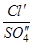
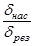

ГОСУДАРСТВЕННЫЙ ПРОИЗВОДСТВЕННЫЙ КОМИТЕТ
ПО ТРАНСПОРТНОМУ СТРОИТЕЛЬСТВУ СССР
УТВЕРЖДЕНА
Государственным
производственным комитетом
по транспортному
строительству СССР
12 ноября 1963 г.
ИНСТРУКЦИЯ
ПО СООРУЖЕНИЮ
ЗЕМЛЯНОГО ПОЛОТНА
АВТОМОБИЛЬНЫХ ДОРОГ
ВСН 97-63
ГОСУДАРСТВЕННЫЙ
ПРОИЗВОДСТВЕННЫЙ КОМИТЕТ
ПО ТРАНСПОРТНОМУ
СТРОИТЕЛЬСТВУ СССР
ИЗДАТЕЛЬСТВО «ТРАНСПОРТ»
МОСКВА - 1964
Инструкция по сооружению земляного полотна автомобильных дорог разработана взамен Технических правил возведения земляного полотна автомобильных дорог, изданных в 1946 г. б. Гушосдором МВД СССР, и Технологических правил строительства автомобильных дорог, изданных в 1956 г. б. Министерством автомобильного транспорта и шоссейных дорог СССР.
Инструкция составлена в развитие и дополнение глав СНиП II-Д.5-62 «Автомобильные дороги общей сети СССР. Нормы проектирования» и III-Д.5-62 «Автомобильные дороги. Правила организации строительства и производства работ. Приемка в эксплуатацию».
В I части Инструкции приведены данные о конструктивных элементах и требованиях к земляному полотну, сооружаемому в условиях равнинной, пересеченной и горной местности, на болотах, на поймах рек, на засоленных грунтах и в других особых условиях, за исключением возведения земляного полотна в условиях распространения подвижных песков и в районах вечной мерзлоты, которые охватываются специальными указаниями.
Во II части Инструкции подробно разработаны указания по производству работ при возведении земляного полотна с применением нового землеройно-транспортного оборудования, используемого как в дорожном строительстве, так и в смежных отраслях строительства.
При подготовке Инструкции были учтены результаты научных исследований, проведенных Союздорнии, ЦНИИС, НИИОМТП и другими организациями.
Кроме того, использованы материалы проектных и строительных организаций, отражающие современный опыт проектирования и возведения земляного полотна.
Инструкцию составили: доктора техн. наук Пузаков Н. А. и Хархута Н. Я. и канд. техн. наук Мотылев Ю. Л. (I часть), канд. техн. наук Вейцман М. И., инженеры: Митасов И. В., Левицкий Е. Ф. и Руманов А. З. (II часть) с участием канд. техн. наук Казарновского В. Д. (I часть) и инж. Денисова Е. М. (II часть).
|
ГОСУДАРСТВЕННЫЙ ПРОИЗВОДСТВЕННЫЙ КОМИТЕТ ПО ТРАНСПОРТНОМУ СТРОИТЕЛЬСТВУ СССР |
ВЕДОМСТВЕННЫЕ СТРОИТЕЛЬНЫЕ НОРМЫ |
ВСН 97-63 1963 г. |
|
|
ГОСУДАРСТВЕННЫЙ ПРОИЗВОДСТВЕННЫЙ КОМИТЕТ ПО ТРАНСПОРТНОМУ СТРОИТЕЛЬСТВУ СССР |
|||
|
Инструкция по сооружению земляного полотна автомобильных дорог |
|||
|
Взамен Технических правил возведения земляного полотна автомобильных дорог, 1946 г., и Технологических правил строительства автомобильных дорог, 1956 г. |
|
§ 1. Настоящая Инструкция является обязательной для применения организациями Государственного производственного комитета по транспортному строительству СССР при сооружении земляного полотна как на вновь строящихся, так и на реконструируемых существующих автомобильных дорогах.
При сооружении земляного полотна в районах распространения вечномерзлых грунтов и в сейсмических районах, кроме настоящей инструкции, следует руководствоваться также специальными указаниями.
§ 2. Земляное полотно необходимо сооружать в соответствии с требованиями действующих правил по технике безопасности и охране труда.
|
Внесена Государственным Всесоюзным дорожным научно-исследовательским институтом Союздорнии |
УТВЕРЖДЕНА |
Срок введения 1 апреля 1964 г. |
§ 3. Конструкции, грунты и методы возведения земляного полотна автомобильных дорог должны обеспечивать сохранение его проектной геометрической формы и независимо от погодных условий в любое время года обеспечивать необходимую прочность уложенной на нем дорожной одежды и безопасность движения.
Геометрическая форма земляного полотна должна способствовать также наименьшей заносимости дороги снегом и песком и, кроме того, увязываться с общим ландшафтом местности, быть простой и надежной в эксплуатации.
§ 4. Земляное полотно, а также все водоотводные, укрепительные и защитные сооружения необходимо возводить по утвержденным рабочим чертежам на основе предварительно разработанных проектов производства работ.
В процессе производства работ выполняющая их строительная организация обязана проверять соответствие проекта местным грунтовым и гидрологическим условиям, а в случае их несоответствия - требовать внесения в рабочие чертежи запроектированных сооружений соответствующих корректив.
Сметы и единичные расценки стоимости отдельных видов работ должны быть проверены на месте строительной организацией до начала работ.
§ 5. Основными проектными документами для возведения земляного полотна являются:
план трассы с указанием существующих и проектируемых сооружений;
план отвода земель;
продольный профиль земляного полотна;
принятые для данной дороги типовые поперечные профили земляного полотна;
проекты водоотводных и дренажных сооружений для отдельных сложных случаев;
покилометровая и попикетная ведомости объемов земляных работ с указанием методов производства работ;
планы подземных сооружений и проекты их переустройств;
планы в горизонталях отдельных трудных участков трассы;
ведомость реперов;
ведомость искусственных сооружений;
ведомость укрепительных работ и проекты укреплений;
ведомость рубки леса и корчёвки пней;
ведомость и проекты съездов и переездов;
геологическое и гидрологическое описание трассы с ведомостью лабораторных анализов состава и свойств грунтов;
паспорта внетрассовых резервов;
рабочие чертежи виражей, переходных кривых и уширений;
подробный график организации работ с пояснительной запиской;
смета и единичные расценки;
индивидуальные проекты на отдельные сложные или крупные объекты земляных работ;
ведомость объемов дополнительных работ (устройство водоотводов, расчистка русл, устройство дренажных сооружений и др.).
§ 6. Ширина проезжей части и ширина земляного полотна должны назначаться в зависимости от категории дорог:
Категория дорог I II III IV V
Ширина проезжей части, м 15,0 и более 7,5 7,0 6,0 4,5
Ширина земляного полотна, м 27,5 и более 15,0 12,0 10,0 8,0
Примечание. Ширина земляного полотна на особо трудных участках горной местности может быть уменьшена за счет уменьшения ширины обочин. Наименьшую ширину обочин в этом случае принимают для дорог I и II категорий - 1,5 м и для дорог остальных категорий - 1 м.
§ 7. Конструкции земляного полотна следует разрабатывать на основе данных о рельефе, почвенно-грунтовых, геологических, гидрологических и климатических условиях с учетом дорожно-климатического районирования территории СССР (табл. 1, рис. 1), а также типа местности по характеру и степени увлажнения (табл. 2).
Таблица 1
Дорожно-климатическое районирование территории СССР
|
Характеристика |
Примерные географические границы зоны |
|
|
I |
Зона вечной мерзлоты |
Включает зоны тундры, лесотундры и северо-восточную часть лесной зоны. Расположена севернее линии Мончегорск - Поной - Несь - Ошкурья - Сухая Тунгуска - Канск - государственная граница и Биробиджан - Де-Кастри. |
|
II |
Зона избыточного увлажнения |
К югу от границы I зоны (включает зону лесов) до линии: Львов - Житомир - Тула - Горький - Ижевск - Кыштым - Томск - Канск и далее на участке Биробиджан - Де-Кастри южнее I зоны до границы с Китайской Народной Республикой. |
|
III |
Зона значительного увлажнения в отдельные годы |
Включает лесостепную зону к югу от II зоны до линии; Кишинев - Кировоград - Белгород - Куйбышев - Магнитогорск - Омск - Бийск - Туран; Кубань и западная часть Северного Кавказа также относятся к III зоне. |
|
IV |
Зона недостаточного увлажнения |
К югу от границы III зоны до границы V зоны, включает степную зону. |
|
V |
Зона засушливая |
К юго-востоку от линии: Джульфа - Степанакерт - Буйнакск - Кизляр - Волгоград и далее южнее на 200 км линии Уральск - Актюбинск - Караганда до северного побережья оз. Балхаш. Включает пустынную и пустынно-степную зоны с распространением засоленных грунтов. |
Примечание. Черноморское побережье, предкавказские степи, за исключением Кубани и западной части Северного Кавказа, относятся к IV зоне, горные области выше 1000 м, а также малоизученные районы могут относиться к той или иной зоне, в зависимости от местных природных условий, учитываемых в каждом конкретном случае.
Таблица 2
Типы местности по характеру и степени увлажнения
|
Тип местности |
Признаки увлажнения |
|
|
1 |
Сухие места без избыточного увлажнения |
Поверхностный сток обеспечен, грунтовые воды не оказывают существенного влияния на увлажнение верхней толщи грунтов |
|
2 |
Сырые места с избыточным увлажнением в отдельные периоды года |
Поверхностный сток не обеспечен, но грунтовые воды не оказывают существенного влияния на увлажнение верхней толщи грунтов; почвы с признаками поверхностного заболачивания. Весной и осенью появляется застой воды на поверхности |
|
3 |
Мокрые места с постоянным избыточным увлажнением |
Грунтовые воды или длительно стоящие (более 20 суток) поверхностные воды влияют на увлажнение верхней толщи грунтов; почвы торфяные, оглеенные с признаками заболачивания, а также солончаки и постоянно орошаемые территории засушливой зоны |
Необходимо с наибольшей полнотой учитывать опыт эксплуатации дорог, ранее построенных в данном районе.
§ 8. При проектировании и возведении земляного полотна автомобильных дорог грунты следует классифицировать согласно табл. 3.
Таблица 3
Классификация грунтов для проектирования и сооружения земляного полотна автомобильных дорог
А. Глинистые грунты
|
Показатели |
Наименование разновидностей глинистых грунтов |
||
|
число пластичности |
содержание песчаных частиц, % от веса сухого грунта |
||
|
Супесь |
1 - 7 |
> 50 |
Супесь легкая крупная |
|
1 - 7 |
> 50 |
Супесь легкая |
|
|
1 - 7 |
20 - 50 |
Супесь пылеватая |
|
|
1 - 7 |
< 20 |
Супесь тяжелая пылеватая |
|
|
Суглинок |
7 - 12 |
> 40 |
Суглинок легкий |
|
7 - 12 |
< 40 |
Суглинок легкий пылеватый |
|
|
12 - 17 |
> 40 |
Суглинок тяжелый |
|
|
12 - 17 |
< 40 |
Суглинок тяжелый пылеватый |
|
|
Глина |
17 - 27 |
> 40 |
Глина песчанистая |
|
17 - 27 |
Не нормируется |
Глина пылеватая (полужирная) |
|
|
> 27 |
Не нормируется |
Глина жирная |
|
Примечания: 1. При содержании частиц крупнее 2 мм в количестве 20 - 50 % наименование грунта дополняется словом «гравелистый» при окатанных частицах и «щебенистый» при острореберных, не окатанных частицах.
2. В табл. 3 указано для супесей легких крупных содержание песчаных частиц размером 2 - 0,25 мм, для остальных грунтов - размером 2,0 - 0,05 мм.
Б. Несцементированные обломочные грунты
|
Распределение частиц по крупности, % от веса сухого грунта |
|
|
Крупнообломочные |
|
|
Грунт щебенистый (при преобладании окатанных частиц - галечниковый) |
Вес частиц крупнее 10 мм составляет более 50 % |
|
Грунт дресвяный (при преобладании окатанных частиц - гравийный) |
Вес частиц крупнее 2 мм составляет более 50 % |
|
Песчаные |
|
|
Песок гравелистый |
Вес частиц крупнее 2 мм менее 50 %, но более 25 % |
|
Песок крупный |
Вес частиц крупнее 0,5 мм составляет более 50 % |
|
Песок средней крупности |
Вес частиц крупнее 0,25 мм составляет более 50 % |
|
Песок мелкий |
Вес частиц крупнее 0,1 мм составляет более 75 % |
|
Песок пылеватый |
То же, менее 75 % |
Примечание. Для установления наименования вида крупнообломочного или песчаного грунта по таблице последовательно суммируют проценты содержания частиц исследуемого грунта: сначала крупнее 10 мм, затем крупнее 2,0 мм, далее крупнее 0,5 мм и т.д.
Наименование грунта принимается по первому удовлетворяющему показателю в порядке расположения наименований в таблице.
§ 9. Прочность и устойчивость земляного полотна обеспечиваются: тщательным отводом от земляного полотна поверхностной воды и тщательным уплотнением грунта, а в соответствующих условиях также отводом воды из-под проезжей части, необходимым возвышением насыпей над уровнем стояния воды и возведением их частично или полностью из устойчивых грунтов, в необходимых случаях - из привозных грунтов; понижением уровня грунтовых вод в выемках или заменой при необходимости грунта в выемках; устройством полок и назначением соответствующей крутизны откосов, и укреплением их для предохранения от оползания, размыва или развевания.
При возведении земляного полотна на косогоре устойчивость его обеспечивается также устройством специальных инженерных сооружений (дренажей, подпорных и одевающих стен, барражированием действующих оврагов и правильным расположением врезки в косогор).
§ 10. Незаносимость дороги снегом обеспечивается, наряду с проложением дороги в плане по возможности вдоль направления господствующих (для зимнего периода) ветров, также возвышением бровки полотна в насыпях над поверхностью снегового покрова согласно § 16. Заносимые участки в необходимых случаях должны ограждаться снегозащитными устройствами.
§ 11. Земляное полотно следует проектировать и возводить, руководствуясь типовыми поперечными профилями (рисунки 2, 3, 4).
По индивидуальным проектам, разработанным на основе предварительных детальных геологических и гидрологических обследований и испытаний грунтов, земляное полотно сооружается в следующих случаях:
при высоте насыпей и глубине выемок более 12 м;
при возведении насыпей на слабых грунтах, на поймах рек, староречий, озер и на болотах глубиной более 4 м или при меньшей глубине, когда не предусматривается выторфовывание болот;
при расположении земляного полотна на оползневых склонах;
при пересечении насыпями крутых и глубоких балок и оврагов;
Рис. 2. Типовые поперечные профили земляного полотна в насыпях (для дорог I - III категории):
а - насыпь высотой до 0,6 м с треугольными лотками; б - насыпь высотой до 0,6 м с трапецеидальными кюветами; в - насыпь высотой до 6 м из привозного грунта; г - насыпь высотой до 1,5 м с резервом; д - насыпь высотой от 6 до 12 м из привозного грунта; е - насыпь высотой от 6 до 12 м с резервом
при устройстве выемок в неблагоприятных гидрогеологических условиях, а также при разработке выемок взрывами на выброс или с применением гидромеханизации;
при возведении насыпей методами гидромеханизации;
при наличии других неблагоприятных геологических и гидрологических условий - карстовых явлений, избыточно засоленных грунтов, трещин по поверхности земли, селевых потоков, каменных обвалов и снежных лавин, на участках, где возможно образование пучин и др.;
в районах шахт и других подземных выработок.
Кроме того, рекомендуется сооружать земляное полотно по индивидуальному проекту на косогорах круче 1:3 при неблагоприятных инженерно-геологических условиях.
§ 12. Земляное полотно в целях создания благоприятного водного режима и предохранения от снежных заносов, а также для облегчения снегоочистки следует, как правило, устраивать в насыпях (рис. 2).
Минимальная высота насыпей определяется с учетом требований:
минимального допустимого превышения дна корыта над поверхностью земли и над расчетным уровнем грунтовых и поверхностных вод;
Рис. 3. Типовые поперечные профили земляного полотна на косогорах с крутизной 1:10 до 1:5:
а - насыпь с устройством резерва; поверхность косогора перед обсыпкой насыпи разрыхляется; б - насыпь с нагорной канавой; в - вариант устройства канавы
предохранения дороги от заносов и удобства снегоборьбы. Из этих двух определений в расчет принимается большая высота насыпи.
§ 13. Возвышение низа дорожной одежды над расчетным уровнем грунтовых вод или длительно стоящих (более 20 суток) поверхностных вод на сырых и мокрых участках (2-го и 3-го типа местности по табл. 2) не должно быть менее указанного в табл. 4.
§ 14. Возвышение низа дорожной одежды над поверхностью земли на участках с необеспеченным стоком поверхностных вод (2-й тип местности по табл. 2) должно быть не менее указанного в табл. 5.
§ 15. Земляное полотно в насыпях при отсутствии опасности снегозаносов во всех дорожно-климатических зонах в сухих местах и обеспеченном поверхностном стоке (1-й тип увлажнения местности) сооружают согласно типовым поперечным профилям «а», «б» и «г» (см. рис. 2) при условии расположения низа дорожной одежды не ниже поверхности земли и обеспечения надежного отвода воды от земляного полотна и основания проезжей части.
Рис. 4. Типовые поперечные профили земляного полотна в выемках:
а - раскрытая выемка глубиной до 1 м; б - выемка глубиной до 1 м, разделанная под насыпь; в - выемка глубиной от 1 до 12 м в однородных глинистых и песчаных грунтах при отсутствии косогорности; г - выемка глубиной от 1 до 12 м в легковыветривающихся скальных грунтах; д - выемка на косогоре крутизной более 1 : 5; е - выемка в неоднородных пластах грунтов
1 - рыхлый грунт; 2 - сильно выветрившаяся скала; 3 - слабо выветрившаяся скала
§ 16. Для обеспечения размещения снега, сбрасываемого при очистке дороги, и для обеспечения беспрепятственного переноса снега через дорожное полотно высота насыпи (по бровке) назначается на 0,4 - 0,6 м выше расчетной высоты снежного покрова (h) по данным ближайшей метеорологической станции, принимаемой с учетом вероятности превышения 5 %.
Таблица 4
Наименьшее возвышение низа дорожной одежды над расчетным уровнем грунтовых вод или уровнем длительного (более 20 суток) стояния поверхностных вод
|
Наименьшее возвышение низа дорожной одежды (в наиболее низком месте поперечного профиля) над уровнем воды, м |
||||
|
II зона |
III зона |
IV зона |
V зона |
|
|
Пески средние и мелкие, супеси легкие |
0,7 |
0,6 |
0,5 |
0,4 |
|
Пески пылеватые, супеси тяжелые |
1,2 |
0,8 |
0,8 |
0,7 |
|
Супеси пылеватые, супеси тяжелые пылеватые, суглинки легкие, суглинки легкие пылеватые, суглинки тяжелые пылеватые |
1,9 |
1,7 |
1,4 |
1,3 |
|
Суглинки тяжелые, глины пылеватые, глины песчанистые, глины жирные |
1,9 |
1,4 |
1,1 |
1,0 |
Примечания: 1. Указания по возвышению насыпи над уровнем грунтовых вод для засоленных грунтов см. в § 72.
2. На участках с необеспеченным поверхностным стоком возвышение низа дорожной одежды над поверхностью земли должно также удовлетворять требованиям табл. 5.
3. Расчетный уровень грунтовых вод принимается по наивысшему возможному уровню грунтовой воды, в частности, по верхней линии зоны оглеения почво-грунтов или по поверхности торфяного слоя почвы.
4. Возвышение дна корыта по нижней кромке проезжей части над горизонтом грунтовых вод, пониженных путем устройства дренажа, рекомендуется принимать на 25 % больше, чем указано в табл. 4.
5. Для песков крупных и очень крупных, не теряющих устойчивость во влажном состоянии, возвышение не нормируется.
Насыпи на открытых местах снегозаносимой местности, имеющие высоту меньшую, чем по расчету, должны ограждаться снегозащитными средствами.
Примечание. Снегозаносимой считается местность, где возможен перенос снега при метелях в заметном количестве. Не подверженными снежным заносам считаются участки дорог, защищенные густым лесом или расположенные в местности, где по климатическим условиям не бывает переноса снега. Участки дорог, проходящие по разрывам в лесных массивах, могут подвергаться снежным заносам.
§ 17. Для создания нормальных условий производства работ и для обеспечения устойчивости земляного полотна устраивают боковые водоотводные канавы (кюветы) трапецеидального и треугольного сечения (см. рис. 2, а и б). В равнинной местности при высоте насыпей менее 2 м продольные водоотводные канавы устраивают с обеих сторон насыпей. Сечение канав устанавливают гидравлическим расчетом из условия пропуска всей поступающей воды. Глубину канав назначают такой, чтобы расстояние от дна канавы до низа дренажных устройств, отводящих воду от основания проезжей части, было не менее 20 см. Профиль продольного водоотвода должен быть увязан с отметками русла водотоков у искусственных сооружений или мест, куда выпускается вода. Боковые канавы должны иметь продольные уклоны не менее 5 ‰, а в исключительных случаях 3 ‰.
Таблица 5
Наименьшее возвышение низа дорожной одежды над поверхностью земли (на участках с необеспеченным поверхностным стоком)
|
Наименьшее возвышение низа дорожной одежды (в наиболее низком месте поперечного профиля), м |
||||
|
II зона |
III зона |
IV зона |
V зона |
|
|
Пески средние и мелкие, супеси легкие |
0,50 |
0,40 |
0,30 |
0,20 |
|
Пески пылеватые, супеси тяжелые |
0,60 |
0,50 |
0,40 |
0,30 |
|
Супеси пылеватые, супеси тяжелые пылеватые, суглинки легкие, суглинки легкие пылеватые, суглинки тяжелые пылеватые |
0,80 |
0,60 |
0,50 |
0,40 |
|
Суглинки тяжелые, глины пылеватые, глины песчанистые и глины жирные |
0,70 |
0,60 |
0,40 |
0,40 |
Ширина по дну боковой канавы трапецеидального сечения принимается не менее 0,4 м, а нагорной - не менее 0,5 м. При недостатке грунта из боковых канав для отсыпки насыпи они могут быть уширены и превращены в канавы-резервы (рис. 2, г и е).
Участки, на которых не могут быть обеспечены требуемые уклоны для канав, должны быть отнесены по условиям увлажнения ко 2-му типу местности (см. табл. 2) и на них следует возвести насыпи высотой не менее указанных в табл. 5.
Примечания: 1. Водоотвод молено не устраивать на участках с песчаными и другими хорошо дренирующими грунтами, а также в отдельных районах IV - V климатических зон, где осадки невелики и они быстро впитываются либо испаряются. В этих условиях и равнинная местность при неполностью обеспеченном поверхностном стоке может быть отнесена к 1-му типу по условиям увлажнения (см. табл. 2).
2. Если отвод поверхностной воды по условиям рельефа не может быть обеспечен, но на глубине до 3 - 5 м залегает водопроницаемый грунт, разрешается устройство поглощающих колодцев. Поглощающие колодцы устраивают в стороне от дороги и заполняют хорошо дренирующим материалом.
3. В равнинной местности допускается устройство в 4 - 5 м от подошвы насыпи бессточных резервов (испарительных, бассейнов) с поперечными перемычками, устраиваемыми для преграждения продольного течения воды и скопления ее в местных блюдцеобразных понижениях; заполнение бассейнов допускается не более чем на 50 % их высоты.
Рис. 5. Замена неустойчивого грунта дренирующим:
а - в насыпи; Н не менее 1,0 - 1,2 м во II зоне, и не менее 0,8 - 1,0 м в III зоне, считая от поверхности покрытия; б - в выемке
Естественные бермы шириной не менее 2 м между подошвой откоса насыпи и бровкой резерва оставляют при закладке бессточных резервов и в случаях возможного подмыва подошвы насыпей, в пределах поймы рек, при разнице отметок бровки земляного полотна и дна резерва более 4 м, а также при 3-м типе местности (см. табл. 2).
В равнинной местности с поперечным уклоном менее 1:10 резервы или боковые канавы закладывают с обеих сторон полотна; на косогорах с уклоном от 1:10 до 1:5 - с нагорной стороны, с обеспечением стока воды.
§ 18. Во всех случаях, когда оказывается невозможным выполнить требования § 13 - 14 в отношении возвышения низа дорожной одежды над уровнем воды либо над поверхностью земли, следует предусматривать: устройство дренажей для понижения уровня грунтовых вод (при коэффициенте фильтрации грунта более 1 м/сутки) или для их перехвата, замену неустойчивого во влажном состоянии грунта в выемке или в верхней части насыпи устойчивым (рис. 5), устройство изолирующих водонепроницаемых (рис. 6) или капилляропрерывающих прослоек из дренирующих материалов (рис. 7).
Поперечный уклон основания слоя дренирующего грунта (см. рис. 5) принимают 40 ‰.
§ 19. Изолирующие прослойки, предохраняющие верхнюю часть земляного полотна от увлажнения снизу, устраивают на всю ширину земляного полотна (сплошные) или только на ширину проезжей части (замкнутые) из грунта, обработанного битумом или другим гидрофобным материалом. Толщина прослойки принимается (в зависимости от способа возведения насыпи) 3 - 8 см, поперечный уклон 30 ‰. Глубина заложения прослойки от поверхности покрытия должна быть не менее указанных ниже величин:
Дорожно-климатические зоны II III IV V
Глубина заложения верха прослойки
от поверхности покрытия, м 0,90 0,80 0,75 0,65
Рис. 6. Насыпь с водонепроницаемой прослойкой:
а - сплошная прослойка; б - замкнутая прослойка;
1 - слой грунта, обработанного органическими вяжущими материалами, толщиной 3 - 5 см; 2 - местный грунт; h - не менее 0,80 - 0,90 м во II - III зонах и не менее 0,65 - 0,75 м в IV - V зонах, считая от поверхности покрытия
Рис. 7. Насыпь с капилляропрерывающей прослойкой:
1 - крупный гравий, щебень; 2 - слои гравия, щебня, гравелистого песка толщиной 10 - 15 см; 3 - предохранительный противозаиливающий слой песка (в основании прослойки) или мелкого угля толщиной 3 - 5 см; h - не менее 0,80 - 0,90 м во II - III зонах, не менее 0,65 - 0,75 м в IV - V зонах от поверхности покрытия
Прослойку закладывают на 20 см выше возможного наивысшего горизонта грунтовых вод или горизонта длительного подтопления насыпи поверхностными водами.
§ 20. Капилляропрерывающие прослойки из фильтрующих материалов устраивают толщиной 15 - 10 см в зависимости от крупности материала. Прослойка должна быть тщательно предохранена от загрязнения, для чего снизу и сверху прослойки укладывают слой мелкого гравия толщиной 3 - 5 см. Капилляропрерывающие прослойки устраивают во всю ширину земляного полотна с уклоном 30 ‰ от оси к откосам. В местах сопряжений прослойки с откосами укладывают крупный гравий или камень на длине 0,25 м.
§ 21. Высоту насыпей и оградительных дамб у средних и больших мостов и на подходах к ним назначают с таким расчетом, чтобы бровка земляного полотна возвышалась не менее чем на 0,5 м, а бровка незатопляемых регуляционных сооружений и берм не менее чем на 0,25 м над расчетным горизонтом воды с учетом подпора, а при широких поймах - с учетом также волны с накатом на откос. Для насыпей, кроме того, должны учитываться требования табл. 4 в случае длительного (более 20 суток) стояния воды. Бровка земляного полотна на подходах к мостам через малые водотоки и на участках труб должна возвышаться над горизонтом подпертой воды перед входом в сооружение не менее чем на 0,6 м для мостов и труб при безнапорном режиме работы сооружения и не менее чем на 1,0 м при напорном и полунапорном режиме.
Вероятность превышения расчетных расходов для проектирования насыпей автомобильных дорог как на подходах к искусственным сооружениям, так и на подтопляемых участках, идущих вдоль водотоков, следует принимать:
для дорог I и II категории - 1 %
для дорог III категории - 2 %
для дорог IV и V категории - 3 %
Примечание. Подпор воды у сооружения для назначения высоты насыпей, оградительных и регуляционных сооружений определяется с учетом возможного размыва русла под мостом, но не более 50 % от расчетной площади русла для несудоходных рек и 35 % для судоходных.
§ 22. Земляное полотно на местности, имеющей поперечный уклон более 1:10, устраивают в соответствии с поперечными профилями, приведенными на рис. 3. На косогорах крутизной 1:5 и более принимаются меры для предотвращения оползания насыпей по склону.
Во избежание размыва земляного полотна поверхностными водами, поступающими с нагорной стороны, должны быть устроены нагорные канавы, располагаемые на расстоянии не менее 5 м от наружной бровки выемки или 2 м от основания насыпи (рис. 3, б, в) с устройством банкета за счет грунта, вынутого из канавы: поверхность банкета планируют с уклоном 20 - 40 ‰ в сторону от насыпи. На косогорах крутизной менее 1:5, а также при выемках в скальных породах нагорные канавы устраивают без банкета. На косогорах круче 1:5, сложенных нескальными грунтами, для обеспечения стока воды с поверхности между нагорной канавой и бровкой выемки эти участки планируют и ликвидируют места, где может задерживаться вода.
§ 23. В местах косых пересечений тальвегов, ручьев и мелких речек устраивают подводящие или спрямляющие русла, которые обеспечивают спокойный проход воды через сооружение. Эти русла должны быть укреплены соответственно расчетной скорости течения воды в период паводка.
При устройстве нагорных и водоотводных канав всех видов необходимо обеспечить: достаточную для пропуска воды глубину и площадь поперечного сечения, надлежащий продольный уклон, укрепление дна и откосов (если оно требуется) и свободный выпуск воды в сторону от полотна.
Спуск воды из нагорных и забанкетных канав и резервов должен осуществляться в боковые долины, ложбины, низины, к руслам искусственных сооружений или быстротокам. Места выпуска воды в естественные водотоки или в овраги необходимо укреплять во избежание размыва. Для предупреждения заболачивания вблизи земляного полотна, лощин и низин, в которые выпускается вода, в необходимых случаях устраивают соответствующие водоотводные канавы.
Углубление нагорной канавы до водоносного слоя запрещается, за исключением случаев, когда нагорная канава служит для перехватывания грунтовых вод.
В нагорных канавах устраивают перепады, быстротоки или водобойные колодцы, если по условиям рельефа местности не может быть выдержан наибольший допускаемый уклон на канавы. Разрешается также в этом случае устраивать ступенчатые нагорные канавы. Каждая отдельная канава, располагаемая по косогору вниз, начинается у выхода вышележащей канавы на косогор.
Величина перекрытия конца вышележащей с началом нижней канавы и тип укрепления склона в местах выхода канав устанавливаются проектом в зависимости от местных условий.
§ 24. Грунтовые воды, которые могут оказать вредное влияние на устойчивость земляного полотна, должны быть перехвачены дренажными сооружениями и отведены в понижения местности. Типы и размеры дренажных сооружений зависят от характера и количества грунтовых вод и рода напластований грунтов. Эти сооружения выполняют по специальным проектам, составляемым на основании материалов инженерно-геологических обследований. При этом следует: проверить расчетом устойчивость основания и откосов земляного полотна, составить конструктивные чертежи дренажных устройств и укреплений и разработать организацию механизированных работ по их осуществлению.
Для обеспечения устойчивости откосов в глубоких выемках (глубже 6 м) устраивают полки шириной не менее 3 м, располагаемые в зависимости от напластований грунтов и выхода грунтовых вод, но не более чем через 6 м по высоте. Полки используются также для размещения по ним дренажей и других водоотводных устройств.
Во всех случаях при устройстве дренажей должен быть обеспечен по дну дренажных устройств непрерывный продольный уклон не менее 3 ‰ и не более 30 ‰. При необходимости проложить дренаж с большим уклоном дно дренажа делают ступенчатым.
Места ступеней совмещают со смотровыми колодцами. Во всех случаях должен быть обеспечен свободный выпуск воды из дренажей в пониженные места в сторону от земляного полотна. Выходы дренажа подлежат защите от промерзания и не должны подтопляться поверхностными водами.
При прохождении дороги по косогору или в выемке при наличии водоносных горизонтов для предотвращения сползания насыпи вместе с основанием или оползания откосов выемки грунтовые воды должны быть перехвачены продольным дренажем с выпуском воды в пониженные места, в ближайший лог или в искусственное сооружение.
В местах переходов из выемки в насыпь и на пересечениях балок и оврагов для перехвата выклинивающихся грунтовых вод и отвода их в сторону устраивают поперечные дренажи - прорези-преградители. Места выпуска дренажей необходимо защитить от замерзания воды. Отдельные ключи в основании насыпей должны быть каптированы и вода отведена за пределы полотна.
Если имеется поперечный приток грунтовой воды, то для осушения грунтов земляного полотна при расположении водоносного слоя на глубине от дна корыта менее указанной в табл. 4 устраивают продольные подкюветные дренажи, которые должны быть защищены от проникания поверхностных вод из кюветов устройством глинобетонной подушки толщиной не менее 0,5 м с прокладкой между этой подушкой и верхом дренирующего заполнения слоя мха толщиной 5 см или дерна травой вниз.
Для сбора и отвода воды из выходящих на откос выемки слабоводоносных пластов грунтов слоистого строения устраивают откосные дренажи с выпуском воды в кювет или подкюветный дренаж. Отвод воды из отдельных небольших ключей, выходящих на откос выемки, осуществляется при помощи поперечных прорезей с выпуском воды в кювет.
Для перехвата водоносных пластов, находящихся на большой (более 10 м) глубине, устраивают штольни. Основание штольни, как правило, должно находиться в водонепроницаемом грунте. Штольни устраивают по индивидуальным проектам.
Глубину заложения дренажа выбирают в зависимости от глубины залегания грунтовых вод, их мощности, а также глубины промерзания и глубины залегания водоупора. Дренажные устройства, предназначенные для перехвата грунтовых вод, располагают ниже глубины промерзания грунтов в водонепроницаемом слое. Глубину несовершенных («висячих») дренажей, применяемых для понижения уровня грунтовых вод при отсутствии близкого водоупорного слоя, определяют из условия, чтобы верхняя граница капиллярно-увлажненной зоны грунтов находилась ниже половины глубины промерзания на оси земляного полотна.
§ 25. Откосы насыпей, возводимых из боковых резервов, при высоте насыпей на дорогах I - III категорий до 1,5 м и на дорогах IV - V категорий до 1 м, принимают, как правило, не круче 1:3.
Крутизну откосов более высоких насыпей и насыпей, возводимых из привозных грунтов, а также откосов конусов железобетонных, рамных, свайно-эстакадных и деревянных мостов принимают:
для насыпей из камня слабовыветривающихся пород при высоте до 6,0 м - 1:1 ¸ 1:1,3; до 12 м - 1:1,3 ¸ 1:1,5;
для насыпей из крупного и средней крупности песков, гравия, гальки, щебенистых и дресвяных грунтов слабовыветривающихся пород при высоте насыпы до 12 м - 1:1,5;
для насыпей из прочих грунтов, пригодных для возведения земляного полотна, при высоте насыпи до 6,0 м - 1:1,5; до 12,0 м - в верхней части (до 6 м) - 1:1,5, в нижней части - 1:1,75.
При строительстве дорог I - III категорий в пригородной зеленой зоне или в других живописных местах для лучшей увязки дорог с окружающей местностью откосы насыпей высотой до 1,5 м, устраиваемых из привозных грунтов, допускается проектировать такой же крутизны, как и при насыпях, возводимых из боковых резервов.
Для обеспечения незаносимости дороги снегом и песком насыпи высотой до 1,5 м следует проектировать с более пологими откосами (1:4 - 1:6).
Крутизна откосов насыпей высотой более 12 м, а также насыпей, сооружаемых с применением гидромеханизации, устанавливается по индивидуальным проектам.
§ 26. Откосы земляных дамб регуляционных сооружений с речной стороны назначают не круче 1:2, а с противоположной стороны - не круче 1:1,5; ширину дамб поверху принимают не менее 2,0 м.
Крутизну откосов траверсов, затопляемых с обеих сторон, принимают 1:2.
§ 27. Земляное полотно в выемках проектируют согласно типовым поперечным профилям, представленным на рис. 4.
Крутизну откосов выемок глубиной до 12,0 м принимают:
а) для выемок в однородных глинистых и песчаных грунтах 1:1,5;
б) для выемок в лёссах в условиях засушливого климата от 1,0:0,1 до 1:0,5 (рис. 8);
в) для выемок в лёссах в других условиях, а также выемок в лёссовидных грунтах в зависимости от свойств грунтов и глубины выемки - от 1:0,5 до 1:1,5;
Рис. 8. Выемка в сухом лёссе:
1 - планировка; 2 - нагорная канава; 3 - разрыхление и уплотнение на глубину 0,4 м от дна корыта по всей ширине земляного полотна; 4 - планировка на ширину, равную высоте откоса
г) для выемок в крупнообломочных грунтах (щебенистых гравелистых и др.) в зависимости от характера напластований, свойств грунтов и глубины выемок - от 1:1 до 1:1,5;
д) для выемок в слабовыветривающихся скальных породах, при отсутствии трещиноватости и наклона пластов в сторону полотна 1:0,2;
е) для выемок в прочих скальных породах в зависимости от свойств грунта, характера напластования и глубины выемки - от 1:0,2 до 1:1,5.
§ 28. Выемки глубиной до 1 м из условия незаносимости их снегом и песком допускается проектировать с более пологими откосами (1:4 - 1:6). Целесообразно также в этом случае предусматривать раскрытые выемки или выемки, разделанные под насыпь (рис. 4, а и б).
При устройстве выемок глубиной более 2 м в мелких и пылеватых песках, переувлажненных пылеватых суглинках, в легковыветривающихся сильно трещиноватых скальных породах, а также в вечномерзлых грунтах, переходящих в мягкопластичное состояние, следует предусматривать закюветные полки шириной 0,5 - 2,0 м (в зависимости от особенности грунтов, крутизны и высоты откосов выемки). В отдельных случаях при соответствующем обосновании вместо устройства закюветных полок допускается принимать более пологие откосы.
§ 29. На устойчивых горных склонах крутизной более 1:3 земляное полотно, как правило, следует проектировать в виде полки, врезанной в косогор (рис. 9).
Рис. 9. Земляное полотно, устраиваемое на крутом косогоре в виде полки в слабовыветрившихся или невыветрившихся скальных породах
В тех случаях, когда не могут быть выполнены откосы требуемой крутизны, устраивают подпорные либо одевающие стенки. На участках горных склонов с отвесными стенками из прочных массивных горных пород или при благоприятных напластованиях земляное полотно располагают в полутоннелях и на балконах.
В выемках, устраиваемых на склонах крутизной более 1:3, между подошвой нагорного откоса и канавой в уровне бровки земляного полотна предусматривают полки шириной 0,5 - 1,0 м (в зависимости от крутизны откосов, особенностей грунтов выемки и поверхности склона).
В выемках с откосами 1:1 и круче в легко выветривающейся скале или в лёссе между подошвой откоса и канавой на уровне бровки земляного полотна, также устраиваются полки шириной от 0,5 до 2 м в зависимости от крутизны склонов, откосов выемки и от характера грунтов (см. рисунки 4 г, е и 8).
Примечание. В выемках, прорезающих неоднородные пласты грунта, допускаются откосы переменной крутизны, соответствующей устойчивости грунтов (см. рис. 4, е).
§ 30. Крутизна наружных откосов боковых канав и резервов назначается в зависимости от вида грунта 1:1,5 и менее, а в скальных грунтах от 1:0,1 до 1,1 в зависимости от прочности скалы.
§ 31. Крутизну откосов выемок глубиной более 12 м, выемок, разрабатываемых с применением массовых взрывов на выброс или гидромеханизации, а также выемок, устраиваемых при неблагоприятных гидрогеологических условиях, независимо от их глубины назначают по индивидуальным проектам.
§ 32. Возведение насыпей следует предусматривать из грунтов выемок, боковых и сосредоточенных резервов. При уклоне местности более 1:10 резервы необходимо закладывать с нагорной стороны.
§ 33. Размеры резервов определяются потребностью в грунте для отсыпки насыпей. Порядок определения геометрических размеров резервов приведен в приложении 5.
Глубина боковых резервов, как правило, не должна превышать 1,5 м. При закладке боковых резервов необходимо обеспечить отвод воды из них к водопропускным сооружениям или в сторону от дороги.
§ 34. Грунты, применяемые для возведения насыпей, должны обеспечивать необходимую прочность и устойчивость земляного полотна.
Камень, гравелистые и. щебенистые грунты, пески, за исключением пылеватых песков, легкие супеси, а также различные достаточно водоустойчивые местные материалы и отходы промышленности, металлургические шлаки, хорошо обожженные горелые породы и др. допускаются для возведения насыпей без ограничений.
Глинистые грунты допускаются для возведения насыпей при влажности их, не превышающей 1,10 от оптимальной при стандартном уплотнении.
§ 35. Легкие пылеватые суглинки и тяжелые пылеватые супеси в сырых и мокрых местах на дорогах с усовершенствованными капитальными покрытиями во II и III климатических зонах допускаются для отсыпки лишь нижней части насыпи. Верхняя часть насыпей на высоту 1,2 м при цементобетонных и 1,0 м при асфальтобетонных покрытиях во II зоне и на высоту 1,0 - 0,8 м соответственно в III зоне (считая от поверхности покрытия) должна быть отсыпана из непылеватых, преимущественно песчаных и легких супесчаных грунтов. Насыпи из привозных песчаных и супесчаных грунтов рекомендуется отсыпать также при сооружении дорог с усовершенствованными капитальными покрытиями во II климатической зоне в местах, где избыточная влажность местных пылеватых суглинков и пылеватых супесей сохраняется в течение всего строительного сезона (включая также теплый период года).
При замене местного грунта, в верхней части земляного полотна привозным нормы возвышения дна корыта над уровнем воды (см. табл. 4) и поверхностью земли (см. табл. 5) следует относить к привозному грунту.
§ 36. Насыпи в местах примыкания к устоям и консолям мостов, конусы мостов и путепроводов следует возводить из дренирующих грунтов.
В устоях мостов или путепроводов, имеющих обратные стенки, для отвода воды должны быть устроены поперечные дренажи. Переход от дренирующих грунтов насыпи к недренирующим должен быть плавным (с уклоном 1:5).
§ 37. Для возведения насыпей не допускаются:
илистые грунты: ил, мелкий песок с примесью торфа или ила, жирные глины с примесью ила;
недренирующие грунты, содержащие легкорастворимые соли в количестве более 8 % при хлоридном и более 5 % при сульфатном засолении;
торф;
жирные глины, меловые, тальковые грунты и трепелы при наличии грунтовых вод на глубине менее 1,0 м и на поймах рек;
опоки, мергели и сланцеватые глины допускается применять только в нижней части насыпей высотой более 2 м.
Краткое описание перечисленных грунтов приведено в приложении 1.
§ 38. Насыпи необходимо возводить из однородного грунта, горизонтальными слоями на всю ширину насыпи. Толщина слоя зависит от способов уплотнения и устанавливается по указаниям § 368.
Запрещается покрывать откосы насыпей грунтом с худшими дренирующими свойствами, чем у грунта, уложенного в теле насыпи; исключением является покрытие глинистым грунтом песчаных откосов для защиты от выдувания.
При устройстве насыпей из неоднородных грунтов должны быть соблюдены следующие условия:
менее дренирующие грунты следует располагать в нижних слоях, а более дренирующие - в верхних слоях насыпи, за исключением случаев отсыпки насыпей, основание которых должно быть защищено дренирующим слоем от увлажнения грунтовыми и капиллярными водами;
поверхность недренирующего грунта при укладке по нему слоя дренирующего грунта должна иметь поперечные уклоны от оси к краям насыпи не менее 40 ‰;
при расположении недренирующего грунта над дренирующими (например, при укладке в нижнюю часть насыпи слоя, предохраняющего верхнюю часть от капиллярной влаги) поверхность контакта устраивают горизонтальной.
§ 39. Воспрещается беспорядочная отсыпка различных по своим свойствам грунтов в насыпь, так как при этом возможно образование внутри насыпи водяных мешков и плоскостей скольжения вышележащих грунтов по наклонным поверхностям глинистых грунтов. Не допускается также уширение недренирующими грунтами существующих насыпей, отсыпанных из дренирующих грунтов.
§ 40. При необходимости уширить ранее отсыпанную насыпь необходимо соблюдать следующие условия:
грунт уширения должен быть, как правило, однороден с грунтом старой насыпи; при неоднородности присыпаемый грунт должен обладать лучшими дренирующими качествами;
в основании досыпаемой насыпи дерн необходимо срезать, откос старой насыпи разделать уступами шириной не менее 1,0 м с уклоном 10 - 20 ‰ в сторону от оси дороги к ее краю (при песчаных грунтах уступы не делаются);
досыпать насыпь следует горизонтальными слоями с обязательным уплотнением грунта (§ 45).
§ 41. Если невозможно полностью использовать в насыпи грунт из выемок, излишний грунт в пределах экономически целесообразной дальности возки используют для устройства съездов, площадок отдыха, планировки полевой части, уполаживания откосов земляного полотна, засыпки пониженных мест, оврагов, тальвегов. Лишь как исключение допускается отсыпка грунта в отвал (кавальер).
§ 42. Кавальеры, как правило, отсыпают в понижениях рельефа местности или располагают вдоль выемки с подгорной стороны. При глубоких выемках и поперечном уклоне косогора менее 1:5 во избежание удорожания работ кавальеры следует располагать с обеих сторон выемки.
Кавальеры должны иметь опрятный вид и правильную форму; обращенным к выемке откосам должна быть придана крутизна не более 1:1,5; поверхность кавальеров должна иметь уклон не менее 2 ‰ в сторону от выемки.
Высота кавальеров должна быть не более 3 м.
С верховой стороны кавальер отсыпают сплошь и располагают перед ним нагорную канаву. Кавальеры с низовой стороны устраивают с разрывами шириной не менее 1,0 м через 50 - 100 м для выпуска воды с полосы между бровкой выемки и откосом кавальера.
§ 43. Для отвода воды с полосы между бровкой выемки и откосом кавальера устраивают банкет треугольной формы с уклоном поверхности не менее 20 ‰, у подошвы откоса кавальера устраивают забанкетную канаву глубиной и шириной по дну 0,3 м с продольным уклоном не менее 5 ‰. Вода из этой канавы выпускается в разрывы между кавальерами. Подошва откосов банкетов должна отстоять от бровки выемки на расстоянии не менее 1,0 м. Высота банкета должна быть не более 0,6 м. В скальных выемках, а также на косогорах крутизной менее 1:5 банкеты и забанкетные канавы не устраивают.
§ 44. На косогорах кавальеры устраивают в первую очередь с низовой стороны. Расстояние от подошвы откоса кавальера до бровки выемки должно быть в сухих и прочных грунтах не менее 3 м, а в слабых и влажных грунтах - не менее глубины выемки плюс 5 м. Расположение кавальеров следует назначать таким образом, чтобы содействовать защите дороги от снежных и песчаных заносов. Отсыпка кавальеров против мелких раскрытых выемок не допускается.
§ 45. Уплотнение грунтов является эффективным средством обеспечения прочности дорожных конструкций.
Минимальная требуемая плотность грунта в насыпях назначается в зависимости от дорожно-климатической зоны, положения слоя грунта по высоте насыпи и от типа покрытия.
Требуемая минимальная плотность грунта насыпи (d0) устанавливается в зависимости от наибольшей плотности (dmax) при оптимальной влажности, полученной в лаборатории методом стандартного уплотнения, по формуле
d0 = kdmax,
где k - коэффициент уплотнения, указанный в табл. 6.
Таблица 6
Значения минимального требуемого коэффициента уплотнения
|
Глубина расположения слоя от поверхности покрытия, м |
Усовершенствованные покрытия капитального типа |
Покрытия усовершенствованные облегченные и переходного типа |
|||
|
Дорожно-климатические зоны |
|||||
|
II - III |
IV - V |
II - III |
IV - V |
||
|
Верхняя |
До 1,5 |
1,0 - 0,98 |
0,98 - 0,95 |
0,98 - 0,95 |
0,95 |
|
Нижняя не подтапливаемая |
1,5 - 6,0 Более 6,0 |
0,95 0,98 |
0,95 |
0,95 |
0,95 - 0,90 |
|
Нижняя подтапливаемая |
1,5 - 6,0 Более 6,0 |
0,98 - 0,95 0,98 |
0,95 0,98 |
0,95 |
0,95 |
Примечания. 1. Большие значения коэффициента уплотнения принимают при цементобетонных и усовершенствованных облегченных покрытиях.
2. В IV - V дорожно-климатических зонах может оказаться целесообразным более значительное уплотнение верхних слоев земляного полотна, с тем, чтобы использовать их как нижние конструктивные слои дорожной одежды.
§ 46. При устройстве выемок плотность грунта в слое от дна корыта до глубины 0,3 м должна удовлетворять требованиям табл. 6. Если плотность грунта в условиях естественного залегания не соответствует этим требованиям, его необходимо разрыхлять на глубину 0,3 м и уплотнять до требуемой плотности.
§ 47. Откосы насыпей, выемок и всех защитных и водоотводных сооружений и устройств, возводимых из грунтов или сооружаемых в грунтах, подверженных разрушению от атмосферных воздействий, а также подтопляемых должны быть укреплены.
Откосы земляного полотна и всех защитных и регуляционных сооружений вне пределов затопления следует укреплять, как правило, путем образования на грунтовой поверхности устойчивого травяного покрова (плакировкой с засевом трав), а также использовать для этой цели грунты, укрепленные вяжущими или другими местными материалами.
§ 48. Для укрепления откосов насыпей на поймах рек, защитных и регуляционных сооружений, конусов у мостов в пределах затопляемой части, русл у искусственных сооружений, быстротоков следует применять местные каменные материалы или покрытия из сборных бетонных элементов и другие способы укрепления, позволяющие в возможно большей степени индустриализировать и механизировать строительные процессы.
§ 49. При укреплении откосов посевом трав предварительно должна быть установлена пригодность грунта для развития засеваемых культур. Грунты, мало пригодные для произрастания трав, должны быть предварительно покрыты слоем растительного грунта толщиной 15 - 10 см, для чего необходимо, в первую очередь, использовать растительный грунт, удаленный с основания насыпи. Допускается использовать и другие местные грунты при условии улучшения их свойств агромелиоративными способами.
§ 50. Для посева применяют смеси семян трех видов многолетних трав, дающие плотный дерн. Смеси должны быть составлены в соответствии со свойствами грунта укрепляемой поверхности и климатическими условиями. Засевать откосы рекомендуется весной или осенью; при дождливой погоде можно засевать и летом.
§ 51. Затопляемые откосы должны быть укреплены до отметки, превышающей на 0,25 м линию подтопления волной с набегом при расчетном горизонте с учетом подпора. Дно и откосы боковых, нагорных и других водоотводных канав при значительных расходах необходимо укреплять с учетом скорости течения воды и размываемости грунтов.
Откосы и дно канав не укрепляют при небольших, не более 1,0 м3/сек расходах, и продольных уклонах, не превышающих 10 ‰ в легко размываемых грунтах (легких супесях, лёссах) и 25 ‰ при более связных грунтах (легких, пылеватых суглинках и тяжелых супесях).
При больших расходах и уклонах откосы и дно канав должны быть укреплены, учитывая возможность возникновения опасных скоростей течения.
Канавы укрепляют с максимальным использованием местных материалов, укрепленных грунтов, а в отдельных случаях с применением сборных покрытий.
§ 52. Откосы канав укрепляют на высоту, превышающую на 0,1 м расчетный уровень воды в канаве. Канавы в трудно размываемых грунтах (глинистые, щебенистые и т.п.) укрепляют лишь при больших уклонах и расходах, когда возникают опасные для появления размывов скорости. При очень больших уклонах устраивают перепады.
§ 53. Обочинам придают поперечный уклон на 20 ‰ более поперечного уклона проезжей части, но не менее 40 ‰.
§ 54. В пределах городов и поселков городского типа рекомендуется применять поперечный профиль городского типа с устройством бортов или тротуаров.
§ 55. При устройстве в земляном полотне из связных грунтов корыта для укладки в него дренирующих материалов должен быть обеспечен отвод воды из корыта путем укладки труб или устройства дренажных воронок, заполненных хорошо фильтрующим материалом.
При продольном уклоне более 30 ‰ во избежание продольного течения воды непосредственно в дренирующем слое необходимо предусматривать устройство перехватывающих поперечных прорезей глубиной 10 см и шириной 20 см с уклоном 40 ‰ на всю ширину земляного полотна с отводом воды из них в сторону откосов. Расстояние между прорезями назначают по расчету.
§ 56. Конструкция земляного полотна на участках дорог, проходящих по болотам, назначается с учетом типа болота, его глубины, свойств слагающих болото пород, а также категории дороги.
Различают три основных типа болот:
1-й тип - болота, сплошь заполненные торфами устойчивой консистенции, подстилаемые сравнительно плотными минеральными грунтами;
2-й тип - болота с торфом неустойчивой консистенции, подстилаемым органическими или полуорганическими илами (сапропелями);
3-й тип - болота, заполненные жидкими торфами с плавающей торфяной коркой.
Меры, необходимые для обеспечения устойчивости земляного полотна, определяются на основании результатов обследования болот с определением физико-механических свойств слагающих их пород и соответствующих расчетов.
§ 57. При возведении насыпей на болотах следует предусматривать:
пересечение болота в наиболее узком и неглубоком его участке с минимальным поперечным уклоном минерального дна;
ограничение сроков стабилизации насыпи по возможности периодом строительства;
осушение болота во всех случаях, когда это технически возможно и экономически целесообразно (при этом осушать болота следует до начала работ по возведению насыпей).
§ 58. На дорогах с усовершенствованными капитальными покрытиями при максимальной глубине болота до 4 м, а с усовершенствованными облегченными - при глубине до 2 м, торф из-под насыпи должен быть, как правило, удален полностью (рис. 10, а). При большей глубине болота насыпи возводят по индивидуальным проектам, составляемым на основе инженерно-геологических обследований, освещающих происхождение, стратиграфию, глубины и водный режим болота, а также свойства заполняющих его торфов.
Рис. 10. Земляное полотно на болотах:
1 - прорезь глубже низа насыпи; 2 - торф неустойчивой консистенции или торфяной ковер-сплавина; 3 - ил (сапропель) или вода
§ 59. При строительстве дорог с переходными и низшими типами покрытий на болотах с устойчивыми торфами насыпи можно возводить без выторфовывания или с частичным выторфовыванием (рис. 10, б) с таким расчетом, чтобы мощность оставшегося слоя торфа, с учетом его обжатия, была при переходных покрытиях не более 1/3, а при низших - не более 1/2 мощности минеральной части насыпи.
§ 60. В тех случаях, когда торф под насыпью полностью или частично оставляется, для ускорения осадки и повышения устойчивости основания следует в соответствующих условиях применять метод временной перегрузки основания устройством более высокой насыпи с последующим ее понижением до проектных отметок, применять дренажные прорези, заполненные песком, песчаные сваи-дрены и другие меры (см. II часть Инструкции).
§ 61. На болотах, где торфяной слой подстилается сапропелями, а также на болотах сплавинного типа насыпи необходимо возводить на минеральном дне (рис. 10, в, hmin - по табл. 4).
§ 62. Величина осадки насыпи на болотах, сплошь заполненных торфами устойчивой консистенции, т.е. преимущественно1 сжимающимися, а не выдавливающимися под воздействием нагрузки, определяется на основании расчетов с использованием данных о сжимаемости торфа (компрессионных испытаний).
Для предварительных расчетов величина осадки насыпи на болотах глубиной до 4 м принимается по табл. 7.
Таблица 7
Осадка насыпи на болотах
|
Осадка, % от толщины обжимаемого слоя торфа под насыпью |
||
|
при возведении насыпи высотой 1 - 3 м с частичным выторфовыванием |
при возведении насыпи высотой 3 - 4 м без выторфовывания |
|
|
До 2 |
25 |
60 |
|
До 4 |
25 |
50 |
На дорогах V категории земляное полотно в отдельных исключительных случаях можно устраивать на бревенчатых настилах, фашинных выстилках и т.п.
§ 63. Насыпи на болотах должны отсыпаться, как правило, из водоустойчивых гравелистых, песчаных или супесчаных грунтов. При строительстве усовершенствованных покрытий в год устройства земляного полотна насыпь должна быть отсыпана обязательно из крупнозернистых или песчаных грунтов.
Высота насыпи на болоте над уровнем длительного стояния грунтовых и поверхностных вод должна быть не менее указанной в табл. 4 или должны быть приняты меры против переувлажнения верхней части насыпи водой, поступающей снизу.
§ 64. На болотах, имеющих поперечный ток воды, как правило, должны предусматриваться водоперепускные сооружения.
При отсутствии этих сооружений насыпи следует возводить из хорошо дренирующих крупнопористых материалов (камня, гравия, гравелистого песка).
§ 65. При поперечном уклоне дна болот более 1:10 дно болота под насыпью должно быть или выровнено и на нем устроены уступы, или разрыхлено взрывами. Кроме того, с низовой стороны насыпи в необходимых случаях устраивают упорную призму-банкет.
§ 66. При продольном уклоне дна болота более 1:10 во избежание продольного скольжения насыпи и деформации искусственных сооружений болото выторфовывают по всей длине перехода, включая отверстия мостов. Образующиеся под мостами траншеи заполняют до поверхности болота водоустойчивыми грунтами.
§ 67. Земляное полотно в районах распространения засоленных грунтов проектируют и возводят с учетом степени и качественного характера их засоления.
Основными типами засоленных грунтов являются солончаковые и солонцовые грунты, а также солончаковатые, солонцеватые и такырные (см. приложение 1).
Солонцовые и солонцеватые грунты относят к засоленным независимо от содержания легкорастворимых солей.
Степень засоления грунтов характеризуется средним суммарным содержанием легкорастворимых солей в слое грунта, подлежащего перемещению в насыпь (выраженным в процентах от веса сухого грунта).
Качественный характер засоления характеризуется отношением содержания в грунте ионов Cl¢, выраженного в миллиэквивалентах на 100 г сухого грунта, к содержанию ионов SO"4.
§ 68. Засоленные грунты классифицируются по качественному характеру засоления:
Наименование засоления 
Хлоридное > 2
Сульфатно-хлоридное 2 - 1
Хлоридно-сульфатное 1 - 0,3
Сульфатное < 0,3
Содовое1 -
1 Засоление называется содовым при содержании в грунте ионов СО"3 и НСО¢3 свыше одной трети суммарного содержания ионов Cl¢ и SO"4.
Засоленные грунты по степени засоления классифицируют с учетом качественного характера последнего, согласно табл. 8.
Солонцовые, солонцеватые и такырные грунты, а также грунты, содержащие более 0,25 % Na2SO4 + MgSO4 или более 0,05 % NaHCO3 + Na2CO3, при среднем суммарном содержании солей менее 0,3 % относят к слабозасоленным грунтам.
Таблица 8
Классификация грунтов по степени засоления
|
Среднее суммарное содержание солей в используемом слое грунта, % по весу |
||
|
хлоридное и сульфатно-хлоридное засоление |
сульфатное, хлоридно-сульфатное и содовое засоление |
|
|
Слабозасоленные |
0,3 - 1 |
0,3 - 0,5 |
|
Среднезасоленные |
1 - 5 |
0,5 - 2 |
|
Сильнозасоленные |
5 - 8 |
2 - 5 |
|
Избыточнозасоленные |
> 8 |
> 5 |
§ 69. Возможность использования засоленных грунтов для возведения земляного полотна устанавливается в зависимости от степени и качественного характера засоления грунта легкорастворимыми солями:
Грунты Пригодность для возведения земляного полотна
Слабозасоленные Пригодны
Среднезасоленные »
Сильнозасоленные Пригодны с дополнительными мероприятиями1
Избыточнозасоленные Непригодны
Примечание. Содержание труднорастворимых солей (гипса) при отсыпке грунта в насыпь допускается при 1-м и 2-м типах местности в количестве не более 30 % по весу средней пробы, при 3-м типе местности - не более 20 %, помимо содержания легкорастворимых солей в количествах, не превышающих допускаемые.
1 Дополнительные мероприятия заключаются в повышении устойчивости земляного полотна и предохранении его верхней части от дальнейшего засоления (см. § 73).
Степень и качественный характер засоления определяют в период наибольшего соленакопления в верхних горизонтах (осенью, в конце лета).
Гранулометрический и химический анализ засоленных грунтов выполняют по указаниям специальной литературы.
§ 70. При прохождении трассы по участкам местности с избыточнозасоленными грунтами необходимо разработать и сравнить варианты:
а) обхода этих участков;
б) устройства земляного полотна из привозных незасоленных или слабозасоленных грунтов, желательно дренирующих, с принятием мер против их засоления (максимальное возвышение низа дорожной одежды над уровнем грунтовых вод, указанное для данного грунта в табл. 9, или устройство капилляропрерывающих прослоек согласно указаниям § 73).
Таблица 9
Наименьшее возвышение низа дорожной одежды (в наиболее низком месте поперечного профиля) над уровнем грунтовых вод в весенний период, м
|
Слабозасоленные и среднезасоленные грунты |
Сильнозасоленные грунты |
|
|
Пески средние и мелкие, супеси легкие крупные |
0,5 |
0,7 |
|
Пески пылеватые, супеси легкие |
0,9 |
1,1 |
|
Суглинки тяжелые, глины |
1,4 |
1,6 |
|
Супеси пылеватые и тяжелые пылеватые, суглинки легкие, легкие пылеватые и тяжелые пылеватые |
1,6 |
1,9* |
* При устройстве насыпей из сильнозасоленных грунтов пылеватых разновидностей сульфатного засоления на пониженных местах с ограниченным стоком подземных вод рационально увеличивать возвышение низа дорожной одежды над уровнем грунтовых вод до 2,2 - 2,4 м путем увеличения высоты насыпи или понижения уровня грунтовых вод при помощи дренажа.
§ 71. В условиях слабозасоленных грунтов при обеспечении стока поверхностных вод и отсутствии высокостоящих грунтовых вод, земляное полотно устраивают согласно общим требованиям настоящей инструкции.
В условиях среднезасоленных и сильнозасоленных грунтов земляное полотно устраивают в насыпях с возвышением низа дорожной одежды над поверхностью земли на 20 % выше, чем указано в табл. 5.
§ 72. Наименьшее возвышение низа дорожной одежды над уровнем грунтовых вод в холодное время года (зимне-весенний период), позволяющее проектировать дорожную одежду с такой же толщиной конструктивных слоев, как при незасоленных грунтах, назначается согласно табл. 9.
При глубоком залегании грунтовых вод, но затрудненном стоке и возможности длительного подтопления земляного полотна поверхностными водами возвышение низа дорожной одежды, указанное в табл. 9, принимается над горизонтом длительного (выше 20 суток) подтопления.
§ 73. При сильнозасоленных мелкодисперсных грунтах (глины, суглинки, тяжелые и тяжелые пылеватые супеси) и невозможности обеспечения возвышения низа дорожной одежды над уровнем грунтовых вод, указанного в табл. 9, для повышения устойчивости земляного полотна и предотвращения избыточного засоления верхних слоев в теле насыпи на всю ширину земляного полотна на глубине 65 - 75 см от поверхности покрытия рекомендуется устраивать капилляропрерывающую прослойку.
Прослойку устраивают из гравия, щебня и другого крупнозернистого материала с размером фракций 5 - 70 мм. Толщина прослойки - 15 - 20 см. Для предохранения прослойки от заиливания грунтом сверху и снизу ее укладывают слои крупнозернистого песка или каменной мелочи толщиной 3 - 5 см.
При отсутствии содового засоления прослойка может также быть устроена по типу изолирующей из грунта, обработанного вязким битумом или дегтевыми материалами. Толщина такой прослойки - 5 - 8 см.
§ 74. При постройке дорог на засоленных грунтах рекомендуются следующие основные типы поперечных профилей земляного полотна:
кювет-резервный профиль (рис. 11, а, в);
безрезервный профиль (рис. 11, б);
коллекторный профиль (рис. 11, д)
Кювет-резервный профиль применяется при глубине залегания грунтовых вод не менее 1,0 - 1,5 м с тем, чтобы дно резервов находилось не менее чем на 0,20 - 0,30 м выше наивысшего уровня грунтовых вод (возможного в зимне-весенний период).
Безрезервный профиль, при котором насыпь устраивают из привозного грунта или за счет равномерной срезки верхнего слоя грунта (20 - 30 см) в полосе шириной до 25 - 30 м в каждую сторону от оси дороги, предусматривается на солончаках при высоком уровне грунтовых вод и затрудненном стоке. При этом возведение насыпи из верхнего слоя грунта не рекомендуется на солончаках с избыточным засолением в верхних горизонтах.
§ 75. Для лучшего отвода воды вдоль внешних краев резервов на расстоянии 0,5 - 1,0 м устраивают продольные лотки (см. рис. 11, в).
§ 76. На солончаках и солонцах с затрудненным стоком и необеспеченным отводом воды из резерва необходимо устройство берм шириной 1,5 - 2,0 м между подошвой насыпи и резервом (рис. 11, г).
§ 77. При возведении земляного полотна на солончаках одновременно с сооружением ирригационной сети в отдельных случаях можно совмещать резервы с открытыми дренами и коллекторами глубиной до 2,5 - 3,0 м (см. рис. 11, д). В этом случае обязательно устройство берм шириной не менее 3,0 - 4,0 м между подошвой насыпи и бровкой коллектора.
§ 78. Крутизна откосов насыпей, возводимых из засоленных грунтов, разрабатываемых в боковых резервах при высоте насыпей до 2 м на дорогах I - III категорий или до 1,5 м на дорогах низших категорий, назначается не более 1:3.
Крутизну откосов насыпей большей высоты, а также насыпей, сооружаемых из привозных грунтов, назначают от 1:1,5 (при слабозасоленных грунтах) до 1:2 (при среднезасоленных и сильнозасоленных грунтах).
Рис. 11. Поперечные профили земляного полотна на засоленных грунтах
Крутизна откосов коллекторов и внешних откосов резервов принимается 1:1,5.
§ 79. При необходимости пересечения мокрых глинистых и суглинистых солончаков, находящихся в течение всего года в переувлажненном состоянии вследствие близкого к поверхности (менее 0,6 м) уровня грунтовых вод, препятствующего закладке резервов, насыпи возводят из привозного грунта. При этом предпочтительным является применение песчаного или супесчаного грунта.
Насыпь при этом проектируют и возводят в соответствии с методами постройки дорог на слабых основаниях с учетом возможных осадок.
§ 80. На такырах земляное полотно устраивают в насыпях высотой не менее 0,5 м. Резервы защищают от стока поверхностных вод с полевой стороны продольными валиками высотой 0,30 - 0,40 м.
§ 81. При сильнозасоленных пылеватых суглинках и супесях откосы и обочины необходимо укреплять на глубину 5 - 10 см при любой конструкции земляного полотна.
Материалами для укрепления откосов и обочин служат: гравий, щебень, глина, местные вяжущие материалы.
§ 82. В районах распространения карста земляное полотно следует сооружать преимущественно в насыпях, избегая устройства выемок.
Во избежание активизации карстовых процессов в полосе, прилегающей к земляному полотну, должны быть обеспечены планировка территории, поверхностный водоотвод и защита от инфильтрации воды. В пределах этой полосы не допускается: копание ям, вырубка леса и кустарника, снятие дернового покрова, устройство искусственных водоемов, производство взрывных работ, размещение карьеров и других разработок.
Защита земляного полотна от влияния агрессивных подземных вод, вызывающих образование карста, обеспечивается по индивидуальным проектам.
Все карстовые воронки в основании насыпи и в полосе отвода должны быть засыпаны местным глинистым грунтом с послойным трамбованием. Перед засыпкой воронку расчищают до дна или до твердой породы. Щели и отверстия на дне воронки должны быть плотно заполнены глинистым грунтом или залиты глинистым раствором.
Источники на дне или в откосах воронки следует каптировать и отвести. Необходимость ликвидации воронок вне полосы отвода устанавливается проектом.
§ 83. При постройке дороги в районе распространения оползней земляное полотно следует устраивать в насыпях высотой не свыше 1,0 м и на наиболее устойчивых частях косогора. Устройства выемок следует избегать.
Основными противооползневыми мероприятиями являются защита оползневого склона от воздействия грунтовых и поверхностных вод, планировка склонов и устройство поддерживающих сооружений.
Грунтовые воды на оползневых участках отводят дренажами траншейного типа, штольнями и т.п. Отвод поверхностных вод осуществляется посредством нагорных канав, лотков или валиков, устраиваемых как за пределами оползня, так и непосредственно на теле оползня.
Для обеспечения быстрейшего стока атмосферных вод, выпадающих на теле оползня, на поверхности его должна быть осуществлена общая планировка: срезка бугров, засыпка ям, трещин и промоин, придание уклонов бессточным площадкам.
§ 84. Для защиты поверхности оползневого косогора, сложенного глинистыми грунтами, от выветривания и образования усадочных трещин следует, помимо устройства поверхностного водоотвода и планировки, высаживать на склоне быстрорастущие деревья и кусты, высеивать травы.
§ 85. Поддерживающие сооружения устраивают следующих типов:
а) контрбанкеты, отсыпаемые из песка, гравия и камня;
б) подпорные стены и контрфорсы, сооружаемые из бетона, бутовой кладки на растворе или насухо, железобетона и других материалов; подпорные стены могут устраиваться в сочетании с контрбанкетами.
Тип поддерживающих сооружений, их размеры и конструкция устанавливаются проектом.
§ 86. При сооружении земляного полотна в оползневых районах, расположенных вдоль берегов рек, озер и морей, должны предусматриваться берегоукрепительные сооружения, входящие в общий комплекс противооползневых мероприятий.
На участках дорог, проходящих в скальных выемках и у подножья крутых скальных косогоров, при невозможности гарантировать бесперебойность и безопасность движения осуществлением одной только профилактической очистки склонов от малоустойчивых и нависающих камней необходимо устраивать противообвальные защитные сооружения (глубинные камнеуловители, задерживающие стены и ограждения, одевающие стены, галереи и т.п.).
§ 87. В горных районах при количестве выпадающих за зиму осадков в виде снега свыше 200 мм на участках, где крутизна склонов находится в пределах 20 - 50°, автомобильные дороги и искусственные сооружения следует защищать от разрушительного действия снежных обвалов путем закрепления снегового покрова на склонах, устройства отбойных стен, лавинорезов и галерей.
§ 88. При пересечении дорогой селевых русл и растущих оврагов основные защитные мероприятия должны быть направлены на предотвращение дальнейшего развития оврагов и образования селевых потоков.
Такими мероприятиями являются: посадки деревьев, кустарников и трав, устройство водоотвода и террас на склонах.
При невозможности обеспечить посредством проведения указанных мероприятий защиту земляного полотна необходимо устраивать специальные защитные сооружения: перепады, запруды, наносоуловители, дамбы, селеспуски и т.п.
§ 89. Вершины растущих оврагов требуется окаймлять водоотводными канавами или защитными валиками.
§ 90. Необходимость осуществления мероприятий по защите от каменных и снежных обвалов и селевых выносов и типы сооружений устанавливаются проектом на основе специальных инженерно-геологических изысканий, включающих обследование очагов лавинообразования, селевых бассейнов, зон действия снежных обвалов, селевых потоков и т.п.
§ 91. Организация работ по возведению земляного полотна внегородских автомобильных дорог и связанных с ним сооружений, основанная на целесообразном для данных конкретных условий распределении земляных масс и предусматривающая строгое соблюдение последовательности рабочих процессов, перечисленных в § 103, должна обеспечивать:
поточное ведение работ;
рациональную технологию, обеспечивающую правильный выбор и наилучшее использование применяемых машин;
выполнение земляных работ в установленные сроки и их увязку с остальными строительными процессами;
требуемую степень уплотнения грунтов, их правильное взаимное расположение в теле насыпи, а также максимальное сокращение сроков формирования земляного полотна при полном соблюдении заданных геометрических размеров его элементов;
круглогодичное выполнение земляных работ по отдельным участкам трассы в соответствии с проектом организации работ и целесообразностью их выполнения по условиям рельефа местности, характеру и роду грунтов.
§ 92. Земляное полотно автомобильной дороги следует возводить с максимальным применением комплексной механизации на основе предварительно разработанных проектов производства и организации земляных работ, которые должны содержать детально разработанные и полностью отвечающие местным условиям указания по технологии строительства. Земляное полотно необходимо сооружать в соответствии с требованиями действующих правил по технике безопасности и охране труда.
§ 93. При организации работ по возведению земляного полотна следует выделять участки, сооружение которых целесообразно вести способами гидромеханизации, а также в зимний период.
§ 94. Все работы по сооружению земляного полотна новых автомобильных дорог должны выполняться специализированными механизированными колоннами и отрядами, обеспеченными подвижными жилыми помещениями и бытовым инвентарем. Если используют землевозные тележки большой грузоподъемности, самоходные скреперы и другие подобные машины, работающие на повышенных скоростях, то при дальности возки грунта около 5 км необходимо, кроме отрядов по производству основных земляных работ, организовать звенья по устройству подъездных и вспомогательных путей.
§ 95. Земляное полотно следует возводить с заделом, протяженность которого должна обеспечить нормальные условия выполнения последующих работ по устройству оснований и покрытий, а также устойчивость земляного полотна в соответствии с требованиями, предъявляемыми к долговечности дорожной одежды.
Для участков, где намечено проектом устройство оснований в зимний период, земляное полотно должно быть подготовлено летом.
§ 96. Скорость потока линейных земляных работ следует выбирать в соответствии с проектом организации последующих технологических процессов, определяемых общими сроками строительства.
Сосредоточенные земляные работы должны быть начаты в сроки, обеспечивающие их окончание до подхода отряда линейных земляных работ к участку сосредоточенных работ. Составы отрядов и их количество необходимо подбирать с учетом этих сроков.
§ 97. Земляное полотно следует возводить после постройки труб, малых и средних искусственных сооружений без разрывов в движении потока линейных земляных работ.
Разрывы потока по устройству земляного полотна допускаются только на участках постройки крупных титульных искусственных сооружений с длительными сроками производства работ. В этом случае промежуток между мостом и готовой насыпью должен быть засыпан грунтом, однородным с грунтом прилегающей насыпи, и тщательно уплотнен.
§ 98. Возведение насыпей на поймах рек можно начинать после спада высоких вод. При этом своевременно должны быть приняты меры по сохранению частично отсыпанной насыпи от размыва повторными паводками.
§ 99. Наибольшая эффективность применения землеройных машин может быть достигнута при выполнении больших и сосредоточенных объемов работ.
При небольших объемах работ, рассредоточенных на значительном протяжении, целесообразно применять универсальные машины, выполняющие несколько процессов.
При выполнении крупных механизированных работ рекомендуется применять диспетчерское руководство с использованием средств телефонной связи или радиосвязи на объектах.
§ 100. Приступать к земляным работам можно на основании следующих документов: утвержденного проектного задания (при двухстадийном проектировании), технического проекта (при трехстадийном проектировании), рабочих чертежей и титульного списка.
Сметы и единичные расценки стоимости отдельных видов земляных работ должны быть тщательно проверены на месте строительной организацией до начала работ.
§ 101. Перед началом земляных работ на объекте определяют группы грунтов по трудности их разработки землеройными машинами, землесосными снарядами, гидромониторами и буровзрывным способом в соответствии с данными СНиП и ЕНиР.
§ 102. При подсчете объема грунта, перемещаемого из резервов и выемок в насыпи, следует учитывать изменение объема за счет искусственного уплотнения. Фактический объем грунта, подлежащего разработке в плотном теле резерва или выемки и перемещению в насыпь (Vpез), определяется
Vрез = К1Vнас.
Коэффициент относительного уплотнения К1 вычисляют из отношения объемных весов скелета грунта в насыпи (dнас) и в резерве (dрез)
К1
= 
Объемный вес скелета грунта в насыпи (dнас = Кdопт) должен приниматься при подсчетах в соответствии с проектным коэффициентом уплотнения К в пределах от 0,90 до 1,0 от наибольшего объемного веса образца грунта, полученного в лаборатории при стандартном уплотнении при оптимальной влажности dmax. Объемный вес скелета грунта в резерве определяют непосредственно взятием проб из резерва. Для предварительного определения объема грунта в резервах, необходимого для возведения насыпи, в табл. 10 даны ориентировочные значения коэффициента К1*.
* См. ВСН 55-61.
Коэффициент К1 уточняют в процессе производства земляных работ, для чего на каждые 10 тыс. м3 грунта закладывают не менее трех шурфов (один в резерве и два в насыпи), с отбором из каждого шурфа 4 - 5 образцов грунта на каждый метр высоты насыпи для определения фактических значений dрез и dнас.
Таблица 10
Значения коэффициента относительного уплотнения К1
|
Коэффициент уплотнения К |
Коэффициент относительного уплотнения К1 |
||||
|
пески всех видов, супеси, пылеватые суглинки |
суглинки, глины |
рыхлые и лессовидные грунты, черноземы |
каменные материалы |
||
|
Послойная отсыпка любыми средствами с применением искусственного уплотнения |
1,0 |
1,10 |
1,05 |
1,20 |
0,8 - 0,9 |
|
0,95 |
1,05 |
1,00 |
1,15 |
||
|
0,90 |
1,00 |
0,95, |
1,10 |
||
В приложениях 2 и 5 даны форма ведомости резервов и схема расчета их геометрических размеров.
Технологическая последовательность возведения земляного полотна
§ 103. Комплексный процесс по возведению земляного полотна автомобильных дорог необходимо расчленять на следующие рабочие процессы, осуществляемые на отдельных захватках:
1. Удаление дернового покрова и в необходимых случаях, слоя растительного грунта с поверхности основания насыпи и с поверхности резерва или выемки, а также подготовка основания насыпей.
2. Устройство дренажных и водоотводных сооружений (подкюветный и перехватывающий дренаж, нагорные, забанкетные и водоотводные канавы и др.).
3. Устройство дренирующих и изолирующих прослоек, замена грунтов.
4. Разработка грунта в резерве, выемке или карьере и перемещение его в тело насыпи или кавальер.
5. Разравнивание грунта в теле насыпи слоями требуемой толщины и его послойное уплотнение.
6. Предварительная планировка откосов насыпи, планировка и отделка резервов.
7. Профилирование, планировка, укатка и окончательная отделка поверхности земляного полотна, включая откосы.
8. Вывозка и распределение растительного слоя на откосах, досыпка, уплотнение и отделка обочин.
9. Укрепительные работы (засев травосмесей, одерновка, мощение и т.д.).
До начала земляных работ должны быть выполнены следующие мероприятия: осушены основания насыпей при помощи канав, удален верхний слабый слой, сделан каптаж отдельных ключей, устроены капиллярные прерыватели, дренажи и др., обеспечивающие защиту земляного полотна от переувлажнения, просадок и потери устойчивости.
При сухих, но рыхлых основаниях (на пашне, на макропористых грунтах) до отсыпки насыпи основание ее должно быть уплотнено.
При высоте насыпей более 1 м дерновой покров с поверхности основания насыпи можно не удалять.
Процессы, перечисленные в пунктах 6 - 8 следует выполнять на всем протяжении трассы отрядом линейных работ, а процессы 1 - 5 - отрядом линейных или сосредоточенных работ.
Водоотвод в процессе возведения земляного полотна всегда должен быть обеспечен как в резервах и выемках, так и на полотне дороги, что достигается соблюдением следующих правил:
разработку боковых резервов при возведении насыпи, как правило, начинают с пониженных мест рельефа;
перемычки, образующиеся в резервах поперек уклона, систематически убирают. Заглубление резервов в отдельных местах не допускается.
§ 104. При возведении насыпи на подходах к искусственным сооружениям и над трубами грунт следует отсыпать с особой тщательностью. Грунт над трубами нужно отсыпать равномерно с обеих сторон трубы тонкими горизонтальными слоями (0,15 - 0,20 м) при непременном тщательном его уплотнении ручными механическими трамбовками или вибраторами до требуемой плотности. При засыпке трубы необходимо следить за сохранностью ее изоляции. Земляное полотно съездов, переездов, транспортных развязок, уширений для стоянок автомобильного транспорта и т.д. следует возводить одновременно с возведением земляного полотна основной дороги силами тех же землеройно-транспортных подразделений.
§ 105. В процессе возведения земляного полотна должны быть максимально использованы грунты из боковых резервов и выемок.
§ 106. Земляное полотно в насыпях для автомобильных дорог с бетонным покрытием рекомендуется вначале отсыпать до отметок дна корыта. В выемке грунт следует разрабатывать с недобором не более 0,2 м без нарушений структуры грунта в основании. Переборы грунта ниже проектных отметок не допускаются.
Присыпать обочины, распределять растительный грунт на откосах следует после устройства покрытия.
§ 107. Верх полотна должен быть тщательно спрофилирован и уплотнен, откосы спланированы и укреплены для обеспечения поперечного поверхностного отвода воды в осенний и весенний периоды.
§ 108. При интенсивных дождях отсыпку и уплотнение связных грунтов следует прекратить.
§ 109. Перед длительным перерывом работ поверхность незаконченной насыпи должна быть тщательно уплотнена, спланирована с уклоном, обеспечивающим беспрепятственный сток, водоотводные устройства и резервы не должны иметь участков, где могла бы стоять вода. На откосе насыпей и выемок не должно быть местных углублений, препятствующих свободному стоку дождевой воды.
Организация работы специализированных механизированных колонн, отрядов и звеньев
§ 110. В соответствии с разделением земляных работ на линейные и сосредоточенные, механизированные колонны (отряды) должны быть разбиты на специализированные комплексные бригады по числу видов работ и объектов, а также в соответствии с объемами этих работ. В зависимости от принятой технологии, темпов и сроков строительства, а также состава машин в бригадах, последние могут быть разделены на специализированные звенья, работающие в тесной увязке между собой. Кроме бригад для выполнения основных земляных работ, в механизированных колоннах (отрядах) могут быть, в случае необходимости, созданы специализированные бригады по очистке дорожной полосы от леса, кустарника и камня (валунов). Кроме того, обязательно должны быть созданы бригады или звенья по отделке и укреплению земляного полотна, которые выполняют работы вслед за окончанием устройства основания и покрытия проезжей части дороги.
При подборе состава машин специализированного подразделения для возведения земляного полотна следует:
а) выбрать сначала основные (ведущие) машины, при помощи которых можно с наименьшей затратой труда выполнить основные объемы земляных работ в соответствующих условиях, а затем вспомогательные (комплектующие) машины, при помощи которых можно рационально выполнять все прочие работы, входящие в технологический процесс сооружения земляного полотна;
б) выбирать основные и вспомогательные (комплектующие) машины, в расчете комплексно механизировать все процессы возведения земляного полотна, увязывая между собой выработку всех машин. Основные (ведущие машины) могут быть также использованы для вспомогательных операций. В этом случае потребность в них определяется комплексным расчетом из условия выполнения ими вспомогательных операций с учетом использования дополнительного навесного рабочего оборудования. Примерный табель оснащения механизированных отрядов приведен в приложении 6.
§ 111. При комплектовании механизированных отрядов, бригад и звеньев необходимо применительно к конкретным местным условиям учитывать следующие общие соображения, определяющие экономическую целесообразность применения тех или иных средств механизации:
а) наименьшую стоимость возведения земляного полотна, которая достигается при разработке грунта из боковых резервов в насыпь грейдер-элеватором.
Грейдер-элеватор не следует применять при частых изменениях рабочих отметок, неровностях поверхности резерва, наличии нетронутого растительного покрова. Влияние этих условий на снижение производительности грейдер-элеватора ослабляется, если: его применяют в комплексе с другими землеройно-планировочными или землеройно-транспортными машинами, выполняющими часть работ по окончательной досыпке насыпи до профильных отметок. Разработка грунта грейдер-элеватором с погрузкой в транспортные средства более экономична, чем разработка грунта экскаватором с перемещением теми же транспортными средствами;
б) стоимость земляных работ, выполняемых бульдозером в легких и малосвязных грунтах, может быть ниже стоимости скреперных работ при высоте насыпи до 1,2 м, а в глинистых и тяжелых грунтах - при высоте насыпи до 0,8 - 1,2 м. Целесообразность эффективного применения бульдозера при возведении земляного полотна из выемок ограничивается дальностью перемещения грунта на расстояние до 50 м;
в) стоимость работы большегрузных самоходных скреперов на пневматических шинах ниже стоимости работы скреперов малой емкости, а также скреперов на гусеничном ходу. Отсыпка грунта в насыпь скреперами при расстоянии перемещения грунта до 1,5 км более экономична, чем транспортирование грунта в автомобилях, загружаемых экскаваторами с ковшом емкостью 0,5 или 1,0 м3;
г) независимо от методов погрузки грунта и видов транспортных средств экономический эффект увеличивается с ростом грузоподъемности транспортных средств и, особенно, скорости их движения;
д) применение землевозных тракторных прицепов вместо автомобилей-самосвалов целесообразно при перевозке грунта на расстояние до 1,0 км, так как производительность их в 2 - 3 раза больше производительности автомобилей и думперов. При использовании скреперов на пневматических шинах для транспортирования грунта вместо тракторных прицепов, дальность возки может быть значительно увеличена (не менее чем на расстояние возки грунта автомобилями). При использовании быстроходных землеройно-транспортных машин на пневматических шинах необходимо устраивать временные подъездные пути, что обеспечивает возможность перемещения со скоростями, не меньшими, чем у грузовых автомобилей.
Рис. 12. Схема возведения земляного полотна бульдозером и экскаватором при уширении боковых резервов:
а - возведение насыпи до 1,5 м бульдозером; б - укладка грунта в насыпь (от 1,5 до 3,5 м) экскаватором-драглайном с частичным перемещением грунта к экскаватору бульдозером
§ 112. При комплектовании механизированных отрядов, бригад и звеньев, кроме экономической целесообразности, следует обеспечивать минимальную трудоемкость работ.
§ 113. При возведении земляного полотна может быть организована совместная комбинированная работа различных землеройных машин. В этом случае в качестве ведущих машин для выполнения основных работ может быть использован не один вид землеройных машин, а несколько видов в различных взаимных сочетаниях, при которых каждая землеройная машина может быть использована наиболее эффективно.
§ 114. При возведении насыпей высотой от 1,5 до 3,5 м из боковых уширенных резервов наряду со скреперами хорошие результаты дает комбинированное использование бульдозера и экскаватора-драглайна (рис. 12).
Если по условиям водоотвода углубление резервов невозможно, то их следует расширять бульдозером в полевую сторону, а разрабатываемый грунт подавать в зону действия стрелы экскаватора-драглайна, находящегося на возводимой насыпи. При возведении широких насыпей грунт дополнительно перемещают по насыпи бульдозером.
§ 115. Если земляное полотно возводят грейдер-элеватором в условиях значительного колебания рабочих отметок, что невыгодно для работы машины, одновременно с грейдер-элеватором следует применять скреперы для продольного перемещения грунта на повышенные и пониженные места продольного профиля. На участках стыков отдельных захваток наиболее целесообразно использовать звено бульдозеров для ликвидации разрывов в земляном полотне, применяя поперечное перемещение грунта из резервов.
§ 116. При высоте насыпи более 1,0 м возможна совместная работа грейдер-элеватора и экскаватора-драглайна, при которой грейдер-элеватор отсыпает земляное полотно на всю ширину до высоты 1,0 м, а дальнейшую досыпку осуществляет экскаватор-драглайн, расположенный на насыпи и углубляющий резервы до проектной отметки.
На участках, с часто меняющимися и значительными по величине рабочими отметками земляного полотна, когда применение грейдер-элеватора или бульдозера неэффективно, целесообразно для возведения насыпи из боковых резервов использовать экскаватор-драглайн.
§ 117. В глубоких выемках также целесообразно применять комбинированный способ разработки, при котором растительный и верхний слои грунта разрабатывают бульдозерами и скреперами, а оставшуюся часть грунта - экскаваторами. При этом бульдозеры должны разрабатывать крайние верхние участки выемки, примыкающие к насыпям, а скреперы - среднюю верхнюю часть.
Рис. 13. Схема последовательности возведения земляного полотна из боковых резервов грейдерами и скреперами:
1 - разработка грунта в резерве с перемещением его в нижнюю часть насыпи высотой до 0,75 м продольными проходами грейдеров; 2 - разработка грунта в резерве с перемещением его в верхнюю часть насыпи скреперами
§ 118. При уширении земляного полотна существующих дорог, проходящего в глубоких выемках, и невозможности перерыва движения может быть организована совместная работа экскаватора-драглайна и транспортных средств. При этом экскаватор разрабатывает выемку сверху, погружая грунт в транспортные средства.
Возможна также разработка выемки сверху экскаватором с отсыпкой грунта в отвал для последующего перемещения грунта скреперами.
§ 119. Для снижения стоимости работ по возведению невысоких насыпей из грунта боковых резервов рекомендуется нижнюю часть насыпи высотой до 0,75 м возводить круговыми проходами грейдера, а выше 0,75 м - отсыпать скреперами (рис. 13).
§ 120. Выбор рациональных типов и марок машин для возведения земляного полотна автомобильных дорог зависит от следующих факторов:
а) технической возможности и целесообразности применения тех или иных средств механизации в конкретных условиях, рельефа местности, при определенных конструкциях земляного полотна, расположения резервов грунта и его качественных характеристиках, степени трудности его разработки;
Таблица 11
Выбор средств механизации основных земляных работ
|
Высота насыпи или глубина выемки, м |
Дальность перемещения грунта, м |
Рекомендуемая длина захватки (минимальная), м |
Ориентировочные |
Типы ведущих машин |
||
|
производительность, м3/смену |
стоимость руб./1000 м3 |
|||||
|
Насыпи из боковых двухсторонних резервов при незначительной разнице рабочих отметок по длине захваток |
До 1 |
До 8 |
500 |
1900 - 800 |
22,4 - 53,4 |
Грейдер-элеваторы |
|
То же |
До 1 |
От 8 до 15 |
500 |
1900 - 800 |
100,8 - 159 |
Грейдер-элеваторы с дополнительным перемещением грунта в насыпи автогрейдерами или бульдозерами |
|
Насыпи из боковых односторонних или двухсторонних резервов |
До 1 |
От 8 до 50 |
Не регламентируется |
1050 - 320 |
22,9 - 75,4 |
Бульдозеры на тракторе С-100 |
|
То же, с частичным продольным перемещением грунта |
До 1 |
От 30 до 50 |
То же |
470 - 210 |
51,3 - 114,8 |
Бульдозеры на тракторе С-100 |
|
Насыпи из выемок при продольном перемещении грунта |
В зависимости от условий |
До 100 |
» |
200 - 100 |
120,5 - 241 |
Бульдозеры универсальные на тракторе С-100 |
|
То же |
Не регламентируется |
От 100 до 500 |
» |
450 - 100 |
67 - 301,6 |
Скреперы прицепные, емкость ковша 6 м3 |
|
» |
То же |
300 - 3000 |
» |
400 - 80 |
123,5 - 617,5 |
Скреперы самоходные, емкость ковша 9 - 10 м3 |
|
Насыпи из выемок при продольном перемещении грунта |
Не регламентируется |
Свыше 3000 |
Не регламентируется |
600 - 200 |
52,2 - 156,7* |
Экскаваторы с ковшом емкостью 0,65 - 1 м3 с транспортными средствами |
|
То же, при небольших глубинах выемок или специальных резервах |
То же |
Свыше 3000 |
То же |
1060 - 470 |
40,2 - 90,6* |
Грейдер-элеваторы с транспортными средствами |
|
Выемки с перемещением грунта в кавальеры |
Свыше 2 |
До 50 |
» |
800 - 250 |
90,5 - 240,2 |
Экскаваторы с дальнейшим перемещением грунта в кавальер бульдозером |
|
Насыпи на пойменных подходах к крупным искусственным сооружениям при объеме работы свыше 500 тыс. м3 |
Не ограничена |
До 2000 |
» |
1000 - 3500 |
Землесосные снаряды |
|
|
Насыпи на подходах к мостам при объеме работ от 200 до 500 тыс. м3 |
- |
- |
- |
- |
- |
Гидромониторные передвижные установки на автомобильном ходу |
* Стоимость приведена без учета работы транспортных средств.
Таблица 12
Выбор средств механизации для уплотнения земляного полотна
|
Виды грунтов |
Толщина уплотняемого слоя, м |
Ориентировочные |
Типы уплотняющих машин |
||
|
производительность, м3/смену |
стоимость, руб./м3 |
||||
|
1 |
2 |
3 |
4 |
5 |
6 |
|
Насыпь |
Связные |
До 0,30 |
350 - 750 |
1,0 - 0,50 |
Катки прицепные на пневматических шинах весом 20 - 30 т |
|
» |
0,40 - 0,70 |
1500 - 3500 |
0,3 - 0,2 |
Дизель-трамбовочные машины на гусеничном ходу, навесные на тракторах трамбовщики с тросовым управлением |
|
|
Несвязные |
До 0,40 |
500 - 850 |
0,70 - 0,40 |
Катки прицепные на пневматических шинах весом 20 - 30 т |
|
|
» |
0,4 - 0,7 |
1200 - 1600 |
0,07 - 0,05 |
Самопередвигающиеся вибромашины весом 2,5 т |
|
|
» |
0,7 - 0,9 |
400 - 500 |
1,0 - 0,8 |
Дизель-трамбовочные машины на гусеничном ходу, трамбовщики с тросовым управлением, навесные на тракторах |
|
|
» |
0,9 - 1,10 |
300 - 400 |
1,10 - 0,8 |
Трамбующие плиты весом 2 т, подвесные, к экскаваторам |
|
|
Насыпь, расположенная вблизи источников водоснабжения |
Песчаные |
До 2,5 |
300-400 |
1,0- 0,6 |
Гидровибрационные навесные машины |
|
Насыпь в стесненных условиях |
Связные |
0,10-0,5 |
25 |
2,0 |
Ручные пневматические трамбовки весом 40 - 50 кг Электромеханические трамбовки весом 200 кг |
|
» |
0,1 - 0,5 |
100 - 140 |
0,8 - 0,6 |
Самоходные малогабаритные виброударные машины площадочного типа весом 250 кг |
|
|
Несвязные |
0,15 - 0,60 |
30 |
1,6 |
Ручные пневматические, электромеханические трамбовки весом 200 кг |
|
|
» |
0,15 - 0,6 |
150 - 170 |
0,50 - 0,40 |
Самоходные малогабаритные виброударные машины площадочного типа весом 250 кг |
|
|
Откосы насыпей выемок |
Связные |
До 0,60 |
500 - 700 |
0,90 - 0,60 |
Гладкие вальцовые трамбовки, подвесные к стрелам экскаваторов |
|
Несвязные |
До 0,50 |
1800 - 2000 |
0,3 - 0,2 |
Гладкие виброкатки весом 3 т, подвесные к стрелам экскаваторов |
|
|
» |
0,50 - 0,70 |
500 - 700 |
0,9 - 0,6 |
Гладкие вальцовые трамбовки, подвесные к стрелам экскаваторов |
|
|
» |
0,7 - 1,0 |
- |
- |
Вибромашины весом 5 т, подвесные к стрелам экскаваторов |
|
|
» |
0,3 - 0,6 |
- |
- |
Пневмотрамбовки навесные к экскаватору |
|
|
Верх земляного полотна - (грунтовое основание дорожной одежды) |
Связные |
До 0,15 |
150 - 200 |
1,2 - 0,9 |
Моторные катки однорядные с гладкими вальцами весом 9 - 15 т |
|
Несвязные |
До 0,20 |
350 - 550 |
0,6 - 0,4 |
Катки самоходные на пневматических шинах весом 9 - 15 т |
|
б) экономической целесообразности применения тех или иных средств механизации;
в) организационных условий производства работ, главными из которых являются требования о своевременной подготовке земляного полотна с тем, чтобы избежать возможной задержки технологически связанных работ по устройству основания;
г) условий нормальной загрузки выбранных средств механизации в течение всего срока выполнения работ.
§ 121. Для выбора наиболее рационального способа механизации земляных работ должны быть сопоставлены различные варианты схем производства работ с применением необходимых машин и дана сравнительная оценка этим вариантам по трудоемкости, стоимости единицы продукции, темпам и организации производства, работ, удельному расходу энергоресурсов.
§ 122. В таблицах 11 - 15 приведен перечень наиболее часто встречающихся условий возведения земляного полотна, определяющих выбор тех или иных типов основных: (ведущих) машин для выполнения кубатурных земляных работ, работ по водоотводу, по послойному уплотнению грунта и укрепительных работ.
§ 123. При выборе средств механизации для устройства кюветов, нагорных, забанкетных и водоотводных канав, подкюветных и перехватывающих дренажей в выемках необходимо учитывать:
а) объем работ;
б) величину рабочих отметок и очертание профиля выемки, позволяющие судить о возможности, вписывания габаритов рабочего оборудования и ходовой части землеройных машин в геометрические размеры конструктивных элементов земляного полотна;
Таблица 13
Выбор средств механизации земляных работ по водоотводу
|
Ориентировочные |
Тип машин и оборудования |
||
|
производительность, м3/смену |
стоимость, руб./м3 |
||
|
0,3 - 0,7 |
600 - 300 |
0,5 - 0,9 |
Кустарниковые плуги с траншейным оборудованием, бульдозеры с дополнительными профильными ножами на отвалах, автогрейдеры |
|
0,7 - 1,5 |
120 - 100 |
2,3 - 2,7 |
Канавокопатели на базе многоковшовых экскаваторов со сменным оборудованием для срезки откосов крутизной 1:1,5, плужные канавокопатели навесные или прицепные к тракторам |
|
1,5 - 3 |
100 - 50 |
2,0 - 4,0 |
Экскаваторы-драглайны или обратные лопаты |
Таблица 14
Выбор средств механизации для планировочных работ
|
Высота насыпи или глубина выемки, м |
Ориентировочные |
Типы машин и приспособлений |
||
|
производительность, тыс. м2/смену |
стоимость, руб./м2 |
|||
|
Верх земляного полотна и дно резервов |
- |
4 - 5 |
85 - 70 |
Автогрейдеры |
|
Откосы насыпей и выемок |
До 2,5 |
4 - 5 |
75 - 60 |
Откосопланировщики на бульдозерах и тракторах |
|
Откосы насыпей и выемок |
До 4 |
4 - 5 |
90 - 70 |
Автогрейдеры с удлинителями отвалов |
|
Откосы выемок |
До 6 |
- |
- |
Планировщики откосов выемок на экскаваторах (со специальными стрелами, зачистными ковшами и стругами) |
|
Откосы насыпей и выемок |
До 15 |
- |
- |
Двухотвальные планировщики ЦНИИСа к экскаваторам-драглайнам |
Таблица 15
Выбор средств механизации для укрепительных работ
|
Высота насыпи или глубина выемки, м |
Ориентировочные |
Типы машин и приспособлений |
|||
|
производительность, м3/смену |
стоимость, руб./м2 |
||||
|
I. Укрепление откосов земляного полотна посевом трав |
|||||
|
Рыхление откосов насыпей и выемок перед распределением растительного грунта |
До 15 |
8000 - 5000 |
0,04 - 0,06 |
Рыхлители ЦНИИСа на стрелах экскаваторов или на двухотвальных планировщиках-драглайнах |
|
|
Распределение и разравнивание растительного слоя по откосам насыпей и выемок и дну резервов (толщиной 10 - 15 см) |
До 3,0 |
8000 - 5000 |
0,04 - 0,06 |
Бульдозеры с откосопланировщиками и автогрейдеры с удлинителями отвалов и откосниками |
|
|
Более 3 |
12000 - 8000 |
0,04 - 0,03 |
Планировщики откосов на экскаваторах-драглайнах, экскаваторы-драглайны с обычным ковшом, планировочные рамы ЦНИИСа к экскаваторам-драглайнам |
||
|
Посев семян трав на откосах насыпей и выемок |
- |
12000 - 10000 |
0,03 - 0,01 |
Навесные посевные агрегаты ЦНИИСа к экскаваторам-драглайнам, малогабаритные посевные агрегаты Московского управления строительства |
|
|
II. Укрепление откосов земляного полотна одерновкой |
|||||
|
Нарезка, погрузка, разгрузка, укладка дерна на укрепляемую поверхность |
До 3,5 |
Навесные дернорезы-дерноукладчики на базе экскаватора Э-153 |
|||
в) характер разрабатываемых грунтов, условия залегания грунтов и грунтовых вод;
г) возможность транспортирования грунтов, размещения банкетов и кавальеров.
§ 124. При выборе наиболее подходящего типа грунтоуплотняющей машины необходимо руководствоваться технико-экономическими показателями, характеризующими эксплуатационные возможности машины и показателями, оценивающими качественные результаты ее работы (табл. 12).
§ 125. Выбор средств механизации для выполнения планировочных и отделочных работ после возведения земляного полотна зависит в основном от высоты насыпи или глубины выемки (таблицы 14, 15).
§ 126. До начала работ представители строительной организации и заказчика должны совместно освидетельствовать трассу и установить соответствие проектных данных местным условиям.
§ 127. До начала сооружения земляного полотна выполняют следующие работы по восстановлению трассы:
выносят все углы поворота и все пикеты на границу полосы, отвода;
Рис. 14. Схема закрепления оси дороги на прямом участке трассы:
1 - выносной столб с отметкой; 2 - выносные колья; 3 - границы полосы отвода; 4 - четные пикеты (точки со сторожками); В - ширина полосы отвода
закрепляют вершины углов поворотов и створных точек на длинных прямых;
разбивают круговые и переходные кривые и закрепляют начало и конец кривых, а также промежуточные точки;
разбивают и закрепляют оси искусственных сооружений;
закрепляют пикеты и плюсовые точки (см. приложение 8);
проверяют отметки существующих реперов, а также устанавливают дополнительные реперы, необходимые для выполнения строительных работ;
проверяют продольное нивелирование всех точек, а также снимают поперечные профили (в необходимых .случаях).
§ 128. Пикеты выносят под прямым углом к оси трассы и оформляют столбами или свайками.
§ 129. На прямых участках выносные столбы (свайки) располагают в зависимости от рельефа местности через каждые 200 - 400 м, между которыми перпендикулярно к трассе выставляют промежуточные выносные колья (рис. 14). На криволинейных участках трассы выносные столбы (свайки) располагают через каждые 100 м, т.е. на каждом пикете, на линии, перпендикулярной касательной к кривой (рис. 15).
На виражах, переходных кривых, уширениях, отгонах, серпантинах ось дороги закрепляют в соответствии с местоположением и рельефом местности.
§ 130. В скальных грунтах положение точек как на трассе, так и на выносках, отмечают пересечением двух высеченных в скале прямых канавок: все точки при этом обкладывают валиками из камней, а надписи делают масляной краской на скале или крупных камнях.
Рис. 15. Схема закрепления оси дороги на криволинейном участке трассы:
1 - граница полосы отвода; 2 - пикеты (точка и сторожок с надписью); 3 - выносные столбы с отметками; НК - начало кривой; КК - конец кривой; ВУ - вершина угла; Т - тангенс кривой; R - радиус кривой; К - касательная к кривой
§ 131. Во время проведения работ по восстановлению и закреплению трассы ведут журнал выносок (приложение 9), в который заносят схемы расположения вынесенных знаков, отметки и расстояние до соответствующего знака на трассе, а также направление оси выноски.
§ 132. Высотные отметки трассы закрепляют реперами, число которых должно обеспечить быстроту привязки и проверки высотной разбивки полотна дороги искусственных сооружений.
Расстояние между реперами должно быть не более 1 км, а в равнинной местности 2 км. Реперы выставляют в стороне от трассы на таком расстоянии, чтобы они не были повреждены при производстве работ, окапывают неглубокими канавами и обсыпают холмиками земли. Кроме этого реперы ставят у малых искусственных сооружений, на переходах рек, у насыпей высотой более 5 м и выемок глубиной более 5 м.
§ 133. В качестве реперов могут быть использованы местные предметы (крупные валуны, цоколи зданий, выступы скал и т.п.) или установлены специально вкопанные столбы. Место постановки рейки на репере должно быть точно обозначено забитым гвоздем или краской.
§ 134. Во время производства работ должны быть приняты меры к сохранению всех точек разбивки и реперов. Поврежденные в процессе работ точки восстанавливают силами строительной организации. Форма ведомости реперов дана в приложении 10.
§ 135. Перед началом земляных работ расчищают дорожную полосу от леса, кустарника, пней, крупных камней, перестраивают при необходимости имеющиеся подземные сооружения, переносят столбы линии связи и высокого напряжения, а также находящиеся на дорожной полосе различные строения.
§ 136. Все работы по расчистке дорожной полосы рекомендуется вести поточным методом на следующих одна за другой захватках с темпом, обеспечивающим подготовку работ для отряда по возведению земляного полотна.
§ 137. Работы по расчистке дорожной полосы могут быть разделены на зимние и летние. При этом в зимнее время целесообразно выполнять валку леса, очистку поваленных деревьев от сучьев, трелевку и вывозку их, а также корчевку крупных пней взрывами.
§ 138. Перед началом валки леса следует вырубить мелколесье и срезать кустарник, что обеспечивает удобство и безопасность работ по валке леса, по очистке стволов от сучьев, раскряжовке и трелевке леса.
На участках трассы (сырых, заболоченных) сплошную вырубку, необходимую для просушки земляного полотна, выполняют в соответствии с проектом. На участках, подверженных снежным заносам, с наветренной стороны (направления господствующих ветров в зимнее время) должны быть оставлены защитные полосы леса и кустарника.
§ 139. Для переброски землеройных и дорожных машин и механизмов через трудно проходимые участки (болота и т.п.) устраивают временные дороги из хворостяных и фашинных выстилок, сплошных поперечных настилов и колейных покрытий (рисунки 16, 17, 18, 19).
§ 140. Сплошные поперечные настилы (см. рис. 17) устраивают из бревен или из подтоварника. Бревна укладывают комлями в разные стороны, по лежням, под прямым углом или под углом 60 - 75° к оси дороги. Настилы из бревен и хворостяные выстилки следует засыпать слоем грунта.
Рис. 16. Поперечный профиль временной дороги с фашинной выстилкой:
1 - продольные лежни диаметром 0,16 - 0,18 м; 2 - слой грунта, улучшенного добавкой песка, толщиной 0,1 - 0,15 м; 3 - слой грунта толщиной 0,1 м; 4 - фашины диаметром 0,25 - 0,3 м
Рис. 17. Временная дорога со сплошным поперечным деревянным настилом
1 - слой грунта толщиной 0,1 - 0,15 м
Рис. 18. Поперечный профиль деревянной лежневой дороги, устраиваемой на болотах I типа:
1 - продольные лежни диаметром 0,18 м; 2- поперечные лежни из кругляка диаметром 0,2 м, укладываемые через 1 м; 3 - хворостяная выстилка
§ 141. Колейные покрытия (см. рисунки 18, 19) устраивают на брусьев, пластин и накатника или из дощатых щитов.
На кривых радиусом менее 60 м должен быть устроен сплошной настил.
Рис. 19. Колейное покрытие из дощатых щитов
§ 142. Валку леса надлежит выполнять только в дневное время. Деревья валят вместе с корнями (наиболее целесообразно) или спиливают. Вместе с корнями деревья валят в том случае, если грунт незамерзший, а древесина не используется для ответственных сооружений. Для валки деревьев используют бульдозеры на тракторах мощностью не менее 80 л. с, корчеватели-собиратели, а также универсальные тракторные агрегаты, оборудованные лебедками.
Во время валки корни деревьев диаметром более 30 см сначала подрезают с одной стороны ножом бульдозера или корчевателя-собирателя. У деревьев с мощной корневой системой корни подрезают с трех сторон.
При прохождении трассы в сильно залесенной местности валку леса спиливанием можно организовать поточным методом, при этом просеку по ширине разбивают на продольные «пасеки» и звенья бригад движутся на расстоянии не менее 50 м друг от друга. Рекомендуется назначать следующее количество пасек: при ширине просеки менее 24 м - одну, от 24 до 40 м - две и более 40 м - три пасеки.
§ 143. За каждой пасекой закрепляют звено вальщиков и звено обрубщиков сучьев. Звенья вальщиков продвигаются одно по отношению к другому уступом, обеспечивающим безопасность работ по валке деревьев и обрубке сучьев.
При прорубке просеки деревья валят преимущественно бензомоторными пилами и, как исключение, электропилами с питанием электроэнергией от передвижных электростанций.
§ 144. Участки просеки с кустарниками и небольшими деревьями диаметром до 11 см пропускают. Эти участки расчищают корчевателем-собирателем и бульдозером во время корчевки пней.
§ 145. После валки деревьев обрубают сучья сучкорубными топорами, а если имеется электроэнергия - электрифицированным сучкорубным инструментом. Затем хлысты вывозят трелевочными тракторами на отведенные лесные склады.
§ 146. Обрубленные сучья (порубочные остатки) собирают корчевателями-собирателями в кучи после очистки просеки. Места для укладки сучьев выбирают с таким расчетом, чтобы кучи не мешали дальнейшей работе дорожных машин и располагались не ближе 8 м от стены леса.
Сжигают сучья, как правило, в осенне-зимний период.
Примечание. В отдельных случаях, в период обильных и длительных осадков, по согласованию с лесхозом допускается сжигание сучьев в весенне-летний период с соблюдением мер пожарной безопасности и под наблюдением ответственных лиц.
§ 147. После уборки ветвей и сучьев приступают к корчевке пней. Корчевать пни необходимо по возможности в поздний весенний период, когда грунт еще сохраняет влажность, облегчающую корчевку.
При возведении насыпей высотой от 1,5 до 2,0 м допускается оставление корней деревьев и кустарника, срезанных на уровне поверхности земли, а при возведении насыпей высотой более 2 м - оставление пней высотой до 10 см.
Пни корчуют и перемещают к местам окучивания корчевателями-собирателями или бульдозерами. Пни можно корчевать также тракторной корчевальной лебедкой. Выкорчеванные мелкие пни диаметром до 30 см перемещают поочередно на одну и другую стороны просеки.
§ 148. При корчевке пней тракторной корчевальной лебедкой пни сначала окапывают, затем обрубают корни и делают зарубы для петли троса.
§ 149. Очень крупные пни, а также пни с сильно развитой корневой системой целесообразно корчевать взрывным способом, для чего должны быть созданы специализированные отряды и звенья подрывников.
§ 150. После удаления кустарника, мелколесья и пней за пределы полосы отвода, ямы, оставшиеся после корчевки, послойно засыпают и уплотняют.
§ 151. Камни (валуны), мешающие возведению земляного полотна, удаляют с дорожной полосы следующими способами, в зависимости от размеров и веса камней:
мелкие валуны удаляют рыхлителями и бульдозерами;
расположенные на поверхности земли или втопленные в землю камни (валуны), которые могут быть сдвинуты с места трактором, удаляют бульдозерами, корчевателями или тракторами, оборудованными цепями со специальными захватными приспособлениями;
большие камни (валуны) дробят накладными зарядами на куски такого размера, при котором они могут быть удалены бульдозерами, корчевателями или тракторами, оборудованными цепями и со специальными захватными приспособлениями.
§ 152. Земляное полотно разбивают после восстановления трассы и расчистки дорожной полосы от леса, кустарника, пней, корней и т.п.
§ 153. Разбивку выполняют на основании имеющихся проектных материалов (продольного профиля, поперечных профилей насыпей и выемок, а также плана дороги), уточненных в процессе восстановления трассы по рабочим чертежам.
§ 154. При разбивке земляных работ, выполняемых механизированным способом, колышки с высотными отметками устанавливают таким образом, чтобы они сохранились неповрежденными до конца земляных работ и сдачи их заказчику.
При разбивке однослойных насыпей колышки с высотными отметками должны находиться на оси насыпи. Кроме того, колышки с высотными отметками устанавливают за пределами резервов на обрезах (рис. 20).
§ 155. Рабочую проектную отметку дна корыта по оси насыпи определяют по формуле, приведенной в приложении 11. На колышках высотной разбивки, выносимых за пределы зоны производства работ, отмечают проектную рабочую отметку дна корыта по оси насыпи, разбивочную рабочую отметку дна корыта по оси насыпи с учетом коэффициента уплотнения и проектную отметку высоты насыпи на бровке.
§ 156. Высотные рабочие отметки выставляют не реже, чем на каждом пикете и в каждой точке перелома продольного профиля. При вертикальных кривых высотные рабочие отметки выносят на обрезы не реже чем через 20 м на выпуклых кривых и через 10 м на вогнутых кривых.
Рис. 20. Схема установки колышков на обрезах с нанесением на них высотных отметок:
Н - рабочая отметка насыпи по бровке, м; Нф - разбивочная рабочая отметка корыта по оси насыпи, м; Но - проектная рабочая отметка дна корыта по оси насыпи, м
Рис. 21. Приспособление для разбивки насыпей и выемок:
а - общий вид; б - откосный шаблон; в - крепление шаблона к стойке; г - штатив;
1 - шаблон; 2 - выдвижная стойка; 3 - штатив; 4 - сектор; 5 - планка плоскости; 6 - шарнир; 7 - хомутик для крепления шаблона к стойке; 8 - основание; 9 - уровень; 10 -пружина; 11 - визир; 12 - отверстие для шпильки; 13 - шпилька; 14 - прорезь с пазами; 15 - подножка
Рис. 22. Схема разбивки невысокой насыпи на косогоре:
1 - искомые точки; 2 - приспособление для разбивки; 3 - вешки; 4 - визирка
§ 157. При разбивке насыпей, возводимых в несколько слоев, рекомендуется применять переносный шаблон (рис. 21), который позволяет определять положение основания насыпи, откосов и бровок земляного полотна.
Заменяя рейки, можно разбивать земляное полотно по слоям, отмечая высоту каждого отсыпанного слоя. Наиболее удобно применять этот шаблон при отсыпке насыпей бульдозерами из боковых резервов. При этом ставить шаблоны рекомендуется через 20 м по длине насыпи. Шаблон устанавливают по уровню, для чего на нем предусмотрена специальная полка. Вешки, выставленные на обрезах и отмечающие рабочие отметки по оси, необходимо сохранять до окончания работ по возведению насыпи. Выдвижной переносный шаблон позволяет исключить необходимость многократного восстановления разбивки земляного полотна при одновременной работе различных машин специализированного отряда.
§ 158. При разбивке невысоких насыпей или неглубоких выемок на косогорах целесообразно также пользоваться переносным шаблоном, изображенным на рис. 21. При разбивке насыпи откосный шаблон, поднятый на стойке, устанавливают в створе поперечника в такой точке, откуда взгляд наблюдателя, направленный по визиру, совпадает с верхним обрезом заранее выставленной на бровке насыпи высотной вешки. После этого визированием в обратном направлении определяют искомую точку подошвы на земле (см. рисунки 20, 22). Наклон визира откосного шаблона должен соответствовать принятому откосу насыпи.
§ 159. Уклон откосов насыпи на косогорах обозначают откосными лекалами, устанавливаемыми по будущей линии пересечения откосов насыпи с поверхностью земли.
§ 160. Линии подошвы насыпи в плане разбивают и закрепляют в зависимости от того, какими машинами сооружают земляное полотно. При возведении насыпи грейдером разбивают линию первого зарезания (рис. 23) на расстоянии от оси насыпи, определяемом по формуле, приведенной в приложении 12. При бульдозерных, скреперных и экскаваторных работах разбивают линию подошвы насыпи, положение которой в каждом поперечнике определяют также по формулам.
Промежуточные рабочие отметки каждого поперечника (высоту вертикальной стенки корыта, рабочую отметку дна корыта у его бровки и т.д.) можно в процессе работ определять при помощи визирок, реек и уровня.
Рис. 23. Разбивка первой линии зарезания грейдером или автогрейдером:
А - расстояние от линии подошвы до оси насыпи, м; В - ширина насыпи наверху, м; h - проектная высота насыпи, м; 1:т - показатель заложения откосов; l - длина ножа; a - угол захвата ножа при зарезании; 1 - направляющая веха
Рис. 24. Схема разбивки выемки:
1 - откосное лекало
§ 161. Обочины разбивают после устройства покрытия в соответствии с его высотными отметками.
§ 162. Перед разработкой выемки точки разбивки выносят за пределы поперечного профиля на верхние бровки откосов (рис. 24).
Порядок разбивки выемки на косогорной местности приведен в приложении 13.
§ 163. На горизонтальных участках трассы насыпи и выемки целесообразно разбивать только на одной половине поперечника. Элементы другой половины поперечника закрепляют аналогично разбивке и закреплению первой его половины.
Номера пикетов и плюсовых точек, а также глубина выемки должны быть обозначены надписями по оси трассы.
Для облегчения ориентировки при выполнении работ, во избежание перебора, над бровкой при помощи двух кольев над поверхностью земли устанавливают короткое откосное лекало соответственно заданной крутизне откоса, дающее начальное его направление.
§ 164. Во время выполнения работ в выемках рекомендуется систематически проверять закрепление осевых точек. Когда выемку вырабатывают до плоскости, не доходящей на 0,2 - 0,3 м до проектной поверхности, разбивают основные точки поперечного профиля земляного полотна и кюветов.
§ 165. При разработке выемок скреперами и профилировании полотна грейдерами, разбивочные колышки по оси и бровкам устанавливают высотой не менее 0,5 м. В конце прямых в створах устанавливают по две высокие вехи на таком расстоянии от бровки, чтобы машинист трактора, ориентируясь на эти вехи, мог правильно пробить крайние проходы. В дальнейшем крайние проходы назначают таким образом, чтобы грунт в плоскости проектного откоса выемки остался нетронутым. При выполнении работ экскаваторами, кроме выноски пикетажа и колышков, ограничивающих положение бровки выемки, устанавливают вехи в створах движения экскаваторов по осям забоев.
§ 166. При разбивке резервов забивают колья по бровкам через 10 - 50 м. На кольях надписывают глубину резерва у данной точки. У широких резервов, имеющих двухскатное дно, кроме того, разбивают ось, нивелируют ее и указывают глубину от черных отметок профиля. Места кавальеров обозначают кольями, забитыми по низу (подошве) откосов будущих кавальеров.
§ 167. Водоотводные канавы разбивают кольями, на которых отмечают положение оси канавы и бровок откосов.
§ 168. При разбивке дренажей особое внимание должно быть обращено на правильность уклона дна дренажных канав.
§ 169. Растительный грунт срезают и перемещают в места окучивания бульдозерами и автогрейдерами.
На срезке и перемещении растительного грунта рекомендуется применять следующие схемы работ:
а) при насыпях, возводимых из привозного грунта, когда ширина полосы, с которой должен быть срезан растительный слой, меньше 20 - 25 м - применяют одностороннюю схему срезки и перемещения грунта (рис. 25). В этом случае бульдозер начинает зарезание на одной из боковых границ полосы срезки растительного грунта и перемещает срезанный грунт за противоположную границу полосы, где укладывает его в продольные валики.
Рис. 25. Схема снятия растительного слоя грунта поперечным способом на полосе шириной менее 20 - 25 м:
а - вал растительного грунта
Рис. 26. Схема снятия растительного слоя грунта поперечным способом на полосе шириной более 20 - 25 м:
а - вал растительного грунта; m - расстояние, обеспечивающее нормальную работу землеройных машин
Рис. 27. Поперечно-участковая схема срезки и перемещения растительного слоя грунта:
а - вал растительного грунта
Второй, третий и т.д. циклы зарезания и перемещения грунта бульдозер осуществляет с перекрытием отвалом предыдущего следа на 25 - 30 см. Задний, холостой ход бульдозер выполняет на повышенной скорости;
б) при насыпях, возводимых из грунта прилегающих к насыпи резервов, бульдозер срезает сначала слой растительного грунта с одной стороны от оси дороги, перемещая его за пределы резерва, а затем срезает и перемещает грунт за пределы резерва с другой стороны от оси дороги (рис. 26). В обоих случаях зарезание начинают на оси дороги.
При значительной толщине растительный слой грунта срезают в несколько приемов по длине поперечной полосы, причем первое зарезание и перемещение делают на участке, прилегающем к месту обвалования грунта (рис. 27);
в) третья схема, которую рекомендуется применять независимо от ширины полосы срезки растительного слоя, заключается в следующем: продольными (вдоль оси дороги) проходами универсального бульдозера с установленным под углом к оси движения отвалом срезают слой растительного грунта по всей длине захватки и укладывают его в продольные валы. Затем поперечными проходами с отвалом, установленным перпендикулярно направлению движения, грунт перемещают за пределы полосы срезки. Если объем (в одной поперечной полосе) поперечно перемещаемого грунта большой и не может быть сдвинут за один прием, то его перемещают в косом направлении, забирая за один заход столько грунта, сколько в состоянии сдвинуть бульдозер данного типа (рис. 28).
Рис. 28. Продольно-поперечная схема срезки и перемещения слоя растительного грунта:
а - вал растительного грунта
Эту схему работ можно также применять при комплексной работе автогрейдера и бульдозера, причем срезает и обваловывает грунт автогрейдер, а перемещает в поперечном направлении бульдозер.
§ 170. При плотном дерновом покрове, срезаемом автогрейдером, растительный грунт сначала вспахивают на нужную глубину многокорпусным плугом.
Рис. 29. Схема установки ковша драглайна для нарезки кюветов в выемке:
1 - первое положение ковша; 2 - второе положение ковша; 3 - недобор грунта 10 - 15 % (дорабатывают вручную)
§ 171. Нагорные и водоотводные канавы должны быть вырыты до начала работ по возведению земляного полотна. Немедленно по окончании разработки выемки, особенно в лёссовидных грунтах, необходимо нарезать кюветы кюветокопателем, грунт погрузить в автомобили-самосвалы или другие средства перемещения и вывезти его за пределы выемки; в уширенных выемках кюветокопатели могут работать, отваливая грунт на закюветную полку, с последующим разравниванием и уплотнением его. Перед нарезкой кюветов дно выемки должно быть спланировано.
§ 172. Если отсутствуют кюветокопатели и фронт работ невелик, кюветы в выемках можно нарезать экскаватором, оборудованным ковшом драглайна. Экскаватор в этом случае движется параллельно оси кювета. Ковш драглайна при нарезке кюветов работает под углом к вертикальной оси в соответствии с заложением откосов кюветов (рис. 29). Наклон ковша для получения профиля кювета достигается уменьшением подъемной цепи на 2 - 3 звена с требуемой стороны. Забанкетные канавы могут быть вырыты бульдозерами со сменным оборудованием в виде лемеха к отвалам, приспособленным для нарезки таких канав, а также автогрейдерами или прицепными грейдерами, оборудованными откосниками.
§ 173. При устройстве нагорных и водоотводных канав на косогорах грунт, направляемый в отвал, должен быть уложен в виде призмы вдоль канавы с низовой стороны.
Укладывать грунт с нагорной стороны запрещается.
§ 174. В целях предупреждения нарушения устойчивости и сплывов откосов выемки устраивают дренаж для перехвата грунтовой воды из водоносного слоя, выходящего на откос выемки. Дренажные устройства размещают: за бровкой выемки при залегании водоносного слоя близко к поверхности земли; на откосе выемки при глубоком залегании водоносного слоя от поверхности земли; двухъярусный дренаж устраивают в том случае, когда два водоносных слоя выходят на откос выемки.
При дебите воды менее 0,1 л/сек откосные дренажи не устраивают, а откосы соответственно укрепляют против размыва.
§ 175. Подкюветный дренаж (двухсторонний или односторонний) для понижения грунтовых вод под земляным полотном устраивают с полным перехватом грунтовых вод при неглубоком залегании водоупора в пределах 3 м от бровки земляного полотна или висячим при залегании водоупора на глубине более 3 м от бровки земляного полотна.
При устройстве висячего дренажа для обеспечения достаточного уклона и во избежание просадки дренажные трубы укладывают на подушку из песка и на доски. Для полного перехвата грунтовых вод дренажная колонка должна быть заглублена в водоупорный слой не менее чем на 0,5 м.
§ 176. До начала рытья дренажных траншей необходимо подготовить трассу траншей, исходя из расчета, что длина траншей должна быть увязана со сменной выработкой экскаватора. Подготовка трассы заключается в закреплении оси траншеи колышками и вешками, удалении имеющихся препятствий (пней, камней, кустарника и т.п.) и в поперечной планировке пути для экскаватора.
§ 177. Если проектная ширина дренажной траншеи меньше ширины, разрабатываемой экскаватором, то траншею роют только до уровня шелыги труб, после чего нижнюю часть траншеи разрабатывают вручную. Дополнительную разработку траншеи вручную ведут также и тогда, когда ее проектная ширина больше ширины, разрабатываемой ковшом экскаватора.
§ 178. При большом притоке грунтовых вод (более 1,0 л/сек) необходимо предусматривать осушение траншеи водоотливом или иглофильтровыми водопонизительными установками, а также при помощи устройств, ограждающих траншею, шпунтовых перемычек или замораживающих завес.
§ 179. Дренажные траншеи следует начинать копать с низовой стороны. В процессе разработки стенки траншеи необходимо крепить. При разработке траншей землеройными машинами, боковые стенки закрепляют инвентарными щитами. Для надежности креплений необходимо следить за вертикальностью стенок траншеи и плотностью прилегания к ним креплений, а также не допускать перекосов распорок и стоек, обеспечивая плотность между сопрягаемыми элементами крепления.
§ 180. Дренажные трубы укладывают на тщательно подготовленное основание из слоя щебня толщиной 5 см, втрамбованного в грунт.
Трубы стыкуют с просветом в 5 мм. После укладки труб траншею заполняют одноразмерным щебнем или гравием (сначала крупные фракции 40 - 70 мм, а потом фракции 5 - 10 мм) на высоту 30 - 40 см над трубой. Затем дренаж заполняют средним или крупным песком до уровня грунтовых вод.
§ 181. Для заполнения траншей дренирующими материалами применяют бульдозеры, оборудованные открылками, или тракторные погрузчики, оборудованные бульдозерным отвалом. Одновременно с засыпкой траншеи дренирующими материалами разбирают крепления. Разграничение вертикальных слоев многослойных заполнителей в дренажной колонке достигается при помощи щитков, поднимаемых по мере заполнения.
§ 182. Уплотнять дренирующий материал в траншее рекомендуется послойно ручными механическими трамбовками.
§ 183. Для предохранения дренажа от засорения на песок укладывают два слоя дерна корнями вверх или обрабатывают грунт битумом на глубину 3 см. Для предотвращения проникания в дренаж поверхностных вод на дерн укладывают слой глинистого грунта, который должен быть уплотнен до оптимальной плотности и иметь уклон, обеспечивающий быстрый сток поверхностных вод.
§ 184. Для наблюдения за работой дренажа и для прочистки труб через каждые 50 - 80 м на всех переломах дренажа в плане и продольном профиле устраивают смотровые колодцы из звеньев железобетонных труб d = 1 м (рис. 30).
§ 185. При укладке дренажных труб в траншею сквозь них протягивают оцинкованную проволоку, необходимую при прочистке дренажных труб. Концы проволоки закрепляют в смотровых колодцах.
§ 186. Дренирующие материалы должны быть однородными по крупности, содержание глинистых частиц и пыли не должно превышать нормативных показателей.
§ 187. При использовании асбестоцементных труб в их стенках должны быть сделаны пропилы. Если дренажи устраивают в лесных районах, то для дрен и смотровых колодцев возможно применение дерева, досок или пластин, в которых для стока воды высверлены отверстия.
§ 188. Открытые лотки в месте примыкания к дренажам укрепляют сборными элементами или мощением с заливкой швов цементным раствором. Лоток укрепляют на длине не менее 2 м.
Рис. 30. Сборный железобетонный смотровой колодец из звеньев типовых железобетонных труб d = 1,0 м:
1 - местный грунт; 2 - утрамбованный глинистый грунт; 3 - два слоя дерна, уложенного корнями вверх, или грунт толщиной 3 см, обработанный битумом; 4 - среднезернистый или крупнозернистый песок; 5 - щебень или гравий фракции 5 - 10 мм; в - щебень или гравий фракции до 40 - 70 мм; 7 - железобетонные кольца М-200; 8 - проволока для прочистки дрен; 9 - асбестоцементная гончарная или керамическая труба d = 0,15 - 0,20 мм; 10 - слой щебня, втрамбованного в грунт толщиной 5 см; 11 - бетон М-100; 12 - железобетонное кольцо М-200; 13 - лаз в колодец
Рис. 31. Схема устройства перехватывающего откосного дренажа выемки при близком залегании водоносного слоя от поверхности земли:
а - установка водопонижающих устройств; б - рытье траншей; в - устройство откосного дренажа; г - устройство изолирующих слоев, снятие водопонижающих устройств; д - разработка выемок;
1 - иглофильтры; 2 - водоносный слой; 3 - водоупорный слой; 4 - водоперехватывающая траншея; 5 - проектная отметка земляного полотна; УГВ - уровень грунтовых вод до водопонижения
Рис. 32. Схема устройства перехватывающего откосного дренажа выемки при глубоком залегании водоносного слоя от поверхности земли:
а - установка иглофильтров и замораживание грунта; б - рытье траншей; в - устройство дренажа; г - устройство изолирующих слоев, снятие иглофильтров и ограждающих перемычек; д - разработка выемки:
1 - иглофильтры; 2 - промежуточная отметка выемки в момент установки водопреграждающих устройств; 3 - замораживающаяся завеса; 4 - водоносный слой; 5 - водоупорный слой; 6 - проектная отметка земляного полотна;
УГВ - уровень грунтовых вод до водопонижения
Рис. 33. Схема устройства перехватывающего откосного дренажа при пересечении выемкой двух водоносных слоев:
а - установка иглофильтров; б - рытье траншеи; в - устройство дренажа 1-го водоносного слоя; снятие иглофильтров; г - разработка части выемки; установка иглофильтров; рытье траншеи; д - устройство откосного дренажа 2-го водоносного слоя; снятие иглофильтров; е - разработка выемки до проектной отметки и оформление откоса;
1 - первый водоносный слой; 2 - второй водоносный слой; 3 - водоупорный слой; 4 - проектная отметка земляного полотна; 5 - иглофильтры; 6 - обратная засыпка откоса между дренажами;
УГВ - уровень грунтовых вод до водопонижения
Рис. 34. Схема последовательности производства работ по устройству подкюветного дренажа:
а - установка иглофильтров; б - рытье траншей экскаватором с погрузкой грунта; в - установка инвентарных креплений экскаватором; г - устройство основания под дренажные трубы, укладка труб; д - засыпка дренажных труб щебнем с разборкой нижних звеньев креплений; е - засыпка траншей песком с разборкой нижних звеньев креплений, уплотнение песка электровибратором; ж - устройство изолирующих слоев, удаление иглофильтров; з - отделка земляного полотна и нарезка кюветов автогрейдером;
1 - отметки выемки при установке иглофильтров; 2 - проектная отметка земляного полотна; 3 - иглофильтры; 4 - водоносный слой; 5 - водоупорный слой; 6 - кабель к передвижной электростанции; 7 - выдергиватель; УГВ - уровень грунтовых вод до водопонижения
§ 189. Во всех случаях до устройства дренажа необходимо принять меры по осушению разрабатываемой траншеи. Для этого откачивают воду из временной перехватывающей траншеи и зумпфа, применяют иглофильтровую водопонизительную установку или создают замораживающие завесы. На рисунках 31 - 33 приведены схемы работ по постройке перехватывающих откосных дренажей в выемках.
§ 190. После устройства дренажной колонки временный водоотлив прекращают. Для удобства рытья дренажных траншей и удобства заполнения фильтрующих колонок дренирующими материалами выемку земляного полотна разрабатывают постепенно, как это изображено на схеме (рис. 32).
§ 191. При устройстве одностороннего подкюветного дренажа (рис. 34) необходимо соблюдать следующий порядок выполнения работ. Вначале устанавливают иглофильтры, не доходя 2 - 3 м до проектной отметки выемки (расстояние между иглофильтрами зависит от мощности водоносного слоя, дебита грунтовых вод и принимается по расчету). После того как выемка разработана с недобором 10 см до проектной глубины, разбивают ось подкюветного дренажа и приступают к осушению места работ передвижной водопонижающей установкой (ПВУ). Рытье траншей с погрузкой грунта в автомобили-самосвалы ведут экскаватором с ковшами обратная лопата или драглайн. Траншею роют на полную глубину, при этом стенки ее крепят инвентарными щитами, устанавливаемыми экскаватором. По мере засыпки траншеи дренирующим материалом и его уплотнения, крепления, начиная с нижних звеньев, разбирают, подкюветный дренаж засыпают песком, уплотняя его электровибраторами. Затем устраивают изолирующую прослойку из двух слоев дерна или грунта, обработанного битумом. Прослойку из глиняной набивки, предохраняющую от проникания поверхностных вод из кюветов в дренаж, уплотняют пневмо- или электротрамбовками.
§ 192. Перед устройством капилляропрерывающих и изолирующих прослоек насыпь должна быть спланирована с поперечным уклоном 30 ‰ от оси дороги и тщательно уплотнена.
§ 193. На спланированную поверхность земляного полотна перед устройством капилляропрерывающей прослойки необходимо предварительно уложить предохраняющий противозаиливающий слой, устраиваемый из толя, рубероида, мелкого гравия или гравелистого песка, полимерных пленок и др.
При этом мелкий гравий или гравелистый песок распределяют по поверхности земляного полотна навесным к автомобилю-самосвалу распределителем высевок и каменной мелочи.
§ 194. Капилляропрерывающие прослойки в теле земляного полотна устраивают однослойными. Для предотвращения рассыпания материала устанавливают временные переносные упоры из досок толщиной 5 - 7 см. Верх упоров располагают по проектной отметке верха дренирующей прослойки.
§ 195. Дренирующий материал целесообразно укладывать самоходной гусеничной щебнеукладочной машиной (рис. 35). Распределение дренирующего материала ведут «от себя» таким образом, чтобы самосвалы, подвозящие его к месту укладки, не заезжали на предварительно уложенный противозаиливающий слой.
Рис. 35. Щебнеукладчик для укладки изолирующей гравийной или щебеночной прослойки:
1 - трапы съемные; 2- боковые щитки; 3 - виброплиты; 4 - распределяющий отвал; 5 - упряжные брусья; 6 - цапфы упряжных брусьев; 7 - гусеничная ходовая часть; 8 - бак с горючим; 9 - двигатель; 10 - бункер переставной; 11 - вал привода дебалансов виброплит; 12 - штурвал тросового механизма подъема. Стрелками показано направление движения щебнеукладчика и подачи автомобилей-самосвалов с дренирующим материалом;
I - гравийно-щебеночная дренирующая прослойка; II - противозаиливающий слой
§ 196. После устройства дренирующей прослойки с верхним и нижним противозаиливающими слоями отсыпку насыпи продолжают в общем потоке специализированного отряда по возведению земляного полотна.
§ 197. При отсыпке насыпи не разрешается заезжать на изолирующую прослойку землеройно-транспортным машинам. Первые два слоя насыпи толщиной 0,5 - 0,6 м должны быть отсыпаны бульдозерами, работающими «от себя», без заездов автомобилей, подвозящих грунт на дренирующую прослойку. Эти два слоя над дренирующей прослойкой следует уплотнять легкими пневмокатками.
§ 198. При устройстве изолирующей битумогрунтовой прослойки поверхность обрабатываемого грунтового слоя должна быть тщательно спрофилирована. Обработка слоя толщиной не менее 4 - 5 см может быть выполнена дорожной фрезой или однопроходной машиной, которая измельчает грунт, дозирует и распределяет битум и перемешивает его с грунтом. При устройстве прослойки автогрейдером грунт измельчают и перемешивают с битумом в продольном валике.
§ 199. Изолирующая прослойка может быть также устроена из грунта или песка, обработанного битумом в смесительной передвижной или стационарной установках. Состав смеси должен быть определен лабораторным путем.
§ 200. При возведении земляного полотна бульдозеры применяют для выполнения следующих видов работ:
срезки растительного слоя в основании земляных сооружений (при высотах насыпей менее 1,0 м) и перемещения его за пределы резервов;
разработки грунта в выемках с перемещением его в насыпь;
возведения насыпей из односторонних и двухсторонних резервов;
нарезки уступов в основании насыпи на косогорах;
разработки и перемещения грунта при устройстве полунасыпей-полувыемок;
нарезки кюветов, водоотводных канав при оборудовании бульдозеров дополнительными приспособлениями;
устройства временных въездов и съездов при возведении земляного полотна;
разравнивания грунта и грубой планировки верха земляного полотна, поверхности резервов и т.д.;
планировки откосов насыпей и выемок (с дополнительным рабочим оборудованием);
разработки в зимних условиях выемок и возведения насыпей из несвязных грунтов.
§ 201. Для повышения эффективности использования бульдозеров, выполняющих основные земляные работы, рекомендуется включать в состав бульдозерного отряда вспомогательные машины:
рыхлители для предварительного рыхления плотных грунтов и расчистки участков работ от корней;
автогрейдеры и грейдеры для окончательной планировки и профилировки земляного полотна;
катки или другие уплотняющие машины, обеспечивающие послойное уплотнение грунта.
§ 202. Для увеличения объема грунта, доставляемого к месту укладки за каждый рабочий цикл бульдозера, и для сокращения потерь грунта во время перемещения рекомендуется применять дополнительные боковые открылки и козырьки к отвалу.
§ 203. При разработке плотных грунтов для сокращения затрат времени на заполнение отвала целесообразно предварительно разрыхлить грунт рыхлителями или зубьями, монтируемыми на отвале бульдозера (рис. 36).
Рис. 36. Оборудование отвала бульдозера приспособлением для рыхления грунта:
а - отвал с зубьями, приваренными к нижним кромкам ножей; б - бульдозер с обратными рыхлительными зубьями в работе; h - глубина рыхления грунта
При применении бульдозера с гидравлическим управлением, обеспечивающим принудительное заглубление отвала, грунты I - II групп возможно разрабатывать без предварительного рыхления.
Разработка грунта в выемке с продольным перемещением его в насыпь
§ 204. Грунты III и IV групп (см. приложение 4) должны быть перед разработкой разрыхлены.
Объем разрыхленного грунта не должен превышать сменной производительности звена бульдозеров на данной захватке во избежание пересыхания грунта в сухое время и переувлажнения в дождливую погоду.
§ 205. Разработку выемки ведут по ярусно-траншейной схеме (рис. 37). Верхний ярус выемки разрабатывают в следующей последовательности: ярус в плане делят в продольном направлении на полосы шириной, равной длине отвала бульдозера, между которыми оставляют полоски-стенки шириной до 1 м, препятствующие потере грунта при перемещении его по траншее. Разработку грунта начинают с полос, прилегающих к бровкам выемок, на всю их длину, причем сначала зарезают грунт на участке, прилегающем к насыпи. Такой порядок зарезания дает возможность бульдозеру работать все время под уклон, что способствует увеличению его производительности. При работе бульдозера под уклон грунт зарезают толстой стружкой по прямоугольной схеме (рис. 38, а). При наборе грунта на горизонтальных участках применяют клиновую или гребенчатую схемы зарезания (рис. 38, б). После выработки грунта в траншеях первого яруса приступают к разработке грунта в оставленных между траншеями стенках. Разработку стенок верхнего яруса ведут по схеме, приведенной на рис. 38, в со срезкой грунта под углом 35 - 40° к оси траншеи.
Рис. 37. Ярусно-траншейная схема разработки грунта:
1 - ярусы; 2 - слои отсыпаемой насыпи; 3 - траншеи яруса; 4 - стенки
Рис. 38. Схемы зарезания грунта бульдозером:
а - прямоугольная; б - клиновая; в - гребенчатая
Стрелкой показано направление движения бульдозера
Рис. 39. Последовательность разработки промежуточных стенок при разработке первого яруса выемки:
1 - 7 - траншеи первого яруса; 8 - стенки; 9 - полка откоса (срезается при доработке откоса);
Б - участок выемки; В - участок насыпи. Стрелками показано направление перемещения грунта
Срезанный грунт перемещают по траншее к месту укладки в насыпь. После разработки первой стенки на всем ее протяжении приступают к срезке и перемещению грунта второй стенки и т.д.
Следующие ярусы, кроме последнего (нижнего), разрабатывают в той же последовательности. Разработка нижнего яруса отличается от описанной выше технологии только тем, что две стенки, ближние к подошве выемки, разрабатывают после срезки и перемещения грунта полок откоса. Для срезки грунта полок откоса (рисунки 39, 40) бульдозер устанавливают на обрез выемки. Передвигаясь сверху вниз по откосу, бульдозер срезает грунт, сдвигая его в оставшуюся крайнюю траншею, по которой грунт перемещают в насыпь.
Рис. 40. Последовательность разработки стенок при разработке нижнего яруса выемки и полок откосов выемки:
1 - 3 - ярусы; 4 - крайняя стенка (стенки разрабатывают одновременно с разработкой полок откоса); 5 - траншея; 6 - полки;
а - ширина захвата при проходе бульдозером
Срезку грунта с полок откоса начинают с дальнего (по отношению к насыпи) участка выемки, постепенно приближаясь к насыпи.
§ 206. Перемещать грунт из выемки в насыпь рекомендуется по следующим схемам:
а) по схеме траншейной разработки грунта без промежуточного вала в тех случаях, когда дальность перемещения не превышает 20 - 25 м; по этой схеме грунт срезают и перемещают к месту укладки за один прием;
б) по схеме траншейной разработки грунта с промежуточным валом в тех случаях, когда дальность перемещения превышает 25 м; по данной схеме срезанный грунт вначале перемещают на определенное расстояние до тех пор, пока нет значительных потерь его в пути, и разгружают в промежуточный вал, затем (после, накопления грунта в валу) перемещают из промежуточного вала на следующее такое же расстояние и т.д. до места укладки в насыпь; расстояние до вала назначается 20 - 25 м, так как при дальнейшем его увеличении быстро растут потери грунта в пути.
§ 207. Грунт, уложенный в насыпь, разравнивают проходами бульдозера по круговой схеме при длине участка более 50 м; участки насыпи длиной менее 50 м разравнивают челночными проходами бульдозера.
Рис. 41. Схема контроля глубины разработки выемки и высоты отсыпки насыпи при помощи инвентарных обносок:
1 - обноска; 2 - штанга; 3 - насыпь; 4 - смотровая визирка; 5 - выемка
§ 208. Во избежание смещения земляного полотна с проектной оси необходимо обращать особое внимание на точность отсыпки первого слоя насыпи относительно оси дороги и разбивки насыпи по ее подошве.
§ 209. Контроль за правильностью разработки грунта бульдозером ведут с применением инвентарных визирок.
Инвентарные визирные обноски применяют при разработке нижнего слоя грунта в выемках, а также при планировке поверхности земляного полотна. При этом используют не менее двух визирок одинакового сечения. Каждая из них представляет собой конструкцию, состоящую из двух металлических штанг, одна из которых (наружная) является направляющей для другой и предназначена для закрепления в грунте; другая (внутренняя) свободно передвигается по первой, имеет в верхней части горизонтальную планку (визирку) и закрепляется на заданной высоте.
На отвале бульдозера в горизонтальном положении устанавливают смотровую визирку, расположенную по высоте на уровне глаз сидящего в кабине машиниста (рис. 41). Для удобства пользования горизонтальные планки обносок окрашивают в резко различные цвета.
Нивелируя уровень земли в местах установки штанг обносок, высчитывают отметку вылета горизонтальных планок визирных обносок.
Машинист бульдозера в процессе работы визуально с помощью этих обносок ведет контроль за глубиной разработки.
Разработка выемок с перемещением грунта в кавальер
§ 210. В тех случаях, когда грунт из выемок непригоден для возведения насыпей, его перемещают в кавальеры.
Разрабатывать бульдозерами рекомендуется неглубокие раскрытые выемки.
Рис. 42. Последовательность разработки грунта в выемке бульдозером с поперечным перемещением грунта в двухсторонние кавальеры:
I - VI -порядок разработки грунта в выемке; 1 - 10 - последовательность разработки-траншеи 2-го слоя
§ 211. При двухсторонних кавальерах бульдозер разрабатывает каждый слой выемки от ее оси до бровки, расположенной со стороны кавальера (рис. 42).
§ 212. Работу ведут поперечными, по отношению к оси выемки, ходами, челночным способом, по ярусно-траншейной схеме.
§ 213. Разрабатывать грунт поперечными челночными ходами рекомендуется в раскрытых выемках в следующей последовательности:
вначале разрабатывают слой на глубину 0,2 - 0,4 м на одной половине от оси полотна и перемещают его в близлежащий кавальер. Затем разрабатывают грунт на глубину 0,4 - 0,8 м на второй половине и перемещают его во второй кавальер.
После этого бульдозер возвращается на первую половину и разрабатывает выемку до глубины 0,8 - 1,2 м и т.д.
§ 214. После разработки грунта в выемке и перемещения его в кавальеры проверяют соответствие поверхности выемки проекту. Затем выполняют окончательную доработку верха земляного полотна. После этого выравнивают откосы поперечными проходами бульдозера, осуществляемыми сверху вниз, срезая неровности и смещая излишки грунта к подошве выемки.
Далее продольными ходами грунт по подошве выемки перемещают за пределы земляного полотна или при необходимости укладывают его в насыпь.
§ 215. Доработку откосов выемок бульдозерами можно осуществлять при крутизне их, не превышающей 1:2 (до 30°).
Возведение насыпи из двухсторонних резервов
§ 216. Резервы разрабатывают по траншейно-полосной схеме (рис. 43) с зарезанием грунта по клиновой или гребенчатой схемам. При поперечном уклоне резерва в сторону насыпи зарезание целесообразно выполнять по прямоугольной схеме.
Рис. 43 Траншейно-полосная схема разработки двухсторонних резервов:
1 - 7 - последовательность разработки траншей резерва; 8 - 13 стенки
§ 217. Первое зарезание в резерве бульдозером осуществляют, отступив от подошвы насыпи на расстояние, необходимое для набора грунта на полный отвал. Набрав грунт, бульдозер перемещают в поперечном направлении относительно оси дороги и останавливают на линии, ограничивающей подошву насыпи. Вырезанный вторым заходом бульдозера грунт перемещают вместе с оставленным на границе подошвы грунтом от первого зарезания и укладывают по оси возводимой насыпи. Далее, каждое последующее зарезание в траншее выполняют, отступив от предыдущего на расстояние, обеспечивающее нормальный набор грунта; укладку грунта от каждых двух зарезаний ведут от оси земляного полотна к подошве насыпи, расположенной у разрабатываемого резерва.
После разработки первой траншеи в резерве на глубину, обеспечивающую устройство слоя насыпи толщиной, предусмотренной проектом, бульдозер перемещают на вторую полосу - траншею, отстоящую от первой на расстоянии до 1 м, затем на третью и т.д., причем максимальная глубина их после 4 - 5 проходов бульдозера по траншее не должна превышать 1 м (см. рис. 43).
Отсыпав слой грунта на половину ширины земляного полотна, из одного резерва бульдозер переходит в противоположный резерв и досыпает из него слой насыпи на всю ширину полотна по длине всей захватки.
§ 218. Насыпь отсыпают слоями, толщина которых зависит от типа уплотняющих средств. Перед уплотнением отсыпанный слой грунта на всей длине захватки разравнивают и грубо планируют бульдозером или автогрейдером.
§ 219. Если насыпь возводят в несколько слоев, то последовательность операций по отсыпке второго и следующих за ним слоев остается одинаковой.
§ 220. Грунт из оставшихся между траншеями стенок используют для присыпки обочин или перемещают в насыпь для отсыпки верхнего слоя.
§ 221. В дождливую погоду при выполнении работ по траншейно-полосной схеме необходимо следить за тем, чтобы в траншеях не застаивалась вода, устраивая заранее надежный водоотвод.
§ 222. В жаркую погоду в районах с засушливым климатом необходимо возможно быстрее уплотнять отсыпаемый в насыпь грунт с сохранением его естественной влажности. Для этого целесообразно сокращать длину захватки и увеличивать толщину отсыпанного слоя, применяя для уплотнения грунта машины трамбующего действия.
§ 223. Возведение насыпи бульдозерами с поворотным отвалом по продольной круговой схеме проходов (рис. 44) позволяет увеличить производительность бульдозера в сравнении со схемой поперечной разработки грунта в резервах.
Зарезание грунта по этой схеме ведут, начиная от внутреннего края резерва. Угол захвата отвала бульдозера должен быть в пределах 55 - 60°, что обеспечивает наибольшую производительность при зарезании и перемещении грунта.
Рис. 44. Схема возведения насыпи из двухсторонних резервов продольными проходами бульдозера:
1 - 3 - последовательность зарезания грунта в резервах и отсыпки его в насыпь
Возведение полунасыпей-полувыемок на косогорах
§ 224. Возведение полунасыпи-полувыемки на косогоре начинают с устройства бульдозером, имеющим поворотный отвал, ступенчатых уступов под подошву насыпи. Уступы устраивают продольными проходами бульдозера, начиная с верховой стороны по всей длине откоса, служащего основанием насыпи.
§ 225. При крутизне откоса до 20° рекомендуется зарезать и перемещать грунт перпендикулярными к оси полотна движениями бульдозера. Уступы на косогорах нарезают последовательно: после возведения насыпи на высоту первого уступа нарезают следующий уступ и т.д. Косогоры с откосами более 20° лучше разрабатывать бульдозером с поворотным отвалом продольными проходами, зарезая грунт частью отвала, обращенного к косогору. Движение бульдозера при этом осуществляется в горизонтальном или близком к горизонтальному положениях.
§ 226. Отсыпку насыпи ведут послойно. Разработанный из косогора продольными проходами бульдозера грунт диагональными проходами смещают в полунасыпь.
Возведение земляного полотна в переувлажненных грунтах
§ 227. Переувлажненный грунт в резервах, как правило, разрабатывают по траншейно-полосной схеме.
Между траншеями в резервах оставляют полосы (стенки) невыработанного грунта шириной до 1 м, разрабатываемые в последнюю очередь после того, как грунт в них просохнет, для отсыпки верхнего слоя насыпи или досыпки обочин (рис. 45).
Рис. 45. Схема возведения насыпи из боковых резервов с близким залеганием грунтовых вод:
1 - 5 - траншеи; 6 - полоски нетронутого грунта; 7 - поперечные полосы отсыпаемого слоя насыпи; 8 - разрывы между полосками; h - отсыпаемый слой насыпи
§ 228. Выработанный из траншеи переувлажненный грунт при отсыпке каждого слоя располагают по подошве насыпи поперечными полосами шириной, соответствующей длине отвала-бульдозера. Между полосами из грунта оставляют разрывы шириной 10 - 20 см. Отсыпанный полосами грунт оставляют на возводимой насыпи для просыхания. Просушенный таким образом грунт разравнивают продольными проходами бульдозера и уплотняют.
После устройства первого слоя приступают к возведению второго, в той же последовательности. В просушивании нуждаются только связные грунты.
§ 229. Перед длительным перерывом работ поверхность незаконченной насыпи необходимо тщательно спланировать, придав ей двухсторонний уклон 20 - 40 ‰ и уплотнить; водоотводные устройства и резервы привести в состояние, обеспечивающее водоотвод.
§ 230. Скреперы применяют при выполнении следующих видов земляных работ:
разработке грунта в выемке с перемещением его в насыпь;
разработке грунта в резервах или земляных карьерах с перемещением его в насыпь.
§ 231. Скреперы рекомендуется применять при следующей дальности перемещения грунта:
для прицепных скреперов - до 300 м;
для самоходных скреперов с одноосными и двухосными колесными тягачами - до 3000 - 5000 м.
§ 232. Не рекомендуется применять скреперы для земляных работ на заболоченных участках, в сыпучих песках, на участках при любом количестве валунов и участках, не очищенных от кустарников, корней и пней.
§ 233. Для повышения производительности скреперов необходимо обеспечивать условия, при которых повышаются скорости передвижения скреперов в груженом и порожнем состояниях и наиболее полно используется геометрическая емкость ковша.
При дальностях перемещения грунта свыше 200 - 300 м более экономичны скреперы с быстроходными колесными тягачами с учетом затрат на содержание в хорошем состоянии транспортных путей и использовании при загрузке ковша скрепера бульдозера-толкача.
§ 234. Скреперы в отличие от других типов землеройных машин сами частично уплотняют отсыпаемый грунт, действуя на него, как катки с пневматическим шинами. При этом частичное уплотнение грунта происходит сразу же после выгрузки его из ковша, благодаря чему грунт не успевает терять естественную влажность и лучше поддается уплотнению. Это обстоятельство особенно важно в районах с недостаточной влажностью.
§ 235. Для повышения эффективности использования скреперов, выполняющих основные земляные работы, рекомендуется включать в состав скреперного отряда следующие вспомогательные машины:
рыхлители для предварительного рыхления плотных грунтов и расчистки участков работ от корней;
автогрейдеры и грейдеры для послойного разравнивания отсыпаемого грунта;
катки и другие уплотняющие машины, обеспечивающие послойное уплотнение грунта;
машины для дополнительного увлажнения грунта в процессе уплотнения;
бульдозеры для частичного перемещения грунта в тех местах, где затруднены проезд и отсыпка грунта скреперами.
Разработка грунта в выемке с продольным перемещением его в насыпь
§ 236. До начала работы скреперов удаляют растительный слой грунта, проросший корнями.
§ 237. Разработку грунта в выемке с перемещением его в насыпь ведут по эллиптической схеме (рис. 46, а), по которой скрепер набирает грунт в выемке и, перемещаясь вдоль полотна, укладывает его в прилегающую насыпь.
Рис. 46. Схемы движения скрепера при разгрузке грунта в выемке с перемещением его в насыпь:
а - из выемки в насыпь; б - из выемки в две насыпи
§ 238. Для предупреждения повышенного одностороннего износа ходовой части необходимо периодически менять направление поворота скрепера.
§ 239. Если насыпь возводят по обе стороны разрабатываемой выемки, целесообразно вести работу сквозным движением скреперов по эллипсу (рис. 46, б). Набрав грунт на уклоне вдоль выемки, скрепер направляется для выгрузки грунта на одну из насыпей. Затем он делает полный разворот, возвращается в выемку и, устанавливаясь на другом уклоне выемки, завершает рабочий цикл. Второй рейс скрепер совершает в противоположную сторону, отсыпая грунт в другую насыпь.
§ 240. По сквозной эллиптической схеме (см. рис. 46, б) на каждый рабочий цикл приходится лишь один поворот скреперного агрегата против двух поворотов при движении по эллиптической схеме. Это обстоятельство облегчает условия работы ходовой части скрепера и увеличивает его производительность.
§ 241. Работа по сквозной эллиптической схеме движения выгодна при разработке средней части длинной выемки. При наборе грунта в крайних ее частях она может оказаться менее выгодной по сравнению с эллиптической схемой работы скреперов. Целесообразная схема последовательности разработки грунта в выемке с шахматно-гребенчатым зарезанием грунта приведена на рис. 47.
Рис. 47. Шахматно-гребенчатая схема зарезания грунта:
1 - 6 - последовательность разработки полос; а - б - в - г - последовательность зарезания грунта каждой полосы
§ 242. Зарезать грунт в выемках в тех случаях, когда имеется возможность работать под уклон, следует равномерной толстой стружкой.
Наиболее эффективные результаты дает набор грунта скрепером на участках с уклоном до 70 - 80 ‰. В этом случае грунт в ковш набирается быстрее и увеличивается наполнение ковша на 15 - 20 % по сравнению с загрузкой на горизонтальном пути.
При большой крутизне уклонов срезаемый грунт неполностью поступает в ковш, часть его накапливается перед ковшом, затрудняя работу скрепера.
§ 243. Во время загрузки ковша скрепера грунтом при работе в глинистых и пылеватых суглинистых грунтах, когда недостаточно тягового усилия трактора-тягача, для заполнения ковша нужно применять дополнительные тракторы-толкачи.
§ 244. Тяжелые грунты и грунты, трудно поддающиеся разработке, необходимо предварительно рыхлить.
Рекомендуется такое рыхление грунта, при котором он разбивается на комья, имеющие размеры в поперечнике 5 - 10 см, что достигается тремя зубьями рыхлителя. Очень мелкое рыхление грунтов способствует образованию призм волочения перед скрепером, замедляет и ухудшает наполнение ковша.
Рис. 48. Ножи скрепера с зубьями-рыхлителями:
а - общий вид; б - крепление зуба-рыхлителя;
1 - крайний нож; 2 - средний нож; 3 - зубья рыхлителя; 4 - передняя часть днища ковша; 5 - болты крепления зуба; 6 - болты крепления ножа
§ 245. При твердых грунтах для увеличения степени заполнения ковша и снижения усилия резания рекомендуется устанавливать на ножах скрепера специальные зубья (рис. 48) или применять ковши со сплошной режущей кромкой полукруглой формы.
§ 246. Для лучшего наполнения ковша скрепера, особенно при работе в связных грунтах, следует среднюю часть ножа выдвигать вперед.
§ 247. Отсыпку грунта в насыпи рекомендуется вести, соблюдая следующий порядок работ:
первую порцию грунта разгружать в начале участка отсыпки;
последующие порции разгружать за предыдущими, т.е. отсыпать грунт «от себя». При таком способе достигается частичное уплотнение ранее отсыпанного грунта.
§ 248. При отсыпке насыпи шириной до 10 м с разработкой и перемещением грунта из выемок по эллиптической схеме обязательно устраивают въезды и съезды, так как ширина насыпи не обеспечивает развороты скрепера непосредственно на насыпи.
Возведение насыпи из боковых резервов при продольной и поперечной разработках и перемещении грунта
§ 249. При разработке скреперами боковых резервов во всех случаях, когда позволяет длина участка работ, рекомендуется работать по зигзагообразной схеме (рис. 49, а). Наиболее рационально применение зигзагообразной схемы при длине участка от 200 м и выше.
§ 250. При длине участка менее 200 м работу следует выполнять по схеме «восьмерка» (рис. 49, б). По сравнению со схемой по «зигзагу» схема работы по «восьмерке» снижает производительность скреперов за счет увеличения числа поворотов скрепера, приходящихся на один рабочий цикл, и некоторого увеличения средней дальности возки.
Рис. 49. Схемы движения скреперов при разработке грунта:
а - по «зигзагу»; б - по «восьмерке»; в - по «эллипсу»; г - по «спирали»
§ 251. При длине участка до 100 м рекомендуется вести работу по эллиптической схеме для односторонних резервов (рис. 49, в).
§ 252. При наличии двухсторонних резервов работу ведут по спиральной схеме (рис. 49, г). По сравнению с движением по «эллипсу» «спиральная» схема работы позволяет несколько сократить путь скрепера. Данная схема применяется в тех случаях, когда ширина насыпи соответствует длине пути разгрузки скрепера или больше ее и когда разность отметок насыпи и резервов не превышает 2,5 - 3,0 м.
§ 253. Эллиптическая схема движения скрепера по сравнению со схемой «восьмерка» невыгодна потому, что за каждый рабочий цикл приходится делать два поворота, тогда как при «восьмерке» только один поворот.
§ 254. При разработке грунта в боковых резервах, когда приходится набирать грунт, в основном на горизонтальных участках, рекомендуется выполнять зарезание по клиновой системе. Для ускорения зарезания и заполнения ковша при работе скрепера в сухих песчаных грунтах целесообразно применять гребенчатую схему (зарезание «клевками»).
§ 255. При возведении насыпей из боковых резервов большое влияние на производительность скреперов оказывает правильное размещение въездов на насыпь и съездов с нее.
По отношению к оси насыпи въезды располагают в поперечном направлении под углом к оси насыпи. Крутизна въездов на сооружаемую насыпь не должна превышать 20 %, а ширина их должна быть не менее 3,5 м. Расстояние между въездами и съездами при рабочих отметках насыпи от 2 до 5 м следует назначать соответственно от 50 до 100 м. При разности отметок насыпи и резерва до 1 м въезды можно не устраивать.
Возведение насыпи из грунта, разрабатываемого в карьере (сосредоточенном резерве)
§ 256. До начала возведения насыпи из сосредоточенных резервов (карьеров) выбирают пути движения скрепера от карьеров до насыпи с таким расчетом, чтобы скрепер, совершая возможно меньшее число поворотов, следовал по ровной и уплотненной дороге.
§ 257. При работе скреперов необходимо постоянно следить за ровностью и удовлетворительным состоянием путей, срезая бугры и засыпая впадины. Работу скреперов организуют таким образом, чтобы оба поворота скрепера выполнялись при порожнем ковше (рис. 50).
§ 258. Для обеспечения равномерной толщины отсыпаемого слоя грунта операции по разгрузке ковша следует выполнять только при движении скрепера.
Рис. 50. Схемы разработки грунта скреперами в сосредоточенном резерве с перемещением его в насыпь:
а - при отсыпке правой части земляного полотна; б - при отсыпке левой части земляного полотна;
1 - сосредоточенный резерв; 2 - резерв
Возведение насыпей на косогорах
§ 259. Работа скреперов на косогорах допускается только при его уклоне не более 50 - 80 ‰. На более крутых косогорах бульдозерами предварительно должен быть подготовлен фронт для работы. Дальнейшую разработку склона ведут по схемам, изображенным на рисунках 49, а, б, в, г и 51. Значительные затруднения для работы скреперов вызываются необходимостью устройства специальных площадок для их разворотов.
§ 260. Зарезать грунт скреперы должны на прямолинейном участке; повороты скрепера при наполнении ковша не допускаются.
§ 261. Во избежание опрокидывания скрепера запрещается разгружать ковш в местах с поперечным уклоном, превышающим 10 ‰.
§ 262. Чтобы избежать опасности сползания скрепера вниз но откосу, разрабатываемая поверхность должна иметь уклон 20 - 30 ‰ в сторону косогора, при этом зарезание нужно вести, начиная от стенки косогора. Скреперные работы на косогорах в ночное время не рекомендуются.
§ 263. Участки работы скреперов и других землеройных машин в темное время суток должны быть освещены.
Прожекторы следует установить так, чтобы световой поток равномерно освещал участки работ, обеспечивая хороший обзор машинистам.
Рис. 51. Схема возведения насыпи с разгрузкой в торце:
а - схема движения скрепера; б - схема отсыпки грунта;
1 - насыпь; 2 - место разгрузки грунта; 3 - место набора грунта
§ 264. Грейдеры и автогрейдеры применяют:
а) для разработки и перемещения грунта при возведении насыпей высотой до 0,75 м из боковых односторонних и двухсторонних резервов;
б) на вспомогательных работах в комплексе с другими землеройными машинами:
на послойном разравнивании грунтов в насыпях;
при планировке откосов, обочин, резервов с приданием им поперечных и продольных уклонов;
при перемешивании грунта с добавками для устройства изолирующих прослоек в теле земляного полотна;
при содержании временных грунтовых дорог, въездов, съездов для заделки колей и выбоин;
для устройства водоотводных канав.
Для выполнения перечисленных работ используют грейдеры и автогрейдеры тяжелого и среднего типа, снабженные в необходимых случаях откосниками и удлинителями отвалов.
§ 265. Для правильного использования грейдеров и автогрейдеров на земляных работах необходимо устанавливать нож под соответствующими углами (рис. 52), согласно данным, приведенным в табл. 16.
Рис. 52. Углы установки ножа автогрейдера:
а - угол резания a; б - угол захвата b; в - угол наклона g
§ 266. Производительность грейдеров и автогрейдеров при возведении насыпи из боковых резервов зависит от длины захватки.
Наиболее эффективное использование этих машин по производительности может быть достигнуто при длине захватки 400 - 500 м.
§ 267. Перед началом возведения земляного полотна разбивают и закрепляют линии подошвы насыпи и контуров резервов. Закрепление линий подошвы насыпи ведут по расчетной схеме, приведенной на рисунках 23 и 53.
Таблица 16
Установка ножа грейдера и автогрейдера
|
Углы, град. |
|||
|
захвата |
резания |
наклона |
|
|
Зарезание без удлинителя: |
|||
|
грунта, разрыхленного плугом |
До 30 |
До 40 |
До 15 |
|
грунта, разрыхленного рыхлителем |
30 - 35 |
До 40 |
До 15 |
|
неразрыхленного несвязного грунта |
До 40 |
До 35 |
До 15 |
|
Перемещение и отделка: |
|||
|
влажных грунтов |
40 - 50 |
35 - 40 |
До 15 |
|
сухих грунтов |
35 - 45 |
40 - 45 |
До 18 |
|
разравнивание с уплотнением |
70 - 90 |
50 - 60 |
До 2 |
|
разравнивание без уплотнения |
55 - 60 |
45 - 50 |
До 3 |
|
планировка |
45 - 55 |
40 - 45 |
До 18 |
|
срезка откосов |
60 - 65 |
40 - 45 |
До 50 |
§ 268. При возведении земляного полотна из боковых резервов переломы продольного профиля местности должны быть предварительно сглажены скрепером или бульдозером. Зарезать грунт целесообразнее тяжелыми автогрейдерами, а перемещать средними автогрейдерами, оборудованными удлинителями, или прицепными грейдерами с удлинителями.
§ 269. Плотные пересохшие грунты, особенно в жаркое время года, предварительно рыхлят сельскохозяйственными плугами.
§ 270. Если в составе бригады имеются тяжелые прицепные грейдеры и средние автогрейдеры, то наиболее тяжелые работы по резанию грунта следует выполнять прицепными грейдерами.
Рис. 53. Схема пробивки первой борозды, автогрейдером:
1 - колышки на линии пробивки; 2 - линия пробивки
§ 271. Для увеличения производительности грейдера при разработке и перемещении предварительно разрыхленных грунтов, а также грунтов I группы рекомендуется, кроме применения удлинителей, увеличивать высоту отвала, наращивая его доской или металлическим листом шириной 10 - 12 см.
§ 272. При возведении насыпей прицепными грейдерами для того, чтобы трактор имел возможность перемещаться по наиболее удобному пути, независимо от рабочего движения грейдера, целесообразно соединять грейдер с трактором гибкой сцепкой (тросом или цепью длиной 12 - 15 м).
Для сокращения объема планировочных работ в резерве, разрабатываемом автогрейдером, рекомендуется вырезать грунт концом отвала на длину около 0,5 м, направленным в полевую сторону, так, чтобы режущая кромка отвала касалась дна резерва. Следует стараться вырезать грунт стружкой возможно большего сечения при наибольшей тяговой мощности на, первой передаче автогрейдера.
Земляное полотно возводят автогрейдерами и прицепными грейдерами одновременно на двух рабочих захватках. На одной захватке ведут резание, перемещение и укладку грунта в насыпь, а на соседней - разравнивание и уплотнение. На каждой из захваток ведут работу послойно, последовательно перемещаясь с одной захватки на другую.
При возведении насыпи в несколько слоев целесообразно перераспределять количество грейдеров на рабочих захватках в соответствии с увеличением объема работ по перемещению грунта для каждого последующего слоя насыпи.
§ 273. По трудности разработки грейдер-элеваторами грунты подразделяют на I - III группы (см. приложение 4). В сухих сыпучих песках, а также в переувлажненных связных грунтах применять грейдер-элеваторы не рекомендуется.
§ 274. Перед началом работы грейдер-элеватора необходимо снять растительный слой, разбить земляное полотно, подготовить забой круговыми проходами грейдера или автогрейдера (рис. 54), установить диск грейдер-элеватора под углами резания и захвата (рис. 55).
§ 275. Большое значение для производительности грейдер-элеватора имеет выбор рациональной длины рабочей захватки в зависимости от профиля трассы и расстояния между искусственными сооружениями.
§ 276. При отсыпке грунта в насыпь грейдер-элеватором непосредственно из резервов следует назначать такие участки, в пределах которых разность рабочих отметок земляного полотна составляет не более 0,2 м. Длину захватки назначают 500 - 800 м. Нецелесообразно вести работу на захватках длиной менее 250 м. При двухсторонних резервах разработку их ведут одновременно по круговой схеме проходов. Для перехода грейдер-элеватора из одного резерва в другой в земляном полотне оставляют разрыв шириной по основанию 10 - 15 м. В этих местах насыпь рекомендуется затем возводить звеном скреперов или бульдозеров.
Рис. 54. Схема зарезания грунта дисковым плугом при максимальной глубине забоя 25 - 30 см:
1 - пионерный забой после прохода автогрейдера
Рис. 55. Углы установки ножа (диска):
а - вид в плане; б - вид сбоку; a - угол захвата; b - угол резания; g - угол заострения
Рис. 56. Схема зарезания грунта дисковым плугом при максимальной глубине забоя 90 см:
1 - резерв; 2 - насыпь
§ 277. Для повышения производительности грейдер-элеватора необходимо применять прогрессивные методы работ, заключающиеся в резании грунта на полную высоту дискового плуга и дополнительном скалывании целика грунта над плугом (рис. 56). Это дает возможность увеличить поступление грунта на ленту конвейера. При необходимости следует усилить плужную балку.
§ 278. При нормальных условиях работы конвейер грейдер-элеватора следует устанавливать под углом к горизонту не более 22°. Во время сильного ветра и при отсыпке нижних слоев насыпи углы наклона отваливающего конвейера необходимо уменьшать.
§ 279. Для уменьшения сопротивления резанию режущую кромку диска периодически, по мере затупления, затачивают; угол заострения должен быть в пределах 10 - 15°. Для предотвращения неравномерного износа диска его следует поворачивать. При уменьшении диаметра диска от износа на 15 - 20 % от первоначального его заменяют новым.
§ 280. После подготовки забоя и установки рабочих органов грейдер-элеватора в соответствии с условиями его работы - грейдер-элеватор вводят в забой так, чтобы гусеница трактора-тягача была расположена в непосредственной близости от стенки забоя.
§ 281. При разработке грунта грейдер-элеватором в отдельном сосредоточенном карьере или выемке с погрузкой в транспортные средства сначала устраивают пионерный забой по продольной оси разрабатываемого массива. Забои подготавливают тремя проходами грейдер-элеватора по одному месту на оси выемки, длина прохода должна быть не менее 200 - 250 м. Ширина подошвы выемки или карьера должна быть не менее 15 м.
§ 282. Погрузку грунта в транспортные средства (автомобили, тракторные прицепы) выполняют при движении грейдер-элеватора по прямой, причем движение транспортных средств и грейдер-элеватора должно быть параллельно.
§ 283. При возведении земляного полотна экскаваторы применяют:
для разработки грунта в выемках или в грунтовых карьерах с погрузкой его в транспортные средства;
для разработки грунта в выемках с отсыпкой грунта в отвал (в исключительных случаях);
для разработки грунта в односторонних и двухсторонних резервах с отсыпкой его в насыпь;
для разработки грунта в полувыемке на косогоре с отсыпкой в полунасыпь;
для устройства нагорных, водоотводных канав и траншей дренажных систем.
§ 284. В зависимости от категории грунта, условий разработки и перемещения грунта на экскаваторах применяется различное рабочее оборудование.
Оборудование прямой лопаты применяют при разработке выемок и грунтовых карьеров с погрузкой грунта в транспортные средства, при устройстве земляного полотна в полувыемке-полунасыпи на косогорах, особенно в тяжелых и скальных грунтах.
Оборудование драглайна целесообразно использовать при разработке выемок в отвал, возведении земляного полотна из боковых резервов.
§ 285. Для успешного ведения экскаваторных работ необходимо выполнить следующие подготовительные работы:
разбить земляное полотно, резервы, грунтовые карьеры; устроить временные землевозные дороги (при необходимости транспортирования грунта);
устроить съезды в забой и выезды из него;
обеспечить отвод поверхностных вод от забоя, водопонижение или водоотвод при наличии грунтовых вод;
устроить освещение забоев и мест отвала при работе в ночное время.
§ 286. Для повышения эффективности использования экскаваторов рекомендуется в состав экскаваторного отряда включать вспомогательные машины:
бульдозеры - для удаления из выемок и грунтовых карьеров грунта, непригодного для возведения земляного полотна, а также для поддержания подъездных путей в надлежащем состоянии, для разравнивания грунта, отсыпанного экскаваторами или из транспортных средств;
автогрейдеры и грейдеры для послойного разравнивания отсыпаемого грунта;
транспортные средства для доставки разрабатываемого грунта из выемок или грунтовых карьеров в насыпь;
катки или другие уплотняющие машины, обеспечивающие уплотнение слоев грунта возможно большей толщины (трамбующие машины).
§ 287. Повышение производительности экскаваторных работ обеспечивается:
применением на экскаваторах, оборудованных как прямой лопатой, так и драглайном, ковшей полукруглой формы со сплошной режущей кромкой для работы в грунтах I - IV групп. При использовании этих ковшей рекомендуется вести работу на средних вылетах рукояти;
применением ковшей увеличенной емкости при работе экскаваторов в легких грунтах; емкость стандартных ковшей может быть увеличена до объемов, указанных в табл. 17. Если на строительстве нет стандартных ковшей увеличенной емкости, целесообразно увеличить емкость ковша, наваривая стальные полосы к его стенкам; таким способом емкость ковша может быть увеличена на 25 %;
сокращением простоев экскаватора из-за неравномерной подачи транспортных средств под погрузку, для чего применяют в забое передвижной загрузочный бункер.
§ 288. Перед разработкой выемки должны быть обследованы условия залегания в ней грунтов и их состав. При неоднородных грунтах необходимо разработать детальные схемы последовательности разработки выемки и возведения отдельных слоев насыпи, обеспечивающих устойчивость и равномерную несущую способность насыпи.
Таблица 17
Емкость ковшей экскаваторов
|
Емкость стандартных ковшей, м3 |
Емкость ковшей ЦНИИС с полукруглой режущей кромкой, м3, для грунтов |
||
|
III - IV групп |
I и II групп |
||
|
10 |
0,5 - 0,65 |
0,8 |
1,00 |
|
11 |
0,85 - 0,8 |
1,0 |
1,25 |
|
13 |
1,0 |
1,5 |
1,75 |
|
15 |
2,0 |
3,0 |
3,25 |
§ 289. Разработку выемок и резервов начинают с низовой стороны с тем, чтобы из забоя был обеспечен постоянный водоотвод.
§ 290. Разработку глубоких выемок прямой лопатой начинают с пионерной траншеи. От нулевой отметки устраивают съезд для вывозки грунта крутизною не более 15 %.
§ 291. Пионерную траншею разрабатывают до отметки, позволяющей обеспечить нормальный набор грунта ковшом экскаватора.
§ 292. Разрабатывать пионерную траншею, особенно в начальный период, целесообразно бульдозером с перемещением грунта в насыпь. Одновременно с пионерной траншеей устраивают бульдозером съезд к возводимой из выемки насыпи.
§ 293. При разработке пионерной траншеи в выемке, если затруднена подача к экскаватору транспортных средств, целесообразно грунт выгружать в отвал. При разработке выемки последующими проходками этот грунт из отвала вывозят транспортными средствами в насыпь.
Рис. 57. Схема разработки выемки продольными проходками экскаватора, оборудованного прямой лопатой
§ 294. Дальнейшую разработку выемки прямой лопатой следует вести продольными проходками (рис. 57).
§ 295. При разработке выемки прямой лопатой продольными проходками землевозные пути располагают с двух сторон или с одной стороны параллельно проходке экскаватора, в одном или разных уровнях с подошвой забоя. Рекомендуемые размеры забоев при вывозке грунта автомобилями-самосвалами приведены на рис. 58 и в табл. 18.
Рис. 68. Поперечное сечение экскаваторного забоя при разработке выемок и грунтовых карьеров продольными проходками
Таблица 18
Рекомендуемые размеры забоев
|
Расположение транспортных средств |
||||||||
|
в одном уровне |
в разных уровнях |
|||||||
|
Расстояние, м, от оси экскаватора до подошвы |
Ширина по дну забоя, м |
Расстояние, м, от оси экскаватора до подошвы |
Ширина по дну забоя, м |
Радиус разгрузки при наибольшей высоте выгрузки, м |
Наибольшая высота от подошвы забоя до верха борта транспортной машины, м |
|||
|
откоса |
забоя |
откоса |
забоя |
|||||
|
0,5 |
4,6 |
4,8 |
9,4 |
2,1 |
4,8 |
6,9 |
6,6 |
4,1 |
|
0,75 |
5,4 |
6,3 |
11,7 |
2,2 |
6,3 |
8,5 |
7,4 |
4,8 |
|
1,00 |
5,8 |
6,4 |
12,2 |
2,4 |
6,4 |
8,8 |
7,8 |
5,0 |
|
2,00 |
7,0 |
7,4 |
14,4 |
4,9 |
7,4 |
12,3 |
10,2 |
5,5 |
§ 296. Минимальную высоту забоя для прямой лопаты назначают такой, чтобы обеспечить нормальное наполнение ковша:
Емкость ковша экскаватора (прямая
лопата), м3 0,5 - 0,65 1,0 2,0
Наименьшая высота забоя, м:
I группа грунтов 0,7 0,7 0,9
II » » 1,0 1,15 1,3
III » » 1,5 - 2,1 1,8 - 2,5 2,0 - 2,5
§ 297. Для повышения производительности прямой лопаты целесообразно назначать высоту забоя, равную наибольшей высоте резания экскаватора:
Емкость ковша, м3 0,5 1,0 2,0
Наибольшая высота резания, м 6,6 8 9,3.
§ 298. При уширенном забое экскаватор по мере разработки проходки перемещается поперек забоя (рис. 59). При разработке выемок уширенным забоем обеспечиваются лучшие условия для работы транспортных средств.
§ 299. Продольные уклоны проходок не должны превышать допустимых величин для применяемых транспортных средств.
§ 300. «Козырьки», возникающие на откосах разрабатываемой выемки, должны быть немедленно обрушены с соблюдением полной безопасности выполнения этой операции.
§ 301. В сыпучих грунтах, в которых опасность образования козырьков исключена, высота забоя может быть на 1,5 - 2,0 м более размеров, указанной в табл. 18. При большей высоте резания разработка выемок и сосредоточенных резервов должна вестись уступами.
§ 302. Контроль за глубиной выработки грунта в выемке, разрабатываемой экскаватором, оборудованным прямой лопатой, необходимо вести при помощи двух инвентарных обносок, устанавливаемых в направлении, обратном продвижению экскаватора, и в одном створе с направлением его передвижения на расстоянии 30 - 50 м друг от друга и от экскаватора (рис. 60). Смотровой визиркой служит горизонтальная черта, нанесенная краской на самой рукояти прямой лопаты на высоте уровня глаз машиниста. Машинист для контроля разработки забоя по высоте поворачивает платформу в направлении установки инвентарных обносок, кладет ковш так, чтобы рукоять была вертикальна по отношению к плоскости подошвы гусениц, и визуально проектирует визирку рукояти на горизонтальные планки инвентарных обносок, оценивая на глаз величину срезки.
§ 303. По мере продвижения забоя в выемке на прямом участке трассы для контроля отметок земляного полотна по его бровкам устанавливают через каждые 50 м колышки. Две визирки закрепляют на смежных колышках и по третьей визирке (рис. 61), устанавливаемой в забое, определяют глубину разработки выемки. Периодический контроль отметок выемки осуществляют нивелиром.
§ 304. При разработке выемки, расположенной на кривой, контроль ведут тем же методом, с той лишь разницей, что визирки устанавливают через 20 м, переносят их вперед и закрепляют в плане по мере продвижения экскаватора способом разбивки кривых методом продолженных хорд (рис. 62).
Рис. 59. Схема разработки выемки уширенным забоем при помощи экскаватора, оборудованного прямой лопатой, с перемещением экскаватора по мере разработки забоя по ломаной прямой:
1 - центр тяжести левой половины забоя; 2 - центр тяжести правой половины забоя; 3 - ось хода экскаватора; 4 - места стоянок экскаватора
Рис. 60. Схема разработки грунта под отметку экскаватором с применением инвентарных обносок:
1 - штанга; 2 - обноска
Рис. 61. Схема контроля за правильностью разработки выемки на прямых участках трассы:
1 - неподвижные визирки; 2 - контрольная визирка
Рис. 62. Способ разбивки и закрепления кривой методом продолженных хорд:
К - место установки неподвижных визирок
§ 305. Для обеспечения производительной и бесперебойной работы транспортных средств подъездные пути необходимо проложить по кратчайшему расстоянию перемещения грунта и содержать их в хорошем состоянии.
§ 306. Послойную отсыпку грунта, вывозимого в насыпь автомобилями-самосвалами, думперами и тракторными тележками, ведут сразу на полную ширину слоя, начиная с его краев (рис. 63).
Рис. 63. Последовательность разгрузки грунта из тракторных тележек при послойной отсыпке насыпи
§ 307. Движение транспорта, занятого на перемещении грунта, следует регулировать по всей ширине отсыпаемого слоя насыпи, чтобы обеспечить более равномерное его уплотнение. Для улучшения условий передвижения транспорта отсыпаемый слой необходимо систематически планировать.
§ 308. Для разработки грунта в резервах и отсыпки его в насыпь используют драглайны. Разработка резервов ведется продольными проходами экскаватора по схеме, показанной на рис. 64.
За каждый проход экскаватор разрабатывает грунт на полную глубину резерва и отсыпает половину ширины слоя насыпи.
§ 309 При разработке выемки драглайном необходимо максимально использовать параметры рабочего оборудования по ширине и глубине забоя для сокращения числа передвижки экскаватора.
Рис. 64. Схема отсыпки насыпи из резервов экскаватором-драглайном:
1 - 8 - последовательность разработки продольных полос
§ 310. Наибольшая глубина разработки выемок в зависимости от угла наклона и длины стрелы экскаватора, оборудованного драглайном, приведена в табл. 19.
§ 311. Разработку грунта драглайном с погрузкой его в транспортные средства ведут челночным способом, при котором транспортные средства подают под погрузку по две единицы одновременно или с малым интервалом и под равными углами к продольной оси экскаватора (рис. 65), при этом транспортные средства располагаются на дне забоя.
Таблица 19
Глубина разработки выемки
|
Длина стрелы, м |
Углы наклона стрелы, град. |
Наибольшие глубины разрабатываемых выемок, м |
||
|
Способы разработки |
||||
|
поперечный |
продольный |
|||
|
0,5 |
10 |
30 |
4,4 |
7,3 |
|
45 |
3,8 |
5,6 |
||
|
13 |
30 |
6,6 |
10 |
|
|
45 |
5,9 |
7,8 |
||
|
1,0 |
13 |
30 |
5,8 |
9,5 |
|
45 |
4,9 |
7,4 |
||
|
16 |
30 |
8,0 |
12,2 |
|
|
45 |
7,1 |
9,6 |
||
|
2 |
15 |
30 |
7,4 |
12 |
|
45 |
6,5 |
9 |
||
§ 312. При продольной разработке широких выемок драглайном целесообразно применять зигзагообразное передвижение экскаватора под углом 20 - 30° к оси выемки. Такое передвижение дает возможность с одной проходки укладывать разрабатываемый грунт в отвалы на обе стороны выемки; вести работу при наименьшем угле поворота экскаватора и разрабатывать выемку на всю ее ширину (рис. 66).
§ 313. Поперечный способ разработки грунта в выемке следует применять в тех случаях, когда необходимо отсыпать грунт на возможно большее расстояние от бровки выемки.
§ 314. Разработку грунта из выемок с перемещением его в кавальеры целесообразно вести драглайнами по схеме, приведенной на рис. 67. В тех случаях, когда длина стрелы драглайна не позволяет непосредственно укладывать грунт в кавальер, его отсыпают в промежуточный вал, из которого дальнейшее перемещение осуществляют бульдозером.
§ 315. Кавальер (отвал) следует возводить ярусами, каждый ярус на полную ширину. Это позволяет в начальной стадии отсыпки не поднимать ковш на полную высоту, благодаря чему увеличивается производительность экскаватора.
§ 316. Грунт в выемке необходимо разрабатывать с недобором без нарушения структуры грунта в основании. Величина недобора при работе драглайнов и прямых лопат должна быть не более 0,2 м. Переборы грунта ниже проектных отметок не допускаются.
Рис. 65. Схема челночного метода разработки грунта в выемке драглайном
Рис. 66. Схема разработки широких выемок драглайном продольным способом с зигзагообразным перемещением экскаватора по мере разработки выемки:
1 - выемка; 2 - кавальер
§ 317. Перед разработкой выемок, расположенных на участках с водоносными слоями, грунт осушают дренажом и водопонизительными установками.
§ 318. В мокрых забоях при песчаных и гравийных грунтах наряду с экскаваторами на гусеничном ходу можно использовать экскаваторы на пневматических шинах. В забоях со значительным притоком грунтовых вод при необходимости черпания грунта из-под воды удобно применять драглайны.
Рис. 67. Схема расположения драглайна при поперечном способе разработки и максимально дальнем расположении кавальера:
1 - выемка; 2 - кавальер
В мокрых забоях, при связных, размокаемых грунтах, рекомендуется применять экскаваторы с небольшим удельным давлением на грунт или укладывать переносные щиты под ходовую часть.
§ 319. Земляное полотно на подходах к крупным мостам или при прохождении трассы вблизи реки может быть возведено способом гидромеханизации. Применение гидромеханизации эффективно при достаточно крупных и концентрированных объемах земляных работ (не менее 50 тыс. м3 на километр насыпи), удобно расположенных карьерах песчаных и супесчаных грунтов, при возможности использования промышленной электроэнергии для питания землесосных и гидромониторных установок.
§ 320. Работы по гидронамыву земляного полотна автомобильных дорог следует поручать специализированной производственной организации. Подготовительные работы по гидронамыву насыпи могут быть поручены дорожно-строительной организации. К числу этих работ относятся: корчевка леса и другие мероприятия по подготовке карьеров к разработке, прокладывание линий электропередачи, устройство пионерной траншеи и пионерного котлована для ввода земснаряда, постройка эстакады для пульповода (при эстакадном способе производства работ), дренажных колодцев и т.д. Поверхность надводной части забоя, разрабатываемого плавучим земснарядом, должна быть предварительно очищена от крупных камней, пней и других предметов, могущих вызвать засорение всасывающей линии.
§ 321. При выполнении работ способом гидромеханизации должны соблюдаться требования к качеству намыва в отношении: соответствия гранулометрического состава укладываемого грунта; распределения грунта в теле насыпи по фракциям; скорости намыва насыпи; расположения, глубины и объема отстойных прудов.
Поверхности незаконченных насыпей перед длительным перерывом работ должны быть приведены в состояние, при котором возможность образования на них застоев воды исключается.
§ 322. При разработке грунтов в карьере необходимо периодически проверять соответствие грунтов требованиям проекта, а также отсутствие в грунтах включений растительных остатков и корней деревьев. Наблюдения за пульпой и сбрасываемой водой заключаются в периодическом определении процента содержания в них грунта и его гранулометрического состава. На возводимой насыпи должны быть организованы наблюдения за качеством укладки грунта (распределение грунта по поперечному профилю, плотность укладки).
§ 323. При гидронамыве насыпи из мелкозернистых песков требуется обеспечить быстрый и полный отток воды из прудков. Всякая задержка оттока воды приводит к формированию водяных мешков в теле насыпи, что может вести к разуплотнению грунта. Каждый участок намыва должен иметь самостоятельный водосброс. Участок намыва (карта) должен иметь длину от 100 до 300 м, в зависимости от размеров насыпи и условий сброса осветленной воды. Отдельные участки намыва могут быть расположены уступами, высота которых определяется по проекту. В процессе гидронамыва следует непрерывно следить за тем, чтобы грунт получал необходимое уплотнение под действием оттока воды.
§ 324. Для намыва насыпей из мелкозернистых и пылеватых песков необходимо иметь не менее двух карт, на одной из которых происходит поочередно намыв, а на другой - обезвоживание грунта в результате фильтрации воды. Насыпи из гравия, а также из крупного и средней крупности песков можно намывать на картах без перерывов в работе для обезвоживания грунта. Обвалование карт как первичное, так и в процессе намыва насыпи, выполняют бульдозерами; наружный откос вала грунта должен иметь крутизну, соответствующую крутизне проектных откосов сооружения.
§ 325. Намыв насыпей при эстакадном способе следует начинать от краев карты, для чего пульпа направляется к краям по разводящим лоткам. Глубину отстойного прудка на карте регулируют шандорами колодца в зависимости от крупности фракций грунта.
Намыв регулируют открытием и закрытием выпусков разводящего пульпопровода, установкой распределительных лотков, а также установкой переносных направляющих щитов.
§ 326. Песчаные насыпи, возводимые гидронамывом, обычно не требуют дополнительного уплотнения. Если используются мелкозернистые пески, то для повышения плотности насыпи (до К = 1,05 во II - III дорожно-климатических зонах) рекомендуется дополнительно уплотнять их при помощи виброфлотации и гидровибрационным способом. Следует учитывать, что равномерная осадка песков возможна только на ровном и равнопрочном основании.
§ 327. При мелкозернистых песках гидронамыв насыпей зимой не допускается, так как при отрицательных температурах отток воды из мелкозернистых песков практически неосуществим.
При уширении земляного полотна существующей автомобильной дороги путем гидронамыва необходимо следить за правильной укладкой пульпопровода вдоль откоса старой насыпи. В противном случае возможна утечка пульпы и возникновение прудков вдоль откоса старой насыпи с длительной задержкой воды в них, в результате чего в теле насыпи могут образоваться плывуны. Необходимо также принимать меры против размыва откосов намываемых насыпей и водоотводных канав. Для ускорения оттока воды из тела насыпи могут быть применены иглофильтры, устанавливаемые в откосах.
§ 328. Насыпи следует намывать, как правило, безэстакадным способом или с низких инвентарных эстакад. При эстакадном способе намыва насыпи элементы деревянных эстакад, а также части деревянных конструкций, поддерживающие пульпопроводы и лотки при намыве с высоких эстакад, оставляют в теле земляного полотна, что должно быть обосновано в проекте организации строительства. Верхнюю часть стоек и раскосов эстакады отрывают и срезают на глубине не менее 1 м от проектной отметки насыпи. При намыве насыпи с инвентарных мелких эстакад высотой до 2 м стойки извлекают из тела насыпи.
Водоотводные колодцы на законченных намывом участках насыпи разбирают на глубину не менее 1 м от верха насыпи, а оставляемые в теле насыпи нижние части колодцев замывают дренирующим грунтом.
§329. Водоотводный колодец следует устраивать в центре карты. Сечение колодца должно быть рассчитано на максимальный расход пульпы, подаваемой на карту.
Для отвода воды из колодца устраивают штольню с уклоном дна не менее 5 ‰ в низовую сторону; штольня и водоотводный колодец должны иметь стенки из водонепроницаемых материалов, а также не должны пропускать воду в местах сопряжения.
Насыпи необходимо намывать с запасом на осадку, принимаемым в 1,5 % высоты насыпи при намыве из смешанных грунтов и в 0,75 % при намыве из песчаных грунтов.
§ 330. Для сокращения трудовых затрат на подготовительные работы, укладку пульпопроводов, обвалование, а также для уменьшения затрат лесоматериалов, рекомендуется при намыве насыпей высотой более 2 м, применять безэстакадный торцовый тонкослойный способ намыва (рис. 68). Применение этой технологии намыва земляного полотна осуществимо при обязательном применении машин для выполнения всех вспомогательных работ и прежде всего для устройства обвалования и перекладки труб.
Так же как и при эстакадном способе, применение безэстакадного способа должно быть обосновано в проекте организации работ соответствующими технико-экономическими расчетами.
При намыве безэстакадным способом подходов к крупным искусственным сооружением необходимо предотвратить возможность растекания пульпы по затяжному уклону в местах примыкания к береговым устоям, для чего у берегового устоя следует создать различные задерживающие устройства (боковые и торцовые открылки-стенки, обвалование и т.п.).
§ 331. Гидронамыв земляного полотна должен быть увязан с процессом строительства крупного искусственного сооружения через водную преграду.
§ 332. Если по местным условиям не представляется возможным разработать пионерную траншею или пионерный котлован с заполнением водой из водотока и последующим вводом в забой грунтового карьера земснаряда на плаву, то разработка карьера целесообразна с применением гидромониторов.
Если в месте перехода трассы через водную преграду берег песчаный и его необходимо срезать или устроить струенаправляющее обвалование, то для размыва берега следует также применять гидромониторы с перекачиванием пульпы из приемного зумпфа землесосными установками.
По своим размерам зумпф должен обеспечивать бесперебойную работу землесосной установки в течение 1 - 2 мин. в случае перерыва поступления пульпы.
§ 333. Для разработки выемок гидромониторами воду подают под напором.
При работе гидромониторов следует применять:,
1) прямое водоснабжение - в тех случаях, когда источник имеет дебит, равный или больше, чем расход воды гидромониторами;
2) водоснабжение с повторным использованием - в тех случаях, когда воды требуется больше, чем может дать источник; отработавшая вода для возможности повторного использования должна быть осветлена в отстойном бассейне.
§ 334. При разработке выемок гидромониторы устанавливают в забое на уровне отметки основной площадки или на уровне бровки выемки. В первом случае грунт подрезают у подошвы забоя с обрушением и размывом верхней его части, во втором случае - вначале разрабатывают по оси забоя траншею на длину одной передвижки гидромонитора, а затем размывают остальную часть забоя. Длина передвижки может изменяться в пределах 16 - 22 м в зависимости от вида грунта и должна быть кратной длине наращиваемых отрезков труб для подвода воды к гидромонитору.
Рис. 68. Схема безэстакадного торцового метода намыва земляного полотна:
а - план; б - поперечный разрез
1 - рабочий пульпопровод; 2 - кран грузоподъемностью 2,5 т (удельное давление на грунт 0,17 кг/см2); 3 - водосборные колодцы; 4 - переключатель; 5 - последующие положения пульпопровода; 6 - положение пульпопровода при движении «вперед»; 7 - положение пульпопровода при движении «назад»
Стрелками показано направление движения пульпы
§ 335. Разработку выемок начинают с той стороны, где будет обеспечен сток пульпы в необходимом направлении. Смывать грунт, обрушенный в забое, необходимо начинать с участка, ближайшего к пульповодной канаве; крайние камни, мешающие размыву и транспорту пульпы, следует периодически убирать, прекращая на это время работу гидромонитора.
Ширину забоя назначают из расчета не более 20 - 30 м на каждый гидромонитор. Минимальное расстояние от гидромонитора до верхней кромки забоя по условиям техники безопасности должно быть не менее высоты забоя в песчаных грунтах и не менее полуторной его высоты в плотных глинистых грунтах. Трубопровод, подводящий воду к гидромониторам, во избежание заиливания укладывают в стороне от предполагаемого русла потока пульпы. Транспортирование пульпы самотеком происходит по канавам и лоткам, продольные уклоны которых должны быть не меньше указанных в табл. 20.
Таблица 20
|
Продольные уклоны |
||
|
лотков |
канав |
|
|
Песок |
0,035 - 0,05 |
0,04 - 0,06 |
|
Песок с содержанием гравия крупностью до 25 мм |
0,035 - 0,10 |
0,10 - 0,15 |
|
Супесь |
0,030 - 0,035 |
0,04 - 0,05 |
|
Глина |
0,015 - 0,025 |
0,02 - 0,03 |
Дно и откосы канав в необходимых случаях следует укреплять. Радиусы закруглений при поворотах лотка должны быть не менее 3 - 5-кратной его ширины; криволинейные участки лотка можно укладывать из нескольких прямолинейных отрезков длиной не более 4 м.
Пульповоды, особенно магистральные, укладывают по заранее намеченной трассе без крутых поворотов и переломов. Пониженные участки пульповодов должны быть оборудованы надежно работающими выпускными устройствами. Перед пуском, а также перед остановкой землесоса, пульповоды следует промывать водой; при закупорке трубы также промывают водой. Напорный пульповод плавучих землесосных снарядов в пределах водоема укладывают на поплавках, оборудованных надежными перилами и трапами для прохода обслуживающего персонала.
§ 336. Автомобили-самосвалы, думперы, тракторные прицепы, и ленточные конвейеры используются в комплексе с землеройными машинами. Емкость кузовов транспортных средств, а также ширина и скорость ленты конвейера должны соответствовать производительности землеройных машин.
При выборе транспортных средств для экскаваторных работ следует иметь в виду, что наилучшим по технико-экономической эффективности соотношением емкостей ковша экскаватора и кузова землевозной машины является соотношение 1:3 - 1:4.
Рекомендуются следующие ориентировочные параметры землеройных и транспортных машин при их совместном использовании:
Емкость ковша экскаватора, м3 До 0,5 0,65 1,0 1,25 1,5
Грузоподъемность самосвалов, т 3,5 5,0 10,0
Ширина ленты конвейера, мм 600 750 900
Скорость ленты, м/сек 1,5 1,5 1,5
§ 337. При дальности возки грунта от 500 до 1000 м целесообразно использовать саморазгружающиеся тракторные прицепы: до 2,0 км - самоходные тележки-думперы; от 1,0 до 5,0 км - автомобили-самосвалы. Ленточные звеньевые конвейеры могут быть использованы для перемещения грунта на расстояние 200 - 1000 м, если объем земляных работ составляет не менее 25 - 30 м3 на 1 пог., м земляного полотна.
§ 338. Наиболее распространенным видом транспорта (на сосредоточенных земляных работах) для перемещения грунта являются автомобили-самосвалы и думперы, имеющие высокую скорость и маневренность. Временные землевозные пути необходимо постоянно поддерживать в таком состоянии, чтобы автомобили и думперы могли двигаться со скоростью не менее 25 - 35 км/час.
В местах примыкания временных землевозных путей к въездам на земляное полотно и съездам с него рекомендуются сборные покрытия из инвентарных железобетонных плит.
§ 339. Чтобы повысить производительность работы большого количества автомобилей-самосвалов, организуют несколько фронтов разгрузки. Для этого одновременно отсыпают несколько слоев насыпи с отставанием каждого последующего слоя от предыдущего, с учетом необходимого фронта для работы уплотняющих машин.
§ 340. При отсыпке насыпей из связных грунтов, обеспечивающих проходимость колесных машин, рационально организовать движение автомобилей-самосвалов по свежеуложенному грунту.
При отсыпке насыпи из песчаных грунтов организуют движение автомобилей по уплотненному слою. Для улучшения проходимости по свежеуложенному грунту рекомендуется использовать шины низкого давления, арочные шины и шины с регулируемым давлением. Применение автомобилей-самосвалов с боковой разгрузкой позволяет сократить затраты времени на маневры и развороты при послойной отсыпке насыпи. Целесообразно также применение автомобилей-самосвалов, работающих с прицепом-самосвалом, что сокращает трудовые затраты и снижает себестоимость земляных работ.
§ 341. Для бесперебойной работы автомобилей-самосвалов в зимнее время необходимо принимать меры по предотвращению примерзания талого грунта к кузовам. Для этого кузова периодически смазывают раствором хлористого кальция или подогревают отработавшими газами, пропускаемыми через полые борта и днище.
§ 342. При отсыпке насыпей, в местах с ограниченным фронтом разгрузки и в стесненных условиях наиболее целесообразно использовать думперы, имеющие высокие скорости передвижения, повышенную проходимость и хорошую маневренность.
§ 343. При невозможности обеспечить нормальные дорожные условия для движения автомобилей можно использовать прицепные тракторные тележки, преимущественно на короткие расстояния.
§ 344. Для улучшения процесса послойного уплотнения грунта и сокращения времени его разравнивания рекомендуется применять дополнительное навесное оборудование в виде двухотвального ползункового грейдерного устройства, смонтированного сзади тракторного прицепа, обеспечивающего планировку грунта, сразу же вслед за его разгрузкой из кузова прицепа.
§ 345. Загрузку автомобилей-самосвалов или тракторных прицепных тележек грейдер-элеватором следует осуществлять по схеме (рис. 69), обеспечивающей наиболее полное использование производительности грейдер-элеватора и минимальное время загрузки. По окончании загрузки автомобиль-самосвал разворотом вправо отъезжает от грейдер-элеватора, уступая место под погрузку следующему автомобилю. При бесперебойной подаче автомобилей и приобретении шоферами соответствующих навыков грейдер-элеватор может работать без остановок.
Для правильного заполнения кузова транспортных средств грунтом необходимо, чтобы отвальный конец ленточного конвейера грейдер-элеватора обеспечивал сброс грунта в центр загружаемого кузова.
§ 346. В зимний период на сосредоточенных работах для совместной работы с экскаваторами могут быть использованы в качестве транспортных средств самоходные колесные скреперы при дальности возки грунта до 2 км.
Рис. 69. Схема подачи транспортных средств под погрузку к грейдер-элеватору
§ 347. Для улучшения технико-экономических показателей использования транспортных средств при возведении земляного полотна необходимо организовать двухсменную их работу; обеспечить высокую техническую готовность парка, регулярное техническое обслуживание машин; обеспечить высокие скорости и безопасность движения на подъездных путях, а также погрузку и разгрузку грунта с минимальными затратами времени.
Планирование работ землеройных машин и регулирование движения транспортных средств на строительстве должна обеспечивать диспетчерская служба.
§ 348. Движение землевозных средств, занятых на транспортировании грунта, организуют по кольцевой схеме. Место расположения транспортного парка выбирают с учетом наибольшего сокращения холостых пробегов для выезда машин на рабочие участки и возвращения в парк.
§ 349. Закрепление автомобилей за определенными участками является рациональной формой организации работы транспорта по сравнению с индивидуальной работой каждого из автомобилей. Рекомендуется также организовывать комплексные бригады «конечной продукции», объединяя в них транспортные средства, землеройную технику, планировочные и подсобно-вспомогательные машины. В этом случае транспортирование грунта в организационном отношении объединяется с процессом его разработки, что улучшает технологию земляных работ.
§ 350. Чтобы обеспечить устойчивость земляного полотна, от которой зависит долговечность и прочность дорожной одежды, грунт должен быть равномерно и послойно уплотнен.
§ 351. Плотность грунта в насыпях и верхней части земляного полотна в выемках должна быть не ниже норм, предусмотренных в части I настоящей Инструкции (глава 3, § 45, 46). В соответствии с этими нормами следует назначать число проходов уплотняющей машины по одному следу. Методика определения требуемой плотности и порядок организации контроля уплотнения грунта даны в приложении 14.
§ 352. Возведение земляного полотна автомобильных дорог «в задел» без уплотнения (в расчете на естественную осадку) не допускается.
§ 353. Перед уплотнением грунт распределяют слоем равномерной толщины по всей ширине насыпи с приданием поверхности слоя поперечного уклона 20 - 40 ‰ от оси к бровкам земляного полотна.
§ 354. Толщину слоя отсыпаемого и уплотняемого за один проход и длину фронта отсыпки грунта на насыпи определяют в соответствии с типами уплотняющих машин и в зависимости от свойств грунта. Размеры фронта работ по уплотнению земляного полотна определяются конкретными условиями их организации и производства.
Данные о выборе уплотняющих машин приведены в табл. 13.
§ 355. Каждый последующий проход уплотняющей машины по одному и тому же следу не следует делать до тех пор, пока вся ширина земляного полотна не будет перекрыта следами предыдущего прохода уплотняющей машины. Особое внимание должно быть уделено уплотнению грунта на участках съездов и въездов на насыпи (на длине 15 - 20 м по обе стороны) и на концевых участках, в местах их примыкания к участкам отсыпки (на длину 50 м).
§ 356. Необходимо добиваться ровности укатываемой поверхности с первых слоев, укладываемых в насыпь. Потребное количество уплотняющих машин и способ уплотнения насыпей должны быть установлены в проекте производства работ.
§ 357. Для уплотнения грунта, начиная от рыхлого состояния, необходимо применять два типа уплотняющих машин - вспомогательные и основные, из которых первый тип служит для предварительного уплотнения, а второй для доведения грунта до требуемой плотности. Применение предварительного уплотнения сокращает количество проходов основной машины, что дает определенный экономический эффект. При уплотнении грунтов, требующих большого количества повторного приложения нагрузки, рекомендуется предварительно уплотнять их не одной, а двумя вспомогательными более легкими уплотняющими машинами. В процессе предварительного уплотнения более легкими машинами следует делать 30 - 40 % общего потребного количества проходов. Предварительного уплотнения можно не делать в тех случаях, когда грунт по всей ширине полосы отсыпки находился под воздействием колес землеройных или транспортных машин.
§ 358. Грунты, отсыпаемые в тело земляного полотна, могут быть уплотнены укаткой, трамбованием и вибрированием. Для уплотнения грунта статическим весом машины применяют катки с пневматическими шинами и кулачковые катки. Кулачковыми катками следует уплотнять связные грунты: глины, суглинки, супеси и лёссы, глинистые грунты с примесью щебня и гравия.
Катками с пневматическими шинами обеспечивается более эффективное уплотнение, чем кулачковыми и гладкими катками суглинистых, супесчаных грунтов и влажных глинистых грунтов.
Трамбующие машины обеспечивают эффективное уплотнение всех разновидностей грунтов (связных и несвязных).
Вибрационные машины (виброплиты и виброкатки) применимы только для уплотнения песчаных и песчано-гравелистых грунтов.
§ 359. При уплотнении грунта машинами повышение плотности его может быть достигнуто:
увеличением удельного давления на поверхности контакта рабочего органа машины с уплотняемым грунтом;
уменьшением толщины уплотняемого слоя;
увеличением числа проходов машин;
применением рационального режима работы уплотняющих машин (правильный подбор типа, предварительное уплотнение).
§ 360. Для получения высокой плотности и прочности грунта необходимо выбирать рабочие органы уплотняющих машин или регулировать их удельное давление так, чтобы оно в процессе уплотнения было бы близким к пределу прочности данного грунта в начале уплотнения. В противном случае могут возникнуть явления местного разуплотнения в виде сильного волнообразования грунта перед вальцами или колесами катков, а также выдавливания грунта в стороны при работе трамбующей машины, в силу чего высокая плотность не может быть получена ни уменьшением толщины слоя, ни увеличением количества повторно прилагаемых нагрузок. Во избежание недоуплотнения рабочие органы уплотняющих машин должны быть отрегулированы до достижения значений удельных давлений, соответствующих пределам прочности плотных грунтов (табл. 21).
Таблица 21
Пределы прочности грунтов при укатке и трамбовании
|
Предел прочности, кг/см2 |
||
|
при работе пневмокатков |
при трамбовании плитами размером в плане более 1 м2 |
|
|
Малосвязные грунты (песчаные, супесчаные) |
3 - 4 |
3 - 7 |
|
Средней связности (суглинистые) |
4 - 6 |
7 - 12 |
|
Высокой степени связности (тяжелосуглинистые) |
6 - 8 |
12 - 20 |
|
Весьма связные (глинистые) |
8 - 10 |
20 - 23 |
Для получения надлежащего эффекта уплотнения путем вибрирования должны быть правильно подобраны параметры виброуплотняющих машин и в первую очередь вес вибратора. Чем больше вес вибратора, тем за более короткое время может быть достигнута соответствующая ему предельная плотность грунта.
Удельные статические давления вибратора, необходимые для получения оптимальной плотности грунта, должны иметь следующие значения:
Удельное статическое
давление, кг/м2
Переувлажненные пески 300 - 400
Пески оптимальной влажности 600 - 1000
Супесчаные грунты оптимальной влажности 1000 - 2000.
§ 361. Для достижения требуемых норм плотности грунт уплотняемого слоя должен иметь определенную влажность. Оптимальная влажность для каждого грунта определяется лабораторным методом стандартного уплотнения (см. ВСН 55-61).
Грунт следует уплотнять немедленно вслед за отсыпкой, так как влажность грунта в естественном залегании нередко близка к оптимальной. Организация работ по отсыпке и уплотнению грунта должна строиться с расчетом максимального сохранения естественной влажности, если она не превышает оптимальной.
Недостаточная влажность грунта вызывает необходимость излишней работы по уплотнению и часто не позволяет достичь заданной плотности. В этом случае необходимо искусственное увлажнение грунта до оптимальной влажности.
§ 362. Несвязные и малосвязные грунты увлажняют в отсыпанном слое незадолго перед уплотнением. Связные грунты, в которых перераспределение влаги идет медленнее, лучше увлажнять на участке его разработки (в карьере, резерве) после предварительного рыхления. Для увлажнения следует применять поливочные машины, разливая воду в несколько приемов. Рекомендуется при розливе дополнительно рыхлить грунт бороной, прицепляемой к поливочной машине.
§ 363. Для предотвращения быстрого высыхания воды, разлитой в жаркое время по поверхности уплотняемого грунта, а также для более равномерного увлажнения его по глубине, может быть использовано специальное оборудование (рис. 70).
Рис. 70. Схема прицепной установки для увлажнения грунта:
1 - трактор; 2 - приводная лебедка; 3 - тяговая рама; 4 - подъемная рама; 5 - бак с водой емкостью 3,6 м3; 6 - распределительные трубы; 7 - трубки d = 16 мм с заглушками с 30 отверстиями d = 0,35 мм; 8 - рыхлительные зубья
После 3 - 4 проходов агрегата по одному месту грунт равномерно увлажняется за счет глубинного введения и распределения воды, а также частичного перемешивания грунта зубьями, заглубляемыми на 25 - 30 см. Для несвязных грунтов оборудование не применяется.
§ 364. В южных и юго-восточных районах СССР, где в жаркий период года сохранить оптимальную влажность грунта путем искусственного увлажнения практически затруднительно, земляные работы рекомендуется выполнять в более влажные и холодные периоды года.
§ 365. Недопустимо пересушивать грунты, что может быть вызвано преждевременным разрыхлением его в резервах, неправильной организацией работ и растянутым фронтом отсыпки. При интенсивных кратковременных дождях, приводящих к переувлажнению грунта, отсыпку и уплотнение связных грунтов следует прекращать до их просыхания. В этом случае должны быть приняты меры к ускорению просушивания грунта (рыхление, перевалка грейдерами, бульдозерами и т.п.).
§ 366. Перед длительным перерывом в работах поверхность и откосы насыпей должны быть спланированы, а насыпь уплотнена с тем, чтобы не допускать переувлажнения грунта от застоя воды на поверхности незаконченной насыпи. При переувлажнении в отдельных местах грунт должен быть удален до начала работ и заменен грунтом оптимальной влажности.
§ 367. При уширении земляного полотна существующих автомобильных дорог путем примыкания вновь возводимой насыпи к старой необходимо предварительно засыпать старые рвы и кюветы и хорошо уплотнить свежеотсыпанный грунт во избежание просадок проезжей части из-за неравнопрочности земляного полотна. Степень уплотнения обратной засыпки старых канав и рвов должна быть аналогичной степени уплотнения уширяемой насыпи.
Таблица 22
|
Оптимальная толщина слоя в плотном теле, см |
Необходимое число проходовп (ударов) |
|||
|
связный грунт |
несвязный грунт |
связный грунт |
несвязный грунт |
|
|
Кулачковый каток весом 3 - 5 т |
15 - 20 10 - 15 |
- |
6 - 8 8 - 12 |
- |
|
Каток на пневмошинах весом 10 т |
15 - 20 10 - 15 |
20 - 25 15 - 20 |
6 - 8 8 - 12 |
4 - 6 6 - 8 |
|
Каток на пневмошинах весом 25 т |
30 - 35 20 - 25 |
35 - 40 25 - 30 |
6 - 8 8 - 10 |
4 - 6 6 - 8 |
|
Каток на пневмошинах весом 50 т |
35 - 40 25 - 30 |
45 - 50 35 - 15 |
6 - 8 8 - 10 |
4 - 6 6 - 8 |
|
Трамбующая плита весом 2 т при высоте падения 2 м |
30 - 90 70 - 80 |
100 - 110 80 - 90 |
4 - 6 6 - 8 |
2 - 4 4 - 6 |
|
Дизель-трамбовочная машина |
60 - 70 |
80 - 100 |
75 - 85 |
- |
|
Навесной тракторный трамбовщик |
60 - 70 |
80 - 100 |
- |
- |
|
Катки с падающими грузами |
65 - 75 |
80 - 90 |
4 - 6 |
2 - 4 |
|
Каток Д-390А |
55 - 65 |
65 - 75 |
6 - 8 |
4 - 6 |
Примечание. В числителе даны значения, необходимые при уплотнении грунта до плотности не менее 0,95 dmax, в знаменателе - до плотности не менее 0,98 dmax.
§ 368. В табл. 22 приведены ориентировочные значения оптимальной толщины уплотняемых слоев и числа проходов уплотняющих машин.
§ 369. Для уточнения уплотняющей способности машин и определения рационального режима их работы, необходимо пробное уплотнение на месте производства работ.
§ 370. При необходимости получения коэффициента уплотнения грунта выше 0,98 - 1,0 экономически целесообразно снижать толщину уплотняемого слоя до величины, равной половине глубины активной зоны уплотнения, устанавливаемой опытным путем (см. приложение 14), сокращая при этом количество проходов по полосе уплотнения, что повышает производительность уплотняющей машины.
§ 371. Трамбование является наиболее универсальным методом уплотнения, пригодным при любых грунтах. Этим способом можно уплотнять грунт слоями большой толщины, вследствие чего он является наиболее целесообразным в зимних условиях. Уплотнение трамбованием можно применять для сухих комковатых глин и даже крупнообломочных грунтов.
При трамбовании предварительное уплотнение грунта может быть достигнуто при использовании трамбовки вдвое меньшего веса, либо трамбовки, которой выполняют основное уплотнение, но с пониженной в 4 раза высотой падения.
§ 372. Во избежание повреждений искусственных сооружений разрешается уплотнять грунт трамбующими машинами не ближе 2 - 3 м от опор мостов. При уплотнении трамбующими машинами насыпей над трубами толщина засыпки, предварительно уплотненной другими средствами, должна быть не менее 2 м.
§ 373. Данные о выборе трамбующих машин приведены в табл. 12. Подвесные к экскаватору-крану трамбующие плиты могут быть применены в отдельных случаях, определяемых возможностью использования кранового оборудования и доставки тяжелых экскаваторов на трассу.
§ 374. Дизель-трамбовочную самоходную машину (рис. 71) возможно применять для уплотнения связного и несвязного грунта. Она может быть также использована для уплотнения корыта в выемках, отделочной планировки и уплотнения в насыпях, так как снабжена бульдозерным отвалом и планировочной плитой, а уплотняющее воздействие на грунт передается через гладкий поддон. Дизель-трамбовочная машина может уплотнять грунт на расстоянии 0,20 - 0,25 м от бровки насыпи.
§ 375. Перед началом уплотнения слой требуемой толщины разравнивают отвалом дизель-трамбовочной машины. Уклон поверхности слоя после разравнивания не должен превышать в поперечном направлении 8 % и в продольном 17 %. Уплотнение начинают от края насыпи с постепенным переходом к ее середине и перекрыванием следа предыдущего прохода на 0,1 - 0,2 м. Уплотнение грунта рекомендуется вести за один проход дизель-трамбовочной машины со скоростью примерно 150 пог. м/час.
§ 376. Для уплотнения связных и несвязных грунтов может быть также применена механическая трамбовка со свободно падающими плитами, смонтированная на гусеничном тракторе (рис. 72). Кроме уплотнения земляного полотна из рыхлоотсыпанных грунтов слоями до 1 м (в плотном теле и при дополнительном уплотнении откосов специальными машинами) такая машина может быть применена для уплотнения грунтов в естественном залегании. Ее целесообразно использовать также для уплотнения насыпей в зимнее время в стесненных условиях, при необходимости достижения повышенных норм плотности, а также для уплотнения грунтов пониженной влажности.
Рис. 71. Схема дизель-трамбовочной машины:
1 - топливный бак; 2 - задняя стойка; 3 - кронштейн полиспаста; 4 - трособлочная система для подъема рамы трамбовки; 5 - автосцепка; 6 - гидроподъемник; 7 - дизель-трамбовка; 8 - рабочая площадка; 9 - рама; 10 - бак для масла гидросистемы; 11 - планировочная плита
§ 377. Перед началом уплотнения грунта машинами, не имеющими своего отвала, грунт разравнивают бульдозером или тяжелым автогрейдером слоем принятой толщины. Уклон поверхности слоя после разравнивания не должен превышать в поперечном направлении 8 и в продольном 17 %. Уплотнение грунта следует начинать от края насыпи, но не ближе 0,5 м от бровки, с постепенным переходом к ее середине и перекрытием следа предыдущего прохода на 0,10 - 0,20 м.
Рис. 72. Трамбовочная машина на тракторе С-100
§ 378. Рабочая скорость трамбующей машины со свободно падающими рабочими органами зависит от вида и влажности грунта, а также толщины уплотняемого слоя. Грунт при оптимальной влажности и толщине слоя около 1 м рекомендуется уплотнять за один проход машины при скорости, примерно равной 150 м/час. При работе машины возле бровки насыпи для предотвращения сползания трамбующей плиты на откос рекомендуется уменьшать высоту подъема плит до 0,5 - 0,75 м. Если необходимая плотность грунта при этом не будет достигнута, следует назначать второй проход машины по этому же следу. Высота подъема плит при втором проходе может быть нормальной.
§ 379. При использовании трамбующих плит, подвешиваемых к экскаваторам-кранам, ширину полосы уплотнения следует принимать в пределах не более 1,5 радиуса действия стрелы (рис. 73). В каждом цикле уплотнения на один след необходимы 2 - 3 удара. Чтобы предотвратить появление бугров, грунт трамбуют со смещением следа предыдущего цикла на 0,2 - 0,5 диаметра трамбовки до тех пор, пока на каждой полосе не будет сделано заданное число ударов.
§ 380. Во время трамбования необходимо сохранять постоянную высоту подъема трамбовки в момент сбрасывания. На новую полосу уплотнения можно переходить только после уплотнения предыдущей полосы.
Рис. 73. Схема работы тяжелой трамбовки, подвешенной к стреле экскаватора:
а - вид сбоку; б - план;
1 - трамбовка весом 2 т; 2 - уплотненные слои грунта (толщиной 0,6 - 1,0 м); 3 - шаг передвижки экскаватора; 4 - направление рабочего шага экскаватора; 5 - уплотняемая полоса
§ 381. При выборе режима работы трамбующих плит следует отдавать предпочтение сбрасыванию плит большего веса с меньшей высоты.
Для экскаваторов, имеющих ковши емкостью 0,5 и 1,0 м3, эта высота не должна превышать 2 - 3 м.
§ 382. Количество ударов, необходимое для уплотнения грунтов тяжелыми трамбовками, устанавливается в каждом отдельном случае в соответствии с требуемой нормативной плотностью земляного полотна.
По окончании уплотнения следует удалить верхний слой грунта, разрыхленный трамбованием, толщина которого составляет не более 0,10 - 0,15 м, или уплотнить этот слой легкими ударами трамбовки с высоты 0,5 - 0,75 м.
§ 383. Слой рыхлого грунта, отсыпанного, например, грейдер-элеватором, экскаватором-драглайном и т.п. рекомендуется уплотнять в две стадии. Вначале во избежание сдвигов и образования вала грунта перед вальцом тяжелого катка следует сделать подкатку (предварительное уплотнение) легким катком без загрузки балластом, а затем - основную укатку тяжелым катком.
§ 384. Предварительная подкатка не требуется, когда слой грунта отсыпается скреперами, автомобилями-самосвалами, тракторными тележками и под воздействием движения землеройно-транспортных машин равномерно уплотняется по всей ширине насыпи до плотности более чем 0,9 от максимальной плотности по стандартному уплотнению. В этом случае уплотняющие машины только доводят плотность грунта до требуемой нормы. Четкая организация совместной работы землеройно-транспортных и грунтоуплотняющих машин (рис. 74) позволяет обеспечить наиболее равномерное уплотнение.
Рис. 74. Схема движения прицепных катков и скреперов по уплотняемой насыпи:
1 - направление отсыпки насыпи; 2 - путь скреперных поездов; 3 - путь катков
§ 385. Применение катков с гладкими вальцами целесообразно, главным образом, на завершающей стадии уплотнения верхнего слоя насыпи, являющегося грунтовым основанием дорожной одежды.
§ 386. Прицепные кулачковые катки следует применять для уплотнения связных и комковатых грунтов, так как эти катки дают хорошее размельчение и однородную плотность грунту по высоте уплотняемого слоя. В зависимости от веса катка, размера кулачков и рода грунта толщина слоя грунта, уплотняемого кулачковыми катками, назначается по табл. 22. Кулачковые катки обязательно должны быть снабжены очистительными приспособлениями.
§ 387. Самоходные катки на пневматических шинах могут применяться для окончательной укатки после уплотнения слоя прицепными катками.
§ 388. Прицепные катки на пневматических шинах, по сравнению с гладкими и кулачковыми, являются более эффективными при уплотнении связных и несвязных грунтов.
Эластичность резиновой шины, способствуя некоторому боковому перемещению частиц грунта под шиной, улучшает эффект уплотнения при статическом давлении катка.
Давление в шинах катков должно быть при уплотнении песков не более 2 кг/см2, супесей - 3 - 4 кг/см2 и связных грунтов - 6 - 8 кг/см2. Увеличение давления при одновременном увеличении размера шин позволяет увеличить вес катка и эффективность уплотнения по толщине грунтового слоя.
§ 389. Рыхлый слой грунта в насыпи следует вначале уплотнять катками без загрузки балластом и при пониженном давлении в шинах, завершая укатку при загрузке катка балластом максимального веса и при максимальном давлении в шинах. Первый и последний проходы по полосе укатки следует производить на малой скорости передвижения катка (2,0 - 2,5 /см/час), промежуточные проходы - на большой скорости (8 - 10 км/час).
§ 390. При предварительном уплотнении грунта катком более легкого веса нагрузка на каждое из колес должна быть примерно в 2 раза меньше нагрузки на колесо основного, более тяжелого катка.
§ 391. При уплотнении несвязных грунтов предварительной подкатки не требуется, их можно уплотнять сразу тяжелыми катками, эффективное применение которых в каждом отдельном случае, определяемое местными грунтовыми условиями, может быть достигнуто регулированием давления в баллонах и нагрузок на колесо.
§ 392. Для достижения большей равномерности уплотнения грунта давление в шинах колес катка должно быть одинаковым. Наиболее равномерную плотность уплотняемого слоя насыпи обеспечивают секционные катки, у которых все пневматические колеса с отдельными секциями бункера для балласта имеют независимую подвеску.
Рис. 75. Схема работы прицепных кулачковых катков:
а - схема движения трактора с кулачковыми катками; б - поперечный разрез; в - перекрытие полос укатки;
1 - 8 - последовательность проходов; h - рыхлый слой грунта толщиной 0,25 м; b -ширина укатываемой полосы
§ 393. Уплотнение кулачковыми катками эффективно в том случае, когда грунты в начале уплотнения достаточно рыхлы. Не следует применять кулачковые катки для доуплотнения уже сравнительно плотных грунтов и особенно при недостаточной их влажности. Рекомендуются следующие оптимальные расчетные удельные давления на опорную поверхность кулачков (кг/см2):
Оптимальные удельные
давления, кг/см2
Легкие и средние суглинки (в том числе пылеватые) 10 - 20
Средние и частично тяжелые суглинки 20 - 40
Тяжелые суглинки, тяжелые пылеватые суглинки и
глинистые грунты 40 - 60
Постепенное повышение удельных давлений является одним из основных правил при уплотнении связных грунтов, обеспечивающее получение плотной и прочной структуры грунта. Указанные значения удельных давлений относятся к грунтам оптимальной влажности.
Рис. 76. Схема укатки насыпи самоходным катком на пневматических шинах:
1 - 10 - последовательность проходов
Рис. 77. Схема работы прицепного катка на пневматических шинах:
1 - 10 - последовательность проходов
§ 394. Для увеличения эффекта уплотнения кулачковые катки рекомендуется применять в сцепе с катками на пневматических шинах и катками с гладкими вальцами, благодаря чему верхняя часть уплотняемого слоя, разрыхленная кулачками, уплотняется и заглаживается, создавая более жесткое подстилающее основание для следующего слоя грунта.
§ 395. Уплотнение прицепными катками (кулачковыми и на пневматических шинах) на насыпях шириной 10 м и более выполняют круговыми проходами по рабочей захватке (рисунки 75, 76). Первые круговые проходки начинают на расстоянии 2 - 2,5 м от бровки насыпи для предотвращения возможности обрушения откоса и сползания катка под откос (рис. 77). Затем последующими проходками, смещаясь за каждый проход на 1/3 ширины катка, уплотняют упорные полосы по краям насыпи. После этого укатку продолжают круговыми проходами с перемещением полос уплотнения от краев насыпи к ее оси с перекрытием каждого прохода на 1/3 - 1/4 ширины катка. Для предотвращения обрушения откоса и сползания катков под откос во время прохода вблизи бровки насыпи кромка вальца катка не должна быть ближе 0,3 м от бровки.
§ 396. Для работы прицепных катков необходимо подготавливать участок отсыпанного слоя длиной не менее 200 м по всей ширине насыпи. Увеличение фронта укатки повышает производительность работы прицепных катков. Однако при увеличении длины участка, подготавливаемого под укатку, следует учитывать, что в сухую и жаркую погоду происходит интенсивная потеря влажности грунтом.
§ 397. Вибрирование применяют для уплотнения несвязных и малосвязных грунтов, не содержащих глинистых фракций более 5 - 6 %.
§ 398. Перечень машин, рекомендуемых для уплотнения несвязных грунтов вибрированием, приведен в главе 5 (см. табл. 12). Прицепными виброкатками с величиной возмущающей силы от 5 до 10 т следует уплотнять грунты толщиной слоя 0,4 - 0,5 м при 3 - 4 проходах по одному следу. Влажность песчаных грунтов при уплотнении виброкатками должна быть в зависимости от их гранулометрического состава в пределах 3 - 10 %.
Рис. 78. Схема уплотнения грунта виброкатком челночным способом
Если вблизи трассы расположены водоемы, то экономически выгодно искусственно увлажнять несвязный грунт до влажности, превышающей оптимальную (до 1,2 Wо). При этом можно увеличить толщину уплотняемого слоя на 30 - 50 % по сравнению с тем значением, которое соответствует грунту оптимальной влажности, а также получать плотности, превышающие максимальные значения при стандартном уплотнении.
Рис. 79. Схема уплотнения грунта виброкатком по замкнутому кругу
§ 399. Прицепными виброкатками с величиной возмущающей силы от 18 до 28 т можно уплотнять песчаные грунты на глубину до 1,5 м.
Виброкаток работает челночным способом (рис. 78) или по круговой схеме движения (рис. 79). Количество проходов по одному следу при влажности грунта 4 - 8 % в летних условиях составляет ориентировочно:
Толщина слоя грунта, м 0,50 0,75 1,00 1,25 1,50
Количество проходов по одному следу 2 3 4 5 6
§ 400. Самопередвигающиеся вибромашины целесообразно применять при уплотнении несвязных грунтов, отсыпаемых слоями значительной толщины (до 0,7 - 0,8 м), на прямолинейных участках небольшой длины захватками в пределах 50 - 100 м с продольными уклонами земляного полотна не более 100 ‰ и поперечными уклонами не более 50 ‰. Наилучшее уплотнение достигается при влажности грунта 10 - 15 %.
С повышением влажности крупнозернистых песков требуемая плотность их может быть достигнута при уменьшенном числе проходов виброкатка или при уменьшении продолжительности вибрирования виброплитой самопередвигающейся машины.
§ 401. Наибольший эффект уплотнения несвязных грунтов вибрационными машинами достигается при влажности грунта, равной 1,1 - 1,2 от оптимальной для уплотнения катками, но в этом случае должен быть обеспечен хороший отвод воды с поверхности уплотняемого слоя. Если сток воды отсутствует, избыточное увлажнение недопустимо.
§ 402. Особо тщательно следует уплотнять грунт у искусственных сооружений (подходы к мостам и трубам, засыпки за устоями мостов). Грунт должен быть отсыпан горизонтальными слоями, толщину которых назначают в зависимости от типа уплотняющих машин. Для уплотнения грунта трамбованием в стесненных условиях и при небольших объемах работ применяют ручные механизированные инструменты - электрические, пневматические и мототрамбовки. Чтобы предотвратить повреждение труб от ударного действия трамбующего инструмента, слой грунта над трубой, предварительно уплотненный другими средствами, должен быть не менее 0,5 м.
§ 403. При уплотнении высоких насыпей вблизи примыкания к устоям мостов, на транспортных развязках, в местах уширений и при устройстве съездов и переездов рекомендуется применять механическую трамбовку со свободно падающими грузами, смонтированную на гусеничном тракторе. Такая трамбовка удобна для уплотнения в стесненных условиях при отсыпке слоями большой толщины.
§ 404. Для уплотнения откосов земляного полотна могут быть применены катки и трамбовки, смонтированные в качестве навесного оборудования к тяжелым автомобильным кранам или кранам-экскаваторам. Наиболее простым оборудованием является вальцовая трамбовка в виде гладкого катка весом 2,4 т, подвешенная к стреле экскаватора-драглайна, движущегося вдоль бровки насыпи (рис. 80). Вес вальцовой трамбовки регулируют при помощи балласта, заполняющего валец. Удары вальцовой трамбовкой по уплотняемому откосу необходимо направлять так, чтобы они приходились нормально поверхности откоса. Чтобы получить равномерное уплотнение, высота падения трамбовки должна быть все время одинаковой. Заглаживают поверхность откоса, отпуская валец вниз по откосу под действием собственного веса. Способ уплотнения откоса вальцовой трамбовкой применим при высоте насыпи до 4,5 м.
§ 405. При насыпях и выемках до 6,0 м откосы могут быть уплотнены пневматической трамбовкой в виде молота, движущегося по специальной стреле экскаватора (рис. 81).
Рис. 80. Схема уплотнения откосов насыпи вальцовой трамбовкой
Рис. 81. Схема уплотнения откосов экскаватором, оборудованным уплотняющей плитой:
1 - молот; 2 - направляющая молота; 3 - плита
§ 406. При высоте насыпи от 2 до 10 м откосы уплотняют одновальцовым вибрационным катком, подвесным к стреле экскаватора-драглайна (рис. 82). В зависимости от размеров земляного полотна вибрационные катки могут быть подвешены к самоходными стреловым кранам разных типов, дополнительно оборудованных генератором для питания электровибраторов. Уплотняют откосы виброкатками снизу вверх, поднимая каток подтяжным тросом.
Рис. 82. Схема уплотнения откосов насыпи виброкатком, подвешенным к стреле экскаватора:
1 - цилиндрический каток; 2 - вибратор; 3 - трос для подтяжки катка; 4 - «наводка» экскаватора; 5 - гибкий кабель; 6 - трос
§ 407. В тех случаях, когда земляное полотно из несвязных грунтов не может быть отсыпано послойно (при пересечении болот, глубоких обрывистых оврагов и т.п.), а также при необходимости дополнительного уплотнения насыпей, возводимых способом гидромеханизации (глава 8), может быть применен способ гидровиброуплотнения, т.е. совместное действие воды и вибрации, приводящее песок в состояние высокой плотности.
§ 408. Общая схема работы гидровибрационной установки при уплотнении несвязных грунтов представлена на рис. 83. Уплотнение песка достигается при помощи глубинного вибратора (вибробулавы), через центральную полость которого подается вода под давлением 2 - 4 атм в количестве 40 - 50 л на 1 м3 несвязного грунта.
§ 409. Гидровиброуплотнение грунта начинают от повышенной точки продольного профиля и идут сверху вниз. Вибрирование и подачу воды надлежит начинать с нижних слоев грунта, постепенно поднимая вибратор и иглу.
Рис. 83. Схема гидровибрационной установки для уплотнения несвязных грунтов:
1 - гидровибратор; 2 - насосная установка; 3 - передвижная электростанция
Гидровиброуплотнение грунта, засыпанного в пазухи между стенками траншей и трубами, выполняют лишь после засыпки траншей в уровень с шелыгой трубы.
§ 410. После расположения гидровиброуплотняющего подвесного рабочего органа над намеченным местом включают вибратор, пускают воду в водяную иглу и начинают опускать рабочий орган, который погружается в грунт под действием собственного веса. По достижении требуемой глубины задерживают вибратор на 15 сек., после чего начинают медленно поднимать. После извлечения рабочего органа из грунта подачу воды следует прекратить, вибратор отключить и передвинуть агрегат на новую позицию. Гидровиброуплотнение не требует послойной отсыпки и разравнивания грунта.
§ 411. Воронки, остающиеся на поверхности насыпи после удаления гидровибратора из уплотненного грунта, должны быть засыпаны тем же грунтом и уплотнены.
§ 412. При устройстве выемок на макропористых просадочных (лёссовых) маловлажных и очень влажных грунтах применяют глубинное уплотнение (при толщине слоя макропористого просадочного грунта от 4 до 16 м); глубинное уплотнение осуществляют за счет вытеснения грунта в стороны при устройстве скважин тем или иным способом в уплотняемой толще. Полученные скважины засыпают грунтом с послойным уплотнением для сохранения нового состояния плотности грунта (грунтовые сваи). Способ глубинного уплотнения выбирают в зависимости от местных условий и имеющихся в наличии технических средств. Работы организуют в соответствии с Инструкцией по глубинному уплотнению макропористых просадочных (лёссовых) грунтов (СН 33-58, Госстройиздат, М., 1959).
§ 413. Набивка скважин осуществляется грунтовым материалом, представляющим собой местные глинистые грунты (супеси, суглинки). Применение дренирующих материалов (песка, шлака и т.п.) не допускается.
§ 4.14. Указания по применению способа уплотнения насыпей на болотах глубинными взрывами приведены в главе 13 настоящей Инструкции.
§ 415. Планировочные работы должны выполняться в общем технологическом потоке возведения земляного полотна послойно на каждой рабочей захватке основных землеройно-транспортных машин.
§ 416. Насыпи отсыпают с запасом грунта на откосах 5 - 10 см, а откосы выемок не добирают на 10 - 15 см для того, чтобы при планировке приходилось делать лишь срезки, но не присыпки. В случае россыпи растительной земли по откосу запас 5 - 10 см на планировку не делать.
§ 417. Перед началом планировки тщательно проверяют и восстанавливают положение оси и бровок земляного полотна в плане на прямых, переходных и основных кривых, а также в продольном профиле.
§ 418. Планировку поверхности земляного полотна автогрейдером при захватках длиной 400 - 500 м и более ведут по круговой схеме с рабочими ходами в обоих направлениях и с разворотами в обоих концах рабочей захватки.
При более коротких захватках рекомендуется работать автогрейдером по «челночной» схеме с разворотом на концах захватки только одного отвала на 180°; причем если длина захватки менее 150 - 200 м, то целесообразно работать по челночной схеме без разворотов отвала. В этом случае задний холостой ход следует выполнять на более высокой скорости.
§ 419. При планировочных работах с частичным зарезанием и перемещением грунта рекомендуется устанавливать отвалы автогрейдера под углом захвата 50 - 55°, а при разравнивании - 75 - 90°.
§ 420. При больших площадях планировки и сравнительно небольших неровностях планируемой поверхности в целях увеличения производительности автогрейдера целесообразно применять удлинители отвала грейдера (рис. 84).
§ 421. Для планировки откосов насыпей высотой до 2 м и такой же глубины выемок рекомендуется использовать двухосные автогрейдеры со всеми ведущими и поворотными колесами; можно использовать также откосники навесного типа на гусеничные тракторы (рис. 85) и бульдозеры с дополнительными откосопланировщиками. В условиях равнинного рельефа целесообразно применять комплексный агрегат - бульдозер с откосопланировщиком в сцепе с прицепным грейдером. Таким агрегатом за каждый проход одновременно планируют откос земляного полотна или резерва и дно резерва.
Рис. 84. Удлинитель отвала грейдера:
а - вид сзади; б - вид сверху;
1 - отвал автогрейдера; 2 - удлинитель; 3 - угольник; 4 - палец
§ 422. Откосы насыпей высотой 2,5 - 3,5 м планируют в два этапа - вначале верхнюю часть откоса проходами трактора по верху насыпи с опущенным вниз откосопланировщиком. Затем планируют нижнюю часть откоса проходами трактора по подошве насыпи с поднятым откосопланировщиком. При работе сверху насыпи трактор с планировщиком должен передвигаться на первой скорости круговыми проходами на захватке, выполняя планировку откосов с обеих сторон насыпи.
При планировке нижней части откоса трактор движется на наибольшей скорости, причем работу ведут сначала на одной стороне насыпи, а затем на другой. Для исключения холостого хода трактора на захватке в этом случае следует совмещать планировку низа откоса с планировкой откосов резервов, дна резерва, площади дорожной полосы и т.п.
§ 423. Резервы планируют после нивелирования их дна в продольном направлении с тем, чтобы выдержать продольный уклон, обеспечивающий водоотвод. В поперечном направлении дну резервов придают уклон в соответствии с проектным профилем.
Последовательность планировки земляного полотна и резервов автогрейдером показана на рис. 86. Вначале планируют обочину и откос насыпи, затем наружный откос резерва и в последнюю очередь, с целью распланировать срезанный с откосов грунт, планируют дно резерва.
Рис. 85. Схема работы навесного откосопланировщика, смонтированного на тракторе:
1 - трактор; 2 - откосник
§ 424. При планировке откосов глубокой выемки планировочным отвалом, монтируемым на стреле экскаватора (рис. 87) предварительно планируют земляное полотно в месте прилегания его к откосу по проектным нивелировочным отметкам на ширину не менее 5,5 м. На спланированной полосе разбивают ось проходки экскаватора с планировщиком.
Перед началом планировки ковш должен находиться в нижней части стрелы, которую располагают под углом к горизонту, соответствующим крутизне планируемого откоса. Двигаясь от пяты к головной части стрелы, ковш срезает неровности грунта на откосе и постепенно заполняется. После заполнения ковша и поворота экскаватора грунт разгружают в транспортные средства.
Рис. 86. Схема последовательности планировки земляного полотна автогрейдером:
а - планировка поверхности земляного полотна; б - планировка откосов крутизной 1:3; в - планировка откосов 1:1,5 и высотой земляного полотна до 2,0 м; г - планировка внешнего откоса резерва
Рис. 87. Схема работы экскаватора с навесным оборудованием для планировки откосов:
1 - стрела; 2 - планировочный ковш
§ 425. При планировке высоких откосов грунт, срезанный с откоса выемки, должен быть вывезен за пределы выемки, а грунт, срезанный с откосов насыпи, должен разравниваться бульдозером по берме или дну резерва.
§ 426. Для планировки откосов выемок может быть использован экскаватор-драглайн (рис. 88, а), к ковшу которого прикрепляется: скребок для твердых грунтов (рис. 88, б), швеллер для мягких грунтов (рис. 88, в) или специальный ковш, который является сменным навесным оборудованием к экскаватору (рис. 88, г). Экскаватор, передвигаясь поверху вдоль бровки откоса, выполняет ковшом драглайна как основные земляные работы и грубую планировку откосов, так и после навешивания скребка или швеллера, зачистку откосов.
Рис. 88. Экскаватор-драглайн со сменным оборудованием для планировки откосов:
а - планировка откосов драглайном; б - ковш с прикрепленным к нему скребком; в - ковш с прикрепленным к нему швеллером; г - ковш для планировки откосов
§ 427. Планировку откосов можно выполнять также при помощи рельса, протягиваемого на тросах по поверхности откоса двумя тракторами, один из которых движется по верху, а другой у подошвы откоса, причем верхний трактор должен двигаться на 5 - 6 м впереди нижнего, но с одинаковой с ним скоростью.
§ 428. Данные о выборе средств механизации производства работ по планировке откосов приведены в табл. 14 (глава 5).
Рис. 89. Приспособление для контроля глубины зарезания ножа автогрейдера при планировочных работах:
1 - отвал автогрейдера; 2 - стержень; 3 - флажок; 4 - слой грунта; 6 - колышек; 6 - стальное кольцо
Рис. 90. Универсальный визирный прибор.
1 - рейка; 2 - отвес; 3 - наклонная рейка; 4 - рейка визирования откоса; 5 - подставка для уровня
§ 429. В процессе планировки ведут тщательный инструментальный и визуальный контроль за правильностью отметок земляного полотна.
Высотную проверку всех пикетных и переломных точек выполняют нивелировкой, а промежуточных - по визиркам.
Крутизну и положение откосов проверяют откосными лекалами на всех пикетных, переломных и промежуточных точках.
§ 430. Во время планировки земляного полотна для определения глубины зарезания ножа автогрейдёра рекомендуется выставлять через 20 м по бровке полотна специальные колышки длиной 30 см над уровнем проектной поверхности полотна. На конец ножа грейдера в этом случае устанавливают горизонтально белый флажок из листового железа, вращающийся вокруг стержня («древка»); длина флажка и высота колышка в сумме должны быть равны высоте ножа автогрейдера (рис. 89). Если флажок при проходе автогрейдера мимо колышка не достанет до его верха, то здесь нужна срезка грунта; если флажок задевает верх колышка, то нужна досыпка.
§ 431. Для облегчения и ускорения съемки откосов и установки откосных лекал различной крутизны рекомендуется использовать универсальный визирный прибор (рис. 90).
Рис. 91. Схема установки отвала грейдера под требуемым углом к горизонту при помощи прибора:
а - схема установки; б - прибор для установки;
1 - насыпь; 2 - грунт; 3 - отвал; 4 - грузик; 5 - прибор; 6 - стойка прибора для установки отвала под требуемым углом к горизонту; 7 - свободно сидящий на оси барабан; 8 - тросики; 9 - стрелка; 10 - метка на шкале; 11 - шкала прибора; 12 - сектор; 13 - шарикоподшипник; 14 - ось
Для установки ножа грейдера под требуемым углом к горизонту рекомендуется использовать прибор, показанный на рис. 91.
§ 432. Окончательно отделывают земляное полотно и засевают откосы травами по мере готовности отдельных участков, а при выполнении работ в зимнее время - после оттаивания грунтов.
§ 433. В период производства отделочных работ ликвидируют все временные въезды и съезды земляного полотна.
§ 434. Присыпные обочины устраивают после постройки покрытия проезжей части. Для подвозки грунта на обочину наиболее удобны автомобили-самосвалы с боковой разгрузкой; грунт для присыпной обочины может быть отсыпан из резерва грейдер-элеватором или бульдозером. Наиболее целесообразно использовать при устройстве присыпных обочин машины, которыми грунт, срезаемый при планировке с откосов, перемещается на обочину.
§ 435. Грунт в присыпные обочины отсыпают послойно такой толщины, при которой имеющимися средствами для уплотнения обеспечивается максимальная и равномерная плотность по всей площади обочины.
§ 436. При выполнении отделочных работ устраняют повреждения водоотвода в резервах, у труб, напорных канав и в других подобных местах.
§ 437. Для выполнения отделочных работ рекомендуется организовывать специализированные и комплексные бригады или звенья, которым могут быть поручены отделочные работы по земляному полотну или комплексные работы по окончательной отделке дороги, включая установку дорожных знаков.
§ 438. В обычных условиях основными видами укрепления откосов являются механизированный посев многолетних трав, обеспечивающий наиболее экономичное и быстрое создание прочного дернового покрова, или одерновка.
§ 439. Семена трав высевают в весенне-летний период. С учетом местных условий желателен более ранний посев с тем, чтобы к осени получить плотную дернину, предотвращающую размыв и эрозию откосов. Подробные сведения об условиях укрепления откосов приведены в Методических указаниях по технологии механизированного укрепления откосов земляного полотна посевом многолетних трав (изд. ЦНИИСа Государственного производственного комитета по транспортному строительству СССР, М., 1962).
§ 440. Одерновку, как правило, выполняют весной и осенью. Одерновку можно выполнять и летом в местностях с влажным климатом и при длительных дождливых периодах, а также при обеспечении искусственных поливок укрепленных откосов.
§ 441. Наиболее целесообразно укреплять откосы растительными покровами, сочетая применение метода посева травосмеси весной и в ранний период лета и метода одерновки, в осенний период строительного сезона.
§ 442. При отсутствии естественного дерна в непосредственной близости к сооружаемому земляному полотну рекомендуется засеять прилегающие к дороге площади быстро прорастающими травосмесями с тем, чтобы к концу строительного сезона иметь дерн.
§ 443. Если на откосах не могут произрастать посевы травосмеси, то откосы должны быть покрыты слоем растительного грунта. Для лучшего сцепления с растительным грунтом поверхность откосов разрыхляют на глубину 10 - 15 см рыхлителем в виде навесного оборудования к стреле экскаватора-планировщика откосов. При планировке откосов ковшом драглайна дополнительного рыхления поверхности откосов не требуется.
§ 444. Растительный грунт заготавливают, срезая его на площади дорожной полосы - на основании под насыпями и на участках резервов. Срезанный бульдозерами или автогрейдерами слой грунта собирается в продольные валы за пределами разработки резервов и в местах, доступных для автомобилей.
Таким же способом заготавливают растительный слой при разработке выемок с размещением валов растительного грунта на расстоянии 8 - 10 м от бровок. Если выемка разрабатывается в кавальеры, то валы растительного грунта должны быть расположены на расстоянии 5 - 10 м за линией основания кавальера.
§ 445. При использовании растительного грунта из карьера и при толщине почвенного слоя 60 см и более его целесообразно разрабатывать драглайнами с погрузкой в транспортные средства.
§ 446. Для распределения на откосах насыпей растительный грунт предварительно вывозят автомобилями-самосвалами (лучше с боковой разгрузкой) или скреперами на обочины, а затем сдвигают на откосы бульдозером с поворотным отвалом.
Растительный грунт, заготовленный в валах у бровок выемок, перемещают на откосы бульдозером. При перевозке скреперами, автомобилями-самосвалами или другими транспортными средствами растительный грунт разгружают у бровок выемки и затем бульдозером сдвигают на откосы.
§ 447. Растительный грунт на откосах насыпей высотой до 2 - 2,5 м и такой же глубиной выемок можно распределять откосопланировщиком на бульдозере и автогрейдером с выносом отвала за раму. Наиболее удобно применять для этой работы двухосный автогрейдер со всеми ведущими и поворотными колесами.
§ 448. При высоких и крутых откосах, где невозможно распределение растительного грунта грейдером или бульдозером, грунт распределяют экскаватором-драглайном. Разравнивают грунт на откосе в этом случае специальной металлической рамой в виде трапеции, подвешенной к стреле экскаватора вместо ковша драглайна.
§ 449. Засеивать откосы семенами трав (преимущественно высоких) рекомендуется механизированным способом навесным агрегатом ЦНИИС (рис. 92) на стреле экскаватора-драглайна и малогабаритного агрегата МУС. Одновременно выполняют операции в следующем технологическом порядке:
внесение минеральных удобрений;
заделка минеральных удобрений в растительный грунт;
высев семян трав с заделкой их в слое растительного грунта;
прикатка откоса после высева семян.
§ 450. Для посева семян трав агрегат перемещают снизу вверх по откосу захватками шириной 1,80 м, причем каждую предыдущую захватку перекрывают последующей на 15 - 20 см. Экскаватор с посевным агрегатом, подвешенным на стреле, перемещают по насыпи или по верху выемки вдоль откоса на расстоянии от бровки до края гусеницы 2,5 - 2,8 м.
§ 451. До начала посева должны быть выполнены следующие подготовительные работы:
Рис. 92. Схема посева трав на откосах насыпи агрегатом ЦНИИС
приготовлены травосмеси требуемого состава (смеси рыхлокустовых, бобовых и корневищевых трав);
приготовлены смеси минеральных удобрений (эта смесь должна быть приготовлена в день посева);
тарированы сеялки агрегата и дозатора минеральных удобрений на заданные нормы высева.
§ 452. Откосы укрепляют одерновкой следующими способами:
одерновкой в клетку, с укладкой дерновых лент на откос по двум взаимно перпендикулярным направлениям;
сплошной одерновкой с укладкой дернин горизонтальными рядами;
укладкой дерновой ленты вдоль бровки насыпи для закрепления обочины земляного полотна.
§ 453. Для одерновки необходимо применять свежесрезанный плотный луговой дерн. Предпочтительнее применять дерн, снятый с грунта, аналогичного укрепляемому.
§ 454. Перед одерновкой поверхность откосов планируют по шаблону. Дерн укладывают на влажный грунт откоса.
§ 455. При одерновке в клетку сначала укладывают одну ленту на откос вдоль бровки насыпи, а затем ленты укладывают по откосу, располагая их по отношению к бровке под 45° в ту и другую стороны так, чтобы ленты, пересекаясь под углом 90°, образовали квадраты со стороной (в чистоте между лентами): при засеваемых откосах - 1,0 м, при незасеваемых - 1,5 м. После укладки дерна клетки засыпают растительной землей заподлицо с лентами. Для засыпки применяют автомобильные краны с бадьями, оборудованными разгрузочными затворами, или гусеничные краны, оборудованные ковшами.
Рис. 93. Схема дернореза-укладчика
§ 456. Сплошную одерновку ведут от подошвы откосов к бровкам (т.е. вверх по уклону) горизонтальными рядами по шнуру. Края дернины срезают наискось ножом для образования закрытых швов. Швы устраивают вперевязку.
§ 457. Сплошную одерновку рекомендуется вести механизированным способом, применяя дернорез-укладчик Союздорнии, смонтированный в виде навесного оборудования на экскаваторе Э-153 (рис. 93). Дернорез-укладчик выполняет следующие операции:
нарезку дерна картами размером 0,7´0,7 м;
погрузку дерновых карт на транспортные средства;
укладку дерна на укрепляемую поверхность.
Дерн на откосе закрепляют деревянными кольями толщиной 2 - 2,5 см и длиной 25 - 30 см.
§ 458. При интенсивном размыве (на заливаемых поймах рек и т.п.) и в других случаях, когда укрепление растительными покровами не применимо (на конусах путепроводов) - на откосах земляного полотна следует применять: сборные железобетонные, бетонные монолитные, бетонные сборные, сборные из плит литого шлака и другие индустриальные типы укреплений взамен трудоемких работ по мощению.
§ 459. При устройстве монолитных покрытий откосы бетонируют горизонтальными грядами снизу вверх по щебеночной, гравийной, шлаковой или песчаной подготовке. Ширина горизонтальных полос и размещение температурных и усадочных швов покрытий на откосах определяется проектом. Бетонную смесь к месту укладки удобно подавать автомобильным краном в бадьях с разгрузочными затворами. Уплотняют бетон виброрейками, перемещаемыми по маячным направляющим, площадочными и глубинными вибраторами.
Рис. 94. Схема укрепления откоса сборными бетонными плитами (гибкое покрытие):
а - поперечный разрез откоса; б - сборные плиты;
1 - свая d = 12 см; 2 - бетонные плитки; 3 - слой гравия или щебня толщиной 45 см; 4 - проволока d = 6 мм (на 100 м2 - 118 кг)
§ 460. Способы укладки на откосы сборных бетонных или литых шлаковых плит зависят от их размеров.
При небольших размерах плит квадратной или прямоугольной формы весом не более 10 - 12 кг допустима укладка с использованием ручных инструментов при механизации транспортных операций по подаче контейнеров с плитами к месту укладки.
При укладке сборных плит сначала устраивают упорную рисберму из бетона или мостовой в подошве откоса или устанавливают бетонные упорные камни.
Укладку плит в покрытие ведут снизу вверх по откосу.
§ 461. При устройстве гибкого укрепления плиты размером 40´40´10 см (рис. 94) через имеющиеся в них отверстия нанизывают на оцинкованную проволоку диаметром 6 мм, которую закрепляют на продольных рейках у подошвы откоса; на верху откоса проволоку прикрепляют к свайкам толщиной 12 см, вбитым в грунт.
§ 462. Укладка крупноразмерных плит может быть полностью механизирована. При применении крупноразмерных плит особое внимание должно быть обращено на хорошее примыкание поверхности плит к укрепляемому откосу. Для этого плиты предварительно укладывают на маячные рейки и после укладки таким способом ряда плит в зазор между плитами и откосом заливают пластичный цементогрунт или тощий песчано-цементный раствор. Раствор можно подавать растворонасосом или бетононасосом.
§ 463. При укреплении откосов мощением камни укладывают снизу вверх по откосу горизонтальными рядами на всю длину вымащиваемой поверхности. В основании откоса устраивают упорную рисберму шириной не менее 1,0 м из более крупных камней, уложенных в одном уровне с подошвой откоса.
Камни укладывают по слою мха, соломы или пропитанного мазутом песка толщиной 5 - 10 см, или по слою щебня толщиной 10 - 15 см. Камень при мощении устанавливают тычком или на ребро, с подбором камня по высоте и с перевязкой швов. Мощение должно быть настолько плотным, чтобы отдельные камни нельзя было вытащить рукой.
§ 464. Укреплять откосы грунтом, обработанным вяжущими материалами, можно следующими способами:
укладкой на откос слоя грунта, предварительно смешанного с вяжущими материалами в смесительной установке (бетономешалке);
смешением грунта с вяжущими непосредственно на откосе земляного полотна.
Технология производства работ и рабочее оборудование для обработки грунта вяжущими при использовании его для укрепления откосов такие же, как и при устройстве дорожных оснований.
§ 465. На зимний период рекомендуется относить следующие работы по возведению земляного полотна:
разработку выемок и сосредоточенных карьеров в сухих песках, гравийно-галечных и скальных грунтах, возведение насыпей из них и отсыпку грунтов в кавальер;
возведение насыпей на болотах при условии замерзания их на глубину, обеспечивающую безопасную работу землеройных и транспортных машин;
Таблица 23
Технико-экономические показатели при применении различных способов предохранения грунта от промерзания, способов оттаивания и рыхления
|
Виды работ |
Разновидность работ |
Показатели на 1 м3 |
||
|
трудоемкость, чел.-дни |
относительная стоимость |
|||
|
1 |
2 |
3 |
4 |
5 |
|
Работы с применением способов предохранения грунтов от промерзания |
а) Вспашка и боронование участков |
- |
0,002 |
0,15 |
|
б) Предварительное глубокое рыхление и перелопачивание грунта |
- |
0,02 |
2,36 |
|
|
Работы с применением способов оттаивания грунта |
а) Электрооттаивание грунта |
1. Подогрев поверхностными электродами |
0,07 |
1,76 |
|
2. Применение вертикальных глубинных электродов |
0,09 |
11,3 |
||
|
3. Оттаивание посредством электроигл различных типов |
0,16 |
9,75 |
||
|
4. Применение электротепляков со спиралями накаливания |
0,28 |
10,22 |
||
|
5. Прогрев токами высокой частоты |
0,064 |
0,35 |
||
|
б) Парооттаивание |
6. Оттаивание при помощи поверхностных паровых регистров |
0,21 |
12,25 |
|
|
7. Использование паровых игл |
0,16 |
9,15 |
||
|
в) Водяное оттаивание |
8. Применение водяных циркуляционных игл |
0,155 |
6,74 |
|
|
г) Огневое оттаивание |
9. Сжигание дров под металлическим кожухом |
0,11 |
9,33 |
|
|
10. Оттаивание газовыми горелками различных конструкций |
0,14 |
10,50 |
||
|
Работы с применением способов рыхления мерзлого грунта |
а) Рыхление взрывным способом |
1. Взрывание в мелких шпурах |
0,047 |
4,09 |
|
2. Взрывание в горизонтальных рукавах |
0,049 |
3,78 |
||
|
б) Рыхление машинами и приспособлениями ударного действия |
3. Использование подвешенных к экскаватору молотов: |
|||
|
шар молота |
0,05 |
8,75 |
||
|
клин-молота |
0,044 |
7,77 |
||
|
цилиндрических лом-молотов |
0,05 |
8,75 |
||
|
4. Применение врубового механизма, работающего на базе трактора С-80 с клином, который падает по направляющим, а также аналогичных копровых установок с клиновидными молотами |
0,066 |
8,67 |
||
|
5. Использование дизель-молотов с клином, навешенных на бульдозер Д-154 после снятия отвала (вес молота 600 кг) |
0,044 |
5,96 |
||
|
6. Тракторопогрузчик Т-107 (вес молота 1200 кг) |
0,03 |
4,04 |
||
|
7. Экскаваторы Э-505 и Э-652 с прямой лопатой |
0,02 |
3,36 |
||
|
8. Применение пневматических отбойных молотков |
0,30 |
19,6 |
||
|
в) Прорезание щелей машинами и приспособлениями |
9. Прорезание машинами с режущими дисками |
0,14 |
14,5 |
|
|
10. Прорезание машинами с цепными режущими барами |
0,107 |
15,40 |
||
|
11. Прорезание борозд ножами, монтируемыми на рукояти экскаватора |
0,09 |
14,62 |
||
в связных грунтах целесообразно выполнять только сосредоточенные земляные работы (разработка выемок с отсыпкой грунта в отвал, в кавальеры или для возведения высоких насыпей).
§ 466. Земляные работы в зимнее время должны быть полностью механизированы; работы следует вести непрерывно высокими темпами, с концентрацией производственных средств на возможно меньшем фронте работ. Разработка мелких резервов большой протяженности в зимнее время нецелесообразна.
Следует ориентироваться на выбор глубоких резервов, пригодных для работы экскаваторов.
Машины, предназначенные для работы в зимнее время, должны иметь утепленные кабины, утепленные капоты для двигателей, усиленное осветительное оборудование, а также должны быть снабжены дополнительным оборудованием для очистки рабочих органов от смерзшегося грунта, а также устройствами, повышающими проходимость машин по снегу. Фронт работ и подъездные пути должны быть ограничены хорошо видимыми снегонезаносимыми знаками.
Минимальный объем земляных работ, меньше которого обычно неэкономично вести работы в зимних условиях, составляет около 50 тыс. м3.
Высота забоя должна быть не менее пяти толщин промерзшего слоя грунта. Выемки целесообразно разрабатывать методом массовых взрывов на выброс или мелкими взрывами с вывозкой мерзлого грунта в отвал.
§ 467. В табл. 23 приведены основные технико-экономические показатели способов производства земляных работ в зимних условиях, определяющие целесообразность выбора соответствующих способов, типов машин и оборудования. Согласно данным этой таблицы наиболее целесообразными являются работы по предохранению грунта от промерзания, рыхление мерзлого грунта взрыванием в мелких шпурах, рыхление машинами и приспособлениями ударного действия.
§ 468. До начала разработки грунтов на объектах, намеченных к строительству в зимних условиях, должны быть проведены следующие подготовительные мероприятия:
проверены и восстановлены разбивочные знаки, установлены дополнительные снегонезаносимые реперы;
обеспечен водоотвод на участках производства работ на трассе;
подготовлены подъездные пути и средства ограждения их от снежных заносов;
предохранены от промерзания участки, намеченные к разработке, путем вспашки и боронования, а также заготовлены утепляющие материалы (валежник, хворост, опилки и др.) для укрывания поверхности разрабатываемых участков. Если на участке разработки имеется густой кустарник, мощный слой дерна, высокий травостой, искусственное утепление не требуется;
сделано контрольное обследование грунтов на участках разработки и сверены натурные данные с проектными.
§ 469. До начала работ по экскавации грунта в зимних условиях необходимо выбрать способ подготовки грунта к разработке. Из перечисленных выше способов предохранения грунта от промерзания (при условии разработки в течение первой трети зимы) наиболее простым и экономичным является вспахивание и боронование с осени на глубину не менее 0,3 м. Для разработки грунтов в течение второй трети зимы и при небольших площадях утепления могут быть использованы листья, хвойный лапник, трава, опилки, торф, сухой насыпной грунт. Можно также применять деревянные щиты или настилы по лежням с засыпкой сверху этими же утеплителями.
Рис. 95. Схема предохранения грунта от промерзания методом перелопачивания:
а - разрез; б - план;
1 - ширина боковой проходки экскаватора; 2 - ширина полос перелопачивания грунта; 3 - отвал грунта
Рис. 96. Схема предохранения грунта от промерзания окучиванием:
1 - первая проходка; 2 - вторая проходка; 3 - утепленный забой; 4 - отметка дна выемки; 5 - откос, присыпанный разрыхленным грунтом не менее чем на 70 см
§ 470. На участках, намечаемых к разработке в последнюю треть зимы, рекомендуется предварительное перелопачивание грунта (рис. 95) или предохранение его от промерзания засыпкой слоем рыхлого грунта и местными теплоизоляционными материалами (рис. 96). Данные способы рекомендуются при малосвязных неувлажненных грунтах. При связных водонепроницаемых грунтах и при наличии вблизи карьера или резерва источника водоснабжения поверхность грунта, подлежащего разработке, может быть защищена от промерзания намораживанием ледяного покрова толщиной до 0,6 м в дальнейшем легко дробимого ударными механизмами.
§ 471. Необходимые расчеты по определению глубины промерзания и утеплению грунтов термоизоляционными материалами могут быть выполнены согласно Инструкции на производство земляных работ в зимнее время (СН 50-59, Госстройиздат, М., 1959).
§ 472. Рыхление грунта на глубину 0,35 м целесообразно выполнять рыхлителем на тракторе С-100 с перекрестным движением агрегата (рис. 97).
§ 473. Обязательным условием получения положительного эффекта от рыхления грунта является обеспечение естественного стока атмосферных вод с поверхности утепляемого участка и рыхление его непосредственно перед наступлением заморозков.
§ 474. Большие и открытые участки, подлежащие разработке в зимних условиях, целесообразно утеплять снегом. Для задержания снега устраивают валы из грунта или снега или устанавливают снегозадерживающие щиты.
§ 475. Резервы, предназначенные к разработке в зимних условиях, должны быть обследованы не только зимой перед началом разработки, но и предварительно осенью. В задачу обследования входит определение плотности и влажности грунтов для решения вопроса о пригодности того или иного резерва или его участка для разработки. Пробы грунта для этих целей берут до глубины, намеченной к разработке. После наступления морозов проверяют влажность грунта лишь в самом верхнем слое. Даты начала и конца зимнего периода по территории СССР приведены в приложении 16.
§ 476. При возведении зимой на поймах рек больших насыпей из обводненного песка, рекомендуется организовать его добычу и хранение в отвалах до наступления морозов. В процессе хранения при отрицательных температурах влага из песка вымерзает и он легко доступен к разработке и укладке в насыпь.
Рис. 97. Схема вспахивания грунта при помощи рыхлителя к трактору С-80:
а - разрез; б - план;
1 - направление движения трактора; 2 - трактор С-100; 3 - рыхлитель; 4 - разрыхленный слой; 5 - наибольшая глубина рыхления - 0,35 м; 6 - конец работы; 7 - начало работы.
Стрелками показаны направления и последовательность прохода рыхлителя
§ 477. При разработке выемок, карьеров и отсыпке насыпей в зимних условиях необходимо:
очищать поверхность экскавации от снега, льда, кустарника и растительного слоя не более, чем на одну смену вперед и в дальнейшем очищать по мере продвижения забоя непосредственно перед началом разработки грунта; площадь очистки определяется суточной производительностью землеройной машины при температуре до -10 °С и сменной производительностью при более низких температурах;
при сильных снегопадах и метелях разработку грунта и отсыпку насыпей прекратить; при возобновлении работ снег и лед должны быть полностью удалены с насыпи; во время оттепелей и перед началом весеннего снеготаяния верхняя часть и откосы насыпи, возведенные зимой, должны быть очищены от снега.
Дно откоса выемок следует планировать после оттаивания грунта.
§ 478. Наиболее рационально и эффективно разрабатывать верхнюю смерзшуюся корку и мерзлые грунты в отвал взрывным способом, применимым при больших объемах работ, удаленных от строений, сооружений (линий связи, линий электропередачи и т.п.) на расчетном безопасном расстоянии.
В зависимости от глубины промерзания грунтов применяют следующие способы взрывания:
при глубине промерзания до 1,5 м, но не менее 0,6 м - шпуровыми, зарядами, при диаметре шпуров 45 - 50 мм (вертикальное или наклонное бурение);
при глубине промерзания до 2 м - шпуровыми зарядами, при диаметре шпуров 60 - 70 мм;
при глубине промерзания более 2,0 м - скважинными зарядами.
§ 479. Если невозможно бурить шпуры диаметром более 60 - 70 мм или скважины, применяют, как исключение, котловые заряды или рукава (малокамерные заряды).
§ 480. Мерзлый слой грунта в выемках небольшой протяженности рекомендуется взрывать мелкошпуровыми зарядами.
§ 481. В мерзлых грунтах рекомендуется шпуры бурить при помощи самоходной машины, передвижными буровыми станками, электро- и пневмосверлами, термобурами и пр.
§ 482. При разработке мерзлых грунтов забой делят на два смежных блока, в одном из которых ведут экскавацию взорванного грунта, а другой подготавливают к взрыванию (рис. 98).
§ 483. Шпуры и скважины располагают в шахматном порядке (рис. 99). Направление бурения шпуров и скважины вертикальное. При рыхлении мерзлой корки в откосе и лобовой части забоя применяют наклонные шпуры, перпендикулярные поверхности мерзлого слоя. Готовые шпуры или скважины закрывают деревянными пробками длиной не менее 25 см.
Рис. 98. Схема разбивки площадки на участки при рыхлении мерзлого грунта взрыванием и уборке рыхленого грунта экскаватором:
1 - первая захватка; 2 - вторая захватка (бурение, зарядка шпуров и взрывание); 3 - направление разработки
Рис. 99. Схема расположения шпуров или скважин при рыхлении мерзлых грунтов:
1 - мерзлый грунт; 2 - глубина шпура или скважины; 3 - высота разработки уступов; 4 - расстояние между шпурами или скважинами в ряду; 5 - расстояние между рядами шпуров или скважин
§ 484. В мерзлых песчаных и растительных грунтах расстояния между рядами шпуров надлежит увеличивать на 10 %, а в тяжелых глинистых грунтах - уменьшить на 10 %.
§ 485. Шпуры и скважины рекомендуется заполнять ВВ не более чем на половину их глубины. Конструкция шпуровых и скважинных зарядов представлена на рисунках 100, 101. Для добойки зарядов используют песок, гранулированный шлак, смесь песка с глиной или измельченным талым грунтом. Забойку необходимо выполнять с максимальной осторожностью.
§ 486. Рекомендуется огневое взрывание шпуровых зарядов, при этом при поджигании шпуров по рядам, начиная от бровки, обеспечивается образование второй обнаженной поверхности. При отсутствии капсюлей-детонаторов или огнепроводного шпура допускается электровзрывание. Взрывание ведется строго в соответствии с установленным режимом и графиком работ.
Рис. 100. Конструкция шпуровых зарядов:
слева - заряд с капсюлем-детонатором; справа - заряд с патроном-боевиком;
1 - забойка; 2 - огнепроводный шнур; 3 - капсюль-детонатор; 4 - заряд ВВ в порошке; 6 - патрон-боевик; 6 - заряд ВВ в патронах
Рис. 101. Конструкция скважинного заряда:
1 - детонирующий шнур; 2 - забойка; 3 - заряд ВВ в порошке; 4 - узел ДШ
§ 487. Разрыхленный грунт должен быть убран в течение смены, а при сильных морозах (ниже -20 °С) в течение 3 - 4 часов.
§ 488. В связи с этим, при температуре ниже -20 °С взрывы рекомендуется производить ежесменно.
§ 489. Взрывные работы необходимо поручать только специалисту-взрывнику, имеющему «Единую книжку взрывника». При производстве взрывных работ необходимо руководствоваться «Пособием по охране труда и технике безопасности на строительстве автомобильных дорог и мостов» (Автотрансиздат, М., 1963) и «Едиными правилами техники безопасности при взрывных работах» (Металлургиздат, М., 1958).
§ 490. Если расположение объектов производства земляных работ или какие-либо другие причины препятствуют применению взрывного способа и если своевременно не были выполнены мероприятия по предохранению грунта от промерзания, рекомендуется применять механическое рыхление грунтов передвижными рыхлителями в виде разнообразного навесного оборудования, смонтированного на бульдозерах, тракторах, тракторных погрузчиках и экскаваторах, рабочими органами которых служат клиновые рыхлители, погружаемые дизель-молотами (рис. 102), фрикционными ударными приспособлениями, вибраторами и т.п. (при глубине промерзания от 0,7 до 1,0 м). Детальные указания по подготовке машин для рыхления грунтов к работе и управлению ими изложены в Инструкции на производство земляных работ в зимнее время (СН 50-59).
Рис. 102. Схема разработки выемок глубиной до 5 м в зимних условиях экскаватором, оборудованным прямой лопатой при рыхлении мерзлого слоя дизель-молотом, смонтированным на экскаваторе:
а - разряд; б - план;
1 - мерзлый слой; 2 - проектная отметка для котлована (выемки), 3 - недобор грунта 0,2 м; 4 - шаг передвижки экскаватора со сменным оборудованием дизель-молота
§ 491. Для рыхления могут быть также применены скалывающие ножи и зубья, монтируемые к рукоятям экскаваторов и отвалам бульдозеров (при глубине промерзания 0,25 - 0,3 м). При небольших объемах работ и отсутствии специального рыхлящего оборудования в качестве ударных рыхлящих приспособлений могут быть применены подвесные к стрелам экскаваторов клин или шар.
§ 492. Разрушение мерзлого грунта свободно падающим молотом шаровидной или грушевидной формы весом 2,0 - 2,5 т может быть применено при толщине промерзания до 0,4 - 0,5 м. При толщине промерзания грунта до 0,6 - 0,7 м мерзлую корку можно скалывать свободно падающими клин-молотами различной конструкции. Грунт рыхлят последовательными ударами. Расстояния между лунками, образующимися на поверхности грунта, должны быть в пределах 1,5 - 2,0 м (в зависимости от глубины промерзания). Лунки располагают в шахматном порядке. Сила удара шар-молотом должна быть такой, чтобы глубина лунки составляла не менее 0,6 - 0,7 толщины разрыхляемого замерзшего слоя.
§ 493. Объем разрыхленного грунта должен обеспечивать бесперебойную работу экскаватора в течение принятого числа смен в сутки. Необходимо следить за равномерной разработкой всей поверхности резервов или карьеров. Во избежание повторного смерзания грунт надлежит разрабатывать тотчас после его подготовки и вывозить за пределы сразу же после его разработки.
При экскавации значительных массивов грунта в карьерах, когда по местным условиям не представляется возможным разрабатывать смерзшуюся корку грунта взрыванием или рыхлящими машинами, может быть применено оттаивание (при глубине промерзания не менее 1,0 м и наличии дешевых источников тепла). Так как этот метод более дорог, то он должен быть обоснован в проекте организации работ. Указания по применению метода оттаивания изложены в Инструкции на производство земляных работ в зимнее время (СН 50-59).
§ 494. Для оттаивания мерзлой корки грунта может быть применен также термохимический способ, заключающийся в использовании тепла, возникающего в процессе гашения извести. На мерзлый грунт рассыпают негашеную известь слоем 8 - 10 см. Затем поверху рассыпают опилки или другой местный термоизолирующий материал слоем 20 - 23 см. При увлажнении извести снегом начинается интенсивное выделение тепла, прогревающее грунт на глубину до 1,5 м.
Для оттаивания мерзлого грунта может быть также применен огневой способ. При помощи комплекта полутруб, раскладываемых на площади, предназначенной к оттаиванию, и засыпанных шлаком или землей, устраивают каналы для циркуляции горячих газов, образующихся при сжигании жидкого топлива в форсунке. После 4 - 5 часов работы форсунку перемещают на следующий участок, внутри канала аккумулируется тепло и дальнейшее прогревание грунта происходит без сгорания топлива. Через 12 - 15 часов грунт под полутрубами оттаивает на глубину 1 - 1,5 м.
§ 495. Разработка выемок, расположенных на уклоне, должна начинаться с низовой стороны. Отдельные забои располагают с расчетом постоянного водоотвода от них. При наличии в откосах выемок выхода грунтовых вод должен быть обеспечен отвод, осуществляемый при сильных морозах по закрытым утепленным лоткам на расстояние, исключающее образование наледей в рабочей зоне.
§ 496. В зимних условиях на заболоченных участках грунт следует разрабатывать гусеничным экскаватором повышенной проходимости или под гусеницы экскаваторов укладывать переносные щиты. При устройстве временных дорог для транспортирования грунта на болотах в зимнее время рекомендуется предварительно расчищать трассу от снега для увеличения глубины промерзания верхнего слоя. Чтобы не допустить обледенения дорог от воды, стекающей с мокрого грунта при его транспортировании, необходимо тщательно наблюдать за дорогами и посыпать песком, шлаком, опилками и пр.
Рис. 103. Приспособление для очистки ковша экскаватора от налипающего грунта:
1 - нож-скребок; 2 - рама; 3 - трос; 4 - направляющие планки
§ 497. При разработке грунта зимой следует применять экскаваторы емкостью ковшей не менее 0,5 м3. Если слой мерзлого грунта 25 - 30 см, то при работе экскаватора с ковшом емкостью 1,0 м3 предварительного рыхления не требуется. Разрабатывать грунт драглайном без предварительного рыхления можно лишь при толщине мерзлого слоя до 10 см.
§ 498. Чтобы талый грунт не промерзал, ковши экскаваторов, скреперов, кузова автомобилей, думперов следует обмазывать изнутри концентрированным 2-процентным раствором технического хлористого кальция. Рекомендуется применять автомобили-самосвалы с обогреваемыми кузовами и приспособления съемного типа для очистки ковшей экскаваторов от налипающего грунта (рис. 103), а также кратковременный нагрев ковшей током высокой частоты, для чего на зимний период на экскаваторе может быть смонтирован высокочастотный генератор.
§ 499. Основания под насыпи должны быть заранее подготовлены в соответствии с требованиями технических условий на производство и приемку общестроительных и специальных работ и части I настоящей Инструкции. Перед началом укладки грунта основания под насыпи должны быть очищены от снега и льда. Земляное полотно должно быть разбито на местности до начала заморозков.
§ 500. Чтобы обеспечить укладку каждого слоя грунта до промерзания ранее уложенного, промежуток времени от выемки грунта в резерве до момента его окончательного уплотнения в насыпи не должен превышать 2 - 3 часов при температуре воздуха до -10 °С, 1 - 2 часов при температуре от -10 до -20 °С и не более 1 часа при температуре ниже -20 °С. При сильном ветре (более 3 - 4 баллов) эти промежутки времени должны быть уменьшены в 2 раза. В соответствии с этим назначают длины участков возводимых насыпей и выбирают уплотняющие средства. При расчете дальности возки грунтов надлежит учитывать следующие данные:
Температура воздуха, °С -5 -10 -20 -30
Начало смерзания грунта, мин 90 60 40 20
§ 501. Высоту забоя следует выбирать таким образом, чтобы содержание комьев мерзлого грунта в насыпи не превышало норм, указанных в табл. 24, обычно высоту забоя принимают в 4 - 5 раз больше мерзлого слоя. В противном случае излишек мерзлого грунта должен быть удален. Комья мерзлого грунта, превышающие размеры, указанные в табл. 24, должны быть раздроблены.
Не допускается скопление комьев мерзлого грунта в теле отсыпаемого массива земляного полотна. В приложении 17 дана форма журнала наблюдений за возведением насыпи в зимнее время из глинистых грунтов.
Таблица 24
Предельные допустимые содержание и размеры комьев мерзлого грунта, в зависимости от типов уплотняющих машин, при возведении насыпей в зимнее время
|
Предельное содержание мерзлого грунта, % |
Предельный поперечный размер мерзлых комьев, см |
|
|
Трамбующие плиты и машины |
25 - 30 |
25 - 30 |
|
Катки на пневматических шинах весом 25 - 40 т (для талых грунтов) |
15 - 20 |
15 - 20 |
§ 502. Укладка мерзлого грунта допускается на расстоянии не ближе 1,0 м от поверхности откосов насыпи.
§ 503. Для получения высококачественных насыпей верхнюю часть на толщину 0,8 - 1,2 м следует отсыпать только из талого грунта.
Не допускается попадание снега и льда в тело насыпи. Для несвязных грунтов допускается повышенная влажность, но не более 1,2 - 1,3 от оптимальной.
§ 504. При средней за период производства работ температуре воздуха не ниже -5 °С высота насыпей, возводимых зимой, не ограничивается. В связных грунтах отсыпка насыпей высотой менее 2 м, как правило, не допускается. Отсыпка насыпей из хорошо дренирующих грунтов (гравелистых, песчаных и каменистых) в зимнее время не ограничивается высотой при любой отрицательной температуре.
§ 505. Если нижнюю часть насыпи возводят летом, а верхнюю зимой, то первая должна быть выполнена из дренирующего грунта.
§ 506. Для засыпки мостовых устоев, подпорных стенок и дорожных труб должны применяться только талые дренирующие грунты.
§ 507. В часть насыпи, расположенную ниже уровня грунтовых вод на болотах с полным или частичным выторфовыванием разрешается укладывать мерзлые грунты. Верхняя часть насыпи должна быть возведена из талых грунтов.
§ 508. Грунты, сильно насыщенные водой (жирные глины, суглинки, лёсс, чернозем, мелкий илистый и пылеватый песок, торф, солончаки), отсыпать в зимнее время, как правило, не допускается. Не допускается укладка в насыпи меловых, тальковых, трепельных грунтов и мерзлых пылеватых песков.
§ 509. Кавальеры, отсыпаемые в зимних условиях, по сравнению с обычными нормами их расположения, должны быть отодвинуты от бровки выемки на 1,5 м при высоте кавальера до 2,0 м и на 2,5 м при высоте кавальера более 2,0 м.
§ 510. Для наиболее эффективного использования землеройно-транспортного оборудования и исключения необходимости в дополнительном рыхлении грунта, смерзающегося во время перерывов в работе, следует организовать круглосуточную работу машин на сравнительно узком фронте. При вынужденных перерывах вскрытые резервы, выемка или незаконченная насыпь должны быть утеплены путем рыхления, что позволяет предохранить верхний слой от промерзания на 1 - 3 суток (в зависимости от температуры воздуха, максимально до -25 °С).
§ 511. Сухие гравийно-песчаные грунты в начале зимы можно разрабатывать скреперами емкостью 6,0 - 6,5 м3 при толщине мерзлого слоя до 0,3 м и при организации непрерывной работы в забоях (во избежание промерзания грунта). Если толщина мерзлого слоя больше, грунт нужно предварительно взрыхлить и удалить бульдозером.
§ 512. Насыпи следует отсыпать серповидными горизонтальными слоями на всю ширину с обеспечением стока воды с поверхности земляного полотна. Отдельные участки насыпи должны сопрягаться между собой уступами шириной не менее 1 м по каждому слою. Не допускается укладка слоев грунта наклонно, ввиду возможности оползания при оттаивании.
§ 513. При использовании гидромеханизации в зимнее время должны быть выполнены требования и указания, изложенные в Инструкции на производство земляных работ в зимнее время (СН 50-59).
§ 514. В качестве основных средств уплотнения свежеотсыпанного грунта в зимних условиях следует применять трамбующие машины. Катки на пневматических шинах применять нецелесообразно, так как они требуют большого фронта работ по укатке, что ведет к быстрому охлаждению грунта и возможности его промерзания в слоях малой толщины. По этим же причинам, а также в связи с намерзанием грунта нецелесообразно применять катки с гладкими вальцами или кулачковые, требующие отсыпки грунта слоями малой толщины.
§ 515. Насыпи из связных грунтов необходимо отсыпать и уплотнять в незамерзшем состоянии. Температура талого грунта в момент окончания уплотнения должна быть не ниже +2 °С.
§ 516. Режим работы машин при уплотнении грунтов устанавливают опытным путем. Для этого грунт отсыпают слоями (см. табл. 22) и после каждого прохода уплотняющих средств или 1 - 2 ударов трамбующего рабочего органа отбирают пробы из нижней части слоя для определения влажности и плотности грунта. Связные грунты влажностью выше оптимальной уплотнить невозможно. Такие переувлажненные грунты зимой не следует применять.
По пробным данным устанавливают необходимое число проходов или ударов уплотняющих машин. Если в процессе пробного уплотнения оптимальная плотность не достигнута, то несколько понижают толщину отсыпаемого слоя, устанавливая таким образом рациональный режим работы машин.
§ 517. В процессе работ нужно контролировать толщину уплотняемого слоя, число проходов катков или число ударов трамбующего механизма по одному следу, а также следить за тем, чтобы содержание и размеры комьев мерзлого грунта не превышали допустимые (см. табл. 24).
Для контроля за качеством уплотнения берут пробы грунта, устанавливая их объемный вес. Пробы берут из лунок, закладываемых в насыпи. Весь грунт, выбранный из лунок, взвешивают, а объем лунок определяют, засыпая их сухим песком. Содержание мерзлых комьев в грунте, т.е. отношение веса мерзлых комьев к весу всей пробы, определяют на пробе размером 0,5´0,5´0,3 м. Весь грунт пробы просеивают сквозь сито с размером отверстий 25 мм; из остатков грунта на сите вручную отбирают комья талого грунта. Оставшийся грунт и будет его мерзлой частью.
§ 518. Глубинное уплотнение грунтов необходимо выполнять при температуре воздуха не ниже -5 °С, при этом грунт, применяемый для устройства грунтовых свай, не должен содержать кусков льда, снега и смерзшихся комьев грунта.
Общие указания по производству работ
§ 519. Все насыпи на болотах должны быть отсыпаны с запасом на осадку, согласно проекту.
§ 520 Насыпи на болотах возводят: без выторфовывания с отсыпкой непосредственно на поверхности болота, с полным или частичным выторфовыванием с посадкой на минеральное дно.
Рис. 104. Схема работ по размыву торфа гидромонитором и выторфовыванию размытого торфа торфососной установкой:
1 - водоем; 2 - насосная; 3 - напорный трубопровод; 4 - гидромонитор; 5 - торфосос; 5 - трубопровод для транспортирования торфомассы
§ 521. Предварительное (полное или частичное) выторфовывание производят:
на низинных болотах, сложенных плотными торфами, подстилаемыми минеральным грунтом, или на верховых и переходных предварительно осушенных болотах - при помощи экскавации (драглайн, грейфер или обратная лопата) или способом гидромеханизации (рис. 104);
на всех остальных болотах - способом взрывания торфа.
§ 522. Расчетная глубина выторфовывания должна быть равна фактической глубине экскавации и практически не превышает 3 - 4 м, нижние слои глубоких болот обладают малой плотностью и большой влажностью и легко могут быть отжаты в сторону весом насыпи.
§ 523. Выторфовывание взрывным способом осуществляется по специальным проектам и в полном соответствии с требованиями Единых правил безопасности при взрывных работах (Госгортехиздат, М., 1962).
§ 524. При выторфовывании взрывным способом глубина заложения заряда должна быть равна:
для болот с корой волокнистого торфа - 0,9 ее мощности;
для верховых болот, обладающих пограничным горизонтом, под корой болот - 0,9 расстояния от дневной поверхности до пограничного горизонта;
для болот глубиной не более 3 м - заряды опускать до минерального дна.
Скважины в торфе бурят: на глубину до 3 м - облегченным торфобуром, а при большей глубине - более тяжелым торфобуром Союзвзрывпрома.
При взрывании торфа на выброс скважины закладывают с наклоном 50° к горизонту. Угол наклона скважины проверяют шаблоном.
§ 525. Предварительное выторфовывание может быть выполнено путем последовательного образования траншей:
поперечными траншеями при наращивании насыпей «с головы» (траншеи устраивают взрывным способом на выброс или экскавацией);
тремя продольными узкими траншеями (рис. 105, а), образуемыми взрывным способом, с заполнением их грунтом при продольной возке;
двумя продольными траншеями, устраиваемыми экскавацией (рис. 105, б).
Необходимо обеспечивать немедленную засыпку грунтом выторфованной части траншеи.
§ 526. На глубоких болотах целесообразно применять метод частичного выторфовывания взрывами на выброс, а для облегчения и ускорения стабилизации насыпи осуществлять ее окончательную посадку на дно взрыванием под насыпью.
§ 527. Выторфовывание болот с сапропелями состоит в рыхлении взрыванием торфяной коры, как правило, на всю глубину; при этом выброс торфа не обязателен, так как разрыхленный торф вместе с сапропелями может быть выжат насыпью.
На болотах со сплавиной верхние слои торфа разрыхляют взрыванием на глубину 1 - 2 м мелкими зарядами.
§ 528. Если при реконструкции существующих дорог с земляным полотном, отсыпанным на поверхности болота, необходимо по условиям устойчивости посадить насыпь на минеральное дно, производят взрывание под насыпью.
§ 529. Выторфованные котлованы или траншеи необходимо заполнять грунтом в течение не более суток после окончания устройства котлована на требуемую глубину.
Рис. 105. Схема возведения земляного полотна на болотах:
а - схема последовательности выторфовывания тремя траншеями при возведении земляного полотна; б - схема выторфовывания экскаватором двух траншей;
I - II - III - траншеи; 1 - 12 - последовательность разработки торфяной коры секциями на выброс и засыпки траншей; к - кавальер торфа
§ 530. При недостаточно осушенных болотах экскаватор устанавливают на деревянных щитах, перестановку которых выполняет сам экскаватор.
§ 531. Если дно болота имеет продольный уклон, во избежание продольного скольжения насыпи и деформации искусственных сооружений, торф удаляют драглайном по всей длине перехода, включая отверстия мостов; образовавшуюся на месте расположения моста траншею заполняют грунтом до поверхности болота.
§ 532. Поперечные траншеи и связанный с ними способ наращивания насыпей «с головы» целесообразно применять только на болотах, обладающих низкой несущей способностью или на очень глубоких и коротких переходах.
Уплотнять насыпи, отсыпаемые «с головы», рекомендуется при продольной возке послойно, после засыпки траншеи грунтом на высоту 0,2 - 0,3 м над поверхностью болота.
§ 533. Возводить насыпи на болотах с посадкой на минеральное дно целесообразно из песчаных, гравелистых или супесчаных грунтов с применением глубинного виброуплотнения.
§ 534. Часть насыпи, расположенную выше поверхности болота, возводят так же как и при постройке земляного полотна в обычных условиях.
Возведение земляного полотна на болотах I типа
§ 535. Выторфовывание на болотах I типа (см. § 56 в I части Инструкции) осуществляют механическим, взрывным или гидромеханизированным способами.
Болота из сплошного торфа выторфовывают:
при глубине болота до 4 м - продольным или поперечным выторфовыванием экскаваторами или взрыванием на выброс;
при глубине болота свыше 4 м - методом взрывов комбинированным способом - сначала на выброс, а затем под насыпью в тех местах, где первого взрывания оказалось недостаточно.
§ 536. Для выторфовывания механическим способом используют драглайны и канавокопатели; рекомендуется применять экскаваторы и канавокопатели с уширенными гусеницами и удлиненными стрелами. Для илистых торфяных болот применяют экскаваторы, оборудованные обратной лопатой или грейфером.
§ 537. При выторфовывании болота методом экскавации с продольной возкой грунта целесообразно обходиться наименьшим количеством продольных траншей; число их определяется шириной насыпи понизу и длиной стрелы экскаватора.
При сравнительно узких насыпях следует ограничиваться одной траншеей. В этом случае работу ведут по схеме поперечных траншей. При двух продольных траншеях работу выполняют по схеме, показанной на рис. 106.
§ 538. Выторфовывание поперечными траншеями взрывным способом осуществляют по схеме, приведенной на рис. 107. Впереди наращиваемой части насыпи закладывают серию буровых скважин под углом 50° к горизонту и производят направленный вперед взрыв на выброс. Образовавшуюся траншею немедленно засыпают грунтом.
Работу следует вести одновременно с двух берегов.
Рис. 106. Схема выторфовывания двумя продольными траншеями:
1 - драглайн на выторфовывании; 2 - автомобиль-самосвал с грунтом; 3 - бульдозер; 4 - трамбующая плита на экскаваторе; 5 - отвал торфа
Поперечные траншеи обычно располагают под углом 35 - 40° к оси трассы, чтобы при взрыве обеспечить выброс значительной части торфа за пределы трассы.
Последующие траншеи взрывают в том же порядке после полной отсыпки насыпи в предыдущих траншеях.
§ 539. При выторфовывании поперечных траншей взрывами на выброс необходимо драглайном предварительно выбрать торф с каждой стороны будущей насыпи на глубину 0,75 - 1,0 м и заполнить эти траншеи грунтом.
Рис. 107. Схема выторфовывания поперечными траншеями:
а - схема работ; б - последовательность посадки насыпи на минеральное дно
Длина траншеи, устраиваемой экскаватором по оси насыпи (при выторфовывании поперечными траншеями), должна соответствовать сменной производительности землеройно-транспортного оборудования с тем, чтобы вся открытая траншея в тот же день заполнялась грунтом насыпи.
Рис. 108. Схема выторфовывания взрывами и отсыпки насыпи
§ 540. Выторфовывание методом взрывания на выброс продольных траншей и заполнение их грунтом осуществляют в следующей последовательности: вначале взрывают осевую продольную траншею (рис. 108, а) с применением удлиненных зарядов в наклонных скважинах или горизонтальных сплошных зарядов, уложенных на определенной глубине в продольном направлении. Взрывают по секциям такой длины, чтобы образовавшуюся траншею можно было заполнить грунтом на всю глубину в течение не более одних суток. Затем взрывают следующую секцию и т.д., до конца болота.
После заполнения грунтом всей центральной траншеи (рис. 108, б) осуществляют направленные в сторону от насыпи взрывы, в двух боковых траншеях (рис. 108, в) также отдельными секциями, сразу же наполняемыми грунтом. Расчетные данные по организации взрывных работ при выторфовывании для возведения земляного полотна на болотах приведены в приложении 19.
§ 541. Выторфовывание и возведение насыпей методом гидромеханизации целесообразно только при большом объеме работ и при благоприятных для этого метода местных условиях: наличие запасов воды, песчаных и супесчаных грунтов для намыва и хороших условий стока.
Работы рекомендуется вести двумя гидромониторами, которые можно устанавливать или в пределах проектного очертание траншеи или по обе стороны ее на расстоянии 2 - 3 м от краев образуемой траншеи. Гидромониторы работают и передвигаются поочередно.
Рис. 109. Схема работ по возведению насыпи «с головы»:
1 - экскаватор с канатно-скребковым оборудованием на выторфовывание; 2 - автомобили на подвозке грунта и отвозке торфа; 3 - трамбующая плита на тракторе для уплотнения нижних слоев насыпи; 4 - экскаватор-грейфер на подкопке торфоприёмных канав; 5 - кулачковый каток; 6 - бульдозер на отсыпке насыпи
§ 542. Насыпи следует отсыпать вслед за выторфовыванием траншей одним из следующих способов:
отсыпка грунта «с головы» автомобилями-самосвалами и другими видами транспорта при устройстве поперечных траншей (рис. 109);
продольная отсыпка грунта, перемещаемого, преимущественно, узкоколейным транспортом при устройстве продольных траншей;
намыв насыпи методом гидромеханизации безэстакадным способом.
§ 543. При организации работ по отсыпке насыпи «с головы» подвоз грунта может быть осуществлен: автомобилями-самосвалами, тракторными самосвальными прицепами (на небольших расстояниях возки), самоходными скреперами, конвейерным транспортом непосредственно из грунтового карьера. В машинно-дорожный отряд включают бульдозеры для перемещения грунта от места выгрузки до места укладки в насыпь (длина участка перемещения грунта 5 - 10 м), а также средства уплотнения.
Рис. 110. Схема устройства песчаных свайных дрен на заторфованных участках трассы:
а - песок, вывезенный на трассу для устройства нижнего слоя насыпи перед устройством свайных дрен на заторфованных участках трассы; б - песок, вывезенный на трассу для возведения полного профиля земляного полотна
При продольной отсыпке грунта с применением узкоколейного или автомобильного транспорта, выторфованную траншею следует сначала заполнять при боковой отсыпке грунта до уровня поверхности болота, а затем землевозный путь переносить на насыпь. В отряд должны быть также включены бульдозеры и уплотняющие средства.
§ 544. Отличительной чертой возведения насыпей на болотах является невозможность послойного уплотнения нижних их слоев, поскольку грунт ссыпают в котлованы, частично заполненные водой. Грунт в траншеях можно уплотнять экскаваторами, оборудованными трамбующими плитами при мощности слоя грунта в них не менее 1 - 1,5 м. Меньшая толщина слоя для уплотнения допускается в случае, если вся глубина болота менее указанного параметра.
§ 545. Для ускорения осадки отсыпаемого земляного полотна и ускорения уплотнения торфяных грунтов в основаниях насыпей, устраиваемых на плотных хорошо разложившихся торфах, может быть предусмотрено устройство вертикальных песчаных дрен или дренажных траншей. При мощности торфа, превышающей 3 м, устраивают вертикальные песчаные дрены до минерального дна болот (рис. 110).
Для устройства вертикальных дрен применяют специальный комплект оборудования, состоящий из направляющей стойки, прикрепленной к стреле экскаватора, обсадной трубы с самораскрывающимся наконечником и вибропогружателя, расположенного на верхнем конце обсадной трубы. Вибропогружатель погружает обсадную трубу в торф до минерального дна и затем экскаватор с ковшом малой емкости через бункер заполняет трубу хорошо дренирующим песком, после чего обсадную трубу извлекают из торфа. С одной установки экскаватора устраивают один ряд дрен (3 - 4 шт.).
Рис. 111. Схема устройства дренажных прорезей на заторфованных участках:
а - поперечный разрез; б - поперечный разрез после отсыпки полного профиля земляного полотна; в - продольный разрез
Расстояние между вертикальными дренами принимают по расчету, в зависимости от толщины слоя торфа.
После устройства всех дрен земляное полотно досыпают до проектного профиля; при этом рекомендуется отсыпать грунт с меньшим коэффициентом фильтрации.
§ 546. Для обеспечения широкого фронта работ при возведении земляного полотна на участках с глубиной торфа менее 3 м предусматривают устройство дрен в виде прорезей-траншей, заполняемых песком (рис. 111).
Дренажные траншеи роют экскаватором на уширенных гусеницах, оборудованным обратной лопатой. Песок, подвезенный к прорезям-траншеям, засыпают в них бульдозером.
Возведение земляного полотна на болотах II типа
§ 547. Мягкие основания на болотах II типа целесообразно вытеснять узкими насыпями. Широкие насыпи рекомендуется возводить узкими секциями, т.е. сначала при помощи взрывов опускают на минеральное дно часть насыпи (расположенную по оси) шириной, равной одной трети ширины дороги, а затем досыпают и подрывают боковые части насыпи.
§ 548. Боковые траншеи взрывают направленным выбросом, одновременно с двух сторон осевой насыпи, или поочередно, взрывая и отсыпая сначала одну сторону, а затем другую (рис. 112).
Боковые траншеи взрывают секциями длиной, не более ежесменной производительности землеройно-транспортных средств.
§ 549. Перед посадкой на дно насыпь отсыпают до проектной высоты, с учетом толщины подлежащего удалению слоя мягкого основания. Эту поправку на толщину определяют контрольным бурением по оси и по бровкам насыпи через каждые 20 м ее длины.
§ 550. Насыпи на болотах II типа также можно возводить отсыпкой грунта «с головы» или продольным способом при достаточной несущей способности растительно-корневого слоя.
Если насыпь отсыпают в поперечные траншеи с двух противоположных сторон болота, то в промежутке длиной менее 20 м, остающемся между двумя отсыпаемыми частями насыпи, заряды следует располагать продольными рядами, с образованием продольных осевой и боковых траншей.
§ 551. Для посадки насыпи на минеральное дно болот II типа, глубиной до 3 м, перед началом работ поверхность болота в придорожной полосе подготавливают для принятия выдавливаемого насыпью мягкого основания (жидких сапропелей и торфа). Для этого поверхность болота разрыхляют взрывами мелких зарядов на полосе 10 м в каждую сторону от насыпи; заряды закладывают в неглубокие (до 1 - 1,2 м) скважины (рис. 113).
Рис. 112. Схема устройства боковых продольных траншей:
а - расстояние между скважинами; А - расстояние от скважины до насыпи; D - ширина траншеи; Q - заряд; l - глубина заряда; L - глубина скважины; h - глубина погружения насыпи
§ 552. На болотах с более мощной и плотной торфяной корой для принятия выжимаемых насыпью пород устраивают взрыванием направленным выбросом специальные канавы-торфоприемники в 2,5 - 3,5 м от подошвы насыпи с каждой ее стороны.
§ 553. Прорези и канавы-торфоприемники можно устраивать также механическим способом.
Торфоприемники надлежит регулярно очищать от выдавленного торфа.
§ 554. Поверхность болота разрыхляют взрывами за несколько секунд до взрывания под насыпью, а торфоприемники устраивают за сутки.
§ 555. При отсыпке земляного полотна впереди насыпи на болоте часто образуются торфяные валы отжатого и сильно уплотненного торфа. По мере их образования необходимо дополнительное рыхление небольшими удлиненными зарядами, закладываемыми вертикально.
Рис 113. Схема расположения мелких зарядов для рыхления поверхности болота
§ 556. Для ускорения посадки насыпи на минеральное дно рекомендуется обкатывать насыпь тяжеловесной нагрузкой или производить поднасыпные взрывы. Эти взрывы допускаются в случаях, когда общая толщина насыпанного слоя грунта в два раза больше толщины слоя торфа, расположенного под ним.
§ 557. Бурение насыпи для погружения зарядов в торф осуществляют механизированным или гидравлическим способами буровыми комплектами диаметром 127 - 156 мм с обязательным применением обсадных труб. Скважины закладывают по оси через каждые 5 м, а по ширине через 3,5 м в шахматном порядке, до глубины на 0,3 - 0,4 м ниже поверхности дна болота.
§ 558. Внешним показателем того, что вес насыпи оказался достаточным для посадки на дно, является отсутствие на поверхности насыпи воронок после взрыва под насыпью.
Насыпи общей высотой менее 3 м опускать на минеральное дно взрывами под ними не рекомендуется.
§ 559. Через сутки после взрыва под насыпью производят контрольное бурение для определения результатов взрыва. При неравномерной осадке плохо осевшие части насыпи подрывают дополнительно и досыпают до проектной отметки, затем делают повторное контрольное бурение через насыпь, чтобы установить факт погружения насыпи на минеральное дно.
§ 560. При недостаточном углублении в торф откосов насыпи и для придания ей соответствующей проекту формы в поперечнике дополнительно под откосами насыпи закладывают мелкие скважины на глубину 0,7 - 0,8 м при расстоянии между ними в 2 - 2,5 .м одна от другой и взрывают.
Возведение земляного полотна на болотах III типа
§ 561. Возводить насыпи на болотах III типа, так же как и на болотах I и II типов можно, отсыпая грунт «с головы» автомобилями-самосвалами или продольным способом с перемещением грунта узкоколейным, а также автомобильным транспортом. Метод продольной отсыпки применяют при достаточно мощном слое торфяной корки-сплавины, допускающем устройство землевозного пути.
Рис. 114. Схема расположения зарядов для удаления вала болотного ила взрывным способом:
1 - насыпь; 2 - заряд; 3 - вал болотного ила
§ 562. Валы из болотного ила, выпирающие из-под основания насыпей, возводимых «с головы», и мешающие посадке насыпи на минеральное дно, рекомендуется удалять взрывами на выброс зарядами в наклонных скважинах (рис. 114).
§ 563. При продольном методе отсыпки насыпь погружают на минеральное дно болота вместе со сплавиной. В сплавине при этом устраивают две продольных прорези шириной не менее 1 м каждая. В необходимых случаях сплавину разделяют на отдельные части поперечными прорезями.
§ 564. Для равномерного погружения насыпи ее следует отсыпать равномерно по всей длине и ширине, с постепенным увеличением поперечного сечения.
В процессе возведения насыпи необходимо тщательно наблюдать за ходом ее осадки.
§ 565. Возведение земляного полотна в скальных грунтах может быть выполнено по одной из следующих схем:
земляное полотно на скальных косогорах в полунасыпи-полувыемке с устройством с низовой или верховой стороны подпорных стенок и парапетов;
земляное полотно на косогорах, врезанное целиком или большей частью в массив косогора (без подпорных стенок);
земляное полотно в скальных выемках;
земляное полотно в галереях и тоннелях;
земляное полотно в насыпях.
Выбор схемы работ осуществляют при составлении проекта.
§ 566. Выемки в разрушенных скальных грунтах разрабатывают экскаваторами, а полувыемки - бульдозерами.
Скальные грунты разрабатывают после их рыхления.
§ 567. Для рыхления взрывным способом скальных грунтов рекомендуется применять:
а) метод шпуровых зарядов - при разработке выемок глубиной до 5 м, а также при разработке выемок любой глубины во всех породах уступами по 5 м;
б) метод скважинных зарядов - при разработке выемок глубиной более 5 м;
в) метод камерных зарядов - при разработке выемок глубиной более 5 м в некрепких (V - VIII - группы) скальных грунтах, разделенных трещинами на небольшие отдельности, а также в тонкослоистых породах со слабой цементацией пластов.
§ 568. Для бурения шпуров и скважин применяют бурильные молотки (пневматические перфораторы) и станки, действующие от передвижной компрессорной установки:
ручные бурильные молотки весом от 15 до 35 кг для бурения шпуров диаметром до 50 - 80 мм на глубину 3 - 5 м;
колонковые бурильные машины весом до 80 - 100 кг, для бурения шпуров, скважин на глубину свыше 5 м;
станки с погружными пневмоударниками.
§ 569. Для бурения шпуров на заданную глубину применяют комплект буров. По мере углубления шпура бур заменяют на более длинный, диаметр его головки уменьшают.
Для упрощения заправки буров, сокращения расхода стали и повышения скорости бурения следует применять съемные коронки, армированные твердыми сплавами.
В зависимости от крепости, вязкости и трещиноватости горной породы применяют долотчатую, крестовую (четырехперую) или звездчатую (шестиперую) коронки бура.
Долотчатую коронку с углом приострения 70 - 80° наиболее целесообразно применять в нетрещиноватых породах. В трещиноватых породах, а также при бурении невязких пород любой крепости рекомендуется применять крестовую (четырехперую) коронку с углом приострения 100 - 120° как универсальную. Звездчатая коронка, как наименее эффективная, должна применяться лишь для весьма крепких пород.
§ 570. Взрывные работы на объекте следует поручать специальным организациям. Подготовку к взрывам (бурение скважин, шпуров и т.п.) могут выполнять как специализированные организации, так и сами строители.
Взрывные работы должны выполняться в строгом соответствии с Едиными правилами безопасности при взрывных работах (Госгортехиздат, М., 1962).
§ 571. Взрывные работы осуществляют двумя способами:
рыхлением скальной породы на куски определенного габарита с последующей уборкой этих кусков механизированным способом (взрывание на рыхление грунта);
полным или частичным удалением породы силой взрыва за пределы выемки (взрывание «на выброс») или с образованием полувыемок (взрывание «на сброс»).
Выброс грунта при взрыве может быть произведен на обе бровки выемки равномерно или выбросом основной массы - преимущественно в одну сторону, т.е. направленным выбросом.
§ 572. Разработку выемок в скальных грунтах ведут сразу с небольшим перебором во избежание последующей трудной и дорогостоящей работы по снятию недовыработанного тонкого слоя скальных грунтов. Выравнивают дорожное полотно до проектных отметок мелким рваным камнем и щебнем.
§ 573. Разрыхленный взрывным способом скальный грунт должен содержать возможно меньшее количество негабаритов, т.е. кусков породы, не помещающихся в ковш экскаватора.
§ 574. Для повышения эффективности буровзрывных работ и уменьшения количества негабарита следует применять рассредоточенные скважинные заряды, между скважинами бурить шпуры. Шпуры и скважины следует бурить с перебуром 10 - 15 % высоты разрабатываемого уступа. При разработке монолитных крепких пород для исключения порогов и недобора на подошве выемки в помощь вертикальным скважинам следует взрывать наклонные шпуры, проходимые с подошвы выемки.
§ 575. Буровзрывные работы и погрузку разрыхленной скальной породы экскаваторами можно вести параллельно. При этом первые работы должны выполняться с опережением.
Если для рыхления грунта в выемках или уступах глубиной до 5,0 м применяют метод шпуровых зарядов, буровзрывные работы следует выполнять с опережением, обеспечивающим наличие не менее, чем сменного, запаса взорванной породы. При этом должно быть выдержано минимальное расстояние опережения в соответствии с Едиными правилами техники безопасности.
§ 576. Перед началом работы экскаватора негабариты, расположенные в верхнем слое взорванного грунта, должны быть раздроблены взрывами.
В процессе разработки выемки негабариты следует отваливать в сторону и затем раздроблять их взрывами, перемещая взорванную породу бульдозером к экскаваторному забою. Рыхлить негабариты можно бурением и взрыванием шпуров малого диаметра и накладными зарядами. Последний метод следует применять только при ограниченной производительности компрессоров или отсутствии бурильных молотков и при малом числе самых крупных кусков.
Оставшиеся в откосах и на основной площадке выемки выступы скального грунта также необходимо раздробить.
§ 577. При доработке выемок в скальных грунтах после взрывов на выброс соблюдают следующий порядок работ:
дробят расположенные на поверхности негабариты, образовавшиеся при взрыве траншеи;
разравнивают навалы разрыхленного грунта;
удаляют взорванный грунт с откосов выемки и снимают нависающие камни и козырьки;
дорабатывают выемки до проектного очертания;
выравнивают основную площадку.
§ 578. При устройстве насыпей из каменного материала, являющегося продуктом разработки выемок или процесса выветривания, верхний слой насыпи отсыпают из наиболее мелкого камня, приближающегося по своим размерам к размеру щебенок основания покрытия, во избежание проваливания щебня из основания или покрытия в тело насыпи.
§ 579. До начала работ, а также в процессе разработки горных склонов должно быть организовано постоянное наблюдение за устойчивостью, как отдельных скальных обломков, так и всего склона выше места работ. В случае обнаружения их неустойчивости должны быть немедленно приняты меры безопасности, как например, подрывание и спуск нависающих каменных глыб.
§ 580. При прохождении трассы в карстовых районах все карстовые воронки, обнаруженные в основании будущей насыпи и в полосе отвода, должны быть засыпаны местным глинистым грунтом с послойным трамбованием. Перед засыпкой воронку расчищают до дна или до твердой породы.
Щели и отверстия на дне воронки должны быть плотно заполнены глинистым грунтом или залиты глинистым раствором.
Источники на дне или в откосах воронки каптируют и отводят. Необходимость ликвидации воронок вне полосы отвода устанавливается проектом.
§ 581. Возможность использования засоленных грунтов для возведения земляного полотна устанавливают в результате лабораторного анализа и классификации грунтов по качественному характеру и степени засоления (см. § 69 в I части Инструкции).
§ 582. При организации земляных работ на засоленных грунтах необходимо учитывать особенности их водносолевого режима и выполнять эти работы, по возможности, в сроки, когда влажность наиболее близка к оптимальной.
Наиболее рационально вести земляные работы на засоленных грунтах:
на солончаках с высоким уровнем грунтовых вод при связных грунтах - в летний и осенний периоды (до начала дождей);
на солончаках с высоким уровнем грунтовых вод при песчаных грунтах - весной, в начале лета.
При отсыпке малых насыпей безрезервного профиля или с резервами глубиной менее 50 см в условиях сильного засоления грунтов целесообразно проведение земляных работ в весенний период, когда засоление грунта в верхних горизонтах понижается.
§ 583. Тонкие солевые корки, встречающиеся в летний период на поверхности солончаков, обычно не оказывают существенного влияния на среднее содержание солей в верхней толще грунта. При возведении насыпи тонкую солевую корку разбивают кулачковыми катками или бульдозерами для ее равномерного распределения в массе грунта.
Солевые корки толщиной более 2 - 3 см перед возведением насыпи срезают бульдозерами с поверхности резервов и основания насыпи и отодвигают на расстояние 15 - 20 м от резервов.
§ 584. Перед возведением земляного полотна на «пухлых» солончаках, имеющих на поверхности рыхлый слой грунта, перенасыщенного солями (преимущественно сернокислым натрием), этот слой, при его толщине более 3 см, удаляют с поверхности резервов и основания насыпи.
§ 585. Для возведения насыпей на солончаках с близкими грунтовыми водами и возможной глубиной резервов не более 0,5 - 0,6 м могут быть использованы только бульдозеры и автогрейдеры. Применение грейдер-элеваторов для возведения насыпей на солончаках может быть допущено только в случае залегания грунтовых вод не ближе 1 м от поверхности земли.
Грунт резерва разрабатывают и перемещают в насыпь бульдозерами или автогрейдерами; затем, обычным комплектом машин ведут разравнивание, планировку и уплотнение грунтов насыпи без устройства обочин.
Обочины досыпают после укладки основания и покрытия дороги бульдозерами или автогрейдерами.
§ 586. При возведении насыпей безрезервного профиля на солончаках резервы закладывают глубиной 20 - 30 см и шириной 25 - 30 м в каждую сторону от оси дороги.
§ 587. Насыпи из привозного грунта на солончаках, грунт которых из-за избыточного засоления непригоден для земляного полотна, возводят в следующем порядке:
снимают бульдозерами с основания насыпи и удаляют на расстояние 15 - 20 м от ее подошвы верхний рыхлый («пухлый») слой или солевую корку в соответствии с § 583 и 584;
разрабатывают грунт в карьере (чаще экскаваторами с погрузкой в транспортные средства, а при дальности возки, соответствующей выгодности применения скреперов - скреперами);
перевозят грунт к месту укладки, разравнивают, уплотняют и т.д. в соответствии с указаниями по производству работ в обычных условиях.
Отсыпку насыпи из привозного грунта ведут «с головы». Насыпь отсыпают вначале выше рабочей отметки, но не на полную ширину земляного полотна, затем бульдозерами надвигают грунт в стороны с одновременным уплотнением его.
§ 588. Насыпь на мокрых солончаках (см. § 79 в I части Инструкции) отсыпают «с головы» из привозного грунта с его последующими разравниванием и уплотнением.
§ 589. При искусственном увлажнении маловодоустойчивых солонцовых и такырных грунтов перед их уплотнением, во избежание набухания и липкости грунта, влажность рекомендуется доводить до 0,9 оптимальной.
§ 590. При естественной влажности засоленного связного грунта более 1,1 оптимальной влажности каждый слой грунта после разравнивания подвергают перед укаткой подсушиванию на воздухе.
§ 591. При недостатке влаги грунт необходимо уплотнять немедленно после отсыпки и разравнивания, не допуская его пересыхания.
1 См. ВСН 77-62.
§ 592. Земляное полотно в песках наиболее рационально возводить в зимне-весенний период. В это время, благодаря наличию влаги в песке, существенно повышается по сравнению с летним периодом производительность землеройных машин, а также улучшаются условия проезда автомобилей.
§ 593. Для возведения насыпей в подвижных барханных песках путем поперечного перемещения песка с придорожных полос наиболее рационально применять бульдозеры. Расстояние перемещения песка бульдозерами - 15 - 25 м, в отдельных случаях - до 30 м. В целях повышения производительности рационально использовать бульдозеры с уширителями.
Придорожные полосы после их разравнивания бульдозерами планируют прицепными грейдерами.
В виде исключения (например, на солончаках, покрытых мелкими песчаными барханами, при близких грунтовых водах) допускается увеличение расстояния перемещения песка до 80 - 100 м. В этом случае применяют метод перемещения с промежуточными валами.
При необходимости перемещать песок на большие расстояния, а также при продольном перемещении следует использовать транспортные средства.
В зимне-весенний период для земляных работ во влажных песках возможно применять скреперы с использованием бульдозеров в качестве толкачей.
§ 594. При строительстве дорог в заросших песках необходимо свести к минимуму повреждение растительности, нарушение рельефа и разрыхление поверхности песков. Для этого нужно:
закладывать резервы только с подветренной стороны, на расстоянии не менее 50 - 100 м от оси дороги, на наименее заросших или на незаросших участках;
движение автомобилей и дорожных машин ограничить узкой полосой строящейся дороги и специальными проездами;
откосы насыпей и выемок и другие оголенные при строительстве поверхности закреплять сразу после возведения земляного полотна.
§ 595. В связи с тем, что плотность одноразмерных барханных песков изменяется в зависимости от влажности под действием нагрузки в сравнительно узких пределах и поэтому уплотнение этих песков малоэффективно, допускается возводить из этих песков земляное полотно без искусственного увлажнения и уплотнения.
§ 596. Для возможности проезда по земляному полотну, возведенному из песка, автомобилей и дорожных машин, предотвращения погружения в песок материалов основания, а также защиты земляного полотна от выдувания поверх земляного полотна на всю его ширину и на поверхность откосов укладывают защитный слой из связного грунта толщиной 10 - 30 см.
Связный грунт для устройства защитного слоя разрабатывают в карьерах или сосредоточенных резервах экскаваторами или бульдозерами. Влажность грунта должна быть близкой к оптимальной, поэтому наиболее рационально устраивать защитный слой и укреплять откосы в зимне-весенний период, сразу после возведения насыпи из песка. Применять переувлажненные грунты для устройства защитного слоя не допускается. Применение грунтов с влажностью ниже оптимальной нежелательно ввиду трудности их равномерной укладки и необходимости искусственного увлажнения при уплотнении.
§ 597. Разработанный связный грунт грузят экскаваторами или механическими погрузчиками в автомобили-самосвалы, прицепные тракторные тележки или другие транспортные средства, вывозят на земляное полотно и последовательно укладывают от себя.
При устройстве защитного слоя под дорожную одежду связный грунт разравнивают бульдозерами, планируют автогрейдерами и немедленно после планировки укатывают катками на пневматических шинах.
При недостатке влаги грунт перед уплотнением увлажняют до оптимальной влажности. Плотность грунта защитного слоя должна составлять не менее 0,98 максимальной при стандартном уплотнении.
При устройстве защитных слоев на откосах грунт разравнивают прицепными грейдерами и укатывают подвесными уплотняющими средствами (катками с гладкими вальцами и др.).
§ 598. Для предотвращения выдувания песка сооружение земляного полотна должно вестись непрерывно; законченные участки полотна следует немедленно укреплять.
Закреплять пески в прилегающей к земляному полотну полосе необходимо одновременно с его сооружением.
1 См. ВСН 47-60.
§ 598. В районах искусственного орошения земляное полотно автомобильных дорог возводят, как правило, в насыпях с учетом проводимых в данной местности ирригационных мероприятий.
§ 599. При незаселенных и слабозасоленных грунтах, не требующих промывок, и при благоприятных условиях водоотвода допускается, в целях сокращения ширины полосы отвода, частичная засыпка резервов после постройки дороги. В этих же целях возможно устройство одностороннего резерва с верховой стороны.
§ 600. Для лучшего отвода воды из резервов вдоль их внешних краев на расстоянии 0,5 - 1,0 м от них устраивают продольные лотки.
Для экономии земельных площадей продольный лоток допускается устраивать внутри резерва, вдоль его внешнего края (см. рис. 11, в в I части Инструкции).
Лотки устраивают канавокопателями, применяемыми при мелиоративных работах, или грейдерами с откосниками-канавокопателями.
§ 601. Для защиты от затопления оросительными водами резервов, кюветов и коллекторов вдоль их внешних бровок устраивают присыпные защитные валики высотой 0,5 - 0,6 м на расстоянии 1,0 м от бровки.
§ 602. При возведении земляного полотна одновременно с сооружением ирригационной сети в отдельных случаях допускается совмещать резервы с открытыми дренами и коллекторами глубиной до 2,5 - 3,0 м, устраиваемыми для понижения уровня грунтовых вод (см. рис. 11, д в I части Инструкции). В этом случае насыпь возводят экскаватором-драглайном из грунта, извлекаемого при рытье коллектора. Для разравнивания и планировки грунта применяют бульдозеры, автогрейдеры и прицепные грейдеры.
§ 603. При возведении насыпи одновременно с устройством коллектора из отвального грунта, разрабатываемого экскаватором, отсыпка грунта сразу на полную высоту насыпи не допускается. Насыпь возводят в 2 - 3 слоя соответствующим числом экскаваторов, передвигающихся по берме один за другим, причем расстояние между экскаваторами определяют по времени, необходимому для подсушивания (до оптимальной влажности) и укатки каждого слоя. При этом поперечный профиль коллектора постепенно доводят до проектных размеров.
При необходимости обойтись одним экскаватором работу выполняют в несколько последовательных проходов его вдоль участка возводимой насыпи.
§ 604. Рытье коллекторов и дрен следует начинать от места выпуска воды в водоток или в существующий коллектор и вести вверх по уклону. Образование отдельных участков дрен и коллекторов с необеспеченным стоком не допускается.
§ 605. В процессе возведения земляного полотна необходимо осуществлять систематический контроль за качеством земляных работ, которое должно полностью удовлетворять требованиям СНиП III-Д.5-62 и III-Б.4-62.
§ 606. Перед началом возведения надлежит проверить восстановление трассы на местности и завершение работ по подготовке основании под насыпь (расчистка территории от леса, кустарника, пней, каменей, засыпка ям, замена слабого грунта, каптаж и отвод ключей и др.).
§ 607. В процессе работ необходимо систематически контролировать соблюдение следующих требований:
насыпь следует возводить из однородного грунта, горизонтальными слоями на всю ее ширину; различные по своим свойствам грунты отсыпать беспорядочно в насыпь нельзя;
грунты для уширения ранее отсыпанной насыпи должны быть однородными с грунтом старой насыпи, или при неоднородности присыпаемый грунт должен обладать лучшими дренирующими качествами.
§ 608. Необходимо следить за систематическим выравниванием поверхности по всей ширине возводимой насыпи после отсыпки каждого слоя.
§ 609. Текущий контроль за возведением земляного полотна, включая и контроль уплотнения, выполняется полевыми лабораториями и контрольными постами, работающими под общим руководством центральной лаборатории (см. ВСН 55-61).
Контрольный пост при повседневном контроле возведения земляного полотна следит за послойной отсыпкой грунта по всей ширине насыпи, оптимальной толщиной уплотняемого слоя, влажностью грунта при его уплотнении, режимом работы уплотняющих машин и определяет послойную плотность грунтов, особенно в районах, где имеется значительное разнообразие грунтов, даже в пределах небольших участков. Для эффективного полевого контроля необходимо в каждом конкретном случае ускоренное определение расчетных параметров грунтов в процессе их разработки. Максимальная плотность и оптимальная влажность определяются методом стандартного уплотнения (см. приложение 14). В полевых условиях предел текучести достаточно быстро определяется прибором Ковалева.
§ 610. Полевая лаборатория проводит контрольное обследование резервов, контрольное определение плотности грунта, устанавливает рациональный режим работы уплотняющих машин, определяет коэффициенты относительного уплотнения и физико-механические свойства грунтов резервов (см. приложение 14).
§ 611. Если грунт, намеченный для укладки в насыпь, оказывается непригодным, составляют акт за подписями представителей строительной организации и заказчика.
§ 612. Плотность грунта насыпи испытывают в процессе возведения земляного полотна:
на дорогах с асфальтобетонными и цементобетонными покрытиями не менее трех образцов (взятых по оси и в 1,5 м от бровок земляного полотна) на каждые два пикета отсыпаемого слоя насыпи;
на дорогах с другими видами покрытий - не менее трех образцов на каждые пять пикетов отсыпаемого слоя насыпи.
Все данные о степени уплотнения грунтов, толщине слоев и технологии производства работ, полученные в процессе систематического контроля, заносят в журнал контроля уплотнения насыпей.
§ 613. При обнаружении в процессе возведения насыпи значений плотности грунта меньше установленных настоящей Инструкцией, делают пробное уплотнение и устанавливают толщину слоя и число проходов уплотняющих средств, при которых достигается требуемая плотность, о чем делается запись в журнале.
§ 614. В местах появления признаков нарушения устойчивости земляного полотна следует проводить систематические контрольные наблюдения за его состоянием с занесением данных наблюдений в журнал.
§ 615. Если плотность грунта в условиях естественного залегания не удовлетворяет требованиям, то при устройстве выемок необходимо проследить, чтобы грунт земляного полотна на отметке дна выемки был разрыхлен на глубину 0,3 м и уплотнен до требуемой плотности.
§ 616. Насыпи в местах примыкания к устоям мостов или к консолям пролетных строений должны быть возведены из дренирующих грунтов слоями, с соблюдением небольшого уклона в сторону от моста.
§ 617. При возведении насыпи над трубами особому контролю подлежит равномерная отсыпка грунта тонкими горизонтальными слоями одновременно с обеих сторон трубы. Если насыпь отсыпана раньше устройства трубы, то проверяют, чтобы оставленный прогал был бы засыпан грунтом, однородным с грунтом насыпи.
§ 618. В процессе сооружения земляного полотна на косогорах проводят тщательный контроль последовательности производства работ и соответствия проекту всех конструктивных элементов.
§ 619. Перед кратковременным перерывом в работе по возведению земляного полотна (1 - 2 суток) надлежит проверить выравнивание поверхности незаконченной насыпи.
§ 620. Необходимо следить за тем, чтобы возобновление весной работ по досыпке насыпей, возведенных из глинистых грунтов и промерзших в зимнее время, допускалось только после оттаивания грунтов и просыхания их до тугопластичного состояния.
§ 621. При разработке выемок в глинистых грунтах взрывным способом следят за тем, чтобы перерывы между взрывами и доработкой выемок до проектного профиля были не более двух недель.
§ 622. При разработке резервов необходимо следить, чтобы дно и откосы резервов имели уклоны, обеспечивающие сток воды от земляного полотна с обязательным выпуском ее к ближайшему искусственному сооружению или в сторону от дороги. Если дно резерва имеет значительный продольный уклон, надлежит, во избежание размыва дна стекающей водой, проследить за тем, чтобы резерв был разделен на отдельные участки с допустимыми для данных грунтов уклонами.
§ 623. При укреплении откосов насыпей и выемок, бровок земляного полотна, дна откосов канав проверяют:
пригодность грунта для развития засеваемых трав (при засеве откосов травами);
укрепление бетонных и железобетонных плиток, плетневых клеток и дернин на откосах;
плотность укладки габионов и мостовой.
§ 624. В задачи полевого контроля, имеющего особо важное значение в условиях зимних работ, входит:
предварительное, до начала работ, обследование грунтов в намеченных к разработке выемках и резервах, на основании чего устанавливается ориентировочный режим работы землеройных и уплотняющих машин;
уточнение режима работы уплотняющих машин (толщины слоя и количества проходов) при изменении характера грунтов и погодных условий;
повседневный контроль за качеством уплотнения, влажностью и составом грунта (количество мерзлого грунта не должно превышать установленных пределов).
§ 625. При возведении высоких и большой протяженности насыпей в зимнее время следует организовать полевые посты, которые должны следить за соблюдением правил производства работ и заносить в журнал следующие сведения:
пункты разработки грунта;
основные характеристики грунтов по данным лабораторных испытаний;
способы разработки и транспортирования грунта;
методы разравнивания и уплотнения грунта;
толщины отсыпаемых слоев;
процентное содержание мерзлого грунта и средняя крупность мерзлых комьев;
степень уплотнения;
температуру во время производства работ;
время перерыва в работе;
часы снегопада;
методы удаления снега и льда с насыпи;
попикетные отметки части насыпи, возведенной за смену.
§ 626. При наступлении весеннего потепления необходимо установить тщательное наблюдение за разработанными зимой выемками и возведенными насыпями, появляющиеся деформации немедленно ликвидировать. Трещины, возникающие в насыпи при неравномерной ее осадке, следует расчищать на возможно большую глубину и заполнять с тщательной утрамбовкой тем же грунтом, из которого возведена насыпь. Весной, после оттаивания мерзлого грунта на всю глубину промерзания, требуется проверить качество всех возведенных зимой насыпей и разработанных выемок. Необходимо проверить отсутствие оползней, сплывов и т.п. Возобновление работ допускается только на основании составленного акта.
§ 627. Производство земляных работ в зимних условиях должно находиться под постоянным контролем руководящего технического персоналами лабораторий строек.
§ 628. В процессе возведения земляного полотна помимо повседневного технического надзора за качеством осуществляют промежуточную приемку работ на следующих стадиях:
после снятия мохового или торфяного слоя, корчевки, пней, устройства уступов на косогорах, замены ненадежных грунтов в основании, выравнивания и уплотнения площадей естественных оснований насыпей - до начала возведения насыпи;
после снятия мощных слоев мохового или торфяного покрова в резервах;
на торфяных болотах - после выторфовывания, до начала устройства насыпи, после отсыпки насыпи, перед удалением торфа из-под насыпи взрывным способом и после погружения насыпи на минеральное дно;
после устройства подпорных стенок или рисберм, поддерживающих откосы насыпей, в целях определения готовности этих сооружений для возведения насыпи;
после устройства земляного полотна и водоотвода перед началом укрепительных работ;
после окончания укрепительных работ.
§ 629. При промежуточной приемке земляного полотна подлежат проверке осмотром, контрольными промерами, лабораторными испытаниями и по данным актов приемки скрытых работ:
полнота и качество выполнения работ по расчистке полосы отвода (корчевка и срезка пней, засыпка ям и т.д.) и подготовке оснований под насыпи (уборка мохового, дернового и торфяного слоев, разделка основания уступами, уплотнение основания и т.д.);
качество грунтов, уложенных в насыпь (их соответствие проекту и требованиям СНиПа, правильность расположения отдельных слоев и степень уплотнения грунта, в том числе в насыпях, возведенных в зимний период);
работы по замене грунтов в основаниях насыпей и выемок;
продольный, поперечный профиль и положение в плане земляного полотна;
условия водоотвода (кюветы, резервы, нагорные канавы и т.д.);
укрепительные работы на откосах и в кюветах.
§ 630. Все скрытые работы по сооружению земляного полотна и отдельных его элементов подлежат обязательному освидетельствованию и приемке с участием представителя заказчика.
До составления актов о приемке скрытых работ приступать к следующими за ними работами запрещается.
К скрытым работам относятся:
устройство уступов под насыпи на косогорах круче 1:5, удаление слабых грунтов, выторфовывание, осушение основания, корчевка пней, удаление дерна и другие работы по подготовке оснований насыпей;
устройство дренажей;
замена грунтов в основании выемок;
устройство обратных фильтров под укреплениями откосов земляного полотна.
§ 631. Промежуточная приемка имеет целью установить качество и объем выполненных работ, соответствие их утвержденному проекту, рабочим чертежам и техническим правилам производства работ.
При промежуточной приемке скрытых работ определяют возможность производства последующих работ.
§ 632. Промежуточную приемку выполненных работ осуществляет комиссия в составе:
представителя технического надзора;
главного инженера строительного управления, выполнившего работы;
производителя работ, а также лиц, непосредственно руководивших работами.
В сложных случаях к работе комиссии могут привлекаться специалисты-эксперты.
§ 633. Промежуточную приемку скрытых работ осуществляют по мере их готовности.
Промежуточную приемку комплексно законченных конструктивных элементов производят не реже одного раза в месяц.
Организация, ведущая работы, обязана предъявить приемочной комиссии:
технический проект (или рабочие чертежи) принимаемого сооружения;
акты на скрытые работы, а также акты геодезической разбивки основных осей сооружений и установки реперов, данные о гидрогеологических и грунтовых условиях;
исполнительные чертежи (или рабочие чертежи) с отметками о допущенных отступлениях от проектных решений;
журналы и акты испытаний строительных материалов;
журналы производства работ.
§ 634. В отдельных случаях при выполнении соответствующих работ дополнительно представляют:
ведомость выемок и насыпей, обнаруживающих признаки неустойчивости и требующих особого ухода для предотвращения деформации полотна, с приложением поперечных профилей, указаний о выполненных укрепительных и дренажных работах и рабочих проектов укрепительных работ и дренажей, которые должны быть выполнены в процессе эксплуатации земляных сооружений;
ведомость фактически выполненных работ по противопучинным мероприятиям.
§ 635. Работы по устройству дренажей принимают по мере готовности отдельных элементов дренажа как скрытые работы, кроме того, принимают дренажные сооружения в целом.
В акте приемки дренажных устройств в целом должно быть отмечено состояние отдельных элементов и дана характеристика заполнителя. К акту должны быть приложены инженерно-геологические разрезы, план дренажной системы с показателем выпусков и мест расположения опознавательных знаков.
§ 636. Положение земляного полотна в плане проверяют, измеряя отдельные углы поворота и прямые между ними, а также делают контрольную проверку разбивки кривых. Продольный профиль земляного полотна проверяют нивелированием на всех пикетах и переломах проектных уклонов. При этом проверяют отметки оси дороги, бровок и дна кюветов.
Ширину земляного полотна и крутизну откосов проверяют не менее чем в трех местах на каждом километре дороги, а также в местах, вызывающих сомнение при осмотре.
§ 637. Одновременно осматривают поверхность земляного полотна, которая должна быть спланирована так, чтобы дождевая вода на ней не задерживалась, отсутствовали местные просадки грунта и переувлажненные участки.
§ 638. Размеры кюветов проверяют в местах измерения ширины земляного полотна, а также в местах, вызывающих сомнение.
§ 639. В процессе приемки готового земляного полотна качество уложенного в насыпь грунта и степень его уплотнения проверяют по данным лабораторных испытаний. Кроме того, должна быть проверена степень уплотнения грунта насыпи над каждой трубой, на подходах к крупным искусственным сооружениям и в конусах у мостов. В сомнительных случаях берут дополнительные контрольные образцы для определения плотности грунта. Ведомость приемки земляного полотна и корыта приведена в приложении 18.
§ 640. Бровка полотна в плане не должна иметь заметных отклонений от прямой, а поверхность откосов - неровностей. Изменения ширины земляного полотна и крутизны откосов должны быть выполнены плавно.
§ 641. Плотность грунта в насыпи должна быть не ниже требуемой (§ 45). Отклонения от минимального требуемого коэффициента уплотнения в сторону понижения допускаются не более чем в 10 % случаев и не должны превышать по абсолютной величине 0,04. Разница между значениями коэффициента уплотнения по длине поперечного сечения в верхнем слое земляного полотна для дорог с капитальными покрытиями не должна превышать 0,02.
§ 642. При завершении возведения участка земляного полотна перед началом устройства дорожной одежды необходимо сделать контрольное определение плотности грунтов земляного полотна на глубину не менее 1,0 - 1,5 м.
§ 643. При уплотнении грунта грунтовыми сваями допускаются следующие отклонения от проекта:
расстояние между грунтовыми сваями в крайних рядах не должно отклоняться от проектного более чем на величину, равную половине диаметра свай;
глубина уплотнения не должна отклоняться от проектной более, чем на 0,5 м.
§ 644. Приемка намываемых насыпей должна состоять в проверке:
размеров и расположения в плане намытого земляного полотна;
высоты намытого слоя грунта и отметок поверхности насыпи;
соответствия гранулометрического состава намытых грунтов допускаемому проектом;
соответствия расчетных характеристик намытых грунтов (сжимаемость, сопротивление сдвигу и водопроницаемость) требованиям проекта;
плотности земляного полотна.
§ 645. Контроль правильности производства буровзрывных работ надлежит осуществлять:
после окончания прохода зарядных камер, скважин или шпуров - путем замера их объема, глубины заложения, проверки формы, диаметра, положения в плане и профиле;
в процессе производства земляных работ по количеству и ассортименту закладываемых взрывчатых веществ;
после окончания монтажа взрывной сети - по соответствию ее расчетным параметрам;
после взрыва - путем инструментального обмера в натуре объема образовавшейся траншеи;
в процессе разработки разрыхленного грунта - путем установления объема негабаритов.
О результатах контрольных проверок, замеров и испытаний должны составляться акты за подписями представителей строительной организации и заказчика.
§ 646. До производства взрывных работ должна быть сделана приемка выработок шурфов, камер, котлов, рукавов, скважин и шурфов, служащих для размещения зарядов, а также приемка взрывных сетей.
Приемка должна заключаться в проверке соответствия выработок и взрывных сетей требованиям проекта и оформляться актом.
§ 647. Приемка земляных работ, выполненных взрывным способом, должна заключаться в установлении объемов рыхления, а при взрывах на выброс - в установлении количества выброшенного грунта и проверке соответствия проекту полученного профиля выработки.
§ 648. Определение размеров выемок, образовавшихся в результате взрывания, должно выполняться после их очистки от разрыхленного грунта.
§ 649. Качество работ в процессе возведения насыпей на болотах контролируют и заносят результаты наблюдения в журнал:
после подготовки основания насыпи - корчевки пней, устройства прорезей, выторфовывания;
после засыпки траншей;
перед удалением торфа из-под насыпи взрывным способом и после погружения насыпи на минеральное дно.
§ 650. При приемке работ по погружению насыпи на минеральное дно болот взрывным способом должна быть проверена фактическая глубина посадки насыпи путем бурения контрольных скважин.
Глубина посадки насыпей на дно болота в результате взрывания торфяной коры под насыпью должна проверяться контрольным бурением трех скважин по поперечникам не реже чем через 50 м по длине насыпи.
§ 651. Насыпи, возведенные на болотах, принимают после пробных испытаний подвижной нагрузкой.
§ 652. Сдачу-приемку земляных работ оформляют актом, который должен содержать:
перечень технической документации, на основании которой были произведены земляные работы;
данные о проверке правильности выполнения земляных работ, о несущей способности оснований (результаты контрольных наблюдений, нивелировок и т.п.);
данные о топографических, гидрогеологических и грунтовых условиях, при наличии которых были выполнены земляные работы (уровень грунтовых вод, наличие карстовых и оползневых явлений и т.д.);
перечень, объемы и характеристику с указанием качества выполненных работ как по проекту, так и тех, которые не были предусмотрены проектом, и ведомость отступлений от проекта;
перечень недоделок и дефектов, не препятствующих эксплуатации земляного сооружения, с указанием сроков их устранения.
§ 653. Приемка работ с недоделками и дефектами, препятствующими эксплуатации земляного сооружения, запрещается.
§ 654. Оценку качества выполненных работ при приемке земляного полотна дают в зависимости от качества его уплотнения при условии, что полностью выдержаны требования проекта и правил производства работ к качеству примененных грунтов, послойности отсыпки и тщательности отделки земляного полотна и водоотвода, а по всем остальным показателям (геометрические размеры, заложение откосов, ширина, глубина и уклоны кюветов и др.) отклонения от проектных размеров и требований не превышают установленных допусков (табл. 25).
Таблица 25
Допустимые отклонения при приемке земляного полотна
|
Допустимые значения |
Порядок контроля |
|
|
Отклонения отметок бровки земляного полотна |
±5 см |
Продольное нивелирование по пикетам |
|
Отклонение от проектного продольного уклона дна канав |
±5 см 0,005 i |
То же |
|
Отклонение по ширине земляного полотна по сравнению с проектной шириной в отдельных местах от оси земляного полотна до бровки |
±10 см |
Промеры через 50 м |
|
Увеличение крутизны откосов земляного полотна |
10 % |
Промеры не менее чем в двух поперечниках на каждом пикете |
|
Отклонение по ширине насыпных берм |
±20 см |
Промеры через 50 м |
|
Отклонения в поперечных размерах дренажей |
±5 см |
Промеры через 50 м, а также в местах выпусков |
|
Отклонения в продольных уклонах дренажей |
0,005 |
Промеры через 50 м, а также в местах выпусков |
|
Отклонение поперечных размеров кюветов, канав |
±5 см |
То же |
|
Отклонения по глубине кюветов (при условии обеспечения стока) |
±5 см |
» |
|
Отклонение по толщине создаваемого слоя растительного грунта |
±20 % |
Промеры через 50 м |
Во всех случаях, когда при приемке земляного полотна установлено наличие отклонений от проектных размеров и требований, превышающих установленные допуски, земляному полотну дается неудовлетворительная оценка, а выполненные работы не подлежат приемке.
Оценка качества земляного полотна дается для участков протяжением не менее 0,2 км.
§ 656. Образцы форм производственно-технической документации, ведущейся строительными организациями в процессе производства работ и требуемые при подготовке к приемке-сдаче конструктивных элементов, приводятся в приложениях к данной инструкции.
К грунтам особых разновидностей относят такие грунты, при использовании которых для возведения земляного полотна или в качестве оснований насыпей необходимо учитывать, помимо дорожной классификации грунтов (см. табл. 4), также генетические и морфологические признаки, кратко описанные ниже.
Илы - глинистые грунты в начальной стадии формирования, образовавшиеся в виде структурного осадка в воде. В естественном состоянии имеют влажность, превышающую границу текучести и коэффициент пористости (отношение объема пор к объему минеральной части грунта) для супесей и суглинков более 1, а для глин более 1,5. Во влажном состоянии имеют серую, зеленовато-серую или синеватую окраску, что обусловлено закисными соединениями железа. При высыхании часто меняют окраску на охристо-желтую пятнистую в результате окисления закисных соединений железа.
Илы отличаются сильной сжимаемостью и низкой прочностью. Поэтому при возведении насыпей на илах необходимо учитывать осадку основания насыпи, а также, в целях предупреждения выпирания слабого основания, предусматривать отсыпку берм, уширение насыпи и другие мероприятия, обеспечивающие устойчивость земляного полотна.
Лёссы - неслоистые грунты палево-желтого цвета с пористостью 40 - 50 % и преобладанием пылеватых частиц. Обладают малой влажностью, имеют крупные поры, видимые невооруженным глазом, содержат карбонаты кальция.
В сухом состоянии устойчивы в вертикальных откосах, при увлажнении быстро размокают, теряют устойчивость и дают осадки под нагрузкой.
Черноземы - грунты с высоким содержанием гумуса, достигающим в верхнем слое 10 % и более, зернистой или комковатой структурой, наличием карбонатов кальция в нижних слоях. Содержат большое количество пылеватых и глинистых частиц. Отличаются повышенной влагоемкостью, липкостью, пластичностью и набухаемостью.
Торф - представляет собой органо-минеральную массу, содержащую более 60 % растительных остатков и отличающуюся большой сжимаемостью, малым удельным весом (от 1,3 до 1,6 г/см3) и объемным весом, близким к 1 г/см3. Влажность торфа может достигать 1200 % и более.
При содержании растительных остатков от 10 до 60 % грунты называются заторфованными, от 3 до 10 % - грунтами с органическими примесями
Мергели - переходная порода от известняков к глинам.
Состоят из смеси углекислого кальция (50 - 80 %), иногда с углекислым магнием, и глинистого и песчаного грунта (20 - 50 %). При содержании в породах свыше 80 % извести их относят к мергелистым известнякам при содержании менее 20 % извести - к мергелистым глинам. В зависимости от их состава окраска мергелей бывает серая, зеленоватая, голубоватая, коричневая, желтая, красная, фиолетовая, пятнистая. Мергели неморозостойки, при воздействии отрицательных температур растрескиваются и разрушаются. Обладают способностью к набуханию и размоканию. Откосы, сложенные мергелями, при увлажнении оползают. Кремнистые мергели, содержащие примеси кремнезема, отличаются большой устойчивостью против выветривания.
Трепел - слабо сцементированная порода белого или желтоватого цвета, состоящая из мельчайших частиц кремнезема с примесью пылеватых или глинистых частиц. Трепелы пористы (объемный вес 0,5 - 1,0 г/см3), при увлажнении размокают.
Опока - сильно сцементированная порода того же химического состава, как трепел.
Тальковые грунты - группа пород, главной составной частью которых является минерал тальк. Тальковые грунты жирны на ощупь, цвет их, в зависимости от примесей железа или никеля, может быть сероватым, зеленоватым, бурым или красноватым. В воде сильно набухают.
Меловые грунты представляют собой осадочную породу, в составе которой преобладает кальцит - карбонат кальция. Главнейший представитель меловых грунтов - мел, содержащий до 90 - 98 % кальцита в виде тонкозернистой массы и обломков известковых организмов. Мел, содержащий более 10 % глинистых примесей, называется мергелистым мелом или меловым мергелем.
Пористость меловых грунтов достигает 50 %. При насыщении водой эти грунты разжижаются. Увлажнение в сочетании с чередующимся замораживанием и оттаиванием вызывает их быстрое выветривание.
Сланцеватые глины - плотные в естественном залегании глины слоистого сложения, способные расслаиваться на тонкие пластинки. В воде быстро разрушаются, превращаясь в рыхлую массу, состоящую из обломков пластинчатой формы. Плохо поддаются уплотнению при возведении насыпей.
Солончаковые грунты - грунты солончаков. Солончаками называют почвы, содержащие более 1,0 % легкорастворимых солей по всему вертикальному профилю до глубины 1 - 2 м и более.
Солончаковатые грунты - грунты засоленных почв, характеризуемых средним содержанием легкорастворимых солей по всему вертикальному профилю в пределах 0,3 - 1,0 %.
Солонцовые грунты - грунты солонцов. Солонцы - почвы, характеризуемые последовательным залеганием горизонтов, различающихся по своим свойствам и химическому составу. Верхний горизонт (А) является сравнительно рыхлым, не содержит легкорастворимых солей или содержит их в весьма малом количестве. Ниже залегает солонцовый горизонт (В) - весьма плотный, темной или бурой окраски, мощностью 20 - 30 см с малым содержанием легкорастворимых солей, но с насыщением глинисто-коллоидной части грунта поглощенным натрием. Горизонт (В) имеет характерную структуру, чаще всего столбчатую или призматическую. Под ним находится горизонт С, содержащий большое количество легкорастворимых солей, преимущественно хлоридов и сульфатов натрия, поглощенный натрий, а также скопления карбонатов кальция и гипса. Во всех горизонтах солонцов обычно присутствуют Na2CO3 и NaHCO3.
По глубине залегания солонцового горизонта В солонцы разделяются на корковые (мощность горизонта А менее 7 см), средние (10 - 15 см) и глубокие (более 15 - 18 см). Грунты, не обладающие явно выраженными признаками типичных солонцов, но содержащие в небольшом количестве соду и поглощенный натрий, называются солонцеватыми.
Такырные грунты - грунты такыров, представляющих собой пустынные, преимущественно глинистые образования, лишенные растительности, с гладкой поверхностью, разделенной трещинами на паркетообразные отдельности. Такыры обычно содержат в сравнительно небольшом количестве легкорастворимые соли по всему вертикальному профилю, а также поглощенный натрий в поверхностном горизонте.
Грунты, содержащие в большом количестве (от 5 - 10 до 60 - 70 %) сернокислый кальций (гипс), называются гипсированными. Гипсированные грунты часто содержат, помимо гипса, также и легкорастворимые соли.
|
Местоположение резервов |
Расстояние резерва от оси дороги, м |
Местоположение участка дороги, обслуживаемого данным резервом |
Характеристика резерва |
Условия разработки резерва и транспортировки грунта |
Примечание |
|
||||||||
|
площадь, га |
характеристика занимаемых угодий |
род грунта и категория по трудности разработки |
максимально возможная глубина разработки, м |
запас грунта, м3 |
||||||||||
|
проектный км |
от пк + |
до пк + |
||||||||||||
|
от пк + |
до пк + |
|
||||||||||||
|
4 |
102 |
1020 + 50 |
1027 + 00 |
25 |
1021 + 00 |
1027 + 00 |
28 |
Пашня |
Суглинок I |
2,0 |
48000 |
Разработка возможна круглогодично скреперами и экскаваторами, вывоз по временной дороге |
|
|
Составил
Проверил
Ст. геолог
Руководитель бригады
|
Профильный объем работ, м3 |
Коэффициент переуплотнения |
Грунт для насыпей, м3 |
Объем грунта, отсыпаемого в кавальеры, м3 |
Объем оплачиваемых работ (при естественной плотности), м3 |
Средства механизации земляных работ |
||||||||||||||||||||||||||||
|
из резерва |
из выемок |
грейдер-элеваторы |
бульдозеры |
скреперы |
|||||||||||||||||||||||||||||
|
насыпи |
выемки |
без учета переуплотнения |
с учетом переуплотнения |
без учета переуплотнения |
с учетом переуплотнения |
из боковых резервов при высоте насыпи, м |
из боковых резервов при высоте насыпи, м |
с продольным перемещением на расстояние, м |
перемещение на расстояние, м |
||||||||||||||||||||||||
|
0,75 |
1,00 |
0,75 |
1,00 |
1,50 |
25 |
50 |
100 |
200 |
400 |
500 |
600 |
||||||||||||||||||||||
|
I |
II |
I |
II |
I |
II |
I |
II |
II |
III |
II |
III |
II |
III |
I |
III |
I |
II |
II |
III |
I |
II |
I |
II |
||||||||||
|
1 |
2 |
3 |
4 |
5 |
6 |
7 |
8 |
9 |
10 |
11 |
12 |
13 |
14 |
15 |
16 |
17 |
18 |
19 |
20 |
21 |
22 |
23 |
24 |
25 |
26 |
27 |
28 |
29 |
30 |
31 |
32 |
33 |
34 |
|
11 |
15000 |
2500 |
1,10 |
500 |
16980 |
7500 |
2180 |
- |
- |
- |
- |
2500 |
1600 |
- |
- |
- |
- |
- |
- |
3200 |
- |
- |
- |
- |
- |
- |
- |
- |
- |
||||
|
12 |
3500 |
16000 |
1,10 |
- |
- |
3850 |
3500 |
12150 |
16000 |
- |
- |
- |
- |
- |
- |
- |
- |
- |
- |
- |
- |
- |
- |
400 |
1600 |
2800 |
4200 |
3500 |
3500 |
- |
- |
- |
- |
|
13 |
9900 |
- |
1,05 |
10400 |
9900 |
- |
- |
- |
10400 |
1000 |
3000 |
- |
- |
- |
- |
400 |
500 |
- |
- |
- |
- |
- |
- |
800 |
1700 |
- |
- |
- |
- |
- |
- |
- |
- |
|
14 |
50000 |
- |
1,05 |
52500 |
50000 |
- |
- |
- |
52500 |
- |
2500 |
- |
- |
- |
- |
3200 |
800 |
- |
- |
- |
- |
- |
- |
600 |
1200 |
- |
- |
6200 |
7000 |
- |
- |
- |
- |
Составил Проверил
Руководитель бригады Главный специалист
Указания по заполнению
1. Ведомость должна содержать частные итоги по годовым участкам работы специализированных отрядов по устройству земляного полотна, намеченным в соответствии с общим графиком организации работы потоков.
2. Ведомость должна включать все виды работ по возведению земляного полотна.
3. Перечень работ, приведенный в ведомости-образце, не является исчерпывающим и может корректироваться в зависимости от конкретных условий.
1. Группы грунтов по трудности их разработки бульдозерами
Наименование и характеристика грунтов Группа грунта
Галька и гравий всех видов II
Глина:
жирная, мягкая и насыпная, слежавшаяся всех видов II
ломовая тяжелая, твердая, а также морена с валунами III
Грунт растительного слоя всех видов I
Лёсс:
естественной влажности всех видов I
сухой и отвердевший всех видов III
Песок:
естественной влажности всех видов II
сухой, сыпучий (барханный, дюнный) III
Солончаковые и солонцовые грунты:
мягкие I
отвердевшие III
Суглинок:
легкий к лёссовидный всех видов I
тяжелый всех видов II
Супеси всех видов II
Строительный мусор:
рыхлый и слежавшийся II
сцементированный II
Торф III
Чернозем и каштановые почвы:
естественной влажности I
отвердевшие III
Щебень всех видов, в том числе с примесью валунов II
Шлак:
котельный всех видов и металлургический выветрившийся I
металлургический невыветрившийся III
Мерзлый, предварительно разрыхленный грунт всех видов III
Примечание. Грунты всех видов немерзлые III группы, кроме песка, разрабатывают в предварительно разрыхленном состоянии.
2. Группы грунтов по трудности их разработки скреперами
Наименование и характеристика грунтов Группа грунтов
Галька и гравий без валунов II
Глина ломовая жирная мягкая и насыпная, слежавшаяся,
в том числе с примесью гравия и щебня II
Грунт растительного слоя всех видов, в том числе с корнями,
а также с примесью гравия I
Лёсс:
естественной влажности I
сухой, а также с примесью щебня, гравия и гальки II
Песок всех видов, в том числе с примесью щебня, гравия
и гальки II
Солончаковые и солонцовые грунты:
мягкие I
отвердевшие II
Суглинок:
легкий и лёссовидный, в том числе с примесью гравия,
гальки и щебня I
тяжелый и слежавшийся насыпной, в том числе с примесью
щебня, гальки и строительного мусора II
Супеси всех видов, в том числе с примесью щебня и гальки II
Торф, в том числе с корнями I
Чернозем и каштановые земли:
естественной влажности I
отвердевшие II
Шлак котельный (рыхлый и выветрившийся) I
Примечание. Все группы грунтов, кроме песка, предварительно разрыхляют.
3. Группы грунтов по трудности их разработки грейдерами
Наименование и характеристика грунтов Группа грунтов
Галька и гравий всех видов без примеси валунов II
Глина:
жирная мягкая II
тяжелая ломовая, а также насыпная слежавшаяся с
примесью щебня, гравия и гальки III
Грунт растительного слоя всех видов без примесей корней
и валунов I
Лёсс:
естественной влажности и рыхлый I
сухой II
Песок:
естественной влажности без примесей II
сухой (кроме сыпучего, дюнного и барханного), в том
числе с примесью щебня и гальки III
Солончаковые и солонцовые грунты:
мягкие I
отвердевшие III
Суглинок:
легкий и лёссовидный всех видов I
тяжелый, в том числе с примесью щебня и гальки II
Супеси всех видов II
Торф без корней I
Чернозем и каштановые почвы:
естественной влажности I
отвердевшие III
Шлак котельный II
Примечание. Грунты III группы, кроме песка, предварительно разрыхляются.
4. Группы грунтов по трудности их разработки грейдер-элеваторами
Наименование и характеристика грунтов Группа грунтов
Глина:
жирная мягкая без примеси щебня, гальки и валунов II
тяжелая ломовая без примесей III
Грунт растительного слоя всех видов без корней и примеси
щебня, гальки и валунов I
Лёсс рыхлый естественной влажности I
Песок влажный без примеси щебня, гальки и валунов III
Солончаковые и солонцовые грунты мягкие I
Суглинок всех видов без примеси щебня, гальки и валунов I
Супеси всех видов без примесей II
Торф без корней I
Чернозем и каштановые почвы:
естественной влажности II
отвердевшие III
Примечание. Все грунты III группы, кроме песка, предварительно разрыхляются.
5. Группы грунтов по трудности их разработки экскаваторами
Наименование и характеристика грунтов Группа грунтов
при разработке их
одноковшовыми
экскаваторами
Галька и гравий:
размером до 80 мм I
размером более 80 мм с примесью валунов II
Гипс мягкий IV
Глина:
жирная мягкая или насыпная, слежавшаяся
с примесью щебня или гравия до 10 % II
то же, с примесью щебня или валунов более 10 % III
моренная с валунами в количестве до 30 % по объему IV
сланцеватая IV
твердая IV
тяжелая ломовая III
Грунт растительного слоя:
без корней и с корнями I
с примесью гравия, щебня или строительного мусора II
Лёсс:
естественной влажности, рыхлый с примесью гравия и гальки I
отвердевший IV
Мел мягкий IV
Мерзлые грунты песчаные и супесчаные, предварительно
разрыхленные II
Мерзлые грунты глинистые и суглинистые, предварительно
разрыхленные V
Морена с валунами IV
Опоки IV
Песок всех видов, в том числе с примесью щебня, гравия или гальки I
Скальные грунты, предварительно разрыхленные VI
Скальные грунты, не требующие разрыхления IV
Солончаковые и солонцовые грунты:
мягкие I
отвердевшие III
Суглинок:
легкий и лёссовидный I
с примесью гравия, щебня, валунов и строительного мусора II
Супеси всех видов, в том числе с примесью щебня, гравия и
строительного мусора I
Строительный мусор:
рыхлый и слежавшийся II
сцементированный III
Торф:
без корней и с корнями толщиной до 30 мм I
с корнями толщиной более 30 мм II
Трепел слабый IV
Чернозем и каштановые почвы:
естественной влажности I
отвердевшие II
Щебень всякий, а также с примесью валунов II
Шлак:
котельный I
металлургический выветрившийся II
то же, невыветрившийся III
6. Группы грунтов по трудности их разработки гидромониторами
|
Содержание, %, частиц размером, мм |
Группа грунтов |
||||
|
2 - 40 |
40 - 60 |
||||
|
Грунты предварительно-разрыхленные, неслежавшиеся |
- |
- |
|
I |
|
|
Пески мелкие |
До 1 |
- |
|||
|
» пылеватые |
До 1 |
- |
|||
|
Супеси легкие |
До 1 |
- |
|
II |
|
|
Лёсс рыхлый |
До 1 |
- |
|||
|
Торф разложившийся |
- |
- |
|||
|
Пески средней крупности |
До 5 |
До 1 |
|||
|
Супеси пылеватые |
До 5 |
До 1 |
|
III |
|
|
Суглинки легкие |
До 5 |
До 1 |
|||
|
Лёсс плотный |
До 5 |
До 1 |
|||
|
Пески крупные |
5 - 15 |
До 1 |
|||
|
Супеси пылеватые |
5 - 15 |
До 1 |
|||
|
Суглинки тяжелые |
До 10 |
|
До 1 |
|
IV |
|
Глины песчанистые |
До 10 |
До 1 |
|||
|
Пески |
До 25 |
|
V |
||
|
Глины полужирные |
До 15 |
||||
|
Гравелистые пески |
До 40 |
|
VI |
||
|
Глины жирные |
До 15 |
||||
Примечание. По группе I нормируются предварительно разрыхленные грунты, предусмотренные настоящей таблицей, кроме грунтов с содержанием гравия и гальки более 1 % и полужирных глин. Грунты с содержанием гравия и гальки более 1 % и полужирные глины, предварительно разрыхленные, по трудности разработки и транспортирования относятся к ближайшей низшей группе, например, предварительно разрыхленные грунты IV группы относятся к III группе.
7. Группы грунтов по трудности их разработки плавучими землесосными снарядами
|
Содержание, % частиц размером, мм |
Группа грунтов |
Расход воды, м3, на разработку и транспортирование 1 м3 грунта |
||
|
2 - 40 |
40 - 60 |
|||
|
Пески мелкие |
До 1 |
- |
I |
8 |
|
» средней крупности |
До 1 |
- |
||
|
Пески пылеватые |
До 1 |
- |
||
|
Илы текучие |
До 1 |
- |
||
|
Пески мелкие |
До 5 |
- |
II |
10 |
|
» средней крупности |
До 5 |
- |
||
|
Пески пылеватые |
До 5 |
- |
||
|
Илы текучие |
До 5 |
- |
||
|
Пески разной крупности |
До 10 |
- |
III |
12 |
|
Супеси пылеватые |
До 5 |
- |
||
|
Пески разной крупности |
До 25 |
- |
IV |
15 |
|
Суглинки легкие |
До 10 |
- |
||
|
Пески гравелистые |
До 30 |
- |
V |
18 |
|
Суглинки тяжелые |
До 10 |
- |
||
|
Глины песчанистые |
До 10 |
- |
VI |
22 |
Примечания. 1. Песчаные грунты I, II и III групп с прослойками связных грунтов при мощности этих прослоек от 0,2 до 0,5 м (не более одной прослойки на каждые 3 м высоты забоя) относятся соответственно ко II, III и IV группам. Повышение грунтов по группам распространяется только на площадь карьера или выемки, занятую этими прослойками.
2. При послойной разработке группа грунтов устанавливается для каждого слоя отдельно.
3. При отсутствии в суглинках и глинах гравийно-галечных частиц эти грунты (суглинки и глины) относятся к тем же группам грунтов, т.е. к IV, V и VI.
4. Песчаные и супесчаные грунты с содержанием гравийно-галечных частиц до 5 %, намытые в сооружении или в резервы, при последующей их разработке следует относить к ближайшей низшей по трудности разработки группе. При последующей разработке намытого грунта I группы нормы выработки землесосных снарядов увеличивать на 10 %.
8. Группы грунтов по трудности их разработки буровзрывным способом
|
Средний объемный вес в плотном состоянии, кг/см3 |
Время бурения 1 м шпура, мин. |
Группа грунтов |
|
|
1 |
2 |
3 |
4 |
|
Ангидрит |
2900 |
5,7 |
VI |
|
Галька и гравий: |
|||
|
мелкие и средние размером до 40 мм |
1750 |
- |
II |
|
крупные - размером до 150 мм |
1950 |
- |
III |
|
мелкие и средние с примесью валунов |
1900 |
- |
III |
|
Гипс |
2200 |
3,1 |
IV |
|
Глина: |
|||
|
жирная, мягкая и мягкая юрская |
1800 |
- |
II |
|
тяжелая ломовая, твердая юрская и мягкая карбонатная |
1950 |
- |
III |
|
мягкая ломовая, с примесью щебня, гальки и валунов |
2000 |
- |
III |
|
сланцеватая |
2000 |
- |
III |
|
твердая карбонатная или кембрийская |
1950 |
3,1 |
IV |
|
моренная с валунами весом до 50 кг до 30 % по объему |
2100 |
3,1 |
IV |
|
насыпная, слежавшаяся с примесью гравия, гальки или строительного мусора |
1750 |
- |
II |
|
Грунт растительного слоя: |
|||
|
без корней кустарника и деревьев |
1200 |
- |
I |
|
с корнями кустарника и деревьев |
1200 |
- |
II |
|
с примесью строительного мусора, щебня и гравия |
1400 |
- |
II |
|
Доломит |
2700 |
7,7 |
VII |
|
Дресва |
1800 |
3,1 |
IV |
|
Змеевик |
2600 |
7,7 |
VII |
|
Известняк: |
|||
|
мягкий, пористый, трещиноватый, выветрившийся |
1200 |
4,2 |
V |
|
мергелистый, слабый |
2300 |
5,7 |
VI |
|
крепкий, плотный |
2700 |
7,7 |
VII |
|
крепкий, доломитизированный |
2800 |
10,4 |
VIII |
|
плотный, окварцованный |
2900 |
14 |
IX |
|
Кварцит: |
|||
|
сланцевый выветрившийся |
2700 |
7,7 |
VII |
|
сланцевый |
2800 |
10,4 |
VIII |
|
с заметной сланцеватостью |
2900 |
14 |
IX |
|
без сланцеватости |
2900 |
18,9 |
X |
|
мелкозернистый |
2900 |
25,5 |
XI |
|
Конгломерат: |
|||
|
слабо сцементированный |
2000 |
3,1 |
IV |
|
из осадочных пород на глинистом цементе |
2200 |
4,2 |
V |
|
из осадочных пород на известковом цементе |
2300 |
5,7 |
VI |
|
из осадочных пород на кремнистом цементе |
2500 |
7,7 |
VII |
|
из осадочных изверженных пород на известковом и кремнистом цементе |
2800 |
10,4 |
VIII |
|
Коренные глубинные породы (граниты, гнейсы, диориты, селениты, габбро и др.):: |
|||
|
крупнозернистые выветрившиеся и дресвяные |
2200 - 2600 |
4,2 |
V |
|
среднезернистые выветрившиеся |
2200 - 2600 |
5,7 |
VI |
|
мелкозернистые выветрившиеся |
2500 |
7,7 |
VII |
|
крупнозернистые, не затронутые выветриванием |
2900 |
10,4 |
VIII |
|
среднезернистые, не затронутые выветриванием |
2800 - 3300 |
14 |
IX |
|
мелкозернистые, не затронутые выветриванием |
3000 - 3300 |
18,9 |
X |
|
микрозернистые, не затронутые выветриванием |
3000 - 3300 |
25,5 |
XI |
|
Коренные излившиеся породы (андезиты, базальты, трахиты и др.): |
|||
|
сильно выветрившиеся |
2600 |
7,7 |
VII |
|
слабо выветрившиеся |
2700 |
10,4 |
VIII |
|
со следами выветривания |
2600 - 2800 |
14 |
IX |
|
без следов выветривания |
2700 - 3100 |
18,9 |
X |
|
микроструктурные, не затронутые выветриванием |
3000 - 3300 |
25,5 |
XI |
|
Лёсс: |
|||
|
влажный, естественной влажности и рыхлый |
1600 |
- |
I |
|
то же, смешанный с гравием и галькой |
1800 |
- |
III |
|
плотный и отвердевший |
1800 |
- |
III |
|
Мел: |
|||
|
мягкий |
1550 |
3,1 |
IV |
|
плотный |
2600 |
4,2 |
V |
|
Мергель: |
|||
|
мягкий |
1900 |
3,1 |
IV |
|
средней крепости |
2300 |
4,2 |
IV |
|
крепкий |
2500 |
5,7 |
VI |
|
мрамор |
2700 |
7,7 |
VII |
|
Опоки |
1900 |
3,1 |
IV |
|
Пемза |
1100 |
4,2 |
V |
|
Песок: |
|||
|
естественной влажности без примесей |
1600 |
- |
I |
|
то же, с примесью щебня или гравия до 40 по объему |
1700 |
- |
II |
|
то же, с примесью щебня или гравия более 40 % по объему |
1700 |
- |
III |
|
сухой барханный и дюнный |
1600 |
- |
II |
|
Песчаник: |
|||
|
выветрившийся |
2200 |
4,2 |
V |
|
слабый на известковом цементе |
2500 |
5,7 |
VI |
|
глинистый |
2200 |
5,7 |
VI |
|
плотный |
2500 |
7,7 |
VII |
|
кварцитовый |
2700 |
10,4 |
VIII |
|
кремнистый, очень плотный |
2700 |
10,4 |
VIII |
|
Ракушечник |
1200 |
4,2 |
V |
|
Сланцы: |
|||
|
выветрившиеся |
2000 |
3,1 |
IV |
|
глинистые, средней крепости и слабо выветрившиеся |
2300 - 2700 |
4,2 |
V |
|
крепкие |
2600 |
5,7 |
VI |
|
окварцованные |
2600 |
7,7 |
VII |
|
Солончаковые и солонцовые грунты: |
|||
|
мягкие |
1600 |
__ |
II |
|
отвердевшие |
1800 |
- |
IV |
|
Суглинок: |
|||
|
легкий и лёссовидный |
1600 |
- |
I |
|
то же, с примесью щебня или гравия |
1750 |
- |
II |
|
тяжелый |
1750 |
- |
II |
|
то же, с примесью щебня, гравия или гальки |
1950 |
- |
III |
|
насыпной, слежавшийся с примесью щебня, гравия или строительного мусора |
1900 |
- |
II |
|
Супесь: |
|||
|
без примесей |
1600 |
- |
I |
|
с примесью щебня или гравия до 40 % по объему |
1800 |
- |
II |
|
то же, более 40 % по объему |
1850 |
- |
III |
|
слежавшаяся с примесью строительного мусора |
1900 |
- |
II |
|
строительный мусор |
1850 |
- |
III |
|
Торф: |
|||
|
без корней |
600 |
- |
I |
|
с корнями |
600 |
- |
II |
|
Трепел: |
|||
|
слабый |
1550 |
3,1 |
IV |
|
плотный |
1700 |
4,2 |
V |
|
Туф |
1100 |
4,2 |
V |
|
Чернозем и каштановые почвы: |
|||
|
естественной влажности |
1800 |
- |
II |
|
сухие отвердевшие |
1200 |
- |
III |
|
Щебень размером: |
|||
|
до 40 мм |
1750 |
- |
II |
|
до 150 мм |
1950 |
- |
III |
|
Шлак: |
|||
|
котельный рыхлый |
700 |
- |
I |
|
то же, слежавшийся |
- |
- |
II |
|
металлургический выветрившийся |
- |
- |
III |
|
металлургический невыветрившийся |
1500 |
3,1 |
IV |
1. В зависимости от намеченного расположения резервов с одной или двух сторон насыпи могут встретиться два случая определения их геометрических размеров:
В первом случае - при закладке резерва с одной стороны полотна (рис. 115) - размеры резерва определяют по формулам:
b1 = + 1,25hо;
B2 = - 1,25hо;
Рис. 115. Схема резерва шириной до 10 м с основными геометрическими размерами
h1 = hо - 0,01b2; h2 = hо + 0,01b2,
где b1 - ширина резерва поверху;
b2 - ширина по дну резерва;
h1 - глубина резерва со стороны земляного полотна;
h2 - глубина резерва с полевой стороны;
W - площадь поперечного сечения насыпи (берется из таблиц для подсчета объема земляных работ по средней высоте насыпи на участке);
hо - средняя глубина резерва, задаваемая в зависимости от потребности грунта и отметок водосбора и водотока.
Во втором случае - при закладке резервов одинакового сечения с обеих сторон насыпи - размеры резерва определяют по тем же формулам, принимая вместо W значения .
Примечания. 1. При плотности грунтов в естественном залегании, отличающейся от плотности грунта тела насыпи, необходимо площадь поперечного сечения насыпи W умножить на коэффициент относительного уплотнения, представляющий собой отношение плотности грунта насыпи к плотности грунта в естественном залегании.
2. Если по местным условиям необходимо заложить резервы с обеих сторон насыпи, но разных размеров, то определяют, какие части от общего потребного объема грунта необходимо взять из правого и левого резервов; полученные значения W1 и W2 подставляют в формулы вместо W3.
3. При ширине дна резерва 10 м и более (рис. 116) геометрические размеры резерва определяют по формулам:
b1 = + 1,25ho; b2 = - 1,25ho;
h1 = h2 = ho - 0,005b2; h3 = hо + 0,005b2,
где h3 - глубина резерва в середине его;
ho - средняя глубина резерва.
4. Размеры резервов устанавливают методом последовательного приближения. Первоначально по принятой средней глубине резерва вычисляют ширину его по формулам, приведенным в п. 1. На основании вычисленных размеров составляют масштабный план расположения резервов.
На основании черных отметок продольного профиля и принятых глубин резерва составляют продольный профиль дна резервов по линии водотока. При поперечном уклоне местности круче 1:5 резервы нужно проектировать по поперечным профилям, снятым с натуры.
Рис. 16. Схема резерва шириной более 10 м с основными геометрическими размерами
Продольный профиль резерва необходимо откорректировать таким образом, чтобы уклон дна резерва был в пределах установленных норм. В соответствии с корректировкой продольного профиля вносят соответствующие изменения в ширину и глубину резерва.
|
Количество на один отряд |
||
|
скреперный |
экскаваторный |
|
|
Экскаваторы с ковшом емкостью 0,65 м3 |
3 |
5 - 6 |
|
» » » 1,0 » |
- |
1 |
|
» » » 0,3 » |
2 |
1 |
|
Скреперы прицепные с тракторами |
20 |
4 |
|
Скреперы самоходные |
2 |
2 |
|
Бульдозеры |
4 |
4 |
|
Грейдер-элеваторы |
1 |
- |
|
Корчеватели-собиратели |
2 |
2 |
|
Рыхлители прицепные |
3 |
2 |
|
Пневмокатки |
8 |
8 |
|
Катки кулачковые |
6 |
6 |
|
Автогрейдеры с планировщиками |
5 |
5 |
|
Грейдеры прицепные |
2 |
2 |
|
Автосамосвалы и думперы |
25 |
50 - 60 |
|
Тракторные тележки Д-179 |
- |
8 |
|
Тракторы С-80 (С-100) |
10 - 12 |
12 - 14 |
|
Грейдеры 25 - 40 т |
2 |
2 |
|
Бортовые автомобили |
5 |
5 |
|
Бензовозы |
3 |
3 |
|
Ремонтные мастерские на автомобиле ПАМ |
2 |
2 |
|
Электросварочные агрегаты АСБ-300 |
3 |
3 |
|
Грунтополивочные машины |
1 |
1 |
|
Положение закрепленной точки |
Привязка |
Описание закрепительного знака |
Эскиз знака с указанием направлений засечек |
Примечание |
||||||
|
расстояние от оси, м |
Отметки выносных столбов |
|||||||||
|
км |
пикет |
плюс |
вправо |
влево |
правого |
левого |
||||
|
1 |
251 |
636 |
00 |
21,85 |
21,30 |
- |
- |
Влево и вправо от оси трассы закопаны деревянные стандартные столбы |
Схема закрепление знака |
|
|
2 |
251 |
Уг 638 |
1в 00 |
22,50 40,00 |
140,26 140,28 |
Влево от вершины угла закопаны деревянные стандартные столбы |
||||
Составил
Проверил
|
1 |
|
|
Бульдозер на тракторе С-100, шт. |
1 |
|
Навесное оборудование - корчеватель и кусторез к трактору С-100, комплект |
1 |
|
Бензопила «Дружба», шт. |
4 |
|
Электростанция АСБ-4, шт. |
1 |
|
Провод шланговый, пог. м |
150 |
|
Прожектор ПЗ-35 или ПЗ-45, шт. |
6 |
|
Вагон-общежитие на пневмоходу ВО-12А, шт. |
1 |
|
Пикет и плюс |
Расстояние от оси, м, и направление выноски |
Привязочный угол |
Схема расположения выносок |
||
|
влево |
вправо |
||||
|
1 |
2 |
3 |
4 |
5 |
6 |
|
Пикет |
118 + 60 |
30,07 40,38 |
- |
- |
- |
|
Осевой столб |
120 + 41,21 |
35,00 36,74 |
- |
95° |
- |
|
Пикет |
123 + 46,17 |
- |
26,01 36,13 |
- |
- |
Примечания. 1. В числителе указывается расстояние до выносной точки, ближайшей к трассе, в знаменателе - до дальней.
2. Отсутствие записи в графе 5 (привязочный угол) означает, что направление выноски нормально к оси трассы или к линии тангенса (на кривых).
|
Проектный, км |
Пикет и плюс |
№ репера |
Отметка репера, условная или относительно моря, м |
Расстояние репера от оси линии, м, по ходу километража |
Род репера (марка, пень, вкопанный столб, цоколь здания и пр., в некоторых случаях эскиз) |
||
|
влево |
вправо |
||||||
|
1 |
2 |
3 |
4 |
5 |
6 |
7 |
8 |
Рабочую проектную отметку дна корыта по оси насыпи определяют по следующей формуле:
Н0 = Н + boio - hK +,
а высотная отметка оси насыпи, отбиваемая в натуре при разбивке, равна:
Нср = КуНо.
В этих формулах:
Но - рабочая отметка дна корыта по оси насыпи, м;
Н - рабочая отметка насыпи по бровке, м;
bo - ширина обочины, м;
iо - уклон обочины в сотых долях единицы;
hк - глубина корыта по бровке проезжей части, м;
- половина ширины корыта, м;
iк - уклон корыта в сотых долях единицы;
Ку - коэффициент уплотнения грунта, определяемый как отношение требуемой плотности грунта к плотности только что отсыпанного рыхлого грунта.
Расстояние от оси насыпи до линии первого зарезания определяем по формуле:
А¢ = + mH + sin a,
где А¢ - расстояние линии разбивки от оси насыпи, м;
H - проектная высота насыпи, м;
В - ширина насыпи поверху, м;
m - показатель заложения откоса;
l - длина ножа грейдера, м;
a - угол захвата при зарезании ножом грейдера.
Расстояние от оси насыпи до линии подошвы определяют по формуле:
А = + mH,
где обозначения приняты те же, что и в предыдущей формуле.
Для нахождения внешних бровок выемок на косогорной местности предварительно выставляют вспомогательные колышки 1 и 1¢ (рис. 117), которые отметили бы границы земляного полотна, включая в них и ширину канав поверху, в предположении, что поверхность на уровне оси земляного полотна горизонтальная. После забивки колышков определяют высотное положение, относительно осевой линии (осевой точки на поперечнике), а именно: величину понижения h для колышка, забитого с низовой стороны, и превышения h1 для колышка, забитого на верховой стороне. Затем подготавливают две вехи длиной, равной проектной глубине выемки у с поправками для одной - укороченной - на величину найденного понижения местности h и для другой - удлиненной - на величину превышения h1. Первая длиной у - h потребуется для разбивки с низовой стороны косогора, вторая длиной y + h1 - с верховой.
Рис. 117. Схема разбивки выемки на косогоре:
а - приспособление для разбивки земляного полотна;
1 - колышек; 2 - веха
Для нахождения искомой точки внешней бровки выемки с низовой стороны (х) приспособление ставят в створе поперечника за пределами колышка 1, откуда взгляд техника, обращенный в сторону дороги, по визиру попадает на основание вспомогательного колышка, после чего второй техник, находящийся также в створе поперечника, переставляет веху, руководствуясь указаниями первого техника, который, повернувшись спиной к дороге, стремится совместить взгляд, направленный по визиру, с верхним обрезом укороченной вехи, находящейся в руках второго техника. Точка, в которой это положение будет достигнуто, и есть искомая точка.
Для разбивки бровки выемки с верховой стороны поступают таким же образом, применяя удлиненную веху.
Общие положения
1 По ВСН 55-61.
1. Для обеспечения надлежащего качества работ при возведении земляного полотна должен быть организован технический контроль за уплотнением грунтов.
2. Технический контроль уплотнения грунтов земляного полотна включает:
предварительное (до начала земляных работ) обследование грунтов, проектируемых резервов и лабораторные испытания образцов грунтов по определению оптимальной влажности и требуемой плотности;
текущий полевой контроль за уплотнением в процессе устройства земляного полотна.
3. Предварительное обследование резервов выполняется группой рабочего проектирования.
4. Текущий полевой контроль выполняется лабораториями строительной организации.
Обследование грунтов в резервах
5. Предварительное обследование грунтов в резервах (карьерах, выемках) производится в процессе рабочего проектирования для установления требуемой плотности и оптимальной влажности. При обследовании закладывают шурфы и скважины на глубину запроектированной разработки. Количество шурфов и буровых скважин устанавливается в зависимости от сложности грунтового профиля. Ориентировочно, в сравнительно однородных грунтах на каждые 5000 м3 грунта, отсыпаемых в насыпь, закладывается один шурф. При разнородных грунтах количество шурфов увеличивается до одного на каждый вид грунта объемом не менее 1500 м3.
При осмотре грунтов в шурфах отбирают характерные образцы весом 3 - 3,5 кг для исследований в лаборатории. Каждый образец, отправляемый в лабораторию, должен быть снабжен паспортом с указанием места и даты взятия пробы и мощности данного слоя грунта.
Рис. 118. Прибор Союздорнии для стандартного уплотнения:
1 - подстаканник; 2 - разъемный цилиндр; 3 - груз; 4 - ограничительный винт; 5 - стойка с уплотнителем; 6 - верхний стакан; 7 - зажимное кольцо; 8 - зажимной винт
6. Для наиболее характерных, грунтов в лаборатории определяют оптимальную влажность и максимальную плотность методом стандартного уплотнения.
Определение оптимальной влажности и максимальной плотности методом стандартного уплотнения
7. Оптимальную влажность и максимальную плотность грунтов, из которых устраивают земляное полотно, определяют в приборе для стандартного уплотнения (прибор Союздорнии, рис. 118), который состоит из следующих частей: подстаканника 1, разъемного цилиндра 2 диаметром 100 ± 0,1 мм и высотой 127 ± 0,1 мм, верхнего стакана 6, стойки с уплотнителем 5, груза 3 весом 2,5 кг, зажимного кольца 7 с зажимными винтами 8 и ограничительного кольца 4 с винтом.
Подготовка и процесс испытания
8. Образец грунта весом 3 - 3,5 кг в воздушно-сухом состоянии измельчают, просеивают через сито с отверстиями 5 мм, помещают в чашку и тщательно перемешивают. После этого определяют влажность средней пробы путем высушивания грунта до постоянного веса.
При уплотнении связных и особенно высокосвязных грунтов за начальную влажность может быть принято ее значение на 8 - 10 % выше оптимальной. Оптимальная влажность имеет следующие ориентировочные значения:
Оптимальная
влажность, %
Песок мелкий и пылеватый 8 - 13
Супеси легкие и тяжелые 9 - 15
Суглинок легкий 12 - 18
Тяжелый суглинок и тяжелый пылеватый суглинок 14 - 20
Пылеватая супесь, тяжелая пылеватая супесь, легкие
пылеватые суглинки 15 - 22
Глины пылеватые и песчанистые 16 - 26
Глины жирные 20 - 30
Подготовленный грунт насыпают в прибор, примерно на 1/2 высоты, и уплотняют ударами груза весом 2,5 кг, падающего с высоты 30 см. Уплотнение производится в три слоя, причем каждый слой уплотняется ударами груза в количестве 1/3 от общего числа ударов, назначенного для уплотнения.
9. Общее число ударов груза принимается равным для песчаных и супесчаных грунтов - 75; для пылеватых супесей и суглинков, суглинистых и глинистых грунтов - 120.
10. После окончания уплотнения снимают верхний стакан 3 (см. рис. 118) и выступающий грунт осторожно срезают ножом по верхней кромке разъемного цилиндра.
11. Разъемный цилиндр с подстаканником и уплотненным грунтом взвешивают с точностью до 1 г и определяют объемный вес влажного грунта g по формуле
g = г/см3,
где Р1 - вес разъемного цилиндра с подстаканником и грунтом, г;
Р2 - вес пустого разъемного цилиндра с подстаканником, г;
V - объем разъемного цилиндра 1000 см3.
12. После определения объемного веса и отбора проб для определения влажности грунт из разъемного цилиндра высыпают в чашку. Если грунт удалить из цилиндра затруднительно, то следует отвернуть зажимные винты, снять зажимное кольцо и подстаканник, после чего разъемный цилиндр разбирается на две части и грунт извлекается из цилиндра.
Затем в грунт доливают воду в таком количестве, чтобы увеличить его влажность на 2 - 3 %. Обычно на 3 кг грунта добавляют 50 - 70 см3 воды.
Примечание. В производственных условиях количество воды, необходимое для доувлажнения грунта до требуемой влажности, рассчитывают по формуле
Q = ,
где Q - вес воды, необходимой для доувлажнения грунта до требуемой влажности, т;
Р - вес грунта, подлежащего увлажнению, т;
Wо - требуемая влажность, %;
W - естественная влажность, %.
Пример расчета.
Требуется определить объем воды, который необходимо разлить на 1 м2 поверхности слоя грунта, подлежащего увлажнению, при следующих условиях:
ширина насыпи В = 15 м, длина участка L = 50 м, толщина слоя грунта h = 0,2 м, объемный вес влажного грунта = 2,0 т/м3, оптимальная влажность грунта W = 20 %, естественная влажность грунта W = 13 %. Вес грунта, подлежащего увлажнению, будет равен
P = BLgh = 15´30´2,0´0,2 = 300 т.
Необходимое количество воды составит
Q = (0,20 - 0,13) = 18,6 т.
Удельный расход воды будет равен
q = = 1000 = 25 л/м2.
Розлив воды более 5 - 10 л/м2 производится в несколько приемов с тщательным перемешиванием грунта.
13. Тщательно перемешав, грунт вновь испытывают описанным способом, но уже при более высокой влажности. Испытания повторяют до тех пор, пока объемный вес влажного грунта не станет уменьшаться при увеличении его влажности.
14. После окончания испытаний и определения влажности по объемному весу сырого грунта и влажности подсчитывают объемный вес его скелета по формуле
где d - объемный вес скелета грунта, г/см3;
g - объемный вес влажного грунта, г/см3;
W - влажность грунта, %.
Данные, получаемые в процессе испытаний, записывают по установленной форме.
15. На основании данных, полученных в результате испытаний, вычерчивают кривую зависимости плотности от влажности (рис. 119).
Рис. 119. Кривая зависимости плотности грунта от влажности
За оптимальную влажность Wо принимают влажность, при которой получилась максимальная плотность, соответствующая наибольшему объемному весу скелета грунта dmax.
16. При наличии в грунте фракций крупнее 5 мм, отсеиваемых при проведении стандартного уплотнения, в значения максимальной плотности и оптимальной влажности, определенных для отсеянного грунта, должны быть введены поправки. Значения этих поправок даны в таблице (см. стр. 222).
17. Основным методом определения максимальной плотности и оптимальной влажности является метод стандартного уплотнения, описанный выше, выполняемый в центральной лаборатории.
Требуемая плотность грунта устанавливается в соответствии с § 45 (см. табл. 6 в I части настоящей Инструкции).
В дополнение к основному методу ориентировочно при текущем контроле уплотнения в полевых, лабораторных и контрольных постах максимальную плотность можно определить косвенными, ускоренными методами, не прибегая для всех образцов к стандартному уплотнению, по формуле
где D - удельный вес минеральной части, г/см3;
V - объем содержащегося в грунте воздуха при оптимальной влажности, %;
Wo - оптимальная влажность, %.
Значение поправок для грунта, содержащего фракции крупнее 5 мм
|
Поправка к максимальной плотности |
Поправка к оптимальной влажности |
|
|
5 |
1,02 |
0,95 |
|
10 |
1,04 |
0,90 |
|
15 |
1,06 |
0,85 |
|
20 |
1,08 |
0,80 |
|
25 |
1,10 |
0,75 |
|
30 |
1,13 |
0,70 |
|
40 |
1,15 |
0,65 |
Удельный вес минеральной части грунта
Грунт Удельный вес, г/см3
Супесь пылеватая 2,66
Супесь легкая 2,68
Су глинок легкий пылеватый 2,69
Суглинок легкий 2,70
Суглинок тяжелый 2,71
Глина пылеватая 2,72
Глина жирная 2,74
Примечание. Удельный вес тяжелых глин, грунтов с большим содержанием солей и органических веществ определяется в лаборатории.
Для основных видов грунтов желательно удельные веса определять в каждом отдельном случае в лаборатории.
Содержание в грунте воздуха при оптимальной влажности
Содержание воздуха, %
Супесь 8 - 10
Суглинок 4 - 5
Тяжелый суглинок 3 - 4
Глина 4 - 6
18. Оптимальная влажность грунта может быть определена по границе текучести (метод ХАДИ) по формуле:
где WT - граница текучести грунта, определяемая методом балансирного конуса, %;
a = - переходный коэффициент; ориентировочно для суглинистых черноземов a = 0,65;
или по границе раскатывания по формуле
где Wp - граница раскатывания, %;
a - коэффициент, принимаемый равным 1 для суглинистых и 2 для глинистых грунтов.
Определив заранее в лаборатории значение Wт или Wр для основных видов грунтов, встречающихся на трассе, по формулам (3) и (4) можно найти ориентировочные значения оптимальной влажности и по формуле (2) максимальной плотности. Затем определяют требуемую плотность, исходя из минимального требуемого коэффициента уплотнения (см. табл. 6 в § 45 I части настоящей Инструкции).
19. Значения переходных коэффициентов a уточняют в центральной лаборатории путем проведения сравнительных испытаний основных характерных грунтов с определением оптимальной влажности методом стандартного уплотнения. В результате испытаний основных видов грунтов строят график зависимости оптимальной влажности Wo и максимальной плотности, полученных методом стандартного уплотнения от границы текучести, по которому и устанавливают переходный коэффициент a. График может использоваться при текущем контроле за уплотнением грунта для ориентировочного определения максимальной плотности и оптимальной влажности разновидностей грунтов, встретившихся при разработке резервов, для которых стандартное уплотнение не производилось.
20. Границу текучести непосредственно в полевых условиях определяют ускоренным способом при помощи балансирного конуса и влагомера-плотномера (прибора Ковалева).
При помощи балансирного конуса подбирают консистенцию грунта, соответствующую пределу текучести, а влагомером-плотномером определяют влажность грунта, соответствующую подобранной таким образом консистенции. По формуле (3) определяется оптимальная влажность, а по формуле (2) максимальная плотность.
Организация текущего контроля уплотнения грунтов
21. Текущий контроль уплотнения земляного полотна выполняется полевыми лабораториями при дорожно-строительных организациях, машинно-дорожных станциях и дорожных участках, а также контрольными постами при машинно-дорожных отрядах, работающими под общим руководством центральной лаборатории строительства.
Контроль за качеством земляных работ должен осуществляться:
полевой лабораторией, обслуживающей в среднем 3 - 5 объектов с общей производительностью земляных работ до 6 - 8 тыс. м3 в смену;
контрольными постами при каждом машинно-дорожном отряде (экскаваторном, скреперном и т.п.).
Перечень работ, выполняемых при текущем контроле уплотнения земляного полотна
А. Контрольный пост 1. Послойное определение плотности грунтов насыпей в процессе их возведения.
2. Проведение наблюдений за:
послойной отсыпкой грунта по всей ширине насыпи;
оптимальной толщиной уплотняемого слоя;
числом проходов (ударов) грунтоуплотняющей машины по одному месту;
влажностью грунта при его уплотнении.
Б. Полевая лаборатория 1. Контрольное обследование резервов.
2. Установление рационального режима работы уплотняющих машин (пробное уплотнение).
3. Контрольное определение плотности грунта в земляном полотне.
4. Определение коэффициентов относительного уплотнения грунтов.
5. Определение физико-механических свойств грунтов резервов по мере необходимости.
В. Центральная лаборатория Определение: оптимальной влажности и максимальной плотности характерных грунтов в резервах (карьерах); установление рационального режима работ уплотняющих машин и контрольное определение плотности грунта в земляном полотне (совместно с полевой лабораторией); методическое руководство и контроль за деятельностью подведомственных лабораторий и контрольных постов, инструктаж работников лабораторий, обеспечение лабораторий необходимым оборудованием и проверка исправности контрольных и измерительных приборов.
А. Контрольный пост
22. Контрольными постами осуществляется повседневный контроль за отсыпкой грунта и работой уплотняющих машин, а также отбираются пробы для определения плотности уплотненного грунта. Для определений используют плотномер-влагомер конструкции инж. Ковалева.
23. При контроле за качеством уплотнения в зимних условиях применяют метод лунок (см. § 517) или отбирают монолиты грунта и определяют объемный вес методом парафинирования. В талых грунтах пробы отбирают кольцом с режущим краем.
24. Влажность определяют не менее чем 2 раза в смену из слоя грунта, подготовленного для уплотнения.
Для определения плотности берут на менее трех образцов (один на оси и два на обочине на расстоянии 1,5 м от откоса) на каждые два пикета уплотненного слоя насыпи высотой не менее 3 м.
При сосредоточенных работах пробы грунта отбирают через каждые 50 м по оси и в 1,5 м от откосов насыпи. Кроме того, пробы отбирают из каждого уплотненного слоя над искусственными сооружениями и в конусах насыпей перед мостовыми сооружениями.
25. Пробы грунта отбирают из середины уплотненного слоя при его толщине до 30 см и не ближе 1 м от края отсыпаемого слоя. При большей толщине уплотненного слоя берут две пробы по высоте слоя.
При линейных работах пробы рекомендуется отбирать в соответствии со схемой, представленной в Инструкции.
Полученные значения влажности W и объемного веса скелета d сопоставляют со значением оптимальной влажности Wo и требуемой плотности dо, по которым судят о качестве уплотнения грунта.
26. Грунт можно отсыпать только после достаточного уплотнения нижележащего слоя.
Б. Полевая лаборатория
27. Полевая лаборатория выполняет работы, связанные с контрольным обследованием грунтов резервов и уточнением расчетных параметров при уплотнении грунта, установлением рационального режима работы грунтоуплотняющих машин. Кроме того, начальник полевой лаборатории обязан периодически контролировать работу контрольных постов.
Контрольное обследование грунтов в резервах
28. Резервы, намеченные к разработке, следует обследовать перед началом основных земляных работ. Для отбора проб закладывают шурфы в соответствии с требованиями I части настоящей Инструкции.
Резервы необходимо обследовать также в процессе производства земляных работ в случае установления несоответствия грунтовых условий с проектными данными.
При контрольном обследовании резервов уточняют значения оптимальной влажности и требуемой плотности грунта, укладываемого в насыпь.
Одновременно отбирают пробы из каждого слоя грунта без нарушения его естественного состояния при помощи колец с режущим краем и определяют объемный вес грунта резерва, чтобы установить фактический объем земляных работ.
Пробное уплотнение грунта для определения толщины уплотняемого слоя и числа проходов уплотняющих машин
29. Для пробного уплотнения отсыпают слой грунта, толщина которого в 1,5 - 2 раза больше толщины слоя, рекомендуемой табл. 22 II части настоящей Инструкции. Размер в плане этого слоя не менее 5´10 м. Грунт следует отсыпать на плотное основание под наблюдением лаборанта.
После уплотнения определяют плотность (объемный вес скелета) грунта по высоте уплотненного слоя и за оптимальную толщину, при которой требуемая плотность достигается при наименьшей затрате механической работы и наибольшей производительности машины, принимают ту часть высоты слоя, где плотность грунта не ниже требуемой.
Плотность грунта и осадку слоя проверяют для всех рабочих скоростей вибрационных и трамбующих машин. Результаты пробного уплотнения должны быть оформлены в виде графика, по которому устанавливают оптимальную толщину уплотняемого слоя и число проходок уплотняющих машин по одному следу.
Контрольное определение плотности грунтов земляного полотна
30. Перед началом устройства дорожной одежды необходимо сделать контрольное определение плотности грунтов земляного полотна на глубину не менее 1,0 - 1,5 м.
31. Контрольные шурфы закладывают из расчета один шурф на 1 км по оси дороги при высоте насыпи до 2 - 3 м. При насыпях выше 3 м, а также на подходах к мостовым сооружениям число контрольных шурфов должно быть не менее двух на 200 м. При этом один шурф закладывается на оси и один - на обочине земляного полотна.
Рекомендуется также закладывать шурфы над искусственными сооружениями, а также в случаях появления деформаций земляного полотна.
Пробы для определения плотности берут через каждые 20 - 30 см по глубине шурфа. Плотность грунта определяют методом кольца с режущим краем, а влажность - методом высушивания до постоянного веса.
32. Полученный объемный вес скелета грунта сопоставляют с требуемой плотностью и на основании этого делают заключение о качестве уплотнения.
33. Образцы грунта взвешивают и определяют влажность на месте отбора проб, влажность определяют также и в лаборатории.
В последнем случае грунт из кольца перекладывают в мешочки из плотной ткани, и все дальнейшие определения производятся в лаборатории.
Определение коэффициента относительного уплотнения грунта K1
34. Коэффициент относительного уплотнения грунта К1 определяется для установления фактического объема земляных работ и представляет собой отношение объема грунта, взятого из резерва или выемки Vрез, к объему, занимаемому этим же грунтом в насыпи Vнас
Для насыпей, уплотненных в соответствии с настоящей Инструкцией, коэффициент относительного уплотнения К1, как правило, выше единицы.
35. Для предварительного определения требуемого объема грунта в резервах, необходимого для возведения насыпей, уплотненных в соответствии с настоящей Инструкцией, коэффициент относительного уплотнения грунта принимают по табл. 10 II части Инструкции.
36. Фактический объем дополнительных работ, вызванных искусственным уплотнением, определяют на основе обследования плотности грунта в резервах и в насыпи.
Фактический объем земляных работ по каждому участку равен произведению объема грунта в насыпи на коэффициент относительного уплотнения K1, который равен отношению объемного веса скелета грунта насыпи dнас к объемному весу скелета грунта выемки или резерва dрез
37. Объемный вес скелета грунта в насыпи и резерве устанавливается на основе данных контрольных постов, а также контрольного определения плотности грунтов насыпей и обследования резервов. Естественную плотность грунтов резервов рекомендуется устанавливать в процессе их разработки путем отбора проб в стенках забоя или в дне резерва по мере его углубления при горизонтальной разработке. Пробы отбирают из каждого слоя разнородного грунта и определяют его мощность.
38. На основе данных о фактической плотности насыпей определяют средний объемный вес грунта на участке насыпи
где dфак - объемный вес скелета грунта по данным контрольных постов;
п - число точек наблюдений в насыпи.
39. На основе полученных данных при обследовании резервов определяют средний объемный вес грунта по каждому шурфу или разрезу:
dш.раз = г/см3,
где d1, d2, …, dn - объемные веса отдельных слоев грунта, г/см3;
h1, h2, ..., hn - толщины соответствующих слоев, см.
Средний объемный вес грунта резерва получим по формуле
где dш.раз - средний объемный вес скелета грунта в шурфах или разрезах;
п - число шурфов.
Подставляя полученные значения dнас и dрез в формулу (6), получим коэффициент относительного уплотнения грунта К1.
40. Все ведомости должны быть подписаны главным инженером и начальником лаборатории.
Примерный перечень оборудования контрольного поста и полевой лаборатории
Полевая лаборатория
1. Кольца для отбора проб грунта 20 шт.
Наставные кольца и крышки 3 »
Балансирный конус 1 »
Трамбовка для забивки кольца 2 »
Прибор стандартного уплотнения 1 »
Сушильный шкаф (электрический термостат) 1 »
Термометры технические на 150 °С 2 » (для сушильных
шкафов)
Сушильные шкафы (нагрев на керогазе) 2 » (при отсутствии
электроэнергии)
Керогазы 2 »
Бидон для керосина 1 »
Бюксы 100 »
Эксикатор 1 »
Щипцы тигельные 1 »
Весы технические на 500 г с разновесом 1 »
Весы чашечные на 2 кг с набором гирь от 1 до
1000 г 1 »
Весы чашечные на 20 кг с набором гирь от 1
до 20 кг 1 »
Ножи почвенные 3 »
Метр складной металлический 2 »
Рюкзак 1 »
Мешочки на 5 кг 5 »
Мешочки на 1 кг 20 »
Ведро 1 »
Кружки алюминиевые 2 »
Хлористый кальций технический 0,5 кг
Прибор Ковалева 1 шт. (кроме приборов
для контрольных
постов)
Алюминиевые миски 2 »
Металлические шпатели 2 »
Резиновые груши 2 »
Резиновый пестик 1 »
Цилиндр мерный 0,5 л, 0,1 л и 1,0 по 2 »
Рулетка 1 »
Ступка фарфоровая 1 »
Набор сит от 0,1 до 75 мм 1 »
Контрольный пост
Прибор Ковалева 1 шт.
Метр складной 1 »
Нож почвенный 1 »
Ведро 1 »
Рулетка 1 »
Балансирный конус 1 »
Форма журнала для контроля уплотнения насыпей
|
Проектная высота насыпи, м |
Место взятия проб грунта |
Толщина уплотняемого слоя, м |
Лабораторный номер образца грунта |
Объемный вес влажного грунта, г/см3 |
Влажность, % |
Плотность, г/см3 |
Тип уплотняющего механизма или транспортных средств и число проходов или ударов по одному следу |
Примечание |
|||||
|
км, пк плюс |
расстояние вправо (+) или влево (-) от оси насыпи, м |
высота слоя от поверхности земли, м |
наибольшая допустимая |
фактическая |
требуемая |
фактическая |
|||||||
Примечание. В последней графе необходимо приводить следующие данные по каждой разновидности грунта, укладываемого в насыпь: наименование карьера; вид и характеристика грунта (гранулометрический состав, пластичность, влажность, объемный вес и т.д.); состояние погоды при отсыпке насыпи; сведения о повторном уплотнении и т.д.
Форма журнала определения объемного веса грунта
|
Номер пробы |
Место взятия пробы грунта |
Глубина взятия пробы, мм |
Номер цилиндра |
Вес цилиндра, г |
Объем цилиндра, см3 |
Вес цилиндра с грунтом, г |
Вес грунта, г |
Объемный вес грунта, г/см3 |
Влажность грунта, % |
Объемный вес скелета грунта d = , г/см3 |
Подпись исполнителя |
||
|
в пробе |
средняя |
||||||||||||
Форма журнала определения влажности грунта
|
Номер пробы |
Номер цилиндра |
Номер сушильного стаканчика |
Вес сушильного стаканчика q, г |
Вес сушильного стаканчика с влажным грунтом q1, г |
Вес сушильного стаканчика с сухим грунтом q2, г |
Вес сухого грунта (q2 - q), г |
Вес влаги (q1 - q2), г |
Влажность, % W = 100 |
Средняя влажность Wср, % |
Подпись исполни теля |
|
Журнал контроля уплотнения грунта в насыпях и выемках дороги
|
Высота насыпи по проекту |
Дата взятия пробы |
Горизонт взятия пробы над уровнем земли |
Вес грунтоноса с влажным грунтом, г |
Вес грунтоноса, г |
Вес влажного грунта, г |
Объем грунтоноса, см3 |
Объемный вес влажного грунта, г/см3 |
Влажность грунта, % |
Объемный вес скелета грунта d |
Максимальная плотность dmax |
Коэффициент уплотнения k = |
Подпись лаборанта |
|||
|
км |
пк |
+ |
|||||||||||||
Примечания. 1. Оптимальная плотность (оптимальный объемный вес скелета грунта) определяется на приборе для стандартного уплотнения грунта.
2. Журнал должен вестись таким образом, чтобы результаты испытаний плотности грунта на каждом пикете и плюсе концентрировались в одном месте независимо от времени их проведения (для чего для каждого места оставляется несколько строк в зависимости от высоты насыпи).
|
Месяцы |
|||||||
|
октябрь |
ноябрь |
декабрь |
январь |
февраль |
март |
апрель |
|
|
1 |
2 |
3 |
4 |
5 |
6 |
7 |
8 |
|
Архангельск |
10 |
20 |
25 |
30 |
25 |
25 |
15 |
|
Астрахань |
0 |
10 |
15 |
20 |
15 |
15 |
5 |
|
Барнаул |
5 |
15 |
25 |
30 |
30 |
25 |
20 |
|
Березники |
15 |
20 |
25 |
30 |
25 |
20 |
15 |
|
Брянск |
5 |
15 |
20 |
25 |
20 |
15 |
5 |
|
Владимир |
5 |
15 |
25 |
25 |
20 |
15 |
10 |
|
Волгоград |
5 |
10 |
15 |
20 |
20 |
15 |
5 |
|
Вологда |
10 |
15 |
25 |
25 |
25 |
20 |
15 |
|
Воронеж |
5 |
10 |
20 |
25 |
20 |
15 |
10 |
|
Луганск |
0 |
10 |
15 |
20 |
20 |
15 |
5 |
|
Горький |
5 |
15 |
20 |
25 |
20 |
15 |
5 |
|
Гурьев |
0 |
15 |
15 |
20 |
20 |
20 |
10 |
|
Енисейск |
10 |
20 |
30 |
35 |
35 |
30 |
30 |
|
Златоуст |
5 |
15 |
20 |
30 |
25 |
20 |
10 |
|
Иваново |
10 |
15 |
20 |
25 |
20 |
15 |
10 |
|
Иркутск |
5 |
20 |
25 |
40 |
40 |
25 |
20 |
|
Казань |
5 |
15 |
25 |
25 |
25 |
20 |
15 |
|
Калуга |
0 |
15 |
25 |
25 |
20 |
15 |
10 |
|
Каргополь |
5 |
15 |
20 |
25 |
25 |
20 |
15 |
|
Кемь |
5 |
10 |
20 |
25 |
25 |
20 |
15 |
|
Киев |
0 |
5 |
10 |
20 |
10 |
5 |
0 |
|
Киров |
10 |
15 |
25 |
30 |
25 |
20 |
15 |
|
Кировоград |
0 |
5 |
10 |
15 |
15 |
10 |
5 |
|
Кичкас |
0 |
5 |
15 |
25 |
15 |
10 |
0 |
|
Кострома |
5 |
15 |
25 |
25 |
20 |
15 |
10 |
|
Кривой Рог |
0 |
5 |
10 |
15 |
10 |
5 |
0 |
|
Ленинград |
5 |
15 |
20 |
20 |
20 |
15 |
10 |
|
Курск |
5 |
10 |
20 |
20 |
20 |
15 |
5 |
|
Магнитогорск |
10 |
20 |
30 |
30 |
25 |
20 |
10 |
|
Махачкала |
- |
0 |
5 |
10 |
10 |
5 |
0 |
|
Ачинск |
0 |
10 |
15 |
20 |
15 |
10 |
5 |
|
Пермь |
10 |
20 |
25 |
25 |
25 |
20 |
10 |
|
Москва |
5 |
15 |
25 |
25 |
20 |
20 |
10 |
|
Мурманск |
5 |
15 |
20 |
25 |
25 |
15 |
5 |
|
Нарым |
5 |
20 |
30 |
40 |
35 |
25 |
20 |
|
Николаев |
5 |
5 |
10 |
15 |
10 |
10 |
5 |
|
Новгород |
5 |
14 |
20 |
25 |
25 |
15 |
5 |
|
Новороссийск |
- |
0 |
5 |
10 |
10 |
5 |
0 |
|
Одесса |
5 |
10 |
15 |
15 |
15 |
10 |
5 |
|
Омск |
5 |
20 |
30 |
30 |
30 |
25 |
20 |
|
Орджоникидзе |
0 |
5 |
10 |
15 |
15 |
10 |
5 |
|
Орел |
5 |
15 |
20 |
20 |
15 |
15 |
10 |
|
Пенза |
5 |
15 |
20 |
25 |
20 |
15 |
10 |
|
Петрозаводск |
5 |
15 |
20 |
25 |
20 |
20 |
10 |
|
Полтава |
0 |
10 |
15 |
20 |
15 |
10 |
5 |
|
Псков |
0 |
10 |
15 |
20 |
15 |
10 |
5 |
|
Пятигорск |
0 |
5 |
10 |
15 |
15 |
10 |
5 |
|
Ростов-на-Дону |
5 |
5 |
15 |
15 |
15 |
10 |
5 |
|
Рязань |
5 |
15 |
25 |
25 |
20 |
15 |
10 |
|
Куйбышев |
5 |
15 |
20 |
25 |
20 |
15 |
5 |
|
Саратов |
5 |
15 |
20 |
25 |
20 |
15 |
5 |
|
Свердловск |
10 |
20 |
25 |
30 |
20 |
20 |
15 |
|
Семипалатинск |
5 |
15 |
20 |
25 |
30 |
25 |
20 |
|
Смоленск |
0 |
10 |
15 |
20 |
15 |
10 |
5 |
|
Ставрополь |
0 |
5 |
10 |
15 |
15 |
10 |
5 |
|
Сыктывкар |
5 |
15 |
25 |
30 |
30 |
20 |
15 |
|
Тамбов |
5 |
15 |
20 |
25 |
30 |
15 |
10 |
|
Подольск |
5 |
15 |
25 |
30 |
30 |
25 |
15 |
|
Тула |
5 |
15 |
25 |
25 |
20 |
15 |
10 |
|
Туруханск |
15 |
30 |
40 |
45 |
40 |
35 |
30 |
|
Ульяновск |
5 |
15 |
25 |
25 |
25 |
20 |
5 |
|
Уральск |
0 |
10 |
20 |
25 |
25 |
25 |
15 |
|
Уфа |
5 |
15 |
20 |
25 |
20 |
15 |
15 |
|
Целиноград |
5 |
15 |
25 |
30 |
30 |
25 |
20 |
|
Харьков |
0 |
10 |
15 |
20 |
20 |
15 |
10 |
|
Херсон |
0 |
5 |
10 |
15 |
10 |
5 |
0 |
|
Чернигов |
5 |
10 |
20 |
20 |
20 |
15 |
5 |
|
Чкалов |
5 |
10 |
20 |
30 |
25 |
25 |
15 |
|
Ярославль |
5 |
15 |
25 |
25 |
20 |
15 |
10 |
1 В строительстве зимним периодом считается период между датой наступления средней устойчивой температуры 0° осенью и датой наступления той же температуры весной.
|
Начало зимнего периода |
Конец зимнего периода |
|
|
1 |
2 |
3 |
|
РСФСР |
||
|
Алтайский край |
25/Х |
20/IV |
|
Амурская область^ |
||
|
а) территория севернее линии станций Ерофей Павлович - Невер - Баладек (включительно) |
10/Х |
1/V |
|
б) остальная часть области |
20/Х |
25/IV |
|
Архангельская область: |
||
|
а) территория восточнее 60-го меридиана |
20/1X |
15/V |
|
б) территория западнее 60-го меридиана и восточнее линии Мезень - Вожгора |
1/Х |
5/V |
|
в) остальная часть области |
20/Х |
10/IV |
|
Архангельская область |
25/XI |
15/III |
|
Башкирская АССР |
25/XI |
10/IV |
|
Белгородская область |
15/XI |
25/III |
|
Брянская область |
15/XI |
1/IV |
|
Бурятская АССР: |
||
|
а) территория северо-восточнее линии Сосновка - Мухор - Кондуй (включительно) |
10/Х |
1/V |
|
б) остальная часть республики |
15/Х |
25/IV |
|
Владимирская область |
5/XI |
5/IV |
|
Волгоградская область |
15/XI |
25/III |
|
Вологодская область |
1/XI |
15/IV |
|
Воронежская область |
15/XI |
1/IV |
|
Горьковская область |
1/XI |
5/IV |
|
Дагестанская АССР |
10/ХII |
1/III |
|
Ивановская область |
5/XI |
10/IV |
|
Иркутская область |
5/Х |
1/V |
|
Кабардино-Балкарская АССР |
10/ХII |
1/III |
|
Калининградская область |
1/ХII |
10/III |
|
Калининская область |
5/XI |
5/IV |
|
Калужская область |
10/XI |
5/IV |
|
Камчатская область: |
||
|
а) территория Камчатского полуострова южнее линии Тылмат - Лесная (включительно) и севернее линии Хайлюля - Аманино (включительно) |
1/Х |
5/V |
|
б) территории Камчатского полуострова южнее линии Хайлюля - Аманино и севернее линии Белоголовое - Эссо - Еловка |
10/Х |
1/V |
|
в) территория Камчатского полуострова южнее линии Белоголовое - Эссо - Еловка и севернее линии Кихчик - Пущино - Средне-Камчатск (включительно) |
15/Х |
25/IV |
|
Карельская АССР |
20/Х |
20/IV |
|
г) территория Камчатского полуострова южнее линии Кихчик - Пущино - Средне-Камчатск |
20/Х |
20/IV |
|
Кемеровская область |
20/Х |
20/IV |
|
Кировская область |
25/X |
10/IV |
|
Коми АССР: |
||
|
а) территория восточнее 60-го меридиана |
10/Х |
1/V |
|
б) территория западнее 60-го меридиана и севернее линии Вожгора - Нижняя - Вочь (включительно) |
10/Х |
1/V |
|
Костромская область: |
||
|
а) вся территория, за исключением г. Костромы |
1/XI |
10/IV |
|
б) г. Кострома |
5/XI |
5/IV |
|
Краснодарский край |
10/ХII |
1/III |
|
Красноярский край: |
||
|
а) территория, ограниченная линией Диксон - Коммунарка - озеро Снека (включительно), 65-й параллелью и западной границей края |
10/IX |
25/V |
|
б) территория, расположенная южнее 65-й параллели, между линиями озера Снека - Стрелка (включительно) и Максимкин Яр - Подтесово - Мотыгино - Чунояр (включительно) |
1/Х |
5/V |
|
в) территория южнее линии Максимкин Яр - Подтесово - Мотыгино - Чунояр |
20/Х |
25/IV |
|
Куйбышевская область |
5/XI |
10/IV |
|
Курганская область |
25/Х |
15/IV |
|
Курская область |
15/XI |
1/IV |
|
Ленинградская область |
5/XI |
5/IV |
|
Липецкая область |
10/XI |
5/IV |
|
Марийская АССР |
1/XI |
10/IV |
|
Мордовская АССР |
5/XI |
5/IV |
|
Московская область |
5/XI |
5/IV |
|
Мурманская область |
10/Х |
25/IV |
|
Новгородская область |
10/XI |
5/IV |
|
Новосибирская область |
20/Х |
25/IV |
|
Омская область |
20/Х |
25/IV |
|
Орловская область |
10/XI |
1/IV |
|
Оренбургская область |
5/XI |
10/IV |
|
Пензенская область |
5/XI |
5/IV |
|
Пермская область: |
||
|
а) территория северо-восточнее линии Керчевский - Березники - Губаха - Усьва - Чусовой - Лысьва (включительно) |
20/Х |
20/IV |
|
б) остальная часть области |
25/Х |
15/IV |
|
Приморский край: |
||
|
а) территория севернее линии Находка - Тетюхе (включительно) |
1/XI |
5/IV |
|
б) остальная часть края |
10/XI |
1/IV |
|
Псковская область |
10/XI |
1/IV |
|
Ростовская область |
1/ХII |
15/III |
|
Рязанская область |
5/XI |
5/IV |
|
Саратовская область |
5/XI |
5/IV |
|
Сахалинская область: |
||
|
а) территория острова восточнее линии Мгачи - Поронайск (включительно) |
15/Х |
25/IV |
|
б) территория острова западнее линии Мгачи - Поронайск и севернее линии Яблочный - Углезаводск (включительно) |
1/XI |
10/IV |
|
в) остальная часть острова |
5/XI |
5/IV |
|
г) Курильские острова |
1/XII |
5/IV |
|
Свердловская область: |
||
|
а) территория севернее линии Шаля - Нижние Серги - Ревда - Верхняя Пышма - Невьянск, Верхняя Салда - Сосьва - Туринск - Троицкий - Талица (включительно) |
20/Х |
20/IV |
|
б) остальная часть области |
25/Х |
15/IV |
|
Северо-Осетинская АССР |
10/ХII |
1/III |
|
Смоленская область |
10/XI |
1/IV |
|
Ставропольский край: |
||
|
а) территория севернее линии Ставрополь - Моздок (включительно) |
5/ХII |
5/III |
|
б) остальная часть края |
10/ХII |
1/III |
|
Тамбовская область |
5/XI |
5/IV |
|
Татарская АССР |
10/XI |
10/IV |
|
Томская область |
15/Х |
25/IV |
|
Тувинская АССР |
10/Х |
25/IV |
|
Тульская область |
5/XI |
5/IV |
|
Тюменская область: |
||
|
а) северная часть области до 65-й параллели |
15/IX |
25/V |
|
б) территория южнее 65-й параллели и севернее линии Саранпауль - Хангокурт - Ханты-Мансийск - Таурово - Лорломкины (включительно) |
5/Х |
5/V |
|
в) остальная часть области |
15/Х |
20/IV |
|
Ульяновская область |
5/XI |
10/IV |
|
Удмуртская АССР |
25/Х |
15/IV |
|
Хабаровский край: |
||
|
а) территория севернее линии Баладек - Усолгин - Маго (включительно) |
5/Х |
1/V |
|
б) территория южнее линии Баладек - Усолгин - Маго (включительно) и севернее линии Облучье - Комсомольск-на-Амуре - Маринское |
15/Х |
20/IV |
|
в) территория южнее линии Облучье - Комсомольск-на-Амуре - Маринское |
25/X |
15/IV |
|
Челябинская: область |
25/Х |
15/IV |
|
Читинская область: |
||
|
а) территория севернее линии Мухор - Кондуй - Букачача - Ксеньевка - Амазар (включительно) |
10/Х |
1/V |
|
б) остальная часть области |
15/Х |
20/IV |
|
Чечено-Ингушская АССР |
5/ХII |
5/III |
|
Чувашская АССР |
1/XI |
5/IV |
|
Якутская АССР |
5/Х |
5/V |
|
Ярославская область |
1/XI |
10/IV |
|
Украинская ССР |
||
|
Винницкая область |
20/XI |
15/III |
|
Волынская область |
25/XI |
15/III |
|
Луганская область |
20/XI |
20/III |
|
Днепропетровская область |
25/XI |
15/III |
|
Донецкая область: |
||
|
а) пункты, расположенные на Азовском побережье |
1/ХII |
10/III |
|
б) остальная часть области |
20/XI |
15/III |
|
Житомирская область |
20/XI |
15/III |
|
Закарпатская область |
5/ХII |
5/III |
|
Запорожская область: |
||
|
а) территория южнее линии Б. Лепетихи - Мелитополь - Осипенко (включительно) |
1/ХII |
10/III |
|
б) остальная часть области |
25/ХI |
15/III |
|
Киевская область |
20/XI |
20/III |
|
Кировоградская область |
25/XI |
15/III |
|
Крымская область: |
||
|
а) Симферополь и Керчь |
1/I |
15/II |
|
б) Севастополь и Балаклава |
1/I |
1/II |
|
в) остальная часть области, за исключением пунктов, расположенных на побережье |
25/ХII |
20/II |
|
Львовская область |
1/ХII |
10/III |
|
Николаевская область |
1/ХII |
1/III |
|
Одесская область. |
1/ХII |
1/III |
|
Полтавская область |
20/XI |
20/III |
|
Ровенская область |
20/XI |
20/III |
|
Сумская область |
20/XI |
20/III |
|
Тернопольская область |
1/ХII |
10/III |
|
Харьковская область |
20/XI |
20/III |
|
Херсонская область |
1/ХII |
5/III |
|
Хмельницкая область |
25/XI |
15/III |
|
Черкасская область |
20/XI |
15/III |
|
Черниговская область |
20/XI |
20/III |
|
Черновицкая область |
1/ХII |
5/III |
|
Белорусская ССР |
||
|
Брестская область |
20/XI |
15/III |
|
Витебская область |
10/XI |
1/IV |
|
Гомельская область |
20/XI |
20/III |
|
Гродненская область |
20/XI |
15/III |
|
Минская область |
20/XI |
20/III |
|
Могилевская область |
15/XI |
25/III |
|
Узбекская ССР |
||
|
Андижанская область |
15/ХII |
20/II |
|
Бухарская область: |
||
|
а) территория севернее 41-й параллели |
15/ХII |
5/III |
|
б) остальная часть области |
20/ХII |
15/II |
|
Кара-Калпакская АССР |
5/ХII |
1/III |
|
Наманганский район |
10/ХII |
1/III |
|
Самаркандская область |
25/ХII |
10/II |
|
Ташкентская область |
20/ХII |
20/II |
|
Ферганская область |
15/ХII |
20/II |
|
Хорезмская область |
15/ХII |
1/III |
|
Казахская ССР |
||
|
Целиноградская область |
25/Х |
15/IV |
|
Актюбинская область: |
||
|
а) территория севернее линии Уил - Берчгоур (включительно) |
1/XI |
10/IV |
|
б) остальная часть области |
15/XI |
25/III |
|
Алма-Атинская область |
15/XI |
25/III |
|
Восточно-Казахстанская область |
25/Х |
15/IV |
|
Гурьевская область: |
||
|
а) территория севернее 45-й параллели |
15/XI |
25/III |
|
б) остальная часть области |
1/ХII |
5/III |
|
Джамбулская область: |
||
|
а) территория севернее линии Чулак-Тау - Ленинжол (включительно) |
15/XI |
25/III |
|
б) остальная часть области |
25/XI |
15/III |
|
Западно-Казахстанский край: |
||
|
а) территория севернее линии Озинки - Кара-Тюбе (включительно) |
5/XI |
5/IV |
|
б) остальная часть края |
15/XI |
25/III |
|
Карагандинская область |
1/ХI |
5/IV |
|
Кзыл-Ординская область |
15/XI |
25/III |
|
Кокчетавская область |
20/Х |
15/IV |
|
Кустанайская область |
1/XI |
10/IV |
|
Павлодарская область |
20/Х |
15/IV |
|
Северо-Казахстанская область |
20/Х |
20/IV |
|
Семипалатинская область: |
||
|
а) территория севернее линии Егенды - Булак - Самарское (включительно) |
25/Х |
15/IV |
|
б) остальная часть области |
1/XI |
5/IV |
|
Талды-Курганский район |
1/XI |
25/III |
|
Южно-Казахстанский край |
||
|
а) территория севернее 44-й параллели |
5/XI |
25/III |
|
б) остальная часть края |
1/ХII |
10/III |
|
Литовская ССР |
||
|
а) территория западнее линии Мариям-Поле - Каунас - Мажейкяй (включительно) |
5/ХII |
5/III |
|
б) остальная часть территории республики |
30/XI |
15/III |
|
Молдавская ССР |
5/ХII |
5/III |
|
Латвийская ССР |
5/ХII |
5/III |
|
а) пункты, расположенные на побережье Балтийского моря и Рига |
25/XI |
10/III |
|
б) остальная часть территории республики |
20/XI |
15/III |
|
Киргизская ССР |
||
|
Аламединский район |
25/XI |
10/III |
|
Джалал-Абадский район |
15/ХII |
1/III |
|
Иссык-Кульский район |
25/XI |
10/II |
|
Ошская область |
20/ХII |
15/II |
|
Таласский район |
1/ХII |
5/III |
|
Тяньшаньский район |
5/ХII |
5/II |
|
Туркменская ССР |
||
|
Ашхабадский район севернее 40-й параллели |
25/ХII |
10/II |
|
Ташаузская область |
20/ХII |
20/II |
|
Чарджоуский район севернее 38-й параллели |
20/ХII |
15/II |
|
Эстонская ССР |
15/XI |
25/III |
Примечание. В районах, расположенных не выше 1000 м над уровнем моря Армянской, Грузинской, Азербайджанской, Таджикской республик зимний период отсутствует; в горах и на вершинах гор даты начала и конца зимнего периода определяются по данным местных метеорологических станций.
км __________________________
Начало наблюдений _______________________________
Конец наблюдений ________________________________
|
Число, месяц |
Погода, температура, ветер, поземок, снегопад, метель |
Способы производства работ |
Содержание мерзлого грунта по замерам в забое, % |
Размеры комьев мерзлого грунта, см |
Выполнение объема работ за смену, мг |
||
|
средние |
максимальные |
||||||
Примечание. Одновременно ведут журналы для контроля уплотнения насыпей.
Приложение к акту № ___________
приемки земляного полотна и корыта
|
Отметки оси, м |
Ширина, м |
Поперечный уклон, % |
Заложение откосов |
Количество и тип дренажных воронок |
Обеспеченность водоотвода |
||||
|
км |
пк |
+ |
проектные |
фактические |
|||||
Примечание. Контрольные измерения производят в трех местах на каждом километре.
Председатель комиссии ______________________
Члены комиссии ____________________________
____________________________
____________________________
____________________________
|
Расчетные данные при выторфовывании |
|||||||||||||
|
длина скважин, м |
вес заряда, кг |
длина заряда, м |
диаметр заряда, мм |
поперечными траншеями |
осевой продольной траншеи |
продольными боковыми траншеями |
|||||||
|
расстояние между зарядами, м |
расстояние от подошвы насыпи до линии заложения скважин, м |
полезная ширина поперечных траншей, м |
расстояние между зарядами, м |
расстояние линии заложения зарядов от оси трассы |
ширина осевой траншеи, м |
расстояние между зарядами, м |
расстояние от подошвы насыпи до линии заложения скважин, м |
ширина боковой траншеи, м |
|||||
|
1,00 |
1,3 |
0,89 |
0,98 |
43 |
1,00 |
0,34 |
1,80 |
1,06 |
0,83 |
3,00 |
1,00 |
0,34 |
2,67 |
|
1,25 |
1,6 |
1,73 |
1,22 |
43 |
1,25 |
0,43 |
2,25 |
1,32 |
1,03 |
3,75 |
1,25 |
0,43 |
3,34 |
|
1,50 |
1,9 |
3,00 |
1,46 |
51 |
1,50 |
0,51 |
2,70 |
1,59 |
1,25 |
4,50 |
1,50 |
0,51 |
4,00 |
|
1,75 |
2,2 |
4,76 |
1,70 |
60 |
1,75 |
0,60 |
3,15 |
1,85 |
1,45 |
5,25 |
1,75 |
0,60 |
4,67 |
|
2,00 |
2,6 |
7,10 |
1,95 |
68 |
2,00 |
0,68 |
3,60 |
2,12 |
1,66 |
6,00 |
2,00 |
0,68 |
5,34 |
|
2,25 |
2,9 |
10,10 |
2,19 |
77 |
2,25 |
0,77 |
4,05 |
2,38 |
1,86 |
6,75 |
2,25 |
0,77 |
6,00 |
|
2,50 |
3,2 |
13,87 |
2,44 |
86 |
2,50 |
0,85 |
4,50 |
2,65 |
2,08 |
7,50 |
2,50 |
0,85 |
6,67 |
|
2,75 |
3,6 |
18,47 |
2,68 |
95 |
2,75 |
0,94 |
4,95 |
2,91 |
2,28 |
8,25 |
2,75 |
0,94 |
7,34 |
|
3,00 |
3,9 |
24,18 |
2,93 |
103 |
3,00 |
1,02 |
5,40 |
3,18 |
2,49 |
9,00 |
3,00 |
1,02 |
8,00 |
|
3,25 |
4,2 |
30,49 |
3,17 |
112 |
3,25 |
1,11 |
5,85 |
3,44 |
2,69 |
9,75 |
3,25 |
1,11 |
8,67 |
|
3,50 |
4,5 |
38,07 |
3,41 |
121 |
3,50 |
1,19 |
6,30 |
3,71 |
2,90 |
10,50 |
3,50 |
1,19 |
9,34 |
|
3,75 |
4,9 |
46,82 |
3,65 |
129 |
3,75 |
1,28 |
6,75 |
3,97 |
3,11 |
11,25 |
3,75 |
1,28 |
10,00 |
|
4,00 |
5,2 |
55,83 |
3,90 |
138 |
4,00 |
1,36 |
7,20 |
4,24 |
3,32 |
12,00 |
4,00 |
1,36 |
10,67 |
СОДЕРЖАНИЕ